Phần I: Triết Lý Đánh Đôi, Chọn Bạn Cặp & Chuẩn Bị
Lời Mở Đầu: Triết Lý "Cười Và Thắng" Của Vic Braden
GIỚI THIỆU Chương trình “Cười và Chiến thắng” KHI tôi bắt đầu chương trình cơ sở tại Câu lạc bộ Kramer trên bán đảo Palos Verdes vào giữa những năm 1960, tôi có những thanh niên thực sự khao khát trở thành những tay vợt xuất sắc. Thể thao và có tính cạnh tranh, chúng ra sân tập hàng ngày sau giờ học và sẽ chơi cả cuối tuần bất cứ khi nào chúng có thể giành lấy thời gian ra sân của người lớn. Chẳng bao lâu sau, họ đã vô địch các giải trẻ khắp miền Nam California, và cuối cùng một trong số họ - Tracy Austin - sẽ giành chức vô địch giải Mỹ mở rộng đơn và giải Wimbledon đôi nam nữ với anh trai cô là John. Khi nào tôi rời đi vào năm 1970 để mở trường đại học quần vợt của tôi, Robert Landsdorp đã đảm nhận chương trình này và đã làm rất tốt, nhưng tôi cảm thấy mình đã truyền một tinh thần lâu dài cho tất cả những đứa trẻ của Câu lạc bộ Kramer trong thời đại đó bằng cách nhấn mạnh vào cách tiếp cận trò chơi “cười và thắng”. “Chúng tôi đã làm việc chăm chỉ đến mức không thể tin được,” Triết học Tracy sau này nhớ lại, “nhưng chúng tôi cũng cười rất tươi và luôn có rất nhiều niềm vui.” Bây giờ nhìn lại, tôi nhận ra rằng khi tôi đã đặt ra phương châm của tôi từ nhiều năm trước, có lẽ tôi nên đảo ngược sự nhấn mạnh này, vì nhiều tay vợt coi việc cười đùa trên sân quần vợt chỉ là thứ yếu so với chiến thắng. Trên thực tế, bạn có thể chia sẻ thái độ mà tôi gặp ở khắp mọi nơi, kể cả ở trường quần vợt của tôi, nơi các sinh viên thừa nhận: “Vic, tôi sẽ cười sau khi tôi học được cách chiến thắng.” Thật không may, có quá nhiều người áp dụng triết lý “chiến thắng là điểm mấu chốt” không chỉ vào quần vợt mà còn vào các môn thể thao cá nhân và đồng đội khác - cả với tư cách là người tham gia và khán giả. Tuy nhiên, tôi sẽ tiếp tục vận động vì niềm tin của mình rằng tiếng cười thậm chí có thể đến trước chiến thắng, bởi vì đó vẫn là điều mà thể thao nên hướng tới: Chơi hết mình và tốt như & John Austin và em gái Tracy ăn mừng chức vô địch đôi nam nữ của họ tại Wimbledon năm 1980. bạn có thể và cảm thấy vui vẻ khi làm việc đó; chiến thắng sẽ đến.
Tôi thích tinh thần được thể hiện bởi một nhà văn ở New York, người đã rất đau lòng sau cái chết của người bạn khi nhớ lại những đóng góp của người bạn đó cho môn thể thao yêu thích của họ. Anh ấy viết, "Trên sân quần vợt, John rất mãnh liệt và tham gia. Niềm vui tỏa ra từ anh ấy; nhưng, qua lưới từ anh ấy, bạn sẽ bắt gặp điều gì đó sắt đá trong ánh mắt anh ấy khiến bạn hiểu bạn đang đối đầu với điều gì. Hầu hết, anh ấy đã thắng, và nếu bạn đủ may mắn trở thành đối tác đánh đôi của anh ấy ngày hôm đó, bạn sẽ cảm thấy tốt hơn về bản thân khi rời sân. Bạn muốn anh ấy quay lại vào lần sau." Tôi cũng ủng hộ quan điểm của Gigi Fernandez, người đã hợp tác với Natalia (nay là Natasha) Zvereva của Nga trong những năm gần đây để thành lập một đội đã giành được tám giải Grand Slam từ năm 1991 đến năm 1994. Trước khi họ gia nhập, Gigi đã chơi với Jana Novotna người Séc; và sau đó cô ấy nói với Cindy Hahn của tạp chí Tennis, “Jana rất nghiêm túc và chua chát, chỉ không bao giờ mỉm cười, và điều đó rất khó đối với tôi, vì tôi chơi hết mình khi vui vẻ. Với Natalia, tôi có thể làm được điều đó.” Jerry Crowe của Los Angeles Times sau đó dẫn lời Gigi: "Điều đó rất quan trọng đối với tôi - có thể vui vẻ trên sân vì tôi chơi thoải mái nhất khi vui vẻ. Natalia có tính cách vui vẻ. Cô ấy thích vui vẻ trên sân và hay đùa. Và cô ấy cũng dễ xúc động, giống như tôi. Tôi nghĩ đó là lý do tại sao chúng tôi thắng nhiều - bởi vì bằng cách nào đó chúng tôi tìm thấy một & Court hogs giết chết một đội đánh đôi giỏi. (Ảnh: John G. Zimmerman) để tận hưởng niềm vui ngay cả khi áp lực thật nực cười hoặc mọi thứ không diễn ra theo ý muốn của chúng ta.” Đây chính là tinh thần triết lý “cười và thắng” của tôi, và bằng cách tập trung vào các cú đánh, chiến thuật và tâm lý, cuốn sách này sẽ cung cấp cho bạn một kế hoạch trò chơi chi tiết để chơi thắng đôi ở mọi cấp độ — đồng thời mang lại niềm vui.
Tôi coi việc tăng gấp đôi như một cuộc phiêu lưu đầy thử thách đối với ngay cả những người theo chủ nghĩa thuần túy độc thân, một trò chơi phải mang tính cạnh tranh và thú vị chứ không phải một cuộc chiến. Thật không may, có điều gì đó trong trò chơi có thể bộc lộ những điều tồi tệ nhất ở con người, biến những người đàn ông hiền lành nhất và những người phụ nữ ngọt ngào nhất thành những con cá nhồng. Tình bạn và hôn nhân rạn nứt dưới sự căng thẳng, đặc biệt là khi các mối quan hệ đối tác trên sân không được hình thành hoặc trở thành những sự kình địch hầu như không được ngụy trang.
Tại sao các trận đấu đôi - đặc biệt là các trận đấu đôi nam nữ - có thể dễ dàng trở thành trận đấu tổng lực khi cuộc thi nóng lên?
Một lời giải thích là động lực tâm lý diễn ra trên sân. Những điểm yếu và sai lầm của bạn được thể hiện trước mặt nhiều người hơn là khi ở một mình. Mọi điều ngốc nghếch đều được phóng đại. Bạn đang biểu diễn không chỉ trước hai đối thủ mà còn trước một đối tác có thể cố gắng che giấu cảm xúc của mình nhưng không thể che giấu ngôn ngữ cơ thể của mình khi bạn ném break point vào lưới. Nếu bạn chơi kém, bạn không chỉ cảm thấy khó chịu với bản thân mà còn cảm thấy tội lỗi vì đã làm suy yếu cơ hội của đội mình.
Một yếu tố khác có thể là việc hai đấu thủ không có khả năng chia sẻ trách nhiệm trên sân và tôn trọng khả năng chơi của nhau. Khi một đối tác nghĩ rằng anh ấy hoặc Triết lý “Cười và Chiến thắng” > a hanech Wet 3+ tworilan’+ = IULEEIGEILE.
DENCH, DUT It WOULGN Tt IOOK aenatch Fis ss es eS ee Se ee tôi ee ee ee pn tne matcn. Anh lấy tôi cone net DOtN Dilayers Nave có vai trò quan trọng như nhau là chồng (hoặc Beach. Bây giờ, ¥ RẤT có giá trị và yO n } Tun ig all wn Sy < wre tin at mm aninag = sat a mt 41% OLIEV S Vell (nat | Mm sẽ đưa bạn vào mt, Dut an Unis ail-time quan trọng vị trí — a fOur-root tars Tun- im'tnoa a =V ngay trước mặt lưới.
Khi anh ấy bước đi, anh ấy nói, “Và... li cô ấy hung hãn trên lưới - và có thể vô lê, cô ấy sẽ là người hùng - không phải chồng cô ấy - bởi vì cô ấy sẽ gây áp lực rất lớn cho đội kia.
Tại sao đánh đôi có thể được đánh giá cao Tôi luôn yêu thích đánh đôi quần vợt với tư cách là một tay vợt, một huấn luyện viên và một khán giả; và từ lâu tôi đã ủng hộ những gì nó mang lại ở mọi cấp độ.
Tất cả các hành động, sự vui vẻ và tâm lý của những người độc thân đều được nhân lên gấp đôi và bạn có thể biến nó thành xã hội hoặc gay gắt theo ý muốn.
Tôi lớn lên với sự ngưỡng mộ Donald Budge, một tay vợt đánh đơn và đánh đôi xuất sắc, và những gì anh ấy nói về đánh đôi vẫn đúng cho đến ngày nay: "Để có được sự thích thú, hồi hộp và hài lòng tuyệt đối, bạn không thể đánh bại một trận đấu đôi hay giữa hai đội ngang tài ngang sức ở hạng nhất. Đánh đôi sẽ vui hơn, cho cả tay vợt và người xem." Bất chấp sự nổi tiếng của đội ngũ điên cuồng và sảng khoái gồm Luke và Murphy Jensen, nội dung đánh đôi vẫn là một sự kiện bị ruồng bỏ đối với hầu hết các chuyên gia hàng đầu. Họ có thể kiếm được nhiều tiền hơn khi tập trung vào đánh đơn và họ không muốn làm phức tạp cuộc sống của mình và có nguy cơ bị chấn thương khi tham gia một giải đấu đôi. Mặc dù anh ấy chắc chắn có những kỹ năng cần thiết (như được tiết lộ qua trận đấu đôi của anh ấy với người Nga khi Hoa Kỳ vô địch Davis Cup năm 1995), Wimbledon và U.S.
Nhà vô địch mở rộng Pete Sampras giải thích lý do tại sao anh ấy bỏ qua nội dung đánh đôi: “Tôi cần thời gian đó trong suốt giải đấu để nghỉ ngơi cho nội dung đánh đơn.” May mắn thay, nội dung đánh đôi đang phát triển mạnh ở cấp độ câu lạc bộ và giải trí khi những người bùng nổ quần vợt những năm 1970 đón nhận độ tuổi trung niên và khi các giải đấu quần vợt nở rộ trên khắp đất nước. Trên thực tế, đánh đôi rõ ràng đã trở thành trò chơi được hàng triệu tay vợt trong câu lạc bộ và giải trí lựa chọn trong những năm 1990.
Chỉ riêng Alta League ở Atlanta đã có hơn 70.000 thành viên thi đấu mỗi tuần, tập trung vào các trận đấu đôi (vì thể thức đấu đội điển hình có hai trận đơn và bốn trận đôi).
Các giải đấu không chỉ mang đến sự cạnh tranh quanh năm mà còn là động lực không ngừng để trở thành một tay vợt đánh đôi giỏi hơn, với tư cách cá nhân và với đồng đội. Các cuộc khảo sát trong ngành cho thấy rằng “trở thành một phần của một đội” - chơi với một đồng đội và có những đồng đội khác - là ưu tiên hàng đầu và là động lực cho những tay vợt trò chơi.
Tuy nhiên, trong khi quần vợt đang phát triển mạnh ở cấp trung học và đại học, nhiều người trẻ cảm thấy rằng đánh đôi là một trò chơi cần tiết kiệm khi họ bước sang tuổi 50, đó là một đánh giá không công bằng về những gì trò chơi này yêu cầu về kỹ năng quần vợt. Bạn chỉ cần xem các giải đấu trên 70 và trên 80 trên khắp đất nước để xem nam và nữ giao bóng và chuyền bóng như những thanh thiếu niên, ở cả nội dung đơn và đôi.
Thật may mắn cho tất cả chúng ta, những người đang vận động cho sự phát triển của môn thể thao này trong tương lai, nội dung đôi rất phổ biến ở cấp trường, nơi có 5.600 chương trình đại học và 18.500 chương trình trung học, hầu hết đều có đội cho cả hai giới. Tôi nhận thấy rằng nhiều tay vợt đánh đơn trẻ bỏ học khi lớn lên, nhưng những người đam mê đánh đôi thực tế đã xuống mồ trước khi từ bỏ môn thể thao này.
Có nhiều lý do giải thích cho sự phổ biến của đánh đôi, bắt đầu từ niềm vui đơn giản khi chơi với một người khác đấu với hai người khác, tất cả đều có mục đích chiến thắng và vui vẻ.
Cũng giống như trong đánh đơn, mỗi điểm bắt đầu bằng quả giao bóng và sau đó tiếp tục cho đến khi một đội đánh được một cú đánh không thể cứu vãn được vào bên trong đối phương.
Điểm tích lũy giống như trong các trận đấu đơn — ví dụ: 15 tình yêu, 30 tình yêu, 30 tất cả, deuce, ad in (lợi ích của máy chủ) và ad out (lợi ích của người nhận) — và dẫn đến trò chơi, set và trận đấu. Và sau đó, kịch bản thông thường diễn ra như thế này: Những người chiến thắng đang tự chúc mừng vì đã tìm ra hệ thống tốt nhất để chơi, còn những người thua cuộc đang bận rộn lên kế hoạch mới để đánh bại đối thủ của họ trong lần chơi tiếp theo. Đó là chu kỳ đã giúp quần vợt tồn tại trong nhiều thế kỷ.
Các tay vợt chuyển sang từ đánh đơn sẽ sớm nhận ra rằng đánh đôi mang lại cơ hội tốt hơn để cải thiện các cú đánh bóng bền cuối sân (Groundstroke) của một người - giao bóng, trả giao bóng, vô lê, đánh đầu và lốp bóng - dưới áp lực lớn hơn so với đánh đơn.* Vì cả hai đội liên tục cố gắng kiểm soát lưới trong đánh đôi tốt, trò chơi đưa ra ít yêu cầu hơn đối với các cú đánh chạm đất cơ bản từ đường cuối sân và tập trung sự chú ý vào người giao bóng, người trả giao bóng (anh ta phải giữ cú đánh của mình tránh xa người chạm lưới, điều này sẽ thu hẹp các lựa chọn đánh của anh ấy) và khả năng chuyền bóng của mọi người khi trận đấu bắt đầu. Trong khi đó, nếu một đội định chơi đánh đôi “đúng” (nghĩa là phong cách chơi phổ biến trong các giải đấu và thi đấu theo giải đấu), thì mỗi tay vợt phải biết cách tiến lên lưới, vô lê, rút lui khi lốp bóng và đánh đầu. Vào năm 1990, Peter Bodo lưu ý trên tạp chí Tennis, Aranxta Sanchez Vicario của Tây Ban Nha là một tay vợt “bảo vệ toàn diện” khi còn là một tay vợt đánh đơn, và huấn luyện viên của cô, Mike Estep, đã thách thức cô cải thiện lối chơi trên lưới và có thái độ quyết liệt hơn bằng cách chơi đánh đôi. Huấn luyện viên tiếp theo của cô, Sven Groeneveld,
* Các thuật ngữ và cú đánh quần vợt khác nhau được mô tả trong bảng thuật ngữ và ở những điểm thích hợp trong văn bản. cũng nhấn mạnh cô cần phải “khám phá mạng” để đạt đến đỉnh cao ở nội dung đánh đơn.
Thật may mắn cho Vicario, cô có năng khiếu thể chất ở nội dung đánh đôi - nhanh tay, phối hợp tay mắt tốt và khả năng di chuyển thiên bẩm - và vào năm 1994, cô không chỉ giành được danh hiệu US Open đơn mà còn cả đôi nữ, cùng với Jana Novotna.
Một điểm hấp dẫn quan trọng khác của đánh đôi là việc chơi theo đội rất thú vị, chia sẻ tình bạn thân thiết, khối lượng công việc và trách nhiệm thắng thua với người khác. Ngay cả khi bạn chơi như một con cóc cả ngày và hiếm khi bắn trúng một cú nào, bạn luôn có thể nói: “Giá như đối tác của tôi chơi tốt thì chúng ta đã đánh bại được lũ khốn nạn đó”. Hoặc nếu bạn chơi kém nhưng đối tác của bạn chơi rất xuất sắc và đội của bạn đã thắng, bạn có thể nói về việc “chúng ta” đã thắng trận đấu như thế nào.
Hầu hết mọi người cũng đánh giá cao thực tế là về cơ bản họ có diện tích sân ít hơn 9 feet so với đấu đơn (sân đôi rộng 36 feet so với 27 feet trong trận đánh đơn). Điều này có nghĩa là vào một ngày nhất định khi bạn chơi tệ, bạn có thể được giải cứu bởi một đồng đội có khả năng bao quát hầu hết sân, và ngược lại, bạn có thể bảo lãnh cho đồng đội của mình vào ngày nghỉ của anh ta. Với ít sân hơn để thi đấu đôi, bạn có thể tập trung nhiều hơn vào chiến lược và sự phức tạp của tinh thần đồng đội, đồng thời học được điều gì đó mới mẻ mỗi khi bạn chơi bằng cách quan sát phong cách chơi khác nhau của các đối thủ khác nhau từ trận đấu này sang trận đấu khác. Hơn nữa, nếu bạn và đồng đội của mình có thể chơi đúng vị trí - cách nhau khoảng 10 đến 12 feet khi bạn bao quát sân như một đội - đối thủ có những đường đi rất hẹp để họ có thể đánh bóng qua bạn (xem ảnh 5S).
Và nếu bạn có thể đoán trước được các cú đánh, tốc độ thực hiện không quan trọng bằng trong đánh đơn. Nhiều A-C Vào những ngày bạn đang kéo và đối tác của bạn phải chạy khắp sân, giữ bóng trong cuộc cho đến khi anh ta đánh trúng người chiến thắng, bạn vẫn có thể ăn mừng ... ngay cả khi bạn chưa đánh được một cú nào trong cuộc biểu tình. những người không có tốc độ nhanh như hầu hết các đối thủ đánh đơn nhưng có ý thức và khả năng dự đoán sân tốt thường trở thành những tay vợt đánh đôi xuất sắc. Những người nhanh nhẹn và phản ứng nhanh có thể khắc phục tình trạng chân chậm trong nội dung đánh đôi vì giờ đây họ phải tuần tra trên sân ít hơn và thành công của họ không phụ thuộc vào tốc độ như trong nội dung đánh đơn.
Tuy nhiên, một điểm hấp dẫn khác của nội dung đánh đôi là nam giới và phụ nữ, cha mẹ và trẻ em, người cao tuổi và thanh thiếu niên đều có thể vui vẻ chơi cùng nhau và thi đấu với nhau trên cơ sở bình đẳng hơn so với đánh đơn. Nếu được xử lý đúng cách, mối quan hệ hợp tác đôi mang lại cho cha mẹ một cách tuyệt vời để có sự tương tác tích cực với con cái họ trên sân tennis - tạo ra một mối quan hệ có thể kéo dài nhiều năm và tỏ ra khá bổ ích.
Một ví dụ điển hình là đội hai cha con đến từ Pacific Palisades, Ernie và Chris Schoop, những người đã cùng nhau chơi các giải đấu quốc gia từ giữa những năm 70, từng xếp hạng cao ở vị trí thứ hai toàn quốc. Mỗi người đều có một sự nghiệp riêng (Chris là tay vợt đánh đôi số một tại UC Berkeley trong ba năm), nhưng cả hai đều tôi thừa nhận rằng không có gì giống như việc ra sân với tư cách là một đội cha con.
Triết lý “Cười và Chiến thắng” “Một trong những khoảnh khắc thú vị nhất mà tôi từng có là khi chúng tôi vô địch giải Trong nhà [quốc gia],” Chris nói. Ernie nói thêm: “Đó là một cảm giác không thể tìm thấy ở một cuộc thi nào khác bởi vì “có thể bạn muốn giành chiến thắng cho danh tiếng của gia đình”. Chris đồng ý. “Càng cố gắng giữ thái độ vui vẻ bao nhiêu thì tôi càng thấy mình muốn giành chiến thắng cho bố mình bấy nhiêu”. Thực hiện quá trình chuyển đổi từ đánh đơn sang đánh đôi Bạn có phải là một tay chơi đánh đơn xuất sắc và trận đấu của bạn dường như thất bại ngay khi bạn trở thành một phần của một bộ tứ đánh đôi mạnh mẽ? Một lý do cơ bản có thể là bạn chuyền bóng không đủ tốt để đánh đôi tốt; bạn là người hùng ở vạch cuối sân nhưng lại là kẻ vụng về trên lưới. Ngoài ra, những tay vợt có cú swing ngắn hơn thường chơi đánh đôi tốt hơn bởi vì không có nhiều thời gian cho những cú swing dài như trong đánh đơn. Lời giải thích thứ ba có thể là những tay vợt yêu thích hành động cực nhanh thường xuất sắc trong các pha đánh đôi, trái ngược với những tay vợt thích cắm trại ở đường cuối sân và cố gắng giành chiến thắng từ đó. Điều này không hiệu quả lắm vì có ít sự khéo léo hơn để thao túng hai đối thủ thông minh. Thứ tư, có lẽ bạn đã phải gánh chịu rất nhiều đối tác có kỹ năng - và điểm yếu - không ăn khớp với tài năng và khuyết điểm cụ thể của bạn.
Tuy nhiên, nhiều khả năng lý do khiến bạn có thể là tay vợt thế giới ở nội dung đánh đơn nhưng lại bị đẩy ở nội dung đánh đôi chủ yếu liên quan đến thái độ tinh thần của bạn đối với nội dung đánh đôi. Trước hết, bạn phải chấp nhận thực tế rằng đánh đơn và đánh đôi là những trò chơi khác nhau trong quần vợt, đòi hỏi những cách tiếp cận khác nhau. Điều này nghe có vẻ hiển nhiên, tôi biết, nhưng tôi thấy rằng nhiều người không hoàn toàn đánh giá được sự khác biệt của hai trò chơi này và do đó, điều này đòi hỏi họ với tư cách là một tay vợt là gì.
Ví dụ: trong đấu đơn, tùy thuộc vào người bạn đang chơi, bạn thường có thể thoát khỏi những trục trặc nhỏ trong trò chơi của mình hơn là trong đấu đôi. Nếu đối thủ của bạn không bao giờ chạm lưới sau cú giao bóng của cô ấy, bạn không cần phải lo lắng nhiều về việc bạn sẽ trả bóng ở đâu, miễn là bạn giữ bóng sâu. Trong đánh đôi, bạn phải giữ cú giao bóng của mình cách xa người trên lưới, điều này sẽ thu hẹp đáng kể các lựa chọn đánh của bạn. Ngoài ra, nếu bạn nhanh chân, bạn thường có thể cú đánh vượt qua (Passing shot) những cú đánh được thực hiện kém trong các pha đánh đơn bằng cách che chắn cú đánh tiếp theo của đối thủ bằng khả năng thu hồi. Ít may mắn như vậy trong đôi. Và nếu bạn đang chơi đơn với một vận động viên ném biên có chiến lược cơ bản là chờ bạn mắc lỗi đầu tiên, bạn có thể bớt lo lắng hơn nhiều về việc nên nhắm vào đâu. Chỉ cần đưa quả bóng trở lại với thông điệp “Đây là một cơ hội nữa để bạn về đích thứ hai trong sân có hai người” và hy vọng rằng bạn có thể tiếp tục cú đánh vượt qua (Passing shot) anh ta khi nghĩ về bãi biển giữa các cú đánh. Cách tiếp cận này đơn giản là sẽ không hiệu quả khi đấu đôi với đối thủ mạnh. Bạn phải tập trung vào từng đường bóng mình đánh vì một cú đánh yếu hầu như sẽ bị trả lại và đội của bạn phải trả giá đắt.
Tâm lý học là vấn đề quan trọng thứ hai được xem xét ở đây. Rất có thể, bất chấp khả năng đánh đơn của bạn, tính khí của bạn có thể không phù hợp với đánh đôi. Hãy nhớ rằng, bạn phải chia sẻ trách nhiệm - và vinh quang. Và đó là một nhiệm vụ khó khăn đối với nhiều kỳ thủ, đặc biệt là những người có tính cách rất ích kỷ khi ra sân. Họ thích được chú ý khi thực hiện những cú đánh lớn và có chút kiên nhẫn với một đối tác đánh trượt cú đánh lẽ ra sẽ thắng cả set. Những người luôn chơi đơn luôn kiểm soát được hoàn cảnh và số phận của mình, và do đó, thường gặp khó khăn trong việc học hỏi và chấp nhận ý nghĩa của việc nhượng bộ trong đánh đôi.
Ví dụ: trong đánh đôi, bạn nên nhường đường cho đồng đội được ưu tiên đánh bóng (ngay cả khi anh ta đánh về phía sân của bạn); bạn nên khen ngợi, ngay cả khi không có lời khen nào; bạn phải hỗ trợ đối tác khi không có gì phù hợp với nhóm của bạn; và bạn phải sống với chính mình khi mắc lỗi khiến đội của bạn phải trả giá bằng cả trận đấu hoặc hiệp đấu. Nói tóm lại, từ góc độ tâm lý học, cuộc sống đôi mang lại cơ hội “cho đi” đối tác đang cần hỗ trợ, trong khi cuộc sống độc thân lại thiên về việc một người muốn có tất cả.
Ngoài thái độ, còn có một điều chỉnh cơ bản hơn nữa mà bạn phải thực hiện khi chuyển từ đánh đơn sang đánh đôi, và đó là cách bạn nghĩ. Đánh đôi là một trò chơi tư duy nhiều hơn khi bóng đã vào cuộc, theo nghĩa là bạn phải trở thành một tay vợt cờ, đoán trước các bước di chuyển và cú đánh của đội kia, bởi vì bạn có ít thời gian để đưa ra các quyết định sáng suốt hơn so với đánh đơn.
Độ chính xác và giá trị ngày càng tăng của việc gõ não Tôi có một người bạn, Jonathan P. Niednagel, người đang được yêu cầu làm cố vấn cho các đội thể thao và vận động viên chuyên nghiệp và đại học. Chuyên môn của anh ấy là Brain Typing và cách nó có thể được sử dụng để xác định các đặc điểm tính cách và vận động khác nhau ở con người, để các huấn luyện viên, văn phòng chính và các phòng điều hành sử dụng khi họ tuyển dụng và đánh giá các vận động viên và nhân viên.
Dựa trên kiến thức sâu rộng, tích lũy được của mình về cách thức hoạt động của tâm trí/bộ não của một cá nhân liên quan đến hiệu suất (và sự phù hợp) của họ trong một môn thể thao hoặc nghề nghiệp cụ thể, Jon đã mở rộng về 16 loại não khác nhau của Tiến sĩ Carl Jung bằng cách làm nổi bật các kỹ năng vận động và tinh thần của từng loại. Anh ấy cũng đã xuất bản cuốn sách của riêng mình, Môn thể thao tốt nhất của bạn: Cách chọn và chơi nó, trong đó nêu chi tiết cách thức hoạt động của Brain Typing và cách các cá nhân có thể áp dụng nó vào các môn thể thao khác nhau.
Về môn thể thao của tôi, và cụ thể là đánh đôi, anh ấy lưu ý, Mọi người càng hiểu nhiều về Brain Typing thì nó càng hữu ích - nếu không gì khác hơn là chọn đúng đối tác đánh đôi hoặc hiểu tại sao đội trưởng của đội quần vợt lại khó ưa đến vậy. Nhưng tôi tin tưởng rằng mọi người có thể học cách sử dụng Brain Typing để hiểu bản thân tốt hơn và hiểu rõ hơn về những người mà họ đang cạnh tranh, điều này sẽ giúp cải thiện hiệu suất và tự tin hơn với tư cách là những tay vợt quần vợt.
Ví dụ: nếu Martha là một “ISFJ” (Người hướng nội, Nhạy cảm, Cảm nhận, Thẩm phán), cô ấy sẽ khó loại trừ “những lời nói rác rưởi” hoặc những nỗ lực tâm lý của nhóm đối phương, đặc biệt vì cô ấy là người có quan hệ và điều quan trọng đối với cô ấy là mọi người phải hòa hợp ở cả hai bên mạng lưới. Biết được điều này về bản thân cô ấy từ góc độ Brain Typing sẽ giúp cô ấy hiểu rõ bản thân với tư cách là một vận động viên quần vợt. Tất nhiên, hàm ý khác là khi một người bắt đầu sử dụng Brain Typing và có thể bắt đầu đọc từng loại người, anh ta có thể tìm ra đối thủ của mình và do đó có được những hiểu biết sâu sắc có thể giúp anh ta biết cách cú đánh vượt qua (Passing shot) gót chân Achilles của họ về mặt tâm lý.
Một vấn đề lớn với Brain Typing là nhận ra các khả năng, rằng nếu đối tác của bạn hành động theo một cách nhất định và bạn biết loại não bộ đó, bạn có thể nói với người này: "Đây là những gì tôi biết về bạn... . Bạn có xu hướng làm điều này, điều này và điều này, và khi điều đó xảy ra, kết quả là thế này, thế này và thế này. Vì vậy, hãy tiếp tục và là chính mình, nhưng | tôi hy vọng rằng cả hai chúng ta có thể học hỏi từ những điểm mạnh của nhau." Điều quan trọng là chỉ cần nhận thức được loại não của người khác và loại não của chính bạn - cách bạn hành động (tinh thần và thể chất), những điểm yếu của bạn, cách bạn xử lý thông tin và cách bạn phản ứng với các tình huống cảm xúc.
Trong chương 2, tôi sẽ cung cấp một số thông tin chi tiết quan trọng mà Brain Typing có thể cung cấp khi bạn tìm kiếm một đối tác tương thích và khi bạn phân tích mối quan hệ hợp tác đôi hiện tại của mình.
Trong cuốn sách này, được đúc kết từ hơn 50 năm giảng dạy, nghiên cứu và huấn luyện quần vợt, tôi sẽ “huấn luyện” bạn chơi đôi tốt hơn và có nhiều niềm vui hơn những gì bạn từng có trên sân. Hãy chú ý đến các nguyên tắc thiết yếu (được mô tả trong chương tiếp theo) mà tôi luôn nhấn mạnh trong quá trình giảng dạy của mình và bạn có thể phát hiện ra rằng bạn sẽ háo hức chơi đánh đôi hơn là đánh đơn. Chỉ cần đảm bảo rằng đối tác của bạn tham gia vào kế hoạch.
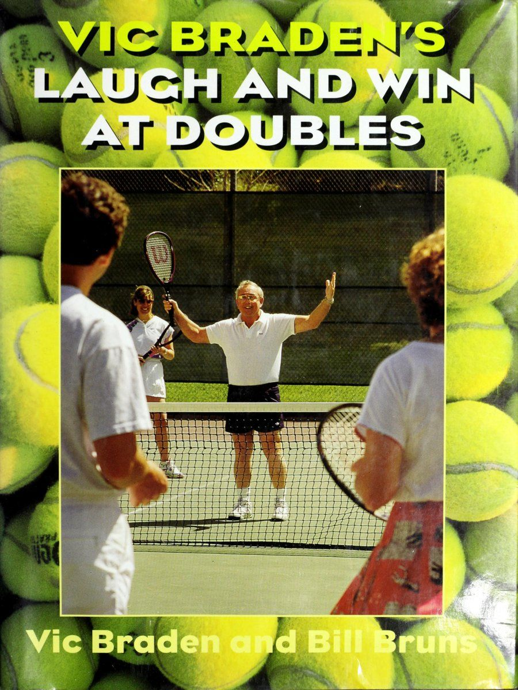
Figure 1: Vic Braden's Laugh and Win at Doubles original cover — The definitive guide to doubles tactics and team psychology.
Chương 1: Những Yếu Tố Cốt Lõi Của Đánh Đôi Xuất Sắc
BẤT CỨ NƠI NÀO tôi du lịch trong thế giới quần vợt, cho dù là tiến hành các phòng khám, phát biểu tại hội nghị chuyên đề hay xem các giải đấu, tôi đều được nhắc nhở rằng các nguyên tắc đánh đôi tốt hầu như không thay đổi qua nhiều năm: 1.
Chơi hết mình. 2.
Tấn công mọi cơ hội, cố gắng đến gần lưới nhất có thể cho cú đánh tiếp theo của bạn. 3.
Đội kiểm soát lưới sẽ kiểm soát điểm. 4.
Giữ bóng tránh xa người lưới. 5.
Buộc đối thủ của bạn phải đánh lên (từ dưới lưới), để đội của bạn có thể di chuyển lên và đánh xuống bằng một cú vô lê hoặc cú đánh từ trên cao dễ dàng hơn. 6.
Cùng nhau di chuyển như một đội.
SPIER | Những điều thiết yếu của việc tốt nhân đôi 7. 10. i 1, Đừng để chân bạn tê liệt; luôn luôn di chuyển - chạy, duỗi người, dự đoán.
Người ở gần lưới hơn được ưu tiên thực hiện bất kỳ cú đánh nào mà anh ta có thể chạm tới.
Thường xuyên liên lạc với đối tác của bạn.
Hãy trân trọng khả năng giữ bóng của đội bạn; ngay cả một cú lốp bóng tốt cũng buộc đối thủ phải giành được điểm thay vì được cộng một điểm.
Hãy vui vẻ, cười sảng khoái và cố gắng học hỏi trong suốt chặng đường.
Thật vậy, mặc dù tất cả chúng ta đều chơi đôi vì: những lý do khác nhau, nhưng chiến thuật, chiến lược và các kỹ năng quan trọng không bao giờ thực sự thay đổi - chỉ là tầm quan trọng tương đối của chúng.
A-C Khi một đội đánh từ đường cuối sân, có rất ít khoảng trống để đưa bóng qua đối thủ đã ở đúng vị trí, cách nhau 10 đến 12 feet. Các mục tiêu rất nhỏ và nguy hiểm. Ngoài ra, hãy chú ý cách các đối thủ cố gắng giữ nguyên khoảng cách khi họ di chuyển từ đường biên này sang đường biên khác để che chắn cho các cú đánh.
Ví dụ, các nghiên cứu của chúng tôi đã phát hiện ra rằng những cải tiến tích lũy về vợt trong những năm gần đây đã mang lại cho những tay vợt hàng đầu sức mạnh trong các cú đánh lệch tâm cao hơn khoảng 35% so với thiết bị trước đó. Điều này có nghĩa là ngay cả khi các tay vợt chuyên nghiệp bỏ lỡ điểm ngọt trên dây của họ, họ vẫn tạo ra ít cú đánh “mềm” hơn và vẫn có thể đánh với lực thực. Kết quả là, quả bóng luôn di chuyển nhanh trong các pha đánh đôi thời gian lớn và điều này nhấn mạnh tầm quan trọng của việc đọc ý định của đối phương khi anh ta đánh, nhận biết điều gì sẽ xảy ra với cú đánh của mình và sau đó di chuyển về phía quả bóng với bước đầu tiên nhanh. Tầm quan trọng tương đối của những kỹ năng này được áp dụng trong suốt chuỗi thức ăn. . Biết các yêu cầu chính của một cặp đôi tốt sẽ giúp xác nhận xem hiện tại bạn có ghép đôi với đúng người hay không đồng thời đưa ra nhiều câu hỏi cụ thể để hỏi - và giải quyết - vào lần tới khi bạn tìm kiếm đối tác (tôi sẽ khám phá điều này trong chương 2).
1. Luôn nghĩ đến TẤN CÔNG! Bắt đầu chơi nhân đôi “đúng cách”, nghĩa là cố gắng đánh bại một đội mạnh hơn @ Đội giành được quyền kiểm soát lưới thường chỉ còn cách một cú sút nữa là giành được điểm. với tiền đề cơ bản: Trận chiến thắng ở lưới. Tất nhiên, sức mạnh tương đối trong việc giao bóng và trả giao bóng là rất quan trọng, nhưng cuối cùng, đội kiểm soát lưới sẽ giành được số điểm lớn và kiểm soát trận đấu (xem ảnh 6).
Các đội đánh đôi tốt nhất là những đội trong đó mỗi tay vợt không ngừng phấn đấu để tiến về phía trước và tìm kiếm cơ hội đó khi anh ta đánh cũng như khi anh ta nghiên cứu ý định của đội đối phương. Những tay vợt cơ bản, trong các trận đấu đôi câu lạc bộ, thường có thể lùi lại và giành chiến thắng với khả năng tranh bóng, lốp bóng tuyệt vời, tính ổn định và sự kiên nhẫn không thể tin được. Thực tế, phòng khách của họ thường chứa đầy những chiến tích vì đối thủ mắc quá nhiều lỗi. Nhưng trong môn quần vợt đỉnh cao, một đội phòng thủ như thế này hiếm khi có thể đánh bại được một đội chơi lưới giỏi.
Tại sao việc giành quyền kiểm soát pháo đài lại quan trọng đến vậy?
Chà, trước hết, đội của bạn có cơ hội tốt hơn để kết thúc điểm nhanh chóng khi bạn và đồng đội của mình cùng ở trên lưới, cách nhau 10 đến 12 feet. Như ảnh 7 cho thấy, điều này mở ra sân của đối thủ và đặt mỗi bạn vào vị trí để tung ra những cú vô lê góc nhọn hoặc đánh đầu để giành chiến thắng chung cuộc.
Ưu điểm thứ hai là đội của bạn có thể tiếp cận lưới càng gần thì cấp độ đối thủ của bạn càng tăng. Người đánh bóng sẽ nhìn thấy bạn tiến về phía trước hoặc biết rằng bạn đã đạt được The Essentials of Good Double a a acremeareae ae a a a a a a a cremeareae ae a a a a a a a a cremeareae ae a a a a a a a a cremeareae ae a a a a a a a a a cremeareae ae a a a a a a a a a a a cremeareae ae a Khi một tay vợt phải cúi thấp người để vô lê bóng từ dưới mức lưới, anh ta phải nâng bóng lên, tạo cơ hội cho đối thủ thực hiện cú vô lê cao. ngồi trên đó, sẵn sàng thực hiện một cú đánh cất cánh, và anh ấy sẽ biết mình phải thực hiện - ngay bây giờ! - hoặc vấn đề đã kết thúc.
Thứ ba, bằng cách áp sát lưới, đội của bạn thu hẹp đáng kể các góc mà đối thủ của bạn có thể nhắm bóng qua bạn một cách an toàn từ đường cuối sân. Họ phải luồn kim bằng một ổ đĩa - thông qua một lỗ có thể chỉ khoảng một độ giữa hai bạn - hoặc thử một cú lốp bóng.
Thứ tư, rất ít đội có thể lốp bóng đủ tốt từ đường cuối sân để đẩy đối thủ ra khỏi lưới và ghi điểm. Ngay cả những vận động viên chuyên nghiệp cũng không thể lốp bóng sâu ba lần liên tiếp.
Bây giờ đừng hiểu lầm tôi ở đây. Nếu bạn mới làm quen với trò chơi này, bạn có thể thắc mắc: “Nếu việc chơi trên lưới quan trọng đến vậy, tại sao chúng ta không thể dựng lều trên lưới - cứ chạy lên đó và chơi?” Vấn đề là bạn cần có vũ khí để tấn công; bạn phải tiến lên đó với những cú giao bóng sâu, trả giao bóng chính xác và những cú vô lê mạnh mẽ. Nếu bạn thiếu những cú đánh này nhưng vẫn chạy về phía trước, các đội giỏi sẽ chỉ đơn giản là lốp bóng qua đầu bạn hoặc tấn công vào bên yếu của bạn.
Ngoài ra, chơi đánh đôi hung hãn với thái độ “xông rào, chiếm pháo đài” đòi hỏi phải có điều kiện và đạo đức làm việc mà bạn có thể không sẵn lòng — hoặc không chuẩn bị — để thực hiện. Và hiện tại bạn có thể thiếu các cú đánh cần thiết để thực hiện chiến lược này. Hoàn toàn thực tế, bạn có thể đang nghĩ, "Vic đang bảo chúng ta giao bóng và tấn công, vô lê, lên lưới, chạy lùi để lốp bóng - nhưng tôi không thể làm tất cả những việc đó. Tôi chỉ hạnh phúc khi được sống sót ngoài kia." V sẽ thừa nhận, chơi đôi như thế này có nghĩa là bạn phải liên tục di chuyển - di chuyển về phía sau quả giao bóng của mình, lao về phía trước theo đường chéo để che các cú vô lê và cú công bóng, và rút lui để thực hiện các cú lốp bóng. Bạn có thể không chuẩn bị cho thử thách, đặc biệt nếu bạn có thể đánh bại cú giao bóng tốt nhất của mình vào lưới và cú vô lê là một điểm yếu đáng chú ý và bạn không đủ thể lực để chơi theo cách này trong hai set và sống sót. Và tôi cũng thông cảm với thực tế là khi một số người già đi, họ không còn tốc độ, sự nhanh nhẹn và tự tin để tấn công lưới và đi lang thang trong khu vực đó khi họ đến đó. Trong trường hợp này, họ thực sự nên ở lại và thực hiện cú lốp bóng của mình. Nhưng cũng có rất nhiều tay vợt hiểu biết ở độ tuổi bảy mươi và tám mươi vẫn ở trên lưới và rất khôn ngoan khi biết khi nào nên đi và khi nào nên ở lại.
Nếu bạn còn băn khoăn về tất cả những điều này, tôi khuyên bạn nên dần dần kết hợp cách tiếp cận tích cực này vào chiến lược tổng thể của mình. Giao bóng và tấn công mọi cú giao bóng khác hoặc chỉ một lần trong một hiệp và bạn sẽ có nhiều thời gian để phục hồi trong các pha giao bóng chéo. Hơn nữa, phong cách thay đổi này có thể khiến đối thủ của bạn mất hứng thú bằng cách buộc họ phải trả giao bóng với độ chính xác cao hơn khi bạn lao vào lưới. Cũng hãy nhớ rằng bạn không cần một cú giao bóng sát thủ để vào lưới; chỉ cần giữ nó sâu và bạn sẽ thấy bạn có thể hiệu quả như thế nào.
Nếu bạn vẫn nghĩ, “Dù sao cũng cảm ơn, nhưng tôi chỉ muốn lùi lại và cố gắng giành chiến thắng từ đường cuối sân”, thì không vấn đề gì — nếu bạn thi đấu với những đối thủ cũng thích cắm trại ở đường cuối sân hoặc những tay vợt theo hệ thống phổ quát trong đó một tay vợt ở gần lưới và người kia lùi sâu.
Trên thực tế, ở trình độ trung cấp, việc lọt lưới không quan trọng bằng ở môn quần vợt xếp hạng 4,5/5,0; Đội đến đích trước thường vẫn mất điểm vì họ có xu hướng tung ra những cú vô lê yếu, họ dễ bị lốp bóng tốt hơn và thường xuyên ném bóng qua đầu vào lưới. Những người mới bắt đầu còn gặp nhiều rắc rối hơn; họ thường lao lên đó để thua trong The Essentials of Good Doubles Cag. Tay vợt trên lưới, chơi tích cực, thực hiện một cú ném bóng qua đầu ở giữa hai đối thủ bị bắt sâu. tốc độ nhanh hơn, nhưng tôi vẫn khuyến khích họ tấn công, vì cuối cùng đây là cách họ muốn chơi tốt hơn. :
Bạn có thể lùi lại và cố gắng giành chiến thắng từ vị trí sâu, nhưng hệ thống này không thể thành công trước các đội mạnh, hung hãn.
Ví dụ: ở bậc thang câu lạc bộ, bạn có thể thành công trước những đối thủ có cùng phong cách phòng thủ và các đội mới mới học trò chơi. Nhưng một khi những tân binh này học được cách di chuyển lên lưới, họ sẽ cú đánh vượt qua (Passing shot) những đội chỉ có thể chơi phòng ngự. Vì vậy, đội của bạn đạt đến một cấp độ nhất định, tùy thuộc vào khả năng của bạn trong việc giữ cho các đội mạnh mẽ được ghim vào đường cuối sân bằng những cú lốp bóng được đặt đúng chỗ và chịu áp lực liên tục khi họ lên lưới với những cú đánh trên cao và những cú chạm đất mạnh từ phía sau đường cuối sân (Baseline). Nhưng cuối cùng sự tiến bộ của bạn sẽ chững lại.
Nếu bạn muốn đội của mình tiếp tục thăng hạng ở câu lạc bộ hoặc giải đấu của bạn, bạn phải rèn luyện các cú đánh, kỹ năng di chuyển và thái độ tinh thần để giúp cả hai bạn chơi tích cực hơn. Và, thực sự, nếu bạn và đối tác của mình có những mối quan hệ ngắn hạn và ghét các cuộc biểu tình kéo dài, về mặt tâm lý, bạn chỉ có một lựa chọn duy nhất:
Học cách tấn công lưới. Thay vì cố gắng tấn công và giành chiến thắng từ vạch cuối sân, bạn phải suy nghĩ tích cực và sẵn sàng tiến về phía trước mọi cơ hội.
Điều gì sẽ xảy ra khi đối tác của bạn từ chối lên lưới như thế này?
Cậu sẽ có một diện mạo mới đấy, anh bạn. Mỗi khi anh ta lùi lại và để bạn ở trên lưới, một đội thông minh sẽ tấn công vào hông phải của bạn (nơi mà hầu như không thể lấy được vợt vào bóng), trừ khi bạn quay lưng lại như một dấu hiệu của sự phục tùng. Nếu bạn đứng đó chống lại sự giám sát của họ và cố gắng đánh lừa họ, thì bạn phải nhận những gì họ đưa cho bạn.
Nếu bạn cảm thấy chán nản khi chơi theo cách này, chỉ cần tìm một đồng đội mới. Nếu việc từ bỏ đối tác của bạn là sai lầm về mặt chính trị (“Vic, anh ấy là chồng tôi!”), thì hãy giúp anh ấy cải thiện cú vô lê và nhận thức tinh thần của anh ấy về cách chơi đôi. Nếu không, bạn phải học cách tận dụng vị trí lưới của mình bằng cách băng cắt bắt bài trên lưới (Poaching) hoặc vượt sớm về phía người giao bóng để thực hiện cú vô lê mang lại lợi nhuận dự kiến, không chỉ khi giao bóng mà trong suốt mỗi lượt đánh (xem trang 99).
2. Hãy coi đánh đôi như “quần vợt 10 giây”. Điểm nhấn quan trọng thứ hai trong đánh đôi là thời gian ở mức cao. Trong topflight, nhân đôi ở mọi nơi, hầu hết các điểm đều kết thúc quá nhanh - sau khi giao bóng, một cú trả bóng chạm đất, nhiều nhất là một hoặc hai cú vô lê hoặc một cú đánh qua đầu - đến mức cuối cùng bạn nên hình dung mình đang chơi những đợt quần vợt nhỏ kéo dài 10 giây.
Một điểm nhất quán về đánh đôi là bạn có 8 đến 12 giây phấn khích và sau đó bạn tiếp tục thực hiện lại, hết chuyến tàu lượn siêu tốc này đến chuyến tàu lượn siêu tốc khác.
Tuy nhiên, tôi vẫn phải đấu tranh với hình ảnh vẫn tồn tại ở các câu lạc bộ trên khắp thế giới, nơi những trận đánh đôi “một lên, một lùi” vẫn chiếm ưu thế (xem ảnh 10). Theo hệ thống này, hai tay vợt ở sâu - thường là người giao bóng và người nhận bóng - cố tình đánh bóng qua lại trong khi cố gắng giữ bóng cách xa hai tay vợt trên lưới. Về cơ bản, họ đang chơi đơn trong khi đối tác của họ, dán mắt vào tư thế sẵn sàng (Ready position), nhìn qua vai họ và đưa ra lời động viên - “Cố lên, Bertha!” Điều duy nhất mà những người mạng này nhận được là cái cổ cứng ngắc và làn da rám nắng một bên mặt; nếu một cú sút bất ngờ đến với họ, họ luôn ném nó vào lưới - “Ồ, tôi không mong đợi cú sút đó” - bởi vì họ không chuẩn bị trước.
Thật không may, như chúng ta sẽ thấy, việc nhân đôi “một lên, một lùi” chỉ thú vị nếu đội kia hứa sẽ chơi cùng.
Thay vì rơi vào cái bẫy đó, điều quan trọng là bạn và đồng đội của mình phải đánh giá cao việc mỗi tay vợt có rất ít thời gian và cơ hội để trở thành anh hùng hay kẻ ăn bám trong mỗi thời điểm. Điều này sẽ giúp bạn tập trung vào thực tế chứ không phải ảo tưởng rằng bạn có được những pha giao bóng kéo dài để tạo ra một cú đánh thắng hoặc cú đánh vượt qua (Passing shot) một cú đánh kém. Sẽ là không thực tế khi nghĩ rằng, sau khi bóng đi qua lưới hai hoặc ba lần, “Tôi sẽ lấy lại cú sút này và giữ bóng trong cuộc và cuối cùng chúng ta sẽ thắng được cú sút này,” ở cú sút thứ mười hoặc thứ mười hai.
Chơi đúng, một điểm đôi điển hình sẽ phát triển như thế này: Một người giao bóng và lao vào lưới khi người nhận bóng cố gắng trả bóng dưới chân mình. Tùy thuộc vào sự thành công của cú đánh trả này, người giao bóng giờ đây có cơ hội tung cú vô lê cho người chiến thắng từ trên lưới hoặc phải cúi xuống để thực hiện cú vô lê thấp hoặc nửa vô lê - một cú đánh phòng thủ nâng bóng lên và cho phép đối thủ của anh ta di chuyển để thực hiện cú vô lê chiến thắng (như ảnh 12 A-D cho thấy).
Tất cả điều này diễn ra nhanh chóng, và hàm ý cũng như yêu cầu rất rõ ràng: Vì những đội giỏi nhất trong nội dung đánh đôi tốt thường kết thúc điểm ở cú đánh thứ ba hoặc thứ tư (thậm chí đó là Điều cần thiết của đánh đôi tốt khi cả hai đội chơi theo hệ thống 'tăng giọng, lùi một bước'), điểm thường thuộc về tay vợt cơ bản với cú đánh chạm đất tốt nhất.
Lưu ý rằng cả hai tay vợt trên lưới vẫn sẵn sàng thực hiện Cơ hội vô lê, ngay cả khi bóng liên tục qua lại giữa các tay vợt cuối sân.
Đội ở phía trước đang cố gắng chơi “một lên, một lùi” với một đội biết cách chơi (cả hai tay vợt cùng nhau lao vào lưới ở mọi cơ hội). Tay vợt 2 sẽ gặp rắc rối lớn trừ khi đối tác của anh ta có thể thực hiện một cú lốp bóng tuyệt vời hoặc một cú đánh xoáy lên ngay trên lưới.
C D 2) A-D_ Sử dụng ảnh từ các cách bố trí khác nhau, chúng tôi cho thấy đội trả giao bóng đã chơi tốt như thế nào, tay vợt tôi giao bóng về phía trái tay của đối phương (A). Tay vợt 2 trả bóng chéo sân, cách xa người trên lưới và dưới chân người giao bóng đang lao tới (B). Người trả giao bóng cũng thực hiện cú sút vào lưới (C), nơi anh ta hiện đang ở vị trí kết thúc trận đấu bằng một cú vô lê đẩy bóng (D). không bình thường đối với các đội trung gian có điểm trung bình Hơn nữa, vì quả bóng hiếm khi có tới năm cú sút mỗi lượt đánh, trừ khi đối thủ "tiếp tục cú đánh vượt qua (Passing shot) lưới nhiều hơn hai hoặc ba lần trong trận đấu"), trong một lượt đánh điển hình, hãy chú ý cẩn thận đến điểm nhấn vuốt ve đầu tiên trong đánh đôi nên là cú sút đến với bạn, bởi vì theo thống kê thì quả giao bóng, quả giao bóng trả lại và cú vô lê là cú cuối cùng của bạn. Mặc dù lời nhắc này có thể - kéo theo cú lốp bóng, cú đánh trên cao và nâng cao áp lực mà bạn cảm thấy trên mỗi cú đánh bóng bền cuối sân (Groundstroke) của cú đánh. mà bạn đánh, nó cũng sẽ giúp cải thiện Những điều thiết yếu của đánh đôi tốt Bất cứ khi nào đối thủ cúi xuống để đánh bóng từ dưới lưới, bạn và đồng đội của mình nên tấn công. Ở đây, tay vợt ở phía trước giơ vợt lên và dự đoán một cú đánh thuận tay. Có lẽ anh ấy đúng, vì hầu hết các cú vô lê nửa vòng như thế này đều đi vào giữa, nhưng tốt nhất là bạn nên tiến về phía trước và cầm vợt ở vị trí thuận tiện cho việc thực hiện cú vô lê thuận tay hoặc trái tay. sự tập trung và sự tập trung mà bạn mang đến cho mỗi cú đánh. ồ
3. Luôn tìm kiếm các tình huống và cố gắng tạo ra những tình huống mà đối thủ của bạn đang đánh lên — và bạn có thể đánh xuống.
Nhìn chung, sau khi trả giao bóng, đội của bạn nên cố gắng giữ bóng ở mức thấp và ở giữa sân, đồng thời cố gắng chiếm quyền kiểm soát lưới trước khi đối thủ của bạn làm điều đó. Khi bạn có thể buộc đối thủ của mình thực hiện cú vô lê hoặc nửa cú vô lê từ dưới mức lưới, điều này sẽ đặt họ vào thế phòng thủ và giúp bạn có thể áp sát vào lưới, dự đoán một cú đánh trả sẽ cho phép bạn đánh xuống. Không ai trong số các bạn phải là người đánh bại thế giới để đạt được những cú vô lê và cú đánh đầu từ vị trí thuận lợi này.
Thật vậy, một trong những điều quan trọng nhất cần nhận ra về vô lê đôi là bạn càng đến gần lưới để thực hiện cú vô lê thì bạn càng cần ít tài năng để giành được điểm. Và càng lùi xa thì càng cần nhiều tài năng. Hầu hết tay vợt đều nghĩ “T không có nhiều tài năng nên phải ở lại” trong khi thực tế điều ngược lại mới đúng. Ở gần lưới, bạn có thể thực hiện cú vô lê ở mức 4) A-C_ Một đội càng đến gần lưới để thực hiện cú vô lê thì cơ hội đánh quả ném bóng càng lớn. Hãy chú ý góc mở rộng của một cú vô lê hung hãn như thế nào khi hai tay vợt thực hiện cú vô lê phía trước từ vạch giao bóng (A), xa hơn hai bước trong (B) và ngay trên lưới, một tay vợt khác gần hơn hai bước (C). Góc 130 độ chỉ cần cầm vợt trước mặt. Nhưng lùi lại 12 hoặc 15 feet đến khu vực đường giao bóng và chỉ có góc đánh 30 độ, cộng thêm bạn cần kỹ thuật tốt hơn và nhiều sức mạnh hơn để thực hiện cú vô lê.
Trong khi đó, đội của bạn không thể bị đẩy lùi bởi những đối thủ liên tục phải nhấc bóng khi họ cố gắng tiến lên trên lưới. Rất ít tay vợt trong lịch sử trò chơi này có thể thực hiện một quả bóng thấp và chuyển nó thành một cú vô lê tấn công thành công thực sự.
4. Biết vai trò của bạn - cá nhân và là thành viên của nhóm.
Khi bạn ở trong đội giao bóng, đây phải là lực đẩy cơ bản của bạn: Vào lưới... tấn công, tấn công, tấn công! Bạn và đối tác của bạn nên cố gắng giữ bóng trong cuộc - cách xa người trong lưới - và sau đó tìm kiếm cơ hội đầu tiên để kết thúc điểm bằng một cú vô lê hoặc một cú đánh đầu, hướng cú sút về phía đối phương hoặc đặt nó sâu và xuống giữa.
Khi bạn giao bóng trả lại, đội của bạn nên cố gắng giành lưới từ đội giao bóng (1) bằng cách đánh một cú trả bóng mạnh Những điều cơ bản của đánh đôi tốt i i 4-4 eS i St DASE GRE SE Coe Se Sa a a a 4+-+ Sia a ies ime ae Se ae SE ; "Bis ; €* shea ee ; F + se oar at om a i ' ¢ LLU ee ae ea is] Tay vợt ở gần lưới hơn luôn được ưu tiên thực hiện cú vô lê, ngay cả khi điều đó có nghĩa là xâm phạm lãnh thổ của đồng đội. Dưới chân máy chủ đang lao tới và di chuyển vào, vì bóng chậm sẽ buộc anh ta phải cúi thấp và ngăn anh ta thực hiện một cú đánh mạnh mẽ, (2) bằng cách lốp bóng, nếu đối thủ của bạn kiểm soát lưới (nhưng chỉ khi đó sâu quá!), hoặc (3) bằng cách khai thác bất kỳ sự thiếu tinh thần đồng đội nào của đối thủ, nhờ đó bạn đánh vào một phần trống của sân.
Ở phần sau của cuốn sách, tôi sẽ nói về thực tế là khi đội của bạn tấn công, đối thủ của bạn có thể lốp bóng, vì vậy điều này đòi hỏi bạn và đồng đội của mình phải biết cách rút lui nhanh chóng và cách trả đũa bằng đòn đánh trên cao.
5. Những con lợn sân đấu làm hỏng cuộc vui — và làm giảm khả năng thành công của một đội.
Có một ranh giới mong manh giữa tay vợt hung hãn đúng mức và con lợn sân. Về cơ bản, cả hai tay vợt trong một đội phải có quyền tự do đi bóng, dựa trên nguyên tắc cơ bản: Tay vợt ở gần lưới hơn sẽ được ưu tiên thực hiện cú vô lê. Vì vậy, nếu bạn có vị trí thuận lợi với đối tác của mình - và sự nhanh nhẹn thích hợp - đừng bao giờ ngại lao ngay về phía trước và thực hiện cú vô lê. Đừng sợ hãi trước câu hỏi “Bạn đang làm gì ở phía sân của tôi?” Đó là một hội chứng thua cuộc. Điều anh ấy thực sự muốn nói là, "Nhìn này, cộng sự, bạn càng đến gần tôi thì khả năng thua của chúng ta càng tăng lên." Thay vì bị đe dọa, bạn phải chen chúc vào lưới, phản ứng nhanh chóng và thoải mái cú đánh vượt qua (Passing shot) vạch giữa để thực hiện những cú đánh ở nơi bạn được ưu tiên.
Khi bạn đang nỗ lực bảo vệ đội bằng cách cố gắng thực hiện mọi cú sút thích hợp vào trung lộ, không ai có thể buộc tội bạn là một con lợn sân đấu. Nhưng bạn sẽ phạm tội khi cố gắng giành từng đường bóng mặc dù bạn quá chậm hoặc mất vị trí và làm gián đoạn cú đánh của đối tác. Hoặc, cũng có tính hủy diệt không kém, cô ấy bắt đầu nghĩ, “Đối tác của mình sẽ có được nó.” Lời buộc tội đối với bất kỳ đội nào là cô ấy tạo ra sự thiếu quyết đoán; ngay lập tức, chỉ một tay vợt biết điều gì sẽ xảy ra còn người kia không biết gì hoặc miễn cưỡng di chuyển, và điều này dẫn đến hỗn loạn vì không có khuôn mẫu nào được biết về cách chơi của họ với những quả bóng nằm giữa họ. Tay vợt không có manh mối sẽ trở nên lo lắng, do dự, sợ tin vào bản năng của mình. Vì vậy, cô ấy chuyền những quả bóng mà lẽ ra cô ấy phải chuyền bóng, buộc đối tác của mình, dù muốn hay không, phải thực hiện cú đánh, thường ở những vị trí bất lợi.
6. Tập trung vào ba cú đánh: giao bóng, trả giao bóng và vô lê.
Nếu đội của bạn đang theo đuổi một cách tiếp cận tích cực để đánh đôi bằng cách cố gắng giành chiến thắng trên lưới thay vì từ đường cuối sân, cả hai bạn nên tập trung vào việc thực hành giao bóng, trả giao bóng và vô lê. Đây là những cú đánh bạn sẽ đánh liên tục trong trận đấu, bất kể bạn đang chơi ở vị trí nào trong bốn vị trí khi bắt đầu bất kỳ điểm nào. Đánh đôi không cần phức tạp hơn thế nhiều. Nếu bạn và đối tác của bạn tương đối mạnh chỉ ở hai trong ba cú đánh nêu trên, trận đấu về cơ bản sẽ kết thúc, bởi vì đội của bạn sẽ bắn đi đánh lại những cú đánh đó.
7. Luôn lưu ý đến các quyết định thực hiện cú đánh tự động.
Qua nhiều năm, tôi đã nhận ra rằng tâm trí nên được lập trình nhiều hơn ở chế độ đôi hơn là đơn.
A-B Đôi khi các tay vợt ở cuối sân đánh quá thấp và mạnh và không có thời gian để vào lưới. Khi bạn chắc chắn rằng đối thủ đang chơi trên lưới của bạn sẽ không câu trộm và đồng đội của anh ta đang lùi về phía sau, hãy đánh một quả bóng cao hơn về phía sau (A), điều này sẽ giúp bạn có nhiều thời gian hơn để vào lưới và khiến cho cú đánh trả của đối thủ trở nên khó khăn hơn (B). Hãy chú ý cách đội tấn công bất ngờ sở hữu lưới trong khi đối thủ phải đối mặt với một tay vợt có độ nảy cao, khó đánh trúng.
Những điều cơ bản của đánh đôi hay a-C_ Hai tay vợt trên lưới sẽ luôn cố gắng giữ khoảng cách như nhau giữa họ, để họ không bị dàn ra và để lại một mục tiêu dễ dàng ở giữa (A). Di chuyển sang bên phải, họ giữ cho khu trung tâm không có xe cộ qua lại (B) và di chuyển sang bên trái, thật khó để cú đánh vượt qua (Passing shot) họ bằng một cú sút (C).
Bassacceecpenzersss i y z _—* :
Có quá ít thời gian giữa các cú đánh (với hai tay vợt bổ sung trên sân, bóng không di chuyển như nhựa đường giữa các cú đánh) và có sự xung đột liên tục xảy ra khi thi đấu với hai đối thủ (đồng thời cố gắng chơi hòa hợp với một đồng đội) nên bạn nên đơn giản hóa cách tiếp cận của mình và giảm bớt các biến số mà bạn phải đối mặt trong đầu.
Những tay vợt đánh đôi giỏi nhất bước vào trận đấu với một loạt các quyết định và phản hồi tự động đã được lập trình để họ có thể chơi với hành vi có mục đích nhưng đưa ra quyết định có ý thức ở mức tối thiểu.
Chơi theo bản năng như thế này rất khó thực hiện trừ khi bạn và đồng đội của mình xác định, thông qua kinh nghiệm, mỗi người nên cố gắng làm gì với những cú đánh cụ thể trong những tình huống cụ thể. Sau đây là một số quyết định cần đưa ra trước khi bước vào trận đấu: e Luôn di chuyển về phía lưới bất cứ khi nào bóng đi sâu vào phần sân đối phương. Buộc họ phải xâu kim bằng một cú sút xuyên qua giữa bạn hoặc đánh một cú lốp bóng khó qua đầu bạn. e Lob nếu bạn gặp rắc rối ở bất kỳ vị trí sâu nào, đặc biệt nếu đối thủ của bạn đã chiếm được lưới. e Khi đối thủ của bạn ở trên lưới, hãy giữ bóng ở vị trí thấp và ở giữa càng nhiều càng tốt. ¢ Di chuyển song song với đối tác của bạn - trái, phải, tiến và lùi, cách nhau khoảng 10 đến 12 feet (xem ảnh 17 A-C). e Nếu đội của bạn kiểm soát lưới và đối thủ cố gắng lốp bóng, bạn và đồng đội nên quay người và thực hiện ba bước nhanh về phía cuối sân. Ba bước sẽ giúp bạn vào được vị trí tốt trong 90% các cú lốp bóng. ¢ Luôn dự đoán và che chắn các cú đánh với mục đích cuối cùng là giành quyền kiểm soát lưới.
Hãy ghi nhớ những nguyên tắc khác nhau này khi tham gia thi đấu, giờ đây bạn có thể khám phá cách tối đa hóa cơ hội kết nối với một đối tác tương thích với bạn để thi đấu đôi, cả về kỹ năng quần vợt và tính cách.
Những điều cần thiết của việc đánh đôi tốt TÌM HIỂU ngoài sự kiện tiệc nướng “Doubles and Dogs” sắp tới của câu lạc bộ, khi bạn có thời gian và cơ hội để chọn một đối tác đánh đôi đang diễn ra, thì nỗ lực thêm đó là rất xứng đáng. Hãy thực hiện việc này một cách cẩn thận vì bạn có thể chọn được một người đồng hương trong nhiều năm tới nếu bạn may mắn. Tôi biết nhiều người ở các câu lạc bộ ở khắp mọi nơi (và bây giờ cả các giải đấu), những người đã là đối tác trong 10, 20, thậm chí 30 năm, và họ đều nói những điều giống nhau:
Khi bạn có một đối tác tốt, bạn sẽ luôn muốn chơi đôi.
Có tầm nhìn dài hạn sẽ khuyến khích bạn tìm một đối tác tương thích không chỉ với tư cách là một tay vợt mà còn với tư cách là một người mà bạn có thể thích chơi cùng, dù bạn thắng hay thua. Mặc dù chiến thắng một giải đấu cấp câu lạc bộ — hoặc Wimbledon — có thể là mục tiêu cuối cùng của bạn, nhưng việc chơi hết mình với đồng đội và tận hưởng cuộc thi đấu nên được ưu tiên. Trên thực tế, tôi muốn được bắt cặp với một người chiến thắng trước và sau đó mới lo lắng về các kỹ năng chơi quần vợt cụ thể, bởi vì sự hòa hợp là điều tốt nhất qua từng trận đấu. Tôi có thể hiểu tại sao bạn có thể sẵn sàng chấp nhận những cơn giận dữ thường xuyên trên sân của đối tác để đổi lấy cú trái tay sát thủ của họ, nhưng về lâu dài, trải qua nhiều thăng trầm với tư cách là một đội, sự thích thú cá nhân và khả năng tương thích là điều giữ hầu hết các mối quan hệ hợp tác với nhau.
Một cách hay để đánh giá một đối tác tiềm năng chỉ đơn giản là xem người đó chơi với những người khác. Bạn sẽ gặp chút khó khăn khi đánh giá một người vì một trận đấu quần vợt thường thể hiện những đặc điểm tính cách thực sự. Sau đó chọc xung quanh và hỏi một vài câu hỏi. Ví dụ, hãy cảnh giác với những người dường như có điểm yếu về khả năng tương thích, chuyển từ đối tác này sang đối tác khác.
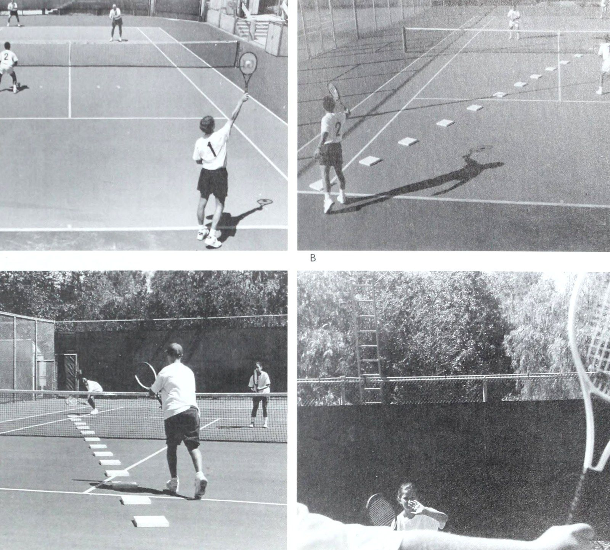
Figure 2: Return of serve and synchronized net rush sequence — Closing angles and maximizing psychological pressure.
Chương 2: Lựa Chọn Bạn Cặp Phù Hợp & Bí Quyết Kiểu Não Bộ
tiếp theo (mặc dù điều này chắc chắn không phải lúc nào cũng đúng, bằng chứng là người bạn tương thích của tôi Jack Kramer, người đã giành được năm giải Grand Slam với bốn đối tác khác nhau). Nếu một đối tác gadfly vẫn có vẻ hấp dẫn, hãy thử nói chuyện với các đối tác cũ của tay vợt và kiểm tra với người điều hành cửa hàng chuyên nghiệp và chắc chắn là chủ tịch giải đấu, người luôn biết tất cả điểm mạnh và điểm yếu của nhiều tay vợt khác nhau. Ở phần sau của chương này, tôi sẽ gợi ý cách bạn có thể sử dụng chuyên môn Brain Typing của Jonathan Niednagel khi bạn tìm kiếm và đánh giá đối tác phù hợp với tính cách và phong cách chơi của mình.
Kết hợp điểm mạnh và điểm yếu khi chơi tương đối “Kết hợp” là từ khóa khi bạn cố gắng tìm một đối tác có thể kết hợp hiệu quả với phong cách chơi ưa thích và tính cách của bạn.
Trước tiên chúng ta hãy xem xét các cặp đấu hấp dẫn.
Lý tưởng nhất là cố gắng ghép đôi với một tay vợt có điểm mạnh có thể giúp bù đắp cho những thiếu sót cụ thể của bạn nhưng cũng có những điểm yếu mà bạn có thể khắc phục bằng các kỹ năng cụ thể của riêng mình. Hai bạn - cá nhân và với tư cách là một đội - không cần mọi cú đánh trong sách đánh đơn để chơi đôi tốt, miễn là các kỹ năng tương ứng của bạn bổ sung cho nhau và bạn có thể phát huy điểm mạnh của nhau vào đúng thời điểm.
Bạn cũng phải xem xét các đặc điểm chơi tương ứng của bạn sẽ phù hợp như thế nào với tư cách là một đội, vì sự kết hợp nhất định giữa điểm mạnh và điểm yếu có thể gây ra thảm họa khi giành chiến thắng trong các trận đấu trước các đối thủ được đánh giá ngang nhau.
Ví dụ, nếu cả hai bạn mạnh ở cùng một cú đánh và yếu ở cùng một cú đánh, bạn sẽ có xu hướng thua một đội cân bằng hơn, bởi vì điểm yếu cụ thể của bạn sẽ có thể bị khai thác quá mức.
Không thể che giấu những khu vực dễ bị tổn thương này khi bạn đối đầu với một đội thông minh.
Cụ thể hơn, giả sử rằng khi đối tác của bạn đang nhận giao bóng, bạn thích dồn lưới và tung cú vô lê một cách mạnh mẽ. Điều này có nghĩa là bạn hoàn toàn phụ thuộc vào khả năng của cô ấy để trả bóng (1) khỏi tay vợt trên lưới và (2) liên tục ở hoặc gần chân của người giao bóng đang lao tới, điều này buộc người giao bóng phải đánh lên và cho phép bạn tấn công và giành điểm bằng cú vô lê hoặc cú đánh từ trên cao của bạn. Thay vào đó, nếu đối tác của bạn liên tục trả bóng lên cao và trong phạm vi dễ dàng của tay vợt trên lưới, điều này sẽ tạo ra những cú vô lê cho đối thủ của bạn và lãng phí sức mạnh đặc biệt của bạn, đồng thời làm hỏng niềm vui thi đấu của bạn.
Tốt hơn hết là bạn nên thua ít nhất trước một tay vợt có thể có những điểm yếu khác, nhưng ít nhất có giao bóng tốt giúp bạn có được niềm vui khi chơi trên lưới.
Đây là một điều cần lưu ý khác. Giả sử rằng đối tác của bạn thực sự có thể trả giao bóng dưới chân máy chủ đang lao tới và thích di chuyển vào, nhưng bạn ghét chơi trên lưới, thay vào đó thích lùi lại và chơi từ đường cuối sân.
Ở đây, sức mạnh nhân đôi của đối tác của bạn bị phủ nhận bởi điểm yếu cụ thể của bạn, điều này trong trường hợp này cho phép đội đối phương thoát khỏi thử thách của một cú trả giao bóng mạnh trong khi họ giành quyền kiểm soát lưới mà không bị kiểm soát.
Do đó, việc chọn đối tác đòi hỏi phải hiểu rõ vai trò của cả bốn tay vợt trong nội dung đánh đôi (xem chương 5) khi bạn tìm kiếm ai đó có thể giúp bạn tạo nên một đội chiến thắng. Sau đó, hãy sử dụng danh sách kiểm tra sau đây để thu thập thêm ý tưởng về các trận đấu hấp dẫn.
Chọn Đối Tác Phù Hợp | 29 Mục tiêu của tay vợt 2 là trả lại quả giao bóng chéo sân, cách xa tay vợt trên lưới và dưới chân người giao bóng đang lao tới. Điều này buộc người giao bóng phải đánh lên và cho phép đội nhận bóng tự tin di chuyển lên lưới, sẵn sàng thực hiện cú vô lê hoặc đánh đầu. Tay vợt 2 nên tiến dọc theo đường chấm để thu hẹp khoảng cách giữa mình và đồng đội; Sau đó, người giao bóng phải thực hiện một cú sút chéo góc khó để đưa bóng qua tay vợt 2 bên trái. ba) a Khi giao bóng, nếu đối tác của bạn trả bóng lên cao và trong phạm vi của một tay vợt hung hãn trên lưới, tay vợt đó sẽ liên tục ghim bạn vào lưới.
Danh sách kiểm tra đối tác e Hãy đảm bảo rằng đối tác tiềm năng của bạn không có ý định chơi theo phe bạn muốn chơi (tức là, sân “deuce” bên phải hoặc sân “quảng cáo” bên trái), trừ khi bạn chuẩn bị thỏa hiệp. Hầu hết tay vợt đã biết phe họ thích hơn (mặc dù đó có thể không nhất thiết phải là phe tốt nhất của họ) và sẽ bày tỏ sự không đồng tình khi phải chơi một phe xa lạ hoặc đơn giản là sẽ chơi kém ở phe này. Khi tay vợt phát triển một chương trình vận động cho một bên cụ thể, việc chuyển đổi sẽ mở ra một thế giới hoàn toàn mới cho họ và thường là một đề xuất thua cuộc trong thời gian ngắn. Tuy nhiên, một khi bạn đã chơi vài trận với một đối tác mới (và ngay cả khi bạn đánh giá mối quan hệ đối tác hiện tại của mình dựa trên lời khuyên mà tôi đưa ra trong cuốn sách này), đừng ngại thử nghiệm bằng cách đổi bên. Nhiều tay vợt không bao giờ nhận ra rằng sức mạnh của họ nằm ở việc chơi ngược lại với phe thông thường của họ cho đến khi bị một đối tác mới buộc phải làm như vậy - khi họ thua khi tung đồng xu hoặc cá tính thống trị có được sự lựa chọn của mình.
Ngoài ra, các đồng đội thỉnh thoảng chuyển đổi vị trí để phá vỡ mô hình thua cuộc hoặc khi một tay vợt nghĩ rằng mình có thể chơi tốt hơn ở phía bên kia và yêu cầu đồng đội của mình chuyển đổi.
Các đối thủ chuyên nghiệp giữ một cuốn sách về điểm mạnh và điểm yếu của đối thủ từ một vị trí cụ thể, nhưng cuốn sách đó sẽ biến mất trong lần đầu tiên họ đổi bên.
Trước khi hợp tác lâu dài vào năm 1992, Gigi Fernandez và Natasha Zvereva trước đây đã từng chơi cùng nhau “và điều đó thật không tuyệt vời,” Fernandez nói. “Tôi nghĩ đó là vì Natalia đang chơi trái tay và lúc đó tôi đang chơi thuận tay.
Lần này, tôi nói với cô ấy rằng chúng ta nên thử theo cách khác - rằng tôi nên chơi trò quảng cáo và cô ấy nên chơi trò lừa đảo. Sau đó, các danh hiệu Grand Slam bắt đầu có chỗ đứng. e Nếu bạn thuận tay phải và thích chơi bên trái, bạn có thể muốn một người thuận tay trái, để đội của bạn có hai tay thuận tay ở giữa. Ngoài ra, người thuận tay trái có thể thích phía bên phải nếu anh ta có cú trả giao bóng trái tay “phẳng”, xoáy xuống, bởi vì cú xoay tự nhiên của anh ta tạo ra một cú đánh đi xa khỏi tay vợt trên lưới. ¢ Có lẽ bạn là một tay chơi hào nhoáng, thích nắm bắt cơ hội nhưng lại chơi thất thường và nhận ra rằng cần có một đối tác bình đẳng, ổn định và đáng tin cậy. ¢ Nếu bạn đi chậm, tốt hơn hết hãy chắc chắn rằng bạn tìm được ai đó nhanh, hoặc ít nhất là nhanh hơn bạn. Hai vận động viên cần cù, ngay cả khi có kỹ năng chuyền bóng tốt, cũng hiếm khi giành chiến thắng trong nhiều giải đấu. e Chiều cao cũng có thể là một yếu tố. Nếu bạn tương đối thấp, một đồng đội cao hơn có thể giúp bù đắp, đặc biệt nếu bạn có thể đóng góp tốc độ chân lớn hơn cho đồng đội. Khi Lisa Raymond (5'5'') và ngôi sao đánh đơn sắp ra mắt Lindsay Davenport (6'2") thành lập quan hệ đối tác vào năm 1994 (và đánh bại Fernandez và Zvereva, đội nữ xuất sắc nhất thế giới, chỉ trong giải đấu thứ tư của họ cùng nhau), Raymond lưu ý: “Lindsay có thể bao quát nhiều quả bóng cao hơn và cô ấy có sải cánh mà tôi không có. Có thể nói, tôi có bánh xe. Tôi di động hơn và gần mặt đất hơn.” e Nếu bạn thích chơi trên lưới, hãy tập trung vào việc tìm một người có thể trả giao bóng ở vị trí thấp trên lưới và lý tưởng nhất là ở gần chân người giao bóng đang lao tới. Điều này sẽ giúp bạn có cơ hội giành được nhiều điểm với những cú vô lê và cú đánh đầu ở lượt đánh thứ ba của cuộc biểu tình.
Trên thực tế, nếu cá nhân tôi phải chọn một đối tác chỉ có một lựa chọn cụ thể Chọn Đối tác phù hợp - 31 Khi một người thuận tay phải có một đối tác thuận tay trái, người thuận tay trái thường sẽ chơi bên phải để đội có hai cú vô lê thuận tay và đánh đầu ở giữa. sức mạnh, và tất cả các cú đánh khác của anh ta đều tầm thường, tôi sẽ nhấn mạnh vào việc trả giao bóng. Kỹ năng cụ thể đó sẽ giúp chúng tôi tiếp tục trận đấu bằng cách luôn mang lại cho chúng tôi khả năng bẻ giao bóng, bởi vì tôi sẽ lên lưới, tận dụng sự nhanh nhẹn của mình (vâng, nhanh chóng!), khả năng dự đoán tốt và cú vô lê mạnh mẽ. Sau đó, trong lần giao bóng của mình, tôi sẽ đến và tham gia cùng đối tác của mình trên lưới, nơi quyết định đánh đôi. (Trở lại thời trung học, ở Monroe, Michigan, tôi đã thắng rất nhiều giải đấu với những đối tác không nhanh bằng tôi và rất vui khi nhận vai trò của họ: Giữ bóng trong cuộc, dù sâu hay ngắn, và cho Braden cơ hội băng cắt bắt bài trên lưới (Poaching). Đó là một sự cân bằng tuyệt vời. Các đối tác của tôi khá coi trọng trách nhiệm của mình và tôi thích băng cắt bắt bài trên lưới (Poaching); đó là niềm vui thực sự ở nội dung đánh đôi đối với tôi. Sau này, trong giải đấu chuyên nghiệp đầu tiên của mình, tôi gần như đã thắng Bobby Riggs một set, đuổi theo mọi thứ cho đến khi kiệt sức và thua trận. Vì một lý do nào đó, Bobby vẫn nhớ trận đấu mà chúng tôi chơi ở Cleveland Arena 40 năm sau và sẽ nói với mọi người bất cứ khi nào chúng tôi gặp nhau, “Cậu bé Braden đó thực sự rất nhanh.”) Đối đầu về tính cách Việc tìm kiếm đối tác lâu dài “phù hợp” cũng yêu cầu một số việc tìm kiếm tâm hồn quan trọng (21) Hãy đếm phước lành của bạn khi bạn có một đối tác có thể trả giao bóng bằng cách tích cực di chuyển về phía trước quả bóng và đẩy nó ra xa đối thủ trên lưới, ở cả hai bên thuận tay và trái tay của anh ta. về phần bạn, về mặt thành thật với bản thân về việc bạn nên chơi cùng ai từ quan điểm tâm lý và cạnh tranh. Mặc dù kỹ năng chơi quần vợt của bạn có thể phù hợp với một đối tác tiềm năng, nhưng anh ấy hoặc cô ấy có chia sẻ cách tiếp cận trò chơi của bạn không? Còn về khả năng tương thích cá nhân và các yếu tố tính cách như cái tôi, tinh thần cạnh tranh, kiểm soát cảm xúc và nhu cầu củng cố tích cực của hầu hết mọi người thì sao?
Việc bạn đặt điểm nhấn ở đâu sẽ tùy thuộc vào mức độ ưu tiên của bạn. Hãy tự hỏi bản thân hai câu hỏi quan trọng sau: (1) Mục tiêu chính của bạn là thi đấu mang tính cạnh tranh nhưng vẫn vui vẻ với người bạn yêu thích, trong và ngoài sân đấu? hoặc (2) Bạn có mục tiêu hẹp hơn không, trong đó việc giành được một chiếc cúp khổng lồ - hoặc chức vô địch giải đấu - mới là điều quan trọng, ngay cả khi điều đó có nghĩa là phải chấp nhận một đối tác đôi khi khó tuân theo? Nếu chiến thắng thực sự được ưu tiên hơn thì bạn có thể phải hy sinh một số niềm vui trong khi phải chịu đựng một số khía cạnh nhất định trong tính cách của đối phương.
Vấn đề về tinh thần cạnh tranh Nếu bạn vẫn chưa quyết định về một đối tác tiềm năng, điều rất quan trọng là phải đánh giá mức độ cạnh tranh của cô ấy khi nói đến đánh đôi. Nếu bạn là một người hung hăng và thực sự muốn Chiến thắng trong việc Chọn đối tác phù hợp nhưng bạn đang dự tính chơi với một người - ít nhất là bề ngoài - dường như không lo lắng nhiều về kết quả cuối cùng, thì bạn có thể nên tránh quan hệ đối tác. Bạn cũng không nên kết hợp với kiểu tay vợt “chiến thắng là tất cả” nếu những thứ khác về đánh đôi quan trọng hơn đối với bạn.
Điều quan trọng là sự đồng bộ hóa tâm lý. Dưới đây là một số câu hỏi bạn có thể hỏi đối tác tiềm năng như một cách để dự đoán xem tính cách và kỳ vọng của bạn sẽ phù hợp đến mức nào. Hãy ngồi xuống với người đó (người mà bạn có thể đã biết với tư cách là bạn bè, người thân hoặc ai đó mà bạn đã xem thi đấu ở câu lạc bộ) và trò chuyện với tinh thần, “Tôi là ai, còn bạn thì sao?” Vì không phải lúc nào chúng ta cũng đánh giá bản thân một cách chính xác và khách quan nên đây không phải là cách chắc chắn để xác định khả năng tương thích, nhưng đó là một sự khởi đầu. (Danh sách các câu hỏi này cũng nên được nêu ra với những người đã từng chơi với đối tác tương lai của bạn.) e¢ Chiến thắng đối với bạn quan trọng như thế nào? Kỳ vọng của bạn là gì trong trường hợp chúng ta hợp tác? Nếu bạn không thể chịu đựng được việc thua và muốn thắng mọi trận đấu nhưng lại phải chơi với một người dường như không có tâm huyết trong cuộc thi, thì bạn sẽ thường xuyên thấy mình quá thất vọng. ¢ Khả năng cạnh tranh của bạn nhất quán đến mức nào? Bạn có thích làm việc chăm chỉ không? Hầu hết chúng ta đều thích chơi với những người cố gắng cống hiến hết mình, dù thắng hay thua trong suốt trận đấu. Vì vậy, hãy cố gắng sàng lọc sớm người bắt đầu mất hứng thú khi đội tụt lại phía sau hoặc người đôi khi muốn chơi hết mình nhưng đôi khi lại tỏ ra rõ ràng rằng anh ta muốn làm việc khác hơn. e Khi bạn thua cuộc, bạn cảm thấy thế nào? Ngay cả khi cá nhân bạn đang chơi tốt, bạn có xu hướng phản ứng thế nào? Một lý do khiến bạn nên tìm kiếm một đối tác có thể nói chuyện thành thật với mình là vì bạn không muốn bị ngạc nhiên - hoặc bị sốc - trước hành vi của anh ấy. Có đủ những bất ngờ về mặt cảm xúc trong một trận đấu bình thường. e Khi bạn chơi kém trong một trận đấu cụ thể, bạn thường phản ứng thế nào? Bề ngoài bạn có dễ xúc động không? Hay bạn giữ nó trong chai? Sự trung thực được đánh giá cao ở đây vì một số tay vợt kìm nén khả năng cạnh tranh thực sự của họ cho đến khi họ mắc một lỗi đặc biệt nghiêm trọng rồi đột nhiên bộc phát như một kẻ hoang dã, điều này chắc chắn có thể gây bất an và xấu hổ. e Bạn muốn đối tác của mình hành động như thế nào khi bạn chơi không tốt, hoặc khi bạn đánh trượt một cú đánh quan trọng hoặc đánh một cú đánh qua đầu dễ dàng? Bạn thích nói chuyện động viên hay im lặng hơn? Bạn có xu hướng đối xử với bạn đời của mình như thế nào trong hoàn cảnh tương tự?
Bạn có bực tức không? Hoặc bạn có thể rũ bỏ nó? Trong những hoàn cảnh căng thẳng và cạnh tranh, tôi nghĩ mọi người đều trân trọng đối tác hiểu rằng bạn đang cố gắng hết sức và bạn không cần phải bị nhắc nhở rằng mình đang chơi kém. Công việc của đối tác là dành chút thời gian để tay vợt đang gặp khó khăn lấy lại sự tự tin của mình bằng cách băng cắt bắt bài trên lưới (Poaching) và cố gắng bao quát sân nhiều hơn. Một tay vợt thoải mái có cơ hội tốt hơn để khôi phục trò chơi của mình khi đồng đội của anh ta cho anh ta biết theo một cách nào đó, “Này, chúng ta đã từng rơi vào tình huống này trước đây và chúng ta đã giải quyết được nó,” và anh ta tìm ra điều gì đó để cười. Điều này chắc chắn không được thực hiện bằng những lời nhắc nhở tinh tế về lối chơi tệ hại của anh ấy.
Nếu bạn có thể nêu những câu hỏi như thế này và trao đổi thẳng thắn với đối tác cuối cùng của mình thì mối quan hệ đôi của bạn sẽ trở nên thoải mái và bổ ích hơn cho cả hai bạn. Bằng cách hiểu nhau như vậy ngay từ đầu và thực tế về những gì bạn đang tham gia, bạn sẽ giảm thiểu những hiểu lầm và bất ngờ tiềm ẩn mà cuối cùng có thể làm xói mòn và phá hoại mối quan hệ đối tác.
Tìm kiếm một người bạn đời hòa hợp không phải lúc nào cũng có nghĩa là hai bạn cần phải có tính cách giống nhau. Trên thực tế, tôi đã theo dõi một số đội tuyệt vời trong nhiều năm có tâm lý và cảm xúc ổn định mà không có lý do rõ ràng. Một tay vợt náo nhiệt, người còn lại bình tĩnh và tự chủ, nhưng họ hiểu nhau và hưởng lợi từ sức mạnh tổng hợp đó, trong đó một người là tác nhân xoa dịu những thời điểm hỗn loạn trong trận đấu trong khi người kia chọc tức khi đội cần nâng đỡ.
Brain Typing có thể giúp ích ở đâu Trong phần giới thiệu, tôi đã đề cập đến Jonathan Niednagel, một chuyên gia trong việc xác định các loại tính cách cụ thể và các kỹ năng vận động đi kèm thông qua Brain Typing. Theo Niednagel, “Kỹ thuật đánh giá tính cách này sẽ giúp mọi người chọn được bạn chơi quần vợt phù hợp và nó sẽ giúp mọi người xác định và hiểu được người không hợp nhau”. Ông lưu ý rằng một khi mọi người có hiểu biết cơ bản về Brain Typing (ví dụ: một khía cạnh là sự thống trị của não trái so với não phải), họ có thể chọn nhiều loại não khác nhau làm đối tác, nhưng vì những lý do khác nhau.
Ví dụ, nếu các mối quan hệ có ý nghĩa với bạn hơn là thắng hay thua, thì bạn nên chọn một đối tác thân thiện, để hai người có thể cười sảng khoái khi chơi. Bạn có thể không thắng nhiều trận đấu (nhưng sau đó bạn lại có thể thắng), nhưng bạn vẫn cố gắng và có một khoảng thời gian tuyệt vời. Kiểu “EFJ” năng lượng cao, thân thiện và có tổ chức rất mạnh về các mối quan hệ, duy trì sự hòa hợp và hòa đồng với mọi người. Rất nhiều phụ nữ điều hành các giải quần vợt và câu lạc bộ quần vợt đều như vậy và họ thường thấy mình kiệt sức sau khoảng sáu tháng bởi tất cả những cuộc đấu đá nội bộ và nỗ lực giữ hòa bình giữa nhiều phe phái nhỏ dường như luôn tồn tại.
Niednagel nói, Chúng tôi biết có 8 loại não “suy nghĩ” và 8 loại não “cảm giác” trong số 16 loại mà Jung đã xác định (và chúng tôi có thể xác định được 32 loại khi chúng tôi tiến bộ hơn với các thử nghiệm và quan sát của mình). Những loại cảm giác có xu hướng hài hòa hơn nhiều; họ có thể trở nên cạnh tranh, nhưng khi nó kết thúc, họ thường không nổi điên hay mang ác cảm. Trong các trận đấu đôi, kiểu người này có thể muốn chọn một đối tác được xác định là kiểu người có cảm giác não phải, vì người này thường chấp nhận rủi ro và khỏe mạnh hơn kiểu người cảm giác não trái. Hoặc, bạn có thể chọn kiểu người có thể hơi xúc động trong trận đấu nhưng vẫn ở đó để động viên bạn về mặt tổng thể và hạnh phúc sau đó. Có một mức trung bình vui vẻ ở đây - bạn vẫn có thể giành chiến thắng với kiểu cảm giác.
Lấy 16 loại não đã được xác định, Niednagel xếp chúng thành bốn nhóm:
Một nhóm chuyên về nhận thức chiến thuật.
Họ liên tục suy nghĩ về những gì đang diễn ra ngay lúc này và “Làm cách nào tôi có thể nắm bắt được điều đó và tận dụng điểm yếu của người đó ngay lập tức?” Chọn đối tác phù hợp Tất nhiên, loại tay vợt này sẽ rất tuyệt nếu có đối tác đánh đôi.
Nhóm thứ hai thiên về chiến lược hơn. Khi những cá nhân này ở trong một đội thua cuộc, họ nghĩ về trận thua đó sau đó, mổ xẻ mọi sai sót, cố gắng tìm ra cách đội kia đã sử dụng chiến lược và chiến thuật tốt hơn để đánh bại họ. Và sau đó họ cố gắng đưa ra chiến lược để phản công chiến lược đó vào lần tiếp theo hai đội gặp nhau.
Nhóm ba yêu thích hậu cần. Về cơ bản, những tay vợt này làm việc rất chăm chỉ, cố gắng thực hiện mọi thứ một cách chính xác - các nguyên tắc cơ bản về vuốt, mọi chức năng cơ học nhỏ - rằng đây chủ yếu là những gì họ nghĩ tới và rất thường xuyên họ bỏ qua chiến lược và chiến thuật. Trên thực tế, họ có thể có một cú đánh hoàn hảo nhưng họ không làm gì với nước đi của mình và họ thua cuộc.
Và nhóm thứ tư quan tâm nhiều hơn đến các mối quan hệ và sự hòa hợp cá nhân; họ đang suy nghĩ trước hết về việc thích những gì họ đang làm và chơi với những người mà họ thích. Vì vậy, họ ghét chơi với một số người nhất định và sẽ trở nên cực kỳ kích động trước một số trận đấu nhất định vì những người mà họ đang chơi.
Niednagel nhấn mạnh rằng mọi người đều có tất cả những khả năng này theo một nghĩa nào đó nhưng mạnh hơn nhiều ở một số lĩnh vực nhất định so với những lĩnh vực khác.
Khi bạn hiểu các nhóm này, bạn có thể dễ dàng nhận ra rằng nếu bạn thuộc một loại người nhất định, bạn có thể cần một nhà chiến thuật làm đối tác đánh đôi của mình để giữ cho đội của bạn tiếp tục trận đấu vì cá nhân bạn không thể suy nghĩ về mặt chiến thuật khi chơi. Bạn gặp khó khăn khi theo dõi điểm số.
Một sự kết hợp thú vị khác xuất hiện trong các trận đấu đôi nhưng có thể bị ngăn chặn bởi nhận thức về Brain Typing là một đội trong đó một đối tác thích lên chiến lược cho mọi thứ nhưng đối tác của anh ta nói: "Đừng nhồi cho tôi tất cả những thứ rác rưởi đó; tôi chỉ muốn đánh bóng." Họ luôn xung đột vì một tay vợt đang đọc sách và nghiên cứu video trong khi người kia chỉ muốn đi theo dòng chảy.
Rõ ràng họ là những loại não không khớp nhau.
Lấy gợi ý từ Niednagel, đây là một ví dụ khác để bạn cân nhắc khi tìm kiếm đối tác. Có những người đơn giản là không thích bị buộc phải đưa ra những quyết định nhanh chóng, điều đó có nghĩa là họ đang thiếu một yêu cầu tinh thần cơ bản để đánh đôi.
Những người hướng nội, thuận não trái, thích thu thập dữ liệu và dành nhiều thời gian để tìm hiểu dữ liệu này không phải là những tay vợt đánh đôi tối ưu của bạn và thi đấu tốt hơn trong các trận đánh đơn, đặc biệt là trên sân đất nện chậm hơn. Đối với những người trong số các bạn có thể nhận ra mình có xu hướng thận trọng này, việc chơi đôi với một đối tác không phán xét có thể mang lại lợi ích to lớn. Chơi đôi sẽ buộc bạn phải trở thành người đưa ra quyết định nhanh hơn đồng thời cải thiện kỹ năng chuyền bóng của mình.
Theo nghĩa tương tự, một số loại não nhất định là người chấp nhận rủi ro; họ có kỹ năng vận động tinh rất tốt và thích lên lưới nhưng lại vô tình chọn một đối tác đánh đôi không vào lưới và ghét chơi trên đó. Điều này một lần nữa dẫn đến những tranh cãi lớn. Tay vợt năng nổ biết rằng cả đội phải chơi trên lưới - cùng nhau - thường xuyên nhất có thể để giành chiến thắng; người này biết rằng một tay vợt ở gần lưới có thể thực hiện cú vô lê ở góc khoảng 130 độ, trong khi tay vợt lùi lại và thực hiện cú vô lê từ xung quanh đường giao bóng chỉ có góc đánh xa đối phương khoảng 30 độ và phải là một vận động viên vô lê điêu luyện hơn. Tỷ lệ cược cuối cùng sẽ thuộc về đội thực hiện cú vô lê thường xuyên hơn từ gần lưới, trái ngược với đội nằm phía sau. Vì vậy, rõ ràng là bạn nên cố gắng chơi với một người hung hãn, người có thể vào lưới và giành được góc vô lê đó từ phía đội đối phương. Ngược lại, bạn nên tránh tay vợt chọn giữ nguyên đường cuối sân (Baseline) và không muốn thay đổi.
Phần lớn điều này liên quan đến bản chất tâm lý của một người. Dữ liệu của Niednagel cho thấy một số người sẽ không lên lưới vì họ thiếu yếu tố chấp nhận rủi ro, và điều này là do họ suy nghĩ ở phần não bảo thủ, ở phía sau bên trái. “Việc họ nghĩ đến việc lên lưới là một chuyện điên rồ,” anh nói. “Vì vậy, nếu đối tác của bạn là một tay vợt tài năng, có thể di chuyển nhưng không chịu mạo hiểm, thì có thể cảm giác an toàn mà anh ấy có được khi ở lại lớn hơn cảm giác phiêu lưu và mong muốn chiến thắng của anh ấy.” Như Niednagel nhấn mạnh, “Điều luôn cần nhớ về loại não là mặc dù lời khuyên có ý nghĩa (ví dụ: lao vào lưới bất cứ khi nào có cơ hội!), một số tay vợt đơn giản là không quan tâm vì họ có tính cách cố định và cứng nhắc. Vì vậy, nếu bạn có loại não có xu hướng hành động và chơi tích cực, hãy tránh nỗi đau khi chơi với một người đơn giản là không muốn chơi kiểu đánh đôi này.” Tuy nhiên, anh ấy nói thêm rằng “nếu họ có thể học cách hòa hợp với nhau, những kiểu người đối lập nhau có thể là những đối tác quần vợt lý tưởng.
Ví dụ, một người có năng lượng cao, có tổ chức có thể được bổ sung bởi một đối tác ít năng lượng hơn (đặc biệt là ngoài sân đấu), có khả năng thích ứng. Cả kỹ năng tinh thần và thể chất của họ đều có thể hỗ trợ đội, giống như Pam Shriver và Martina Navratilova đã từng chứng minh.” Những cặp vợ chồng Đồng nghiệp của tôi, Bud Collins, từng nói: “Hãy nói chuyện với bất kỳ nhà tư vấn hôn nhân nào và bạn sẽ biết rằng những cặp vợ chồng khác nhau đã gây ra nhiều vụ ly hôn hơn mẹ chồng”. Nhưng tôi thích việc vợ và chồng muốn chơi cùng nhau, miễn là họ đã thông báo rõ ràng lý do tại sao họ quyết định cặp đôi. Trong tình huống này, cũng như trong các quyết định hình thành quan hệ đối tác khác mà tôi đã thảo luận, chìa khóa luôn là sự giao tiếp - cởi mở và trực tiếp.
Dưới đây là một số câu hỏi để bạn và vợ/chồng bạn suy nghĩ và hỏi nhau trước khi cam kết chơi cùng nhau như một đội nghiêm túc, có tính cạnh tranh ngoài những sự kiện xã hội và từ thiện xung quanh thị trấn. Hãy nhớ rằng, ngay cả khi bạn có cuộc hôn nhân hạnh phúc, bạn vẫn là hai con người khác nhau cùng chơi trên sân quần vợt - bất kể động cơ và phần thưởng của bạn là gì - và bạn mang theo những mục tiêu và giá trị cạnh tranh khác nhau. Đây là lúc rắc rối thường nảy sinh nếu bạn không thảo luận trước những vấn đề có khả năng gây chia rẽ này và thực tế là trong suốt mối quan hệ hợp tác của bạn. 1.
Bạn có cảm thấy mình có khả năng từ chối mối quan hệ hợp tác này trước khi nó bắt đầu không? Liệu bạn có thể từ bỏ nó nếu bạn cảm thấy việc chơi cùng nhau thực sự gây bất lợi cho cuộc hôn nhân của bạn không? 2.
Khi chơi cùng nhau, việc chọn bạn đời phù hợp khiến bạn khó chịu nhất về hành vi của vợ/chồng mình là gì? Khi nào hành vi của anh ấy hoặc cô ấy làm bạn mất tập trung vào quần vợt? 3.
Khi bạn mắc lỗi và chơi kém, ngôn ngữ cơ thể nào của vợ/chồng bạn thể hiện khiến bạn phát điên? 4.
Chơi cùng nhau có gì thú vị?
Bạn nên cố gắng chơi cùng nhau thường xuyên như thế nào? Khi nào bạn sẽ thực hành? Trong khi đó, hãy tính đến khả năng một người đã kết hôn phải giành chiến thắng nhưng người kia cũng không quan tâm lắm. Hoặc một tay vợt ghét tập luyện và thích đánh đơn giữa các trận đấu, trong khi tay kia thích tập luyện, biết rằng nếu muốn đánh đôi tốt và muốn thắng thì bạn phải tập luyện. Ngoài ra còn có các khía cạnh xã hội cần xem xét, chẳng hạn như ở đâu, người chồng có thể muốn quanh quẩn ở câu lạc bộ và thực sự tham gia, trong khi vợ anh ta chỉ muốn chơi trận đấu của họ và rút lui vội vàng về nhà?
Điều quan trọng là phải băm nhỏ những điều này để nhân đôi có thể giúp hôn nhân thịnh vượng. Trên thực tế, câu trả lời cho các câu hỏi của bạn có thể làm bạn ngạc nhiên và có thể tiết lộ lý do tại sao bạn và vợ/chồng bạn không bao giờ nên chơi cùng nhau hoặc thực sự có thể giúp mang lại sự hiểu biết tốt hơn cho mối quan hệ hợp tác. Ngược lại, điều thường xảy ra là người chồng cố gắng bắt người phụ nữ chơi theo cách anh ta muốn cô ấy chơi và tuân theo những quy tắc mà anh ta đặt ra. Và điều đó không chỉ đơn giản có nghĩa là khuyến khích cô ấy ở lại trong các con hẻm khi anh ấy cố gắng bao quát phần còn lại của sân. Vấn đề là anh không thể hiểu tại sao vợ anh lại không hào hứng với đội đánh đôi của họ như anh, không hào hứng với việc tập luyện, không hào hứng bằng việc luyện lại trận đấu họ vừa thi đấu. Và tất nhiên, mọi chuyện cũng diễn ra theo chiều ngược lại với những người phụ nữ yêu thích sự cạnh tranh và toàn bộ nền quần vợt nhưng lại có những người chồng tự mãn khi nói đến những cuộc nói chuyện cứng rắn về quần vợt.
Dù thế nào đi nữa, nếu về cơ bản bạn chơi để làm hài lòng vợ/chồng mình, điều này có thể dẫn đến rắc rối bằng cách tạo thêm căng thẳng tiềm ẩn cho mối quan hệ hợp tác, trừ khi hai bạn có quan điểm lành mạnh về lý do tại sao các bạn chơi cùng nhau. Một khía cạnh nguy hiểm khác của đội vợ chồng là mọi người sẽ nói những điều gây tổn thương cho những người họ yêu thương, những nhận xét chê bai mà họ sẽ không bao giờ nói với những người khác trên sân quần vợt. Chỉ cần lưu ý rằng đây là một đặc điểm có thể bộc lộ dưới áp lực khi cùng nhau chơi một môn thể thao cạnh tranh trong một tình huống căng thẳng.
Cuối cùng, hãy cố gắng nhận ra rằng bạn không cần phải chơi quần vợt cùng nhau như một sự khẳng định rằng bạn có một cuộc hôn nhân hạnh phúc. Ngay cả khi đó là một sự kiện gây quỹ cho tổ chức từ thiện yêu thích của dì Ethel, nếu bạn không muốn chơi đùa với vợ/chồng mình, hãy nói như vậy. Tại sao lại làm hỏng cuộc vui của chính bạn và rất nhiều tay vợt khác?
Chuẩn bị cho sự kết thúc của mối quan hệ hợp tác ngay từ đầu ‘ Điều này nghe có vẻ lạnh lùng, nhưng vì hầu hết các đội đôi không gắn bó với nhau trong hơn một vài năm, bạn và đối tác của mình nên đưa ra tình huống xấu nhất ngay từ đầu: cuối cùng làm thế nào để kết thúc mối quan hệ, cận kề cái chết, ly hôn, chấn thương hoặc chuyển đi nơi khác. Một cuộc thảo luận sớm theo những hướng này với đối tác của bạn, trước khi các bạn chơi cùng nhau, sẽ mang lại cho cả hai bạn một cách chia tay dễ dàng hơn, duyên dáng hơn khi một trong hai người không hài lòng với tình huống này - ngay cả khi sự không hài lòng này xuất hiện chỉ sau một hoặc hai trận đấu với nhau.
Tất cả chúng ta đều biết việc mở ra một cuộc trò chuyện kiểu này khó đến mức nào, nhưng sẽ dễ dàng hơn nhiều - và bạn sẽ giảm thiểu cảm giác tổn thương - khi ít nhất bạn đã thảo luận về khả năng xảy ra khi bắt đầu sáp nhập. Chỉ cần nói chuyện với đối tác của bạn và nói, "Có vẻ như đây sẽ là một mối quan hệ hợp tác tuyệt vời, nhưng nếu nó không thành công thì sao?" Hai bạn nên quyết định xem một đối tác không hạnh phúc nên làm gì, để cả hai luôn có một hệ thống thoải mái để tuân theo và không có những bất ngờ gây tổn thương, chẳng hạn như nghe tin từ người thứ ba rằng đối tác của bạn sắp chấm dứt quan hệ đối tác. Pam Shriver, người được biết qua điện thoại rằng Martina Navratilova sắp chấm dứt mối quan hệ hợp tác lâu dài của họ, cho biết: "Tất cả đều công bằng trong tình yêu, chiến tranh và các cặp đôi. Tuy nhiên, cần có một nghi thức để chia tay. Bạn không nên làm điều đó qua điện thoại, bạn không nên làm điều đó qua thư. Bạn nên đích thân làm việc đó.” Vấn đề chia ly đã được giải quyết sớm và trước khi quả bóng đầu tiên bay giữa hai bạn khi cả hai cùng kêu lên "Của bạn!" thực sự đã đến lúc phải chơi một trận đấu cùng nhau.
Chọn đối tác phù hợp Siar IER 3 Các quyết định và sự chuẩn bị sớm trong làm việc nhóm KHI đã có đồng đội, hai bạn nên giải quyết một số câu hỏi chính trước khi thực sự bước ra sân thi đấu theo đội.
1. Đội của bạn sắp có đội trưởng phải không?
Mặc dù khái niệm “đội trưởng” nghe có vẻ hay (phù hợp với truyền thống của người Mỹ là luôn có một ông chủ cho bất kỳ nhóm nào từ hai người trở lên), nhưng kinh nghiệm của tôi cho thấy nó hạn chế tiềm năng của một đội. Vấn đề xảy ra khi một người nắm quyền kiểm soát (thường không nói một lời nào) là người kia cảm thấy bị phụ thuộc và thường sẽ không đưa ra quyết định có lợi nhất cho cả đội - ví dụ: chờ quá lâu để di chuyển và thực hiện cú đánh mà lẽ ra anh ta nên đánh. Thay vào đó, anh ấy liên tục nói “Của bạn!” Tuy nhiên, mọi đội đánh đôi đều phải giải quyết câu hỏi, dù nó có thể tế nhị đến mức nào: Ai là người ra lệnh cho đội và ai thực sự đưa ra các quyết định về chiến lược và bảo vệ sân đấu?
Tôi thích xem các đội trong đó, thay vì nghĩ rằng một người nên nắm quyền kiểm soát với tư cách là đội trưởng trên sân, mỗi tay vợt sẽ nhận trách nhiệm trở thành người lãnh đạo theo cách riêng của mình. Điều này có nghĩa là phân chia “quyền lãnh đạo” theo tỷ lệ 50-50 để mỗi tay vợt cảm nhận được thách thức - và sự tự do - để đóng góp sức mạnh cụ thể của mình cho nỗ lực của nhóm. Bằng cách này, bất kể tính cách của bạn là gì, bạn vẫn có thể chơi khi biết rằng mình có quyền tự do thực hiện mọi việc.
Ví dụ: nếu bạn là tay vợt trầm lặng
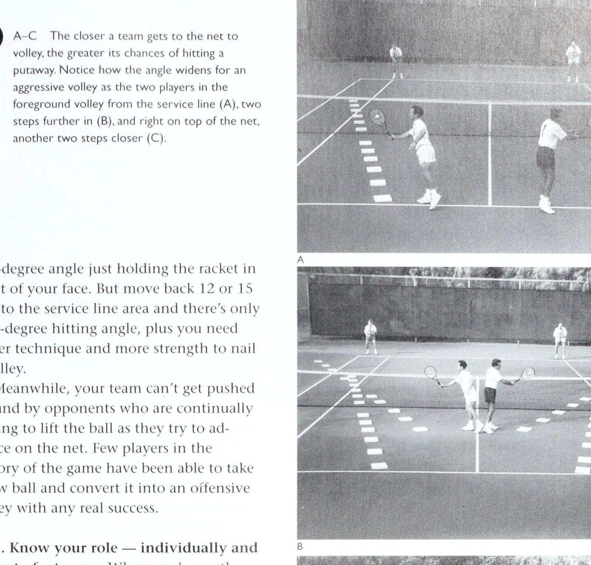
Figure 3: Volley geometric angles closer to the net — Advancing tight to the tape exponentially expands putaway target zones.
Chương 3: Quyết Định Phối Hợp Ban Đầu & Khâu Chuẩn Bị
với tính cách khá phục tùng, bạn có thể dễ dàng bị đe dọa bởi một đối tác huyên náo, bất chấp kỹ năng gấp đôi của bạn. Bạn cần có khả năng khẳng định điểm mạnh quần vợt của mình và ngăn chặn những điểm yếu khi phát triển mối quan hệ với đối tác của mình.
Khi một đội thừa nhận rằng đánh đôi phải là trách nhiệm 50-50, mỗi tay vợt sẽ nhận ra vai trò của mình vào đầu mỗi trận đấu và sau đó phát huy điểm mạnh và điểm yếu của mình trong khi kiểm soát 50% phần của mình, trừ khi hoàn cảnh yêu cầu một tay vợt phải bước tới và nhận trách nhiệm lớn hơn để gắn kết cả đội lại với nhau.
Nếu không có đội trưởng, cả hai bạn sẽ thay mặt cho cả đội từ bỏ quyền kiểm soát cá nhân đối với các trận đấu đơn, vì vậy sự thỏa hiệp là rất quan trọng. Có lẽ sẽ hữu ích khi nhớ rằng, về mặt tâm lý, mọi người đều có một hệ thống kiểm soát, và “hệ thống” này không thích bị kiểm soát. Một lý do khiến một số người gặp khó khăn trong việc điều chỉnh đánh đôi sau khi chơi đơn là vì trong đánh đơn, họ kiểm soát tất cả các biến số bên phần lưới của mình, nhưng trong đánh đôi, họ phải đấu tranh với các biến số mà họ không hoàn toàn kiểm soát được - cụ thể là tính cách và khả năng chơi của đối tác. Vì vậy, có nỗi sợ hãi và đôi khi là sự thất vọng về việc mất kiểm soát.
Đó là lý do tại sao tôi nhấn mạnh sự hiểu biết 50-50, trong đó các đối tác chia sẻ “quyền kiểm soát”, mỗi người chịu trách nhiệm về trò chơi của riêng mình trong quan hệ đối tác và cố gắng không vượt quá những giới hạn đó.
Nếu bạn quyết định có một đội trưởng, hãy cố gắng tìm hiểu trước xem vai trò này thực sự liên quan đến điều gì và các thông số là gì, để bạn và đồng đội của mình không đột nhiên cãi nhau trong suốt trận đấu, khi bạn nên tập trung vào quần vợt của mình.
2. Ai Nên Chơi Bên Nào Của Sân?
Một số cân nhắc quan trọng sẽ giúp xác định bạn và đồng đội của mình nên chơi bên nào của sân (giả sử ở đây cả hai bạn đều là người thuận tay phải). Nhưng hãy bắt đầu với sự hiểu biết cơ bản này: Tay vợt yếu hơn, dù họ chơi bên trái hay bên phải, ở bất kỳ cấp độ nào, sẽ có được hầu hết các cú đánh - cho đến khi đội kia nhận ra rằng họ đang mất quá nhiều điểm với chiến lược này.
Không thể che giấu tay vợt dễ bị tổn thương hơn khỏi đội tấn công, mặc dù các “đội trưởng” tự bổ nhiệm đã cố gắng hết sức để làm điều đó.
Một ví dụ là người chồng quá nhiệt tình, lầm lạc mà tôi đã mô tả trong phần giới thiệu, kết đôi với một người vợ phục tùng và không biết rõ hơn. Anh ấy cố gắng sắp xếp cho cô ấy một phòng chơi trong hẻm đánh đôi, ngay trước lưới, để cô ấy không bị nguy hiểm trong khi anh ấy đấu với đội kia. Nhưng chiến lược “giấu đối tác” này hiếm khi hiệu quả. Giả sử cô ấy không có nhiều vai trò, người vợ sẽ rút lui khỏi trách nhiệm chơi bóng của mình và quá sợ hãi để cố gắng thực hiện những cú đánh hợp pháp trong phạm vi của mình. Trong khi đó, chồng cô hết xăng cố gắng đuổi theo từng quả bóng.
Nếu bạn thấy mình đang tham gia một giải đấu bán tải ở câu lạc bộ hoặc một sự kiện từ thiện lớn và đối tác được chỉ định của bạn cố gắng áp dụng “chiến lược” này cho bạn, hãy khẳng định các quyền cơ bản của bạn với tư cách là một đối tác đánh đôi - và sau đó chứng tỏ mình là một tay vợt đánh đôi có năng lực. Đừng để đối tác của bạn tự ý xếp bạn vào khu vực đánh đôi và đe dọa bạn tránh xa quả bóng, bởi vì đó không phải là nội dung đánh đôi đáng lẽ phải được chơi - hoặc được hưởng. Đôi là một sự hợp tác bình đẳng.
Các quyết định và chuẩn bị làm việc nhóm sớm 22 ) Khi trả bóng trái tay từ sân deuce, người đánh cố gắng giữ đầu mình cúi xuống và tiếp xúc bóng một cách thoải mái ở phía trước cơ thể để anh ta có thể đánh bóng chéo sân ở người giao bóng đang lao tới, cách xa tay vợt trên lưới. Nếu người nhận bóng ngẩng đầu lên sớm, trước khi tiếp xúc, anh ta thường sẽ kéo bóng về phía tay vợt trên lưới để thực hiện cú đẩy bóng dễ dàng.
Với suy nghĩ này, hãy xem xét các yêu cầu và cú đánh của mỗi bên sân (một lần nữa giả sử rằng cả hai đối tác đều thuận tay phải).
Lý tưởng nhất là tay vợt bên phải, khi trả giao bóng, cần một cú thuận tay chéo bàn mạnh và một cú trái tay chéo bàn mạnh để giữ bóng tránh xa người đánh lưới.
Tay vợt này cũng phải có cú vô-lê trái tay đáng tin cậy từ giữa sân khi trận đấu đang diễn ra.
Ở phía bên trái, đấu thủ giao bóng trả lại cũng phải có khả năng đánh một cú giao bóng trái tay và một cú giao bóng thuận tay cách xa người đánh lưới. Tuy nhiên, sân quảng cáo sẽ dễ tha thứ hơn đối với tay vợt có cú trái tay yếu, vì nó phù hợp với cú xoay ngang cơ thể để kéo bóng chéo sân một cách tự nhiên. Tay vợt bên sân trái cũng cần cú vô lê thuận tay mạnh để chống lại những cú đánh vào giữa, đặc biệt nếu anh ta phải bù đắp cho cú vô lê trái tay yếu của đồng đội. Ngoài ra, nếu có sự chênh lệch về khả năng đánh trên cao, tay vợt có cú đánh trên cao hơn nên cố gắng chơi ở phần sân bên trái, để anh ta có thể thoải mái “ăn gian” về phía đối tác của mình để thực hiện cú lốp bóng về phía thuận tay của mình.
Tôi luôn ủng hộ việc để tay vợt yếu hơn ở bên phải, bởi vì người đó sẽ dễ dàng chạy vòng quanh trái tay để đánh thuận tay hơn khi giao bóng. (Người giao bóng bị giới hạn về vị trí của anh ta dọc theo đường cuối sân để đánh bóng vào góc trái tay của sân deuce. Giao bóng từ bên trái đến sân quảng cáo, anh ta có thể đứng gần đường biên, nếu cần, để tạo áp lực lên trái tay của đối phương.) Tay vợt trái tay yếu hơn thường sẽ nói với bạn rằng anh ta thích sân bên phải hơn.
Yếu tố tính cách cũng rất quan trọng. Nếu bạn là một tay vợt hào nhoáng, thích chịu áp lực và yêu thích sân khấu trung tâm, tôi nghĩ bạn nên chơi bên trái Có một điều, khi bạn nhận được cú giao bóng và bạn có quảng cáo, giờ đây bạn đang ở vị trí có thể đánh bại, giành được điểm và bẻ giao bóng. Và, nếu bạn không xem quảng cáo, điều đó không thành vấn đề - bạn cảm thấy tự tin rằng mình có thể giúp đưa quảng cáo trở lại trạng thái bình thường bằng cách đạt được mức lợi nhuận mạnh mẽ. Ngoài ra, nếu bạn muốn cắt vào giữa, chơi bên trái sẽ giúp bạn có khoảng cách xa hơn ở phía thuận tay để cản cú đánh của đối thủ (ngược lại với việc đánh bóng từ phía bên phải bằng một cú vô lê trái tay).
Trong khi đó, trong quần vợt nâng cao, tay vợt ổn định, thận trọng, kiên định hơn - một người có thể thiếu những cú đánh hào nhoáng nhưng hiếm khi bỏ lỡ quả giao bóng - nên chơi ở bên phải. Trên thực tế, những đội đánh đôi xuất sắc trong lịch sử đều được tạo nên bởi một tay vợt bên sân phải có thể trả giao bóng. Đây là sân gây áp lực - với tỷ số 30-all và deuce - và nếu người nhận có thể nhận lại quả giao bóng và giúp giành điểm ở đây (ví dụ: bằng cách đặt bóng dưới chân người giao bóng đang lao tới và thiết lập một điểm giao bóng cho đồng đội của cô ấy trên lưới), thì tất cả áp lực sẽ dồn lên người giao bóng để giữ giao bóng. Tay vợt bên phải cũng có xu hướng là một nhà tư tưởng logic, thích những mưu đồ chiến lược và những cú đánh xảo quyệt.
Bạn tôi Gene Mako, người đã hợp tác với B @ A-B_ Từ sân quảng cáo, tay vợt thực hiện cú giao bóng trái tay của mình thường có thể thực hiện một cú trả giao bóng hoàn hảo dọc theo đường chấm (A). Nhưng cú sút tương tự đó từ sân deuce lại đi thẳng vào lưới để thực hiện cú vô lê dễ dàng (B).
Những quyết định và sự chuẩn bị sớm của tinh thần đồng đội Don Budge giành được bốn danh hiệu Wimbledon và US Open, là một tay vợt thuận sân phải xuất sắc. Khi trả giao bóng, anh ấy nói rằng thái độ của anh ấy là “đưa quả bóng đó vào cuộc”, để Budge (hoặc các đối tác khác, chẳng hạn như Gardner Malloy) có thể kết thúc trận đấu bằng một cú vô lê hung hãn. Mako cũng nói với tôi, "Năm đầu tiên chơi với Budge, tôi chơi bên cánh trái vì tôi có nhiều kinh nghiệm hơn. Nhưng rõ ràng là anh ấy là tay vợt mạnh hơn và vì anh ấy thích đi lang thang và tấn công bằng cú vô lê thuận tay của mình nên chúng tôi đã quyết định chuyển đổi. Công việc của tôi là giúp giành điểm khi thua để Don có thể giành chiến thắng trong trò chơi với cú trả bóng trái tay tuyệt vời của anh ấy." Mako cũng nói rằng trong khi hầu hết các đội giải quyết ở các vị trí sân cố định từ giải đấu này sang giải đấu tiếp theo, một trong những đối tác của anh, Jack Tidball, lại thích cách tiếp cận linh hoạt hơn. “Tại một giải đấu, Jack thường xuống ăn sáng và nói cho tôi biết hôm đó ai sẽ chơi bên nào. Nhưng chúng tôi đã cùng nhau vô địch rất nhiều giải đấu.” Huyền thoại đôi nam nữ Một huyền thoại khác trên toàn thế giới về nội dung đôi nam nữ là niềm tin phổ biến rằng phụ nữ (“yếu hơn”) nên luôn chơi bên phải, trong khi đàn ông (“mạnh hơn”) nên luôn chơi bên trái. Đây là một giả định hạn chế. Thay vào đó, tay vợt tổng thể mạnh hơn nên chơi ở bên trái, đặc biệt là người hào nhoáng hơn một chút - và đó có thể là nam hoặc nữ.
Có lẽ cách duy nhất để tìm ra điều này là thử nghiệm, nhưng đó là một trong những thú vui của việc đánh đôi, cố gắng xác định các liên kết mạnh nhất của bạn với tư cách là một đội.
Tuy nhiên, hãy nhớ rằng: Chính tay vợt bên sân phải là người rất có thể sẽ làm cho đội của bạn nổi tiếng, đặc biệt là ở nội dung đôi nam nữ.
Hãy tin tôi đi, nhiều phụ nữ đã giành chiến thắng trong một giải đấu dành cho nam giới hơn là ngược lại. Cô ấy là chìa khóa của toàn bộ vấn đề, vì nếu cô ấy có thể tung cú vô lê mạnh mẽ, dồn vào lưới, phản ứng nhanh và cú đánh vượt qua (Passing shot) vạch giữa để thực hiện những cú đánh ở nơi cô ấy được ưu tiên, đội của cô ấy sẽ gây áp lực nặng nề lên đối thủ. Họ sẽ phải đối xử với đội của cô ấy như một đội, thay vì đe dọa cô ấy không hành động trên lưới trong khi họ đẩy đồng đội của cô ấy xuống đất. Trong các cuộc thi quần vợt đồng đội trên khắp đất nước, các giám đốc sẽ cho bạn biết rằng các đội có người phụ nữ kiên định nhất sẽ giành chiến thắng thường xuyên hơn các đội có người đàn ông xuất sắc nhất.
Hãy suy nghĩ về điều đó. Khi đối tác nam của người phụ nữ đang giao bóng, cú giao bóng mạnh của anh ta tạo ra một cú trả giao bóng yếu - và ai sẽ tận dụng lợi thế? Người phụ nữ. Ngay cả khi cú vô lê của cô ấy không mạnh đến thế - chỉ chính xác - cô ấy vẫn có thể giành được điểm hoàn toàn, hoặc ít nhất là đưa đối thủ của mình vào thế phòng thủ. Sau đó, khi cô ấy giao bóng, người đàn ông ở trên lưới, và nếu cô ấy chỉ có một cú giao bóng hiệu quả hợp lý - sâu liên tục - cô ấy sẽ giúp anh ta thực hiện một cú vô lê hoặc cú đánh đầu thắng lợi. Ngay cả khi cú giao bóng của cô ấy tương đối yếu, người đàn ông vẫn có thể chơi tích cực từ cột này đến cột khác, câu trộm, thực hiện cú đánh của anh ta và giúp cô ấy giữ giao bóng. Đây chính là điều tạo nên một đội chiến thắng.
Khi người chồng tùy tiện đưa vợ mình ra tòa đúng đắn, bất kể khả năng tương đối của họ, may mắn thay, một hệ thống “kiểm tra và cân bằng” tồn tại có thể giúp người phụ nữ hòa vốn vào cuối một ngày thua lỗ.
Hãy nhớ rằng, khi cô ấy giao bóng, chồng cô ấy rất thích săn lưới và anh ấy giành được rất nhiều điểm, điều này giúp cô ấy giữ được giao bóng. Nhưng khi chồng giao bóng, nếu người vợ không thích bắt vô lê và sợ bắt bóng, chồng cô ấy thường thua đội giao bóng hung hãn. ue eo Bây giờ họ đang lái xe về nhà và bắt đầu tranh cãi gay gắt xem ai là người chịu trách nhiệm cho sự mất mát của họ. Nhưng người vợ đã san bằng chồng ngay lập tức. “Đừng nhìn tôi,” cô nói. “Tôi đã thắng mọi cú giao bóng.” Yếu tố trả giao bóng Nhìn vào việc định vị từ một góc độ khác, trong một đội đồng đều, tôi muốn người có kết quả giao bóng đáng tin cậy nhất chơi ở phần sân bên phải, bất kể anh ta là người thuận tay phải hay thuận tay trái. Đây là lý do tại sao.
Khi trận đấu đi đến 30-tất cả hoặc thất bại, tay vợt ở bên phải (người có cú trả bóng mạnh hơn đối tác của mình) giờ đây có cơ hội tốt hơn đối tác của mình để giành được lợi thế bằng cách thực hiện một cú trả bóng hiệu quả khiến đối thủ của họ rơi vào thế phòng thủ.
Nếu anh ta làm như vậy và đội của anh ta giành được điểm, điều này sẽ giảm áp lực cho đồng đội của anh ta trong sân quảng cáo bằng cách cho anh ta cơ hội giành chiến thắng trong trò chơi chỉ bằng cách đưa quả giao bóng trở lại cuộc chơi. Người bên trái sân này có thể đánh một cách quyết liệt và biết rằng: “Nếu tôi đánh trả sai, không vấn đề gì; tỷ số trở lại là deuce và đối tác của tôi có cơ hội khác để giành được lợi thế.” Khi đấu thủ có cú trả giao bóng yếu hơn chơi đúng phần sân, nhược điểm là khi điểm đến mức deuce, anh ta thường gây rắc rối bằng cách đánh một cú trả giao bóng yếu dẫn đến mất điểm. Điều này gây mọi áp lực lên sự trở lại sau đó của đối tác từ sân đấu quảng cáo. Điều tốt nhất mà đối tác của anh ta có thể làm là lấy lại tỷ số, điều này chỉ đơn giản mang lại cho tay vợt bên phải cơ hội thứ hai để thực hiện cú đánh đúng.
Tuy nhiên, có thể mặc dù bạn có lợi thế tốt hơn đối tác của mình, nhưng chơi bên trái sẽ thích hợp hơn vì bạn thích thử thách khi trò chơi diễn ra theo cách nào đó. Ở đây, bạn đang ở trong tình thế có thể bẻ giao bóng bằng một cú trả giao bóng mạnh mẽ hoặc cứu đội của mình bằng cách gỡ lại tỷ số, với thái độ “Tôi phải đánh một quả tốt nếu không chúng ta sẽ ra khỏi đây”. Tất nhiên, bạn cần có tinh thần cạnh tranh để muốn loại thử thách này lặp đi lặp lại và đó là điều cần được thảo luận trước với đối tác của bạn. Bạn nên hỏi, “Khi chúng tôi nhận, bạn muốn chơi phần sân bên phải - nghĩa là trả lại trong tình huống khó khăn - hay phần sân bên trái?” Về cơ bản, hãy cố gắng tìm một người kiểu Michael Jordan để tuần tra phần sân bên trái, một tay vợt có thể đánh mạnh và suy nghĩ tích cực và lạc quan, bất kể tỷ số là bao nhiêu. Bạn nên chơi ở đây nếu bạn có nhiều khả năng hơn đối tác của mình đang suy nghĩ, khi quảng cáo chống lại bạn, "Tôi có thể giành được điểm và cứu chúng ta" hoặc đang suy nghĩ, nếu bạn đang xem quảng cáo, "Tôi có thể thắng trò chơi ở đây." Giống như một tay vợt bóng rổ đòi bóng khi đội của anh ta bị dẫn trước 2 điểm khi còn sáu giây, tay vợt bên sân trái trong nội dung đánh đôi nên tự tin rằng anh ta có thể xử lý được áp lực khi số phận của đội mình đang bị đe dọa.
3. Người thuận tay trái nên chơi bên nào?
Ở cấp độ thiếu kinh nghiệm và trung cấp, nơi đối thủ cố gắng đánh xuống các con hẻm thường xuyên hơn, những người thuận tay trái sẽ triển khai hiệu quả hơn ở bên trái nếu đối tác thuận tay phải. Sự sắp xếp này mang lại cho một đội những cú thuận tay ở mỗi con hẻm.
Đối đầu với những tay vợt có kinh nghiệm, những người cố gắng đưa ra các quyết định và chuẩn bị làm việc theo nhóm sớm 24 ] Hệ thống đánh đôi tệ nhất trên thế giới là “một lên và một lùi” cho cả hai đội. Nó được gọi là “đánh đơn đôi”. để đánh xuống giữa sân, người thuận tay trái phải cố gắng đánh bên phải (khi phối hợp với người thuận tay phải). Điều này mang lại cho một đội hai cú thuận tay để chống lại những cú đánh “xuống giữa”. Nó cũng mang lại lợi thế cho người thuận tay trái khi thực hiện cú trả giao bóng trái tay, vì anh ta có thể vung ngang cơ thể - xu hướng tự nhiên - và vẫn kéo bóng ra khỏi người đánh lưới, về phía chân của người giao bóng đang lao tới.
Tuy nhiên, bất kỳ đội nào thuận tay trái nên thử nghiệm cách sắp xếp bên phải và bên trái trước khi ấn định vị trí, vì bên thuận tay trái có thể thiếu lợi nhuận ổn định trong sân deuce và thực sự có thể chơi tốt hơn ở bên quảng cáo.
4. Bạn sẽ cố gắng nhấn mạnh vào hệ thống chơi nào?
“Hệ thống” tốt nhất cho đánh đôi là để cả hai tay vợt của cùng một đội cùng ở trên lưới, vì hầu hết các điểm sẽ được tính hoặc thua trên lưới. Đội có cả hai tay vợt trên lưới, di chuyển cùng nhau, hầu như sẽ luôn kiểm soát được điểm trước các tay vợt cuối sân.
Cách căn chỉnh tốt thứ hai là cả hai tay vợt đều lùi về vạch cuối sân, cố gắng giành chiến thắng từ đó bằng những cú đánh, lốp bóng và khả năng thu bóng mạnh mẽ.
Hệ thống tồi tệ nhất - nhưng là hệ thống được chơi phổ biến nhất ở cấp câu lạc bộ - có một tay vợt lên lưới và người kia 25] Một đội hung hãn có thể gây chết người khi vô lê từ gần lưới, đặc biệt là khi đối đầu với một đội có một tay vợt ở trên và một tay vợt lùi lại. máy nghe nhạc trở lại (xem ảnh 24). Đây là một hệ thống chỉ có thể thành công nếu đội kia cũng hứa sẽ chơi nó.
Khi cả hai đội chơi “một lên, một lùi”, về cơ bản, hai tay vợt đối phương ở sân sau sẽ chơi đơn, tập hợp qua lại, trong khi các tay vợt trên lưới trở nên cứng đờ ở tư thế sẵn sàng (Ready position) khi họ nhìn bóng di chuyển từ đường biên này sang đường cuối sân (Baseline) khác. Các tay vợt ở lưới sẽ không đi đâu cả - không đến lượt họ chơi - nhưng bóng luôn đến với một trong số họ và giật mình, người đó tiến hành ném nó vào lưới.
Trong khi đánh đôi “một lên, một lùi” có thể thú vị ở một câu lạc bộ nơi mọi người khác làm theo, chiến lược này sẽ thất bại trước một đội biết cách chơi trò chơi. Nếu đội của bạn bắt đầu chơi một đối một và một đối thủ lùi, các đối thủ hiểu biết sẽ đánh vào tay vợt lùi sâu của bạn, sau đó ngay lập tức chiếm lưới.
Tay vợt quay lại bây giờ đánh bóng về phía đối phương, một trong số họ tiến hành đóng đinh tay vợt đã có can đảm ở lại lưới thay vì rút lui về đường cuối sân.
Việc cố gắng chơi “một lên, một lùi” với một đội vào lưới mọi cơ hội cũng tạo ra những khoảng trống rất lớn trong hàng phòng ngự của bạn, cho phép đối thủ của bạn đánh bóng suốt cả ngày. Và họ có thể tiếp tục thực hiện các cú vô lê cũng như các Quyết định và sự chuẩn bị làm việc nhóm sớm của mình đối với người tội nghiệp trong đội của bạn, người vẫn ở trên lưới, cố gắng giữ vững pháo đài.
Đội hình Australia Tôi vẫn thấy cách căn chỉnh này thỉnh thoảng được sử dụng, ngay cả trong giải đấu chuyên nghiệp, với cả hai tay vợt trong đội giao bóng đều xuất phát ở cùng một phía của sọc trung tâm. Thay vì giao bóng và đi thẳng về phía trước, như bạn thấy trong ảnh 26, người giao bóng di chuyển theo đường chéo để thực hiện một cú trả bóng “cuối đường”, trong khi đối tác của anh ta áp sát vào lưới.
Tay vợt người Úc thường được triển khai bởi một đội đang bị thổi bay và đang cố gắng phá vỡ nhịp độ và động lực chiến thắng của đội kia, mặc dù nó cũng có thể được sử dụng nếu một đội dẫn trước nhưng đối thủ đột nhiên đang trên đà nóng nảy.
Cụ thể, nếu một đối thủ đang giết đội giao bóng bằng cú trả bóng chéo góc của cô ấy, thì người Úc sẽ đặt đối tác của người giao bóng lên lưới chờ thực hiện cú đánh yêu thích của cô ấy. Nếu người nhận chọn tránh thử thách tỷ lệ phần trăm thấp đó, cô ấy phải “lập trình lại” lợi nhuận dự định của mình, điều này có thể dẫn đến lỗi đánh.
5. Vị trí sẵn sàng tốt nhất là gì?
Những người mới bắt đầu luôn muốn biết câu trả lời cho câu hỏi này, nhưng tôi luôn phải nói với họ rằng: Không có một tư thế sẵn sàng phổ quát nào cả.
Đúng hơn, đó là vị trí thoải mái nhất mà từ đó bạn có thể đột phá để lấy bóng một cách nhanh chóng và trong tầm kiểm soát. Ngoài ra, bạn không bao giờ được đánh bóng khi đang ở tư thế sẵn sàng; tất cả chỉ để trưng bày. Đó là lý do tại sao tất cả chúng ta đều ghét thi đấu đôi với những người say mê tư thế sẵn sàng của mình, bởi vì họ 'ghét phải rời nhà để chơi cú bắt lưới (Volley)'. Họ thuộc Đội hình Australia hiếm khi được sử dụng, cả hai đấu thủ của đội giao bóng đứng cùng một phía sân để bắt đầu điểm. luôn nói: “Của bạn!” và bạn có thể nhận ra. họ ở câu lạc bộ cách đó một dặm.
Mặc dù thực sự các tay vợt nam và nữ hàng đầu trong 50 năm qua đã nghĩ ra nhiều tư thế sẵn sàng khác nhau, nhưng kiễng chân khi bóng được đánh hoặc ngay trước khi va chạm được chấp nhận rộng rãi là cách tốt nhất để thực hiện. Điều này giúp căng cơ bắp chân và cho phép chúng phục hồi nhanh hơn. ————
6. Ai nên giao bóng trước?
Số học đơn giản chỉ ra rằng tay vợt có cú giao bóng tốt nhất nên giao bóng trước trong nội dung đánh đôi, vì anh ta (hoặc cô ta) có cơ hội giao bóng nhiều hơn đối tác của mình một trận trong mỗi set, cũng như kết thúc trận hòa. Tuy nhiên, vẫn có những trường hợp có thể dẫn đến một triết lý khác.
Có lẽ người có cú giao bóng mạnh hơn cần hai hoặc ba ván đấu để khởi động đầy đủ, cả về tinh thần và thể chất. Gió và mặt trời là những yếu tố khác cần xem xét và nên thảo luận trước với đối tác của bạn. Khi Pancho Gonzalez thắng khi tung đồng xu, anh ấy thỉnh thoảng để đối thủ giao bóng trước trong nội dung đánh đơn, chỉ để khiến đối phương nghĩ: "Tôi tự hỏi tại sao anh ấy lại làm như vậy?" Nhưng tất nhiên Pancho có một cú giao bóng bất khuất như vậy, anh ta có thể đánh cược một chút với chiến thuật của mình.
Nếu bạn chuẩn bị chơi một trận đấu, hãy vui mừng nếu bạn nghe thấy ai đó ở phía bên kia hỏi, "Này, tôi nên giao bóng trước hay bạn muốn giao bóng trước?" Điều này có nghĩa là đối thủ của bạn chưa từng chơi cùng nhau trước đó (điều này thường gây trở ngại cho các đội cú đánh vượt qua (Passing shot)) hoặc chưa dành nhiều thời gian để giao tiếp với nhau, đây là dấu hiệu cho thấy những thiếu sót trong tinh thần đồng đội mà nhóm của bạn có thể khai thác.
Khi đội của bạn giao bóng trước, hãy đảm bảo rằng cả hai bạn đều khởi động như thể đã bắt đầu trận đấu.
Nguyên nhân là do game giao bóng đầu tiên thường thuộc về đội trả giao bóng vì người giao bóng chưa tìm được nhịp điệu. Ngoài ra, người nhận biết rằng cơ hội của anh ta sẽ cao hơn nhiều trong những trận đấu đầu tiên trước khi máy chủ khởi động.
Trên thực tế, tâm lý của một đội nhận bóng mạnh là bẻ gãy đội giao bóng ngay lần đầu tiên họ giao bóng — và sau đó tiếp tục. Vì hầu hết các máy chủ có xu hướng giữ giao bóng trong giải quần vợt nên việc nghỉ sớm có thể khiến tay vợt mất tinh thần. Với triết lý này, đội nhận bóng mạnh thường sẽ cố gắng săn bắt sớm để khiến người giao bóng thêm lo lắng khi anh ta giao bóng và lên lưới. Một số đội cũng sẽ lốp bóng sớm để kiểm tra khả năng đánh đầu của đội giao bóng. Đối với các cú giao bóng, các cú đánh qua đầu không được luyện tập đầy đủ trong thời gian khởi động và thường khiến người đánh thất bại khi bị áp lực ở thời điểm đầu.
Các quyết định và chuẩn bị làm việc nhóm sớm Gare TER 4 Vị trí sân đối với đánh đôi TỐT là sự hỗn loạn có tổ chức, một vệt mờ gồm bốn cơ thể di chuyển lên, lùi và sang ngang, mỗi người cố gắng phản ứng với các cú đánh theo bản năng hoặc với các quyết định đã được tính toán trước, và mỗi đội cố gắng giành được lưới, nơi phản ứng nhanh và kỹ năng vô lê quyết liệt sẽ giành chiến thắng.
Tuy nhiên, những khoảnh khắc trước khi hành động xoáy này bắt đầu, mỗi tay vợt sẽ phải suy nghĩ và dự đoán rất nhiều khi họ chuẩn bị thực hiện vai trò của mình từ các vị trí trên sân tương ứng.
Không có quy tắc đặc biệt nào về vị trí trước khi giao bóng, ngoại trừ việc người giao bóng không được phạm lỗi bằng chân (như trong đánh đơn) và cả hai đối thủ đều phải nhận giao bóng trong các lần giao bóng xen kẽ. Bạn có thể coi đây là quy tắc để bảo vệ khỏi Bobby Riggs của môn thể thao này. Kết hợp với cựu tuyển thủ chuyên nghiệp John Faunce, tay đua xuất sắc Start a Point đã từng cá cược rất lớn với hai đối thủ.
Anh ấy cảm thấy khá chắc chắn rằng mình có thể thắng nếu anh ấy có thể chơi chúng một mình (Faunce là một tay vợt phong cách nhưng phòng thủ hơn, và Bobby sợ anh ấy sẽ bị nghẹn khi chơi với số tiền lớn), vì vậy khi anh ấy giao bóng và nhận giao bóng, anh ấy đã để Faunce đứng sang một bên (hoặc thậm chí ngồi trên băng ghế dự bị, như tôi đã nghe trong một phiên bản) khi anh ấy giao bóng với đội kia. Bobby thậm chí còn để Faunce giao bóng rồi rời sân, nhưng anh ấy không thể giấu đồng đội của mình khi đến lượt Faunce giao bóng. Đừng yêu cầu tôi phân tích tại sao Faunce lại thích chơi trò đố chữ như thế này, nhưng tiền thì rất tốt - và Riggs biết rằng khi chơi một mình, anh ấy thực sự gây áp lực nhiều hơn cho đối thủ của mình.
Tò mò muốn biết trận đấu đó diễn ra như thế nào, tôi đã gọi cho Lornie Kuhle, bạn thân của Bobby vào tháng 10 năm 1995. Tôi biết.
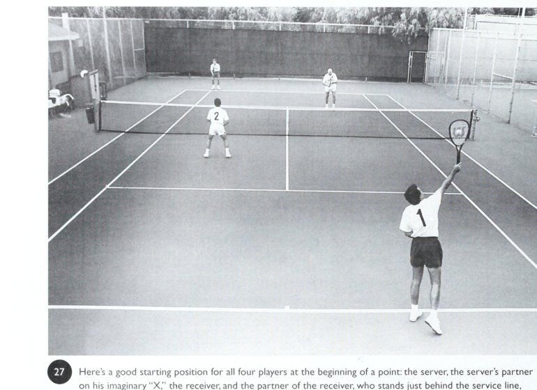
Figure 4: Fundamental doubles starting court positions — Optimal court spacing between server and net partner.
Phần II: Vị Trí Sân Bãi & Chiến Thuật Đồng Đội Toàn Diện
Chương 4: Vị Trí Đứng Sân Khi Bắt Đầu Một Điểm Số
Bobby sắp chết vì bệnh ung thư và tôi không muốn làm phiền anh ấy, nhưng khi Lornie trả lời điện thoại, anh ấy đang ở cạnh giường Bobby với người giao bóng nhà tế bần.
Lornie nói với Bobby yêu cầu của tôi và anh ấy đáp lại, "Hãy bảo Vic làm theo câu chuyện mà anh ấy đang in trong cuốn sách của mình vì tôi đã chơi hàng trăm trận đấu đôi một mình - và tôi đã thắng." Bobby đang được dùng thuốc an thần nặng và nói rằng anh ấy khó nhớ lại trận đấu với Faunce, nhưng anh ấy chắc chắn rằng nó đã xảy ra. “Nói với Vic rằng anh ấy có thể sử dụng ‘trên băng ghế’ hoặc ‘đứng bên cạnh’, tùy theo từ nào có màu sắc nhất.” Thật là một nhân vật, cho đến cuối cùng.
Chương này sẽ mô tả cách những tay vợt đánh đôi giỏi xác định vị trí của mình trên sơ đồ Sân, hiển thị khoảng cách và góc đánh. đầu của một điểm, trước khi hành động thực sự bắt đầu. Vị trí này không được xem nhẹ. Chúng tôi sẽ cho rằng bạn là máy chủ, đánh từ phía bên phải (deuce).
Ngoài ra, trừ khi được chỉ định, chúng ta đang nói về những tay vợt thuận tay phải.
Máy chủ Tôi từ lâu đã nhấn mạnh nguyên tắc rằng bạn nên giao bóng bên nào theo thống kê sẽ tạo ra lợi nhuận cao nhất và lâu dài nhất. Lượt về càng cao thì đội của bạn càng dễ bắt vô lê; Bóng phải di chuyển càng lâu để tiếp tục chơi thì bạn càng ít bị tổn thương bởi một cú đánh góc ngắn.
Điều này có nghĩa là đối với hầu hết tay vợt, Vị trí sân để bắt đầu điểm 5| Đây là vị trí khởi đầu tốt cho cả bốn tay vợt khi bắt đầu một điểm: người giao bóng, đối tác của người giao bóng trên chữ “X” tưởng tượng của anh ta, và đối tác của người nhận giao bóng, người đứng ngay sau vạch giao bóng, ở giữa đường biên đơn và sọc giữa. trong hầu hết các trường hợp, mục tiêu sẽ là đánh cú giao bóng của bạn về phía trái tay của đối phương. Vì vậy, hãy đứng ở nơi bạn có thể đánh trái tay của người nhận một cách hiệu quả nhưng đủ gần vạch giữa để bạn có thể che phần trống của sân khi đối tác của bạn băng qua để băng cắt bắt bài trên lưới (Poaching). Lưu ý rằng việc giao bóng ở giữa, vào góc trái tay, ngày càng trở nên khó khăn hơn nếu bạn đứng cách sọc giữa hơn 5 feet. Bạn càng di chuyển sang bên phải thì càng ít có cơ hội đưa bóng đến phía trái tay của đối phương, mặc dù nó chạm vào góc trái tay. (Khi giao bóng từ bên trái, hoặc ad, sân, bạn có thể đứng xa hơn một chút so với sọc giữa.) Phần sau của cuốn sách, tôi sẽ nhấn mạnh thực tế rằng với sự ra đời của trái tay bằng hai tay, một số người giờ đây có thể trả giao bóng ở phía trái tay thấp hơn và mạnh hơn ở chân bạn so với khi họ thực hiện cú thuận tay, vì vậy, bạn nên tìm hiểu đối thủ trong tương lai của mình và nhắm mục tiêu phù hợp. Ngoài ra, chỉ giao bóng ở giữa, cho dù đó là thuận tay hay trái tay của tay vợt, sẽ làm giảm góc trả bóng và tạo điều kiện cho đối tác của bạn tấn công.
Ở cấp độ chuyên nghiệp (ở đây là Infiniti Open ở Los Angeles năm 1995), hãy chú ý vị trí của các tay vợt khi bắt đầu một điểm thông thường. (Ảnh: Lisa Marie Roberto) Vị trí sân để bắt đầu một điểm & Người giao bóng đứng thoải mái ở bên trái của vạch giữa để anh ta có thể dễ dàng nhắm về phía trái tay của đối thủ. Hãy chú ý cách đối tác của người giao bóng đang cúi người về phía trước, sẵn sàng lao về bất kỳ hướng nào để quay lại.
Đối tác của người giao bóng Khi đối tác của bạn đang giao bóng, bạn nên đứng chính giữa trong ô giao bóng — tại “X”, nơi các đường chéo giao nhau (như trong ảnh 30) — sẵn sàng di chuyển theo bất kỳ hướng nào để trả giao bóng, nhưng đặc biệt là về phía lưới.
Đúng, đôi khi trong các giải đấu hàng đầu, đối tác của người giao bóng sẽ đứng gần vạch giữa hơn một chút, nhưng nếu bạn ở vị trí “X”, bạn đã ở đúng vị trí cho hầu hết các trận đấu đôi. Trong một số trường hợp, bạn có thể lẻn về phía giữa, đặc biệt là từ phía bên phải, nếu đối tác của bạn có thể thực hiện cú giao bóng.
Mặc dù bạn có thể muốn đứng gần con hẻm đánh đôi để đề phòng những pha trả bóng từ đường biên, nhưng điều này chỉ đơn giản là cho phép đội kia đánh dễ dàng hơn — và hiệu quả — ở giữa sân. Việc đứng ở giữa ô giao bóng thực sự chỉ mang lại cho đối thủ của bạn một sơ hở hẹp ở đường biên.
Tất nhiên, một lý do khác khiến bạn có thể muốn đặt mình gần con hẻm, cách xa vạch giữa, là bạn không tin tưởng vào cú giao bóng của đối tác. Nỗi sợ hãi này dẫn đến việc © Đối tác của người giao bóng phải cố gắng kiễng chân lên khi quả giao bóng được thực hiện, để anh ta sẵn sàng đột phá nhanh chóng theo bất kỳ hướng nào trước cú đánh của người trả giao. những cuộc tranh cãi gay gắt, trong đó người trên lưới quay lại và nói, "Đồ ngốc, bạn đã đánh vào đầu tôi!" và người giao bóng trả lời, "Đồ con cóc, bạn đã phá hỏng cú giao bóng tốt nhất của tôi!" Nếu sợ bị đánh như thế này thì chỉ cần cúi người xuống để đầu không trở thành mục tiêu. Sau đó, nếu bạn bị đánh vào mông, ít nhất đối tác của bạn cũng biết rằng cú giao bóng của anh ta dù sao cũng sẽ là một lỗi.
Một điểm mới mà tôi thấy ở quần vợt chuyên nghiệp nữ trong những năm gần đây là đội hình song song, như minh họa trong ảnh 31 A-C. Về cơ bản, đối tác của máy chủ đứng trên dải giữa và ngồi xổm xuống theo đúng nghĩa đen, an toàn dưới mục tiêu của máy chủ và phía trước vạch giao bóng.
Ngay khi bóng được đánh, cô ấy đứng dậy và bẻ sang trái hoặc phải - rõ ràng là đang cố gắng làm đối thủ bối rối và tạo ra sự do dự. Đội giao bóng có kế hoạch thực hiện theo cách này hay cách khác, nhưng trừ khi đã luyện tập các động tác này, nếu không họ cũng thường bối rối như đối thủ khi bóng vào cuộc.
Nếu đội của bạn cố gắng sử dụng đội hình song song, đối tác của người giao bóng phải cẩn thận để không bị trúng quả giao bóng. Và người giao bóng phải học cách che các vị trí sân còn trống để bắt đầu điểm A-C_ Đối với người nhận thuận tay trái, đội giao bóng quyết định chơi theo đội hình song song bằng cách để đồng đội của người giao cầu đứng trên một đường giữa và cúi thấp NS: i : :
Chín : ; : (A và B). Anh ta đợi cho đến khi quả giao bóng sesiietre Hae trôi qua trước khi bẻ theo hướng định trước, khi người giao bóng tiến vào và sau đó bẻ sang trái để che nửa sân mở của sân A (C). Người giao bóng thường không đứng quá xa về bên phải vì nó khiến anh ta phải mất một khoảng cách rất xa để thực hiện cú đánh về bên trái. peireaees' eaeas aarerite ae Khi điểm bắt đầu, đối tác của người nhận bóng phải đứng ngay phía sau hoặc ngay phía trước vạch giao bóng, kiễng chân lên và sẵn sàng tiến về phía trước nếu đối tác của anh ta đánh trả mạnh. Nếu không, anh ta nên cố gắng giữ vững lập trường của mình hoặc rút lui. về phía sân đấu càng nhanh càng tốt. Nhưng điều thú vị về sự thay đổi nhịp độ này là thực tế là nhóm đối phương không biết ý định của bạn; bạn khiến họ không chắc chắn về nơi sẽ quay trở lại, điều này sẽ hạn chế sự sẵn sàng băng cắt bắt bài trên lưới (Poaching) của họ.
Người nhận giao bóng Lý tưởng nhất là khi bạn nhận giao bóng, bạn nên đảm nhận tư thế sẵn sàng (Ready position) ở giữa khoảng thời gian mà người giao bóng có thể thực hiện cho bạn từ thuận tay đến trái tay. Nếu cô ấy không thể bẻ giao bóng rộng về phía thuận tay của bạn (giao bóng vào phần sân bên phải), bạn có thể “gian lận” và đứng gần vạch giữa hơn, cắt giảm khả năng giao bóng của cô ấy về phía trái tay của bạn.
Bạn có thể thắc mắc, “Làm sao tôi biết được tầm bắn bao xa?” Lý tưởng nhất là bạn có cơ hội do thám đối thủ của mình và nghiên cứu xem họ giao bóng tốt như thế nào. Bây giờ, hãy sử dụng các ván đấu mở đầu để cảm nhận phạm vi giao bóng của từng đối thủ và sau đó chỉ cần chia đôi góc một nửa.
Đối tác của người nhận bóng Nếu bạn có phản ứng đặc biệt nhanh và vị trí thuận lợi để bắt đầu một điểm trong cú đánh bóng lùi ngắn trong cú vô lê của bạn, hãy đứng hơi phía trước vạch giao bóng, để bạn có thể tận dụng tốt hơn khi thực hiện cú vô lê hoặc phản ứng với cú truy cản của người trên lưới.
Nếu bạn phản ứng chậm hơn và cú vô lê dài hơn, hãy đứng phía sau vạch.
Tuy nhiên, điều quan trọng nhất là khả năng di chuyển nhanh chóng và tấn công của bạn khi đối tác của bạn thực hiện cú trả giao bóng mạnh dưới chân người giao bóng. © Trong một giải đấu chuyên nghiệp, hãy chú ý xem đối tác của người giao bóng ở vị trí “X” tưởng tượng của anh ta như thế nào trong khi đối tác của người nhận giao bóng ở ngay phía trước vạch giao bóng, sẵn sàng giữ vững lập trường của mình hoặc tấn công. (Ảnh: Lisa Marie Roberto) Nếu bạn chưa quyết định về vị trí, hãy tránh đứng trên vạch vì một ngày nào đó bạn sẽ chơi giỏi đến mức phải chơi với trọng tài biên và bạn có thể chặn tầm nhìn của họ khi giao bóng. Vì họ tôi không thể nhìn xuyên chân, họ sẽ yêu cầu bạn tôi di chuyển, buộc bạn phải phá bỏ một thói quen đã ăn sâu dưới áp lực của giải đấu.
Chơi Four MỘT trong những niềm vui của đánh đôi là thử thách liên tục khi chơi ở bốn vị trí riêng biệt khi mỗi hiệp tiến triển. Một lúc nào đó bạn được yêu cầu giao bóng và lý tưởng nhất là di chuyển vào lưới; khoảnh khắc tiếp theo, bạn đã sẵn sàng ở gần lưới, hy vọng rằng đối tác của bạn có thể trả giao bóng dưới chân người giao bóng đang lao tới - cách xa người trên lưới, người chỉ thích xăm biểu tượng Wilson lên cơ thể bạn.
Chương này sẽ khám phá những trách nhiệm mà bạn có ở mỗi vị trí, chủ yếu với tư cách cá nhân nhưng cũng trong khuôn khổ của một nhóm.
Người giao bóng Trong cuốn sách chuyên đề của họ, Trò chơi đánh đôi trong quần vợt, được xuất bản lần đầu vào năm 1956, Bill Talbert và Bruce Old cảm thấy Seer lERS Vị trí là quan trọng khi nghĩ đến cú giao bóng trong bối cảnh thực tế là “trong các trận đấu đôi vô địch, hầu hết các set đều thắng chỉ nhờ một lần giao bóng đột phá.... Trên thực tế, việc giữ giao bóng rất quan trọng trong đánh đôi đến mức George Lott [cho rằng] giao bóng là cú đánh quan trọng nhất.” Và vì chiến thắng trong đánh đôi bằng cách chiếm và duy trì quyền kiểm soát lưới, nên “việc giao bóng thành công trong đánh đôi không chỉ đưa bóng vào cuộc mà còn mang lại một hành trình đến lưới an toàn cho người giao bóng, đưa đội giao bóng vào thế tấn công khi bắt đầu mỗi điểm.” Thật thú vị phải không, làm thế nào mà những sự thật hiển nhiên của trò chơi này lại được duy trì từ thập kỷ này sang thập kỷ khác?
Ngày nay, khi giao bóng đôi, thách thức quan trọng nhất vẫn là thực hiện quả giao bóng đầu tiên trong trận đấu thường xuyên nhất có thể, ngay cả khi điều này có nghĩa là giảm bớt một chút để giúp đảm bảo độ chính xác tốt hơn. Đội của bạn sẽ chiến thắng
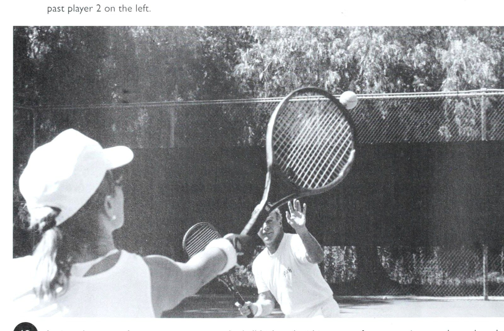
Figure 5: Crosscourt return trajectory geometry — Safely bypassing the opposing net poacher into the deep baseline pocket.
Chương 5: Thi Đấu Ở Bốn Vị Trí Trên Sân Đôi
tỷ lệ phần trăm điểm cao hơn nhiều khi bạn có thể liên tục thực hiện cú giao bóng đầu tiên đó, càng sâu trong ô giao bóng càng tốt, để bạn có thể tính lưới và không phải dựa vào cú giao bóng thứ hai phòng thủ hơn.
Cùng với chiều sâu, hãy tập trung giao bóng về phía mang lại lợi nhuận cao nhất và lâu nhất cho đối thủ của bạn. Tỷ lệ trả bóng cao, như tôi đã chỉ ra ở chương trước, giúp bạn hoặc đối tác của bạn dễ dàng thực hiện cú vô lê đẩy bóng hoặc cú đánh đầu qua đầu khi cả hai lao vào lưới. Cú trả bóng dài có nghĩa là người nhận không thể chạm vào các góc ngắn dưới chân bạn hoặc kéo căng bạn ra xa khi bạn đang di chuyển về phía trước so với đường cuối sân (Baseline). Điều này dẫn đến việc trả lại dễ dàng hơn nhiều để xử lý và mang lại cho nhóm của bạn cơ hội kết thúc sớm.
Trong nội dung đánh đơn, đặc biệt là ở cấp câu lạc bộ, bên yếu hơn của đối thủ khi trả giao bóng theo truyền thống là trái tay, nhưng điều này không còn đúng như thường lệ trong các nội dung đánh đôi ngày nay. Có một điều, nhiều tay vợt đã sử dụng cú trái tay bằng hai tay trong 15 hoặc 20 năm qua, khiến chúng trở nên nguy hiểm hơn ở đây so với từ phía thuận tay. Trong khi đó, tay vợt đánh bóng “phẳng”, bằng cú xoay người bằng một tay, tạo ra một cú đánh thường yếu trong đánh đơn nhưng có khả năng hiệu quả trong đánh đôi, vì nó đi thấp và hầu như không qua được lưới, do đó tạo ra một cú vô lê khó hơn.
Ngày nay, nếu bạn có ý thức nhắm cú giao bóng của mình về phía trái tay, hãy làm như vậy bởi vì tay vợt thường cầm bóng muộn và do đó có xu hướng xoáy sâu vào cú trả bóng và nâng bóng lên. Một quả bóng được đánh với xoáy xuống sẽ di chuyển lâu hơn trên một đường thẳng hơn và không lao qua lưới như với cú xoáy lên, giúp đội của bạn tiến vào lưới và bắt vô lê dễ dàng hơn. Để đánh một cú trái tay xoáy lên - cú trả bóng mà mọi người đều lo sợ - người nhận bóng phải tiếp xúc với bóng xa hơn về phía trước cơ thể hơn là ở phía thuận tay. Hầu hết mọi người có xu hướng làm điều này muộn và kết quả là họ phải cam chịu đánh bóng phẳng hoặc xoáy xuống, giảm thiểu khả năng tấn công của họ.
Một lý do khác để tập trung giao bóng về phía trái tay của người nhận khi anh ta ở sân deuce (phải) là anh ta phải vung ra khỏi cơ thể để đánh bóng tránh được tay vợt lưới đối phương. Đánh xa cơ thể như thế này là khó, đi ngược lại xu hướng tự nhiên, ngang cơ thể và thường buộc người nhận phải đánh với xoáy xuống. (Các cú trái tay ít gây ra vấn đề hơn ở sân quảng cáo, vì xu hướng kéo ngang cơ thể tạo ra cú đánh đi xa đối tác của bạn trên lưới.) Có hai lúc bạn nên nhắm xa phía đối thủ yếu hơn: (1) khi anh ta “chơi quá mức” về phía đó đến mức bạn thuận lợi, bạn có thể thắng anh ta bằng một cú giao bóng mà anh ta không thể với tới, ngay cả ở phía mạnh hơn của anh ta, và (2) khi bạn tích cực, bạn có thể kéo anh ta ra xa sân đến mức bạn trả bóng yếu.
Nếu đối thủ của bạn dường như không có bên yếu hơn, hãy cố gắng giao bóng liên tục ở trung lộ và sâu. Điều này giảm thiểu khả năng anh ta làm tổn thương bạn bằng những cú trả bóng góc ngắn, chéo sân từ hai bên, vì anh ta phải kéo dài những góc đó để đánh bóng mạnh và giữ nó trong cuộc.
Hãy tích cực trong suy nghĩ khi chuẩn bị giao bóng. Hãy nhớ rằng, đây là cơ hội để bạn bắt đầu một điểm với đội của bạn kiểm soát lưới, nơi phần lớn số điểm sẽ được hoặc bị mất. Vì vậy, bạn nên cố gắng tiến lên phía sau cú giao bóng của mình - thậm chí là | A-E Ona trên sân tập, người giao bóng đang thực hiện bước séc hoặc chia bước của anh ta. Trong ảnh A, anh ấy hoàn thành bước số một (tiếp đất bằng chân trái). Trong ảnh B, anh ấy kéo dài bước thứ hai của mình. Sau đó, anh ấy bắt đầu khép hai chân lại với nhau theo chuyển động tách từng bước (C). ! Điều cực kỳ quan trọng là anh ta tránh dừng hẳn ở bước tách đôi của mình mà chỉ thực hiện động tác giữ thăng bằng, giảm tốc độ. Trọng tâm b của anh ấy vẫn phải di chuyển về phía trước khi anh ấy tiếp đất (D) và sau đó di chuyển vào lưới để thực hiện cú vô lê tiềm năng (E).
Chơi cú giao bóng đầu tiên yếu ở Bốn vị trí — và tham gia cùng đối tác của bạn trên lưới. Nếu bạn ở lại và để anh ta mắc kẹt ở đó, những đối thủ thông minh sẽ tiến vào phía sau họ và mang đến cho anh ta một “diện mạo mới” vào cuối trận đấu.
Tất nhiên, nếu bạn là người chạy chậm và cú giao bóng của bạn thậm chí còn chậm hơn, hãy giữ nguyên ở vạch cuối sân và khuyến khích đối tác của bạn lùi lại và tham gia cùng bạn. Sau đó hãy cầu nguyện rằng điểm đó kéo dài đủ lâu để hai bạn lốp bóng và đẩy đối thủ ra khỏi lưới.
Sau khi tiếp xúc với bóng và khi ngã xuống sân, hãy tiếp tục tiến về phía trước, như ảnh 34 A-E cho thấy. Ở bước thứ ba, trong giây lát đưa hai chân vuông góc với lưới, sẵn sàng lao theo bất kỳ hướng nào để xử lý quả trả giao bóng. Nhưng hãy tiếp tục di chuyển! Thực hiện bước hãm trọng tâm (Checkstep) này, hoặc bước tách đôi, ngay trước khi người nhận bóng đánh bóng - mà không thực sự dừng lại hoàn toàn - sẽ giúp bạn giữ thăng bằng và cho phép bạn di chuyển dễ dàng sang phải hoặc sang trái, tùy thuộc vào vị trí của cú trả bóng.
Việc dừng cqmplete ở bước hãm trọng tâm (Checkstep) sẽ gây ra một vấn đề nghiêm trọng khi bạn chuẩn bị hoàn trả. Điều bạn phải xác định trong thực tế là bạn vẫn có thể tiến về phía trước nhanh đến mức nào khi thực hiện bước hãm trọng tâm (Checkstep) và vẫn di chuyển ngang một cách dễ dàng. (Nếu bạn đến chậm sau cú giao bóng, bạn thực sự có thể phải thu hai chân lại ở bước thứ hai để sẵn sàng bẻ bóng khi bóng được đánh.) Trong một số trường hợp, tay vợt thực sự phải dừng lại, nhưng hầu hết tay vợt nhận ra rằng điều này là không cần thiết và nó khiến họ không thể tiến sâu để thực hiện cú vô lê. Những tay vợt dừng hoàn toàn thường thả lỏng cơ và phải huy động lại để di chuyển sang ngang - một quá trình chậm thường dẫn đến việc phải đánh những cú vô lê thấp hơn từ vị trí xa lưới hơn mong muốn.
Những rào cản, tâm lý và thể chất, có thể ngăn cản bạn tấn công lưới sau cú giao bóng của mình là gì?
Có lẽ bạn có nhận thức phản ánh thách thức mà tôi nhận được từ một người phụ nữ khi tôi đưa ra một phòng khám ở Snowmass, Colorado. Cô ấy nói, "Vic, khi tôi giao bóng và đi vào, đối thủ của tôi giữ bóng dưới chân tôi và tôi mất rất nhiều điểm. Tôi nghĩ tốt hơn hết là tôi nên ở lại." Tôi biết được rằng người phụ nữ thực sự có một cú giao bóng mạnh và có thể di chuyển tốt, vì vậy tôi nói, "Đợi một chút - bạn đã bỏ lỡ một phần quan trọng của hệ thống. Khi bạn giao bóng, đối tác của bạn có thường xuyên câu trộm và cố gắng làm phiền đối thủ của bạn trong lần trả giao bóng không?" “Chà, không bao giờ,” cô ấy trả lời, có nghĩa là đối tác của cô ấy đang bỏ qua một vũ khí chiến thuật quan trọng khi không cú đánh vượt qua (Passing shot) sân sớm để thực hiện một cú vô lê được mong đợi vào lưới. "Vì vậy," tôi nói một cách thân thiện, "đừng từ bỏ chiến lược của tôi cho đến khi bạn thử một chiến thuật như băng cắt bắt bài trên lưới (Poaching). Bạn không thể để người nhận bóng đứng lại đó và lao đi khi bạn giao bóng, biết rằng bạn sẽ không bao giờ đến lưới hoặc đối tác của bạn sẽ không bao giờ di chuyển sớm và băng cắt bắt bài trên lưới (Poaching). Đối tác của bạn phải buộc người nhận bóng nghĩ đến việc đánh một cú đánh khác, theo một hướng khác, bằng cách băng cắt bắt bài trên lưới (Poaching) nhiều lần, ngay cả khi cú vô lê của cô ấy không thành công. Ngay cả những cú đánh lén giả cũng có thể có hiệu quả trong việc đánh lạc hướng người nhận khi cô ấy thực hiện cú trả bóng.” Tôi tiếp tục, "Bạn sẽ thường ngạc nhiên về tốc độ mà một đấu thủ có thể bị tháo gỡ khi phải đối mặt với áp lực mới và bất ngờ trước một cú đánh thoải mái. © Người giao bóng (tiền cảnh) đang di chuyển để che phần sân còn trống khi đồng đội của anh ta break để cướp quả giao bóng của đối thủ. Cô ấy thường đánh một cách tự tin. Khá ngạc nhiên nếu cô ấy dễ dàng điều chỉnh. Khi mọi người có một thể thức và không bao giờ phải thay đổi khi họ đánh, thì bạn sẽ giúp họ trở nên tuyệt vời. Nhưng khi bạn phá vỡ thể thức đó, thật tuyệt vời mọi chuyện có thể xảy ra. Tất nhiên, nếu bạn thử những điều này mà vẫn tiếp tục mất quá nhiều điểm, thì hãy lùi lại và cố gắng giành chiến thắng từ đường cuối sân (Baseline).” Việc thiếu kỹ thuật chuyền bóng tốt cũng có thể cản trở bạn lao vào lưới sau cú giao bóng của mình, bởi vì bạn sợ mình sẽ bỏ lỡ cú trả bóng thấp dưới chân khi nó ra khỏi sân. Bạn có thể ổn trong những cú vô lê, bạn có thể tiếp xúc từ thắt lưng đến ngang đầu, nhưng khi bóng rơi xuống quanh mắt cá chân của bạn, buộc bạn phải cúi thấp, thì bạn đang gặp rắc rối sâu sắc.
Đây là lúc bạn nên học cách thực hiện cú vô lê từ vai thay vì cẳng tay, đánh thẳng vào đường bay tới của bóng bằng cách nâng nhẹ nếu cần thiết, thay vì chọn kiểu đánh cắt xoáy xuống. Hãy luôn nhớ rằng, các biến số cần được tính toán và kiểm soát khi bạn cố gắng đánh với xoáy xuống lớn hơn nhiều lần so với khi bạn tiếp xúc với bóng bằng chuyển động vuốt phẳng, vợt di chuyển trên J ee tôi cùng một kiểu bay mà tne Dali đến.
Mặc dù các vấn đề về kỹ thuật chắc chắn đang khiến Bốn vị trí trở thành một yếu tố gây ức chế ở đây, nhưng cần nhớ rằng không phải mọi cú trả giao bóng đều sẽ thách thức bạn như một cú vô lê thấp, mạnh hoặc nửa vô lê. Chúng ta có xu hướng nhớ lại cú đánh “trở lại trong đời” của Bertha, chứ không phải 10 “phao bay” mà cô ấy gửi lại cho một máy chủ đang di chuyển đến và có thể thực hiện cú vô lê.
Ngoài ra, hãy tự hỏi bản thân điều này: “Tôi thực sự di chuyển về phía lưới sau khi giao bóng hiệu quả đến mức nào? Tôi có tiến đủ sâu để tiếp xúc với phần thắt lưng trả lại của đối thủ cao hơn hoặc cao hơn thường xuyên nhất có thể không? Mục tiêu của người giao bóng giỏi là vào được trong vạch giao bóng cho cú vô lê đầu tiên của mình. Điều này sẽ đảm bảo vị trí chuyền bóng cao hơn. Tôi đã từng chứng kiến Stefan Edberg của Thụy Điển sút bóng qua lưới trong cú vô lê đầu tiên của anh ấy.
Đúng là việc hoàn trả dịch vụ bị sai và chậm, nhưng trong mọi trường hợp, điều đó đang diễn ra.
Bạn có thể cho rằng mình quá chậm khi chơi theo cách này, nhưng sự nhanh nhẹn và tốc độ đang thực hiện có thể không thực sự là thủ phạm. Vấn đề có thể bắt nguồn từ kỹ thuật giao bóng của bạn nếu bạn tiếp xúc bóng ở phía trên đầu, thay vì ở phía trước cơ thể, lệch khỏi phía đánh bóng (như tương phản trong ảnh 37 A-B và 38). Tung bóng về phía trước cho phép cơ thể của bạn ở tư thế B di chuyển về phía lưới khi bạn tiếp xúc. Nhưng cú ném bóng đi thẳng lên © A-B_ Di chuyển từ đường cuối sân để đánh một nửa- giữ trọng tâm của bạn trên quả vô lê, tay vợt này hạ thấp và giữ đường cuối sân (Baseline) của vợt ở vị trí tiếp xúc, trì hoãn chuyển động của bạn hơi nghiêng về phía trước (hoặc hướng xuống dưới) khi anh ta chạm lưới. Hãy chú ý trong các bức ảnh với hành động bằng vai, trái ngược với "múc" PP PI, người giao bóng sẽ tiến xa hơn nhiều sau khi anh ta đánh - và tiếp tục di chuyển về phía trước với việc đánh bóng ra phía trước so với vợt của tay vợt để anh ta sẵn sàng cho người tiếp theo, người tiếp xúc thẳng qua đầu mình. cú vô lê gần lưới hơn (B).
Tay vợt đầu tiên thường có thể vô lê bóng ở ngang ngực, trong khi tay vợt 2 sẽ buộc phải thực hiện cú vô lê bằng chân của mình, chống lại cú đánh tương tự từ máy bóng. Đó là một thách thức cực kỳ khác biệt.
Một cú giao bóng tương đối chậm cũng không nhất thiết phải ngăn cản bạn di chuyển bóng bằng chuyển động của cổ tay (A). Anh ấy đứng lên khi ~—~-Cười và thắng đôi của Vic Braden A-B_ Người phụ nữ này đang luyện tập để cú ném giao bóng của cô ấy di chuyển ra phía trước cơ thể, lệch khỏi vai đánh của cô ấy (A), để cô ấy đã sẵn sàng vào lưới khi cô ấy thực hiện cú ném (B). Mục tiêu của cô ấy là đến được ô cuối cùng ở bước thứ ba (bước hãm trọng tâm (Checkstep)), lúc đó đối thủ của cô ấy phải trả bóng để cô ấy có thể đột phá theo hướng thích hợp. © Trong bài tập giao bóng này, bằng cách giữ cú giao bóng của cô ấy ở phía trước cơ thể, người giao bóng ở phía trước có thể rơi xuống sân khi cô ấy thực hiện cú giao bóng theo, trái ngược với tay vợt 2, người đã ném bóng thẳng lên và phải hoàn thành cú giao bóng trước khi tiến về phía trước. — , ee F & oe Ame?
Ee Se hf mee đối tác của người giao bóng duỗi cơ chân của anh ấy bằng cách kiễng chân lên, sẵn sàng di chuyển nhanh đến một quả bóng trong phạm vi của anh ấy.
’ nd Bc) Ps = fe) ~~ ” o ” ” o a o > i. o ” o = ~ ” Suy cho cùng, bóng mất nhiều thời gian hơn để đến được người nhận, điều này giúp bạn có nhiều thời gian hơn để di chuyển vào lưới.
Trên thực tế, khi Pancho Gonzales bắt đầu đóng vai Ken Rosewall trong chuyến lưu diễn của họ nhiều năm trước, anh ấy nhận thấy mình chưa tiến đủ xa trước những cú trả bóng chết người của Rosewall, vì vậy anh ấy đã điều chỉnh bằng cách giao bóng với tốc độ 3/4.
Điều này cho phép anh ta có nhiều thời gian hơn để di chuyển sâu hơn và thực hiện cú vô lê hiệu quả hơn, đồng thời vẫn gây áp lực lên Rosewall bằng cú giao bóng tuyệt vời của mình. Đối tác của người giao bóng Chơi lưới khi đối tác của bạn đang giao bóng có thể tỏ ra rất thú vị hoặc là một thảm họa đối với cơ thể bạn, tùy thuộc vào kỹ năng chuyền bóng của bạn cũng như khả năng — và sự sẵn lòng — của đối tác — đến sau cú giao bóng của anh ấy và hỗ trợ bạn. Hãy nhớ rằng, khi bắt đầu điểm, bạn phải đứng ở giữa sân giao bóng, tập trung, sẵn sàng thực hiện nước đi của mình.
Khi bạn đã ở tư thế sẵn sàng tốt - cúi thấp người xuống để đầu không làm hỏng cú giao bóng tốt nhất của đối tác - hãy nhìn về phía đối thủ và cố gắng cảm nhận kiểu đánh mà anh ta sẽ cố gắng đánh.
Nhìn lại xem những gì đối tác của bạn đang làm không những không cần thiết mà còn nguy hiểm.
Thay vào đó, ngay khi bạn nghe thấy vợt đánh bóng, hãy kiễng chân lên, đặt vợt và chuẩn bị di chuyển theo một trong hai hướng để đón quả trả giao bóng.
Thông thường, tay vợt sẽ đứng im trong tư thế cúi người và không chuẩn bị để đánh (A) hoặc cố gắng lốp bóng qua đầu bạn (B).
Một quả bóng khi nói đến họ.
tay trái của tay vợt thường thực hiện cú lốp bóng. Bây giờ hãy nghiên cứu vợt của người nhận để dự đoán một cú công bóng hoặc một cú lốp bóng. Nếu vợt di chuyển ở cùng cấp độ A-B Lên lưới, hãy học cách “đọc” chuyển động cơ thể và hành động của vợt của đối thủ để tìm manh mối cho thấy anh ta sắp đánh bóng. Chơi Bốn vị trí là điểm dự định tác động với bóng, hãy tìm một cú đánh lái, vì không ai đủ tài năng để đột ngột hạ vợt và lốp bóng xuống.
Điều này có nghĩa là bạn phải có sự tự tin và quyết liệt để lao về phía trước theo đường chéo để cắt đứt cú đánh gần lưới.
Khi bóng khá cao, hãy cố gắng thực hiện cú vô lê của bạn nhanh chóng ra khỏi sân để giành chiến thắng.
Khi cú trả bóng được thực hiện tốt và buộc bạn phải thực hiện cú vô lê từ một vị trí khá sâu, hãy suy nghĩ nhiều hơn về việc đi sâu và xuống giữa. Nếu bạn thấy đầu vợt của đối thủ rơi xuống dưới quả bóng đang tới với mặt vát, thì đó sẽ là một cú lốp bóng và bạn nên quay người và lùi lại nhanh ba bước trước khi nhìn lên bóng. Khi nghiên cứu vợt của đối thủ, hãy cố gắng chỉ có một suy nghĩ trong đầu: "Quả bóng tiếp theo được đánh là của tôi; dù nó bay đến đâu, tôi sẽ cố gắng lấy nó."
Bạn nên nghĩ rằng bạn sở hữu pháo đài - từ bài đăng này đến bài đăng khác - chống lại bất kỳ cú đánh nào mà người nhận đánh vào, và bạn không nên cảm thấy tội lỗi khi có thái độ này hoặc lo lắng về việc bị gọi là một con lợn bóng.
Hãy nhớ rằng, bạn đang ở vị trí tốt hơn đối tác của mình để thực hiện cú vô lê chiến thắng;
bạn ở gần lưới hơn và bạn có thể đánh ở góc sắc nét hơn.
Nhưng để kiếm được và biện minh cho lợi thế đó, bạn phải quyết tâm thực hiện bước đầu tiên nhanh chóng về phía quả bóng. Những tay vô lê nhút nhát hiếm khi nghĩ đến việc thực hiện một cú nhảy như thế này.
Khi điểm bắt đầu, họ có xu hướng cố định vào tư thế sẵn sàng (Ready position) gần lưới và từ chối di chuyển cho đến khi quá muộn để phát huy tác dụng.
Họ sợ hiểu sai cú đánh của đối thủ hoặc không muốn thực hiện cú đánh của mình đến nỗi họ đứng im trong tư thế sẵn sàng cổ điển đó: gót chân phẳng, mông hướng ra ngoài và vợt giơ lên trước mặt.
Họ sẽ không di chuyển cho đến khi bị buộc phải làm như vậy. Thay vì cắm trại ở tư thế sẵn sàng như thế này, hãy luôn cảnh giác, sẵn sàng lao theo bất kỳ hướng nào để thực hiện cú giao bóng trở lại.
Suy cho cùng, đây chỉ là vị trí xuất phát nhất thời mà từ đó bạn khó có thể đánh được bóng. Bây giờ, phải làm gì nếu bạn có một đối tác giao bóng và không bao giờ tham gia cùng bạn trên lưới? Đây là lời khuyên về quần vợt và y tế của tôi: Hoặc quay trở lại đường cuối sân (Baseline) hoặc loại bỏ đối tác của bạn.
Nếu không, trong nửa set đầu tiên gặp một đội giỏi, bạn sẽ bị bầm tím khắp cơ thể do cố gắng lên lưới một mình.
Nếu bạn rút lui để tham gia cùng đối tác của mình ở vạch cuối sân khi anh ấy chuẩn bị giao bóng, rất có thể anh ấy sẽ hỏi bạn một cách khá phẫn nộ, “Anh đang làm gì ở đây?”
Đơn giản chỉ cần nói với anh ấy, "Tôi muốn sống."
Làm thế nào để phát triển mạnh mẽ như một kẻ băng cắt bắt bài trên lưới (Poaching) Băng cắt bắt bài trên lưới (Poaching) là một nghệ thuật, xảy ra khi tay vợt ở trên lưới cú đánh vượt qua (Passing shot) sớm về phía người giao bóng để thực hiện cú vô lê mang lại lợi nhuận được mong đợi hoặc có thể dự đoán được.
Đây là một chiến thuật ngày càng phổ biến có thể khiến người nhận giao bóng mất tập trung và mất bình tĩnh, đồng thời tạo cho đội của bạn khả năng tấn công nhanh chóng để giành chiến thắng.
Tất nhiên, nó cũng đòi hỏi phải có thời gian và khả năng giao tiếp tốt để ý định băng cắt bắt bài trên lưới (Poaching) của bạn rõ ràng và đối tác của bạn có thể che chắn cho phần sân còn trống của bạn. Nếu không có tinh thần đồng đội — và ngụy trang — bạn sẽ bị đốt cháy bởi một đội cảnh giác tấn công con hẻm phía sau bạn để tìm kiếm người chiến thắng mỗi khi bạn băng cắt bắt bài trên lưới (Poaching). Để tránh bị đốt cháy như thế này, bạn nên báo hiệu cho đối tác của mình — máy chủ — rằng bạn sắp băng cắt bắt bài trên lưới (Poaching).
Hãy nói chuyện với nhau trước mỗi điểm hoặc đơn giản đưa ra một tín hiệu nhỏ sau lưng - giống như các vận động viên chuyên nghiệp thường làm, ngay cả tại Wimbledon.
Ví dụ: một ngón tay ra sau lưng có nghĩa là Đối tác của người giao bóng đã băng cắt bắt bài trên lưới (Poaching) thành công ở đây, cú đánh vượt qua (Passing shot) sớm để cắt đứt cú trả trái tay chéo sân của tay vợt 2.
Lưu ý cách người giao bóng đã chuyển đổi và di chuyển sang phía bên sân của đối tác của anh ta.
Hãy luôn nhớ trong tình huống này: Một khi chân của kẻ băng cắt bắt bài trên lưới (Poaching) cú đánh vượt qua (Passing shot) đường giữa sân, anh ta sẽ chịu trách nhiệm về phía đó của sân.
———ea—_ee. Tay vợt trên lưới này đang ra hiệu ý định câu trộm hoặc giả vờ câu trộm trong lần giao bóng tiếp theo. Chơi Bốn vị trí, bạn sẽ giành được nếu quả giao bóng đầu tiên rơi vào — nhưng chỉ ở quả giao bóng đầu tiên.
Hai ngón tay có nghĩa là "Tôi chỉ bắt bóng ở quả giao bóng thứ hai."
Một bàn tay mở có nghĩa là “Tôi sẽ thực hiện bất kỳ cú giao bóng nào rơi vào đó”.
Và một nắm tay siết chặt cảnh báo “Tôi sẽ không đi đâu cả, nhưng tôi có thể giả vờ.”
Chỉ cần đảm bảo rằng bạn giấu kín ý định của mình với đối thủ.
Tôi thường thấy những người ở lưới quay lại, với tín hiệu vẫn còn ở phía sau lưng và hỏi, "Anh hiểu được điều đó không, George?"
Ngoài ra, hãy lưu ý rằng trong khi bạn đang bận ra hiệu, đối tác của bạn có thể quá chú tâm vào cú giao bóng của chính mình đến nỗi anh ấy thậm chí không nhận thấy tín hiệu của bạn. Bạn và đồng đội chơi cùng nhau càng lâu thì bạn càng có khả năng dựa vào bản năng băng cắt bắt bài trên lưới (Poaching) của nhau.
Ở gần như tất cả các đội bóng lớn, không tay vợt nào phải ra hiệu vì họ đã chơi cùng nhau quá lâu nên mỗi người đều biết: Nếu quả giao bóng được đánh tới một vị trí cụ thể, kẻ băng cắt bắt bài trên lưới (Poaching) nghiễm nhiên có quyền đột phá khắp sân.
Họ đã thảo luận về vấn đề này và người giao bóng biết rằng nếu anh ta giao bóng đến một địa điểm nhất định, đối tác của anh ta sẽ tự động đi băng cắt bắt bài trên lưới (Poaching). Nếu có ý định băng cắt bắt bài trên lưới (Poaching) thì không được di chuyển quá sớm nếu không sẽ lộ cốt truyện. Chỉ cần đợi cho đến khi người nhận bóng bắt đầu cú vung về phía bóng, sau đó thực hiện, bởi vì tay vợt không thể thay đổi cú đánh của mình một cách hiệu quả khi trả bóng một khi anh ta đã thực hiện một cú đánh chéo sân.
Trong khi đó, bạn vẫn khiến quả trả bóng trở nên khó thực hiện hơn bằng cách tạo ra sự mất tập trung trên lưới, có thể khiến người nhận bóng vội vàng đánh hoặc ngẩng đầu lên quá sớm và phạm lỗi.
(Nếu bạn là người mới tham gia trò chơi và muốn câu trộm, hãy chắc chắn rằng bạn biết các quy tắc. Một ngày nọ, tôi quan sát đối tác của người nhận bóng cố gắng chống lại quả giao bóng, nhưng cô ấy đã vô lê bóng trước khi nó thậm chí còn nảy về phía đối tác của mình, điều này, tất nhiên, mặc dù là một chiến thuật hấp dẫn, là hoàn toàn bất hợp pháp.) Khi đối tác của bạn biết rằng bạn sắp bắt bóng, thách thức của anh ta là che chắn phần sân của bạn khi bạn di chuyển để cắt đứt quả trả giao bóng.
Sau khi giao bóng, anh ta không nên chạy ngay đến con hẻm trống phía sau bạn vì điều này sẽ làm lộ tên trộm. Thay vào đó, anh ta nên tiến về phía lưới như bình thường, tiến hai bước về phía trước sau khi thực hiện cú đánh theo hướng trước khi phá bóng chéo sân khi anh ta thấy người nhận bóng đang cam kết trả bóng.
Sau đó, anh ta có thể che chắn bất kỳ cú sút nào từ đường biên. Nếu bạn băng cắt bắt bài trên lưới (Poaching) đúng cách nhưng thỉnh thoảng vẫn bị đốt cháy trong ngõ, đừng bỏ chiến thuật.
Chỉ cần đảm bảo rằng bạn không tiết lộ ý định của mình quá sớm.
Hiếm có đối thủ tiềm năng nào có thể liên tục hướng bóng về phía sau bạn và giữ bóng trong cuộc.
Thông thường, việc bắt bóng tốt sẽ mang lại cho đội của bạn một lợi thế quan trọng - ngay cả khi đối tác của bạn có cú giao bóng tương đối yếu. Người nhận giao bóng Việc trả giao bóng trong nội dung đánh đôi có thể là cú đánh đòi hỏi khắt khe nhất để đánh hiệu quả trong quần vợt - đặc biệt nếu bạn là người thuận tay phải đánh trái tay từ sân deuce với đối thủ cao trên lưới. Bạn không chỉ phải biết cách thực hiện cú trả bóng trái tay, mà bạn còn phải tránh xa người trên lưới, điều này làm thu hẹp đáng kể cơ hội trong khu vực mục tiêu của bạn (trái ngược với trong đánh đơn, nơi bạn có thể tận dụng toàn bộ phần sân của đối phương để trả bóng). Trong khi lấy lại bóng và giữ ee eaabanaer eee ee rrr A-D Công việc của người giao bóng là vào thẳng lưới càng nhanh càng tốt.
Nhưng chờ đã!
Người giao bóng nhìn thấy đối tác xuất sắc của mình bắt đầu băng cắt bắt bài trên lưới (Poaching) (B), và bây giờ anh ta phải che chở cho đối tác của mình.
Nếu đối tác của anh ấy đưa ra tín hiệu rằng anh ấy sẽ làm vậy!
câu trộm, điều quan trọng là người giao bóng không được thông báo trận đấu bằng cách ngay lập tức chuyền sang phía đối tác của mình, bởi vì điều này giúp đối phương có manh mối nhanh chóng để đánh trúng đường biên trong lượt trả giao bóng.
Trong ảnh C, kẻ băng cắt bắt bài trên lưới (Poaching) đang băng qua và di chuyển rất nhanh vì giờ đây anh ta hoàn toàn chịu trách nhiệm về phía bên kia.
Trong ảnh D, người giao bóng } đã thực hiện được và đồng đội của anh ta đã sẵn sàng thực hiện quả bóng trước thời hạn;
anh ấy có thể dựng lều trên cái này. Chơi Tứ Vị 7\ tại |
nee vo tly - ere hierar, We |
- ff te 45 ] Người trả giao bóng di chuyển mạnh mẽ về phía trước và đánh bóng chéo góc vào chân người giao bóng.
điểm còn sống chắc chắn là rất quan trọng, cuối cùng thì bạn nên trả giao bóng với một mục đích cụ thể.
Cố gắng tính đến khu vực mục tiêu lý tưởng - góc bên ngoài của ô giao bóng chéo sân (như ảnh 45 cho thấy).
Nếu bạn có thể đánh bóng về gần khu vực đó với tốc độ vừa phải và khá gần lưới, bạn sẽ đạt được hai điều: (1) bạn sẽ tránh được việc đưa cho tay vợt lưới một quả bóng cao dễ dàng để cướp, và (2) bạn sẽ cho người giao bóng — nếu anh ta sắp vào lưới — một cú vô lê khó. Tất nhiên, nếu bạn thực sự có thể thực hiện được cú đánh kiểu này một cách nhất quán, hãy gửi cho tôi một tấm bưu thiếp từ Wimbledon, nhưng ít nhất bạn cũng đang tập trung vào một mục tiêu cụ thể. Khi bạn chuẩn bị nhận giao bóng, trong đánh đôi cũng như đánh đơn, hãy lùi lại đủ xa để bạn có thể ngay lập tức bước về phía trước khi quả giao bóng tiến về phía bạn, thay vì bị đẩy lùi bởi tốc độ bất ngờ của quả giao bóng.
Nghe có vẻ kỳ lạ nhưng bạn có thể tiến hai bước về phía trước nhanh như lùi một bước, vì vậy, bạn thực sự đang tiết kiệm thời gian bằng cách chơi đủ sâu để di chuyển thẳng đến quả bóng.
Ngoài ra, bạn đã tiến lên lưới nếu bạn đánh trả thành công. Vì bạn đang cố gắng giữ bóng cách xa tay vợt trên lưới, nên cách trả giao bóng an toàn nhất trong đánh đôi thường là cú đánh chéo sân, điều này cũng mang lại cho bạn khoảng sân rộng nhất để tiếp đất bóng. Khi nhận giao bóng, thay vì đứng bằng gót chân khi bóng đến gần, hãy căng cơ bắp chân trước bằng cách đứng lên trên đầu bóng của bàn chân. Điều này tạo điều kiện thuận lợi cho bước đầu tiên vào bóng nhanh chóng. Thường có cảm giác muốn đi dọc biên, cú đánh vượt qua (Passing shot) tay vợt trên lưới, nhưng trừ khi bạn thấy anh ta di chuyển để băng cắt bắt bài trên lưới (Poaching), phần trăm lợi nhuận tốt nhất của bạn là đánh nó chéo sân, cách xa tầm với của anh ta. Mục tiêu số hai phải là đánh bóng vào chân của người giao bóng đang lao tới - buộc anh ta phải đánh lên - hoặc đẩy anh ta ra xa vào con hẻm, để mở sân cho cú vô lê tiếp theo của bạn hoặc đối tác của bạn.
Thực hiện cú trả bóng mạnh và sâu có thể mang lại cảm giác dễ chịu, nhưng điều này thường mang lại cho người giao bóng một cú vô lê dễ dàng nếu anh ta thực hiện cú giao bóng vào lưới, như hầu hết những tay vợt đánh đôi giỏi đều cố gắng làm. Khi bạn có thể thực hiện cú trả bóng quanh chân người giao bóng, hãy sẵn sàng lao về phía trước và tham gia cùng đối tác của bạn trên lưới.
Người giao bóng sẽ phải chơi bóng một cách phòng thủ từ bên dưới dải lưới;
vì vậy hãy tìm cách Chơi bốn vị trí A-B_ Thử thách kinh điển đối với mọi người trả giao bóng là đặt bóng trở lại chân của người giao bóng đang lao tới (A) và sau đó đi theo đường của cú đánh đó đến lưới (B), sẵn sàng thực hiện cú vô lê của người giao bóng từ bên dưới băng lưới.
cú đánh cao, nổi mà bạn có thể tấn công bằng một cú xoay mạnh mẽ. Nếu bạn có cú đánh trái tay đặc biệt yếu và hiếm khi có thể đánh bóng vào chân người giao bóng hoặc đẩy anh ta ra ngoài, đừng làm mất điểm bằng cách đơn giản là đánh bóng về phía người trên lưới với hy vọng rằng anh ta bằng cách nào đó sẽ bóp nghẹt cú đánh.
Ít nhất hãy làm cho đối thủ của bạn kiếm được điểm.
Một cách tiếp cận là chạy vòng qua một cú trái tay rắc rối và đánh thuận tay của bạn thường xuyên nhất có thể.
Ngoài ra, hãy chuẩn bị sớm hơn để bạn có thời gian chặn bóng ngược về phía người giao bóng, cho phép cú đánh của anh ta tạo ra sức mạnh.
Và đừng quên cú lốp bóng, nó có thể đẩy lùi đối thủ của bạn khi đội của bạn chiếm lưới. Đưa bóng lên Một trong những nghiên cứu của tôi nhấn mạnh tầm quan trọng của việc đưa bóng lên khi nhận giao bóng trong đánh đôi, trái ngược với việc lùi lại và đánh bóng khi nó đang lao xuống.
Bạn không nhất thiết phải đánh bóng mạnh hơn bằng cách lấy bóng sớm.
Những gì bạn đạt được là giảm thời gian phản ứng của đối thủ cũng như khả năng tiếp cận bóng và đánh một cú đánh tốt khi anh ta đến sau cú giao bóng của mình. Ở đây có sự lựa chọn.
Nếu đối thủ của bạn (người giao bóng) thiếu tốc độ chân và sự nhanh nhạy, bạn nên di chuyển nhanh đến bóng, đón bóng và cố gắng ép anh ta vào trong để thực hiện cú đánh của mình.
Nếu khả năng di chuyển không phải là vấn đề của anh ấy, thì bạn nên câu giờ để trả bóng bằng cách di chuyển trở lại để thực hiện quả giao bóng ở đường bay xuống, sau khi nó nảy lên.
Tuy nhiên, vẫn đảm bảo rằng bạn đang tiến về phía trước khi đánh. Sử dụng cú trả giao góc ngắn Một cú đánh quan trọng trong đánh đôi tốt là cú trả giao bóng góc ngắn, mềm - đánh phẳng, có xoáy lên hoặc có xoáy xuống và hoặc rộng tới ngõ hoặc ngay qua lưới tại máy chủ lao vào lưới.
Một cú đánh như thế này sẽ ở mức thấp khi chạm sân và rất khó xử lý.
Ngay cả khi người giao bóng có thể tiếp cận được bóng, anh ta cũng không thể thực hiện cú tấn công vì bóng quá thấp, dưới mức mặt trên của lưới.
Thực hiện một cú lốp bóng từ đây cũng khó khăn không kém và có nguy cơ mang lại cho đội của bạn một cơ hội vượt trội. Điều này có nghĩa là nếu bạn có thể thực hiện cú trả bóng dink, bạn và đối tác của bạn nên tận dụng bằng cách tích cực lao vào lưới cùng nhau, sẵn sàng thực hiện cú vô lê trả bóng yếu (trong khi vẫn di chuyển khi bạn đánh) hoặc bước lên và đập một cú đánh trên cao. Mặc dù cú trả bóng bằng dink thực sự có thể khiến đội đối phương cảm thấy phù hợp, nhưng rõ ràng chúng cần phải được kết hợp với các động lực để khiến đối thủ của bạn phải đoán.
Nếu không, tay vợt đối phương sẽ thoải mái cắt ngang sớm để thực hiện cú vô lê, dự đoán chính xác đường cong và rõ ràng là vô hiệu hóa lợi thế của cú đánh.
Người giao bóng cũng sẽ tận dụng lợi thế bằng cách đơn giản là giảm tốc độ khi anh ta lao vào lưới và để bóng bật lên, sau đó giết chết nó, thay vì phải di chuyển sâu để có được một quả bóng thấp dưới chân anh ta. Hơn nữa, hầu hết các tay vợt chuyên nghiệp ngày nay, khi họ có đủ thời gian để chống lại cú giao bóng (đặc biệt là ở phía thuận tay), hãy cố gắng đánh những cú trả bóng xoáy lên mạnh để bóng đi xuống khi nó đi qua lưới.
Ví dụ, Boris Becker có thể thực hiện một cú giao bóng mạnh và vẫn đạt được cú trả bóng xoáy lên, mang lại cho anh ta một vũ khí sát thương. Khi bạn đánh như thế này với xoáy lên, bạn có thể lái bóng mạnh và vẫn giữ bóng trong cuộc, trái ngược với việc đánh phẳng hoặc với xoáy xuống, điều này đòi hỏi bạn phải giảm tốc độ của bóng, vì nó sẽ không chìm xuống mà sẽ ở cao hơn trên lưới.
Ngoài ra, cú trả giao bóng từ trên xuống vẫn ở mức thấp so với người ném lưới và buộc anh ta rơi vào thế thấp Chơi bốn vị trí. Tay vợt này đang tập trung vào quả bóng và giữ yên đầu khi trả giao bóng dọc theo đường biên, cản phá nỗ lực cướp lưới của đối thủ khi người giao bóng lao tới để che phần sân của kẻ băng cắt bắt bài trên lưới (Poaching).
Khi cố gắng đánh vào phía sau kẻ băng cắt bắt bài trên lưới (Poaching), hãy cúi đầu xuống khi vung gậy và đừng để bị phân tâm bởi chuyển động của hắn;
nếu không bạn sẽ có xu hướng kéo bóng về hướng của anh ấy. Chỉ để giữ cho người lưới trung thực, người trả giao bóng thỉnh thoảng sẽ lái bóng vào người lưới, hy vọng bắt được người đang băng cắt bắt bài trên lưới (Poaching) hoặc gây ra một cú trả bóng yếu.
cú vô lê khó kiểm soát vì bóng đang chìm. Cách đánh bại kẻ băng cắt bắt bài trên lưới (Poaching) Tránh khả năng dự đoán không chỉ bằng cách trộn lẫn các cú đánh và cú đánh của bạn khi trả giao bóng mà còn bằng cách đánh những cú đánh được thiết kế để chặn kẻ băng cắt bắt bài trên lưới (Poaching).
Nếu tay vợt trên lưới đối phương học cách cảm nhận được vị trí mà bạn sẽ cố gắng đánh bóng mỗi lần, anh ta sẽ bạo dạn băng cắt bắt bài trên lưới (Poaching) và sẽ bắt được tất cả trừ những cú trả bóng chéo sân tốt nhất của bạn. Cách tốt nhất để ngăn chặn kẻ băng cắt bắt bài trên lưới (Poaching) khi bạn đoán trước kẻ băng cắt bắt bài trên lưới (Poaching) hoặc thấy hắn rời vị trí quá sớm và di chuyển chéo sân — trước khi bạn bắt đầu cú vung dự định — là đánh một cú trả về trong ngõ phía sau hắn, về phía vị trí trống của hắn (như trong ảnh 48).
Anh ta sẽ không thể dừng lại và hồi phục để tiếp cận cú đánh của bạn và người giao bóng sẽ phải chạy một chặng đường dài để che chắn cho anh ta.
Lựa chọn thứ hai là lốp bóng, vì cả hai đối thủ đều đang di chuyển (người đánh lưới và người giao bóng che chắn phần sân còn trống của kẻ băng cắt bắt bài trên lưới (Poaching)) và có thể bị rơi vào những vị trí khó xử.
Hoặc lái bóng xuống giữa khi chúng đang dịch chuyển. Dù bạn quyết định thế nào cũng đừng hoảng sợ.
Hãy chọn cú bắn, nhắm và đánh, vì việc đoán lần thứ hai sẽ dễ dàng rơi vào tay kẻ băng cắt bắt bài trên lưới (Poaching).
Nếu bạn đang để mắt đến người đánh lưới đối phương và nghĩ, “Ta sẽ đánh nó về phía thuận tay của anh ta…. Không, anh ta nói rồi, tôi sẽ đánh nó phía sau anh ta,” sự nhầm lẫn có thể dễ dàng khiến bạn đánh sai quả trả giao. Chuyên gia về học tập vận động của UCLA, Dick Schmidt, nói với tôi rằng một cá nhân cần khoảng 1/5 giây để ghi đè lệnh lên não (tức là thay đổi ý định của bạn), và do đó, nếu một cú đánh quần vợt đã đến gần, đơn giản là không đủ A-B. Khi đối thủ của bạn lao vào giữa để thực hiện cú trả bóng chéo góc có thể đoán trước của bạn (A), hãy học cách lốp bóng để bạn có thể đánh bại anh ta bằng cách đi sâu vào một trong hai góc (B).
thời gian để não lập trình lại các cơ thành công. Nếu tay vợt trên lưới đối phương không từ bỏ ý định câu trộm bằng cách rời đi quá sớm, hãy thử thỉnh thoảng đánh một cú thật mạnh vào hông phải của anh ta (vì tay vợt hầu như không thể lấy vợt trong kiểu đánh này và đánh trúng người chiến thắng may mắn) — hoặc đi xuống con hẻm để giữ anh ta trung thực, ngay cả khi anh ta không câu trộm.
Điều này sẽ cho anh ấy biết rằng bạn có khả năng này và bạn không ngại sử dụng nó, ngay cả khi bạn đoán sai và anh ấy sẽ thắng điểm.
Điều đó có thể thuyết phục anh ta ở nhà thường xuyên hơn hoặc khiến anh ta do dự trước khi băng cắt bắt bài trên lưới (Poaching) vào lần tiếp theo. Một cú đánh "bắt họ phải đoán" khác (đặc biệt là từ bên trái, hoặc quảng cáo, sân) là cú lốp bóng, nhắm sâu vào góc trái tay của người giao bóng.
Điều này đặc biệt có giá trị khi bạn gặp khó khăn khi đánh một cú trái tay mạnh, ở đường biên phía sau tay vợt băng cắt bắt bài trên lưới (Poaching) lưới, người đang đoán trước cú đánh chéo sân thông thường của bạn.
Một cú lốp bóng tốt sẽ khiến anh ta không thể thi đấu và buộc người giao bóng phải nỗ lực kéo bóng trong thời gian dài nếu anh ta đang trên đường tới lưới. Một vấn đề phổ biến cần tránh ở đây là lo lắng về những gì đối thủ trên lưới của bạn đang làm khi bạn đánh.
Khi bạn suy nghĩ quá nhiều (“Tôi sẽ đánh lừa anh ta bằng cú đánh này bằng cách đánh vào phía sau anh ta”), đó là lúc đối tác của bạn thường phải đi bộ đến lưới để lấy bóng của bạn.
[Tôi sẽ thừa nhận, bản chất của con người là nhìn qua khóe mắt khi vung vợt và tự hỏi gã ăn mày đó đang làm gì ở phía bên kia lưới.
Tuy nhiên, câu trả lời là anh ta không thể làm bất cứ điều gì cho đến khi bạn đánh, bởi vì chỉ có một quả bóng trong cuộc - và bạn sở hữu nó.
Vì vậy, hãy giữ đầu của bạn hướng xuống khi va chạm và mắt bạn nhìn vào quả bóng.
Xoay đầu quá sớm sẽ làm cản trở cú vung vợt và có thể khiến vợt Chơi Bốn Vị Trí di chuyển trên mặt phẳng nằm ngang, từ đó giúp đưa bóng vào lưới. Nếu cú giao bóng của bạn liên tục chạm lưới hoặc rơi ngắn một cách đáng tiếc khi bạn muốn tiến sâu, hãy nhớ rằng trọng lực đang ảnh hưởng đến quả bóng nhiều hơn bạn nghĩ.
Trong các nghiên cứu khoa học với nhà vật lý Howard Brody của Đại học Pennsylvania, chúng tôi đã so sánh hai phát bắn trúng với tốc độ 100 dặm/giờ.
giao bóng đang di chuyển chỉ SO mph
khi nó đạt đến đường cuối sân (Baseline). Một quả bóng rời khỏi mặt vợt thẳng đứng của người đánh trả giao bóng ở góc hướng lên trên 10 độ (đánh từ độ cao 3 foot), qua lưới 1,5 feet và hạ cánh tại vạch giao bóng bên phía đối phương - một cú trả bóng hoàn hảo nếu người giao bóng đang tấn công. Trong cùng một cú giao bóng, một quả bóng được đánh ở góc 15 độ so với phương ngang đã đi qua lưới 4,8 feet và tiếp đất 5 feet bên trong đường cuối sân của đối phương - hoàn hảo nếu người giao bóng ở lại.
Trong cả hai trường hợp, vợt di chuyển với tốc độ 25 dặm/giờ.
lúc va chạm.
Thí nghiệm này cũng nhấn mạnh tầm quan trọng của việc đánh với chuyển động vuốt từ thấp đến cao để nâng bóng lên để chống lại tác động của trọng lực.
Điều này cho phép bạn đánh bóng mạnh nhưng vẫn giữ bóng trong cuộc. Bảo vệ chống lại đội hình song song Nếu đối thủ của bạn giao bóng từ đội hình song song (cả hai đều ở hoặc gần đường giữa), dấu hiệu tốt nhất về ý định bẻ sang trái hoặc phải của họ thường là người giao bóng.
Anh ta biết mình phải che chắn cho phía không được đối tác bảo vệ và thường di chuyển sang bước thứ hai sau khi giao bóng vì anh ta quá lo lắng về việc mình phải di chuyển sang ngang bao xa.
Một tay vợt lo lắng, ít kinh nghiệm hơn thường sẽ bộc lộ ý định này ở bước đầu tiên, điều này sẽ giúp bạn có thời gian để đưa ra quyết định khi trả bóng khi bạn thấy bóng sắp tới. Tất nhiên, trước một máy chủ lâu năm có thể đánh bóng với tốc độ 100 dặm/giờ, bạn chỉ có thời gian để suy nghĩ ngay lập tức và nhắm theo cách này hay cách khác khi trả bóng. Một đối thủ trên lưới, chơi theo đội hình song song, sẽ phá bóng theo cách này hay cách khác, nhưng bạn có thể trả giao bóng càng nhanh thì người đó sẽ càng có ít thời gian để đưa ra quyết định và anh ta càng có thể thực hiện ít bước hơn về phía bóng.
Vì vậy, một lợi nhuận tốt là rất quan trọng. Đối tác của người nhận mà tôi đã nói trước đó (trang 47) về hiện tượng quần vợt phổ biến ở cấp câu lạc bộ, nơi cả hai đội đều chơi đôi “một lên, một lùi”.
Trong trường hợp này, đối tác của người nhận cảm thấy anh ta không có gì để làm ngoại trừ việc xem đối tác của mình đấu tranh với máy chủ cho đến khi một trong số họ mắc lỗi.
Tuy nhiên, tất nhiên, rất thường xuyên, một cú sút bất ngờ đến với tay vợt đang đứng xem này, người này luôn ném nó vào lưới vì anh ta không chuẩn bị. Thay vì cam chịu vai trò thụ động là đồng đội của người nhận bóng, cắm trại ở một bên sân và theo dõi mọi diễn biến, bạn nên tập trung vào thực tế là khi đánh đôi tốt, bạn có thể khiến đội của mình trở nên nổi tiếng.
Nếu đối tác của bạn có thể trả cú giao bóng một cách an toàn khỏi người đánh lưới, thì mọi thứ bây giờ có thể phụ thuộc vào mức độ bạn có thể “đọc” ý định của người giao bóng và di chuyển để che chắn cú đánh tiếp theo của anh ta.
Khi bạn có thể đoán trước được cú đánh này và thực hiện cú nhảy nhanh, bạn đang ở vị trí tốt nhất trên sân để đưa bóng đi cho người chiến thắng. Tuy nhiên, ở đây một lần nữa, bạn phải sẵn sàng tin tưởng vào bản năng của mình, thực hiện bước đầu tiên nhanh chóng và không đứng bất động khi điểm bắt đầu, đơn giản vì bạn quá say mê với tư thế sẵn sàng (Ready position) của mình và bạn không thể quyết định. Rất có thể bạn đã từng chơi với một người như thế này.
Anh ấy ngồi sát lưới và khá thoải mái khi theo dõi trận đấu.
Khi một quả bóng đến gần anh ấy, anh ấy nghĩ, "Nó ở phía trái tay hay thuận tay của tôi? ...Nó ở phía thuận tay của tôi," khi anh ấy nhìn quả bóng đi qua mà không nhúc nhích một inch.
Sau đó, một quả bóng khác đến và đi ngay cạnh anh ấy, và anh ấy nói, "Thật điên rồ! Lẽ ra tôi nên đi."
Vì vậy, bây giờ anh ấy thực sự phấn khích và tự nhủ: “Nếu lần sau tôi không chạy, mình sẽ là một tên ngốc”.
Sau đó, quả bóng đến và anh ấy nói, "Của bạn!"
Anh ấy vẫn ở trong tư thế sẵn sàng và thậm chí còn chưa nhấc gót chân lên. Đừng để mình rơi vào cái bẫy đó;
sẵn sàng tham gia ngay từ đầu.
Khi đối thủ giao bóng, bạn nên đứng khoảng nửa sân, ngay phía trước hoặc phía sau vạch giao bóng, sẵn sàng gọi cú giao bóng là “kết thúc” nếu nó dài hoặc rộng.
(Hầu hết tay vợt đứng sau vạch, đặc biệt là ngày nay, vì bóng di chuyển nhanh hơn với vợt mới. Họ cảm thấy họ có cơ hội tốt hơn để đánh trả cú đánh của đối tác băng cắt bắt bài trên lưới (Poaching) của người giao bóng. Một số vận động viên chuyên nghiệp thích đứng bên trong vạch, nhưng họ là những người có tay và chân cực kỳ nhanh. Ngoài ra, đối tác của những người giao bóng tốt nhất có thể tự tin di chuyển vào trong hàng vì họ hiếm khi bị đối tác băng cắt bắt bài trên lưới (Poaching) của người giao bóng đánh trúng.) Nếu quả giao bóng chạm đích, hãy nhanh chóng quay lại và nhìn vào người lưới — tiềm năng
kẻ băng cắt bắt bài trên lưới (Poaching) — để bạn sẵn sàng thực hiện cú đánh của hắn nếu hắn đi. Nếu anh ta ở lại, hãy tìm B A-B_ Đối tác của người nhận bóng ở vị trí tốt nhất để gọi đường giao bóng cho đồng đội của mình (A), nhưng sau đó anh ta có thể lãng phí thời gian để định vị lại mắt mình về phía đối thủ khi chuẩn bị chơi vị trí của mình (B). Chơi Four Vị trí ae eagssawons thấy Sasuaase: eeesesecezees oa te dggeszscisscsscese: % eeeeees esc thấy cod SEES BS ae a BEE i & Bất cứ khi nào đối thủ đánh bóng từ dưới lưới, bạn và đồng đội của mình nên tấn công.
máy chủ, và nếu anh ta lao vào với nụ cười rạng rỡ và vẫy vợt trên đầu khi chuẩn bị đánh bóng, thì bạn biết đối tác của mình đã đánh trả một cú trả bóng tệ hại và đã đến lúc bạn phải rút lui để bảo toàn mạng sống. Tuy nhiên, nếu đồng đội của bạn đã hoàn thành nhiệm vụ của mình bằng cách trả bóng ra khỏi người trong lưới và gần chân của người giao bóng đang lao tới, thì tay vợt đó phải cúi xuống và chơi bóng một cách phòng thủ bằng cú vô lê thấp hoặc nửa cú để đưa bóng qua lưới.
Hiếm khi anh ta có thể đánh mạnh - và giữ bóng - hoặc lốp bóng thành công qua đầu bạn.
Vì vậy, bây giờ là lúc bạn nên kiếm tiền bằng cách tự tin lao vào từ vị trí giữa sân để tấn công bất cứ thứ gì trong tầm tay. Với tư cách là thành viên của đội bạn ở gần lưới hơn, bạn có quyền ưu tiên — và có cơ hội tốt hơn — tiến vào và thực hiện cú vô lê.
Trên thực tế, bạn nên nghĩ rằng bất kỳ quả bóng nào mà người giao bóng đánh trả đều là của bạn, từ bài này đến bài khác, và điều này có nghĩa là phải di chuyển không do dự để kết thúc điểm ngay bây giờ. Một kỹ năng bạn cần phát triển ở đây là khả năng đọc mặt vợt của người giao bóng đang cúi thấp để đánh một nửa cú vô lê hoặc cú vô lê.
Nếu đầu vợt song song với lưới thì nhảy về phía trước để thực hiện cú vô lê;
nếu đó là một đường giao nhau có góc cạnh, hãy đột phá để giành lấy lãnh thổ của đối tác của bạn.
Hãy học cách phản ứng theo bản năng để tránh dán mắt vào chữ “X” khi cố gắng đưa ra quyết định. Đây là điều bạn có thể thực hành bằng cách cho một người thực hiện cú vô lê một nửa khi bạn phân tích xem anh ta đang đi dọc biên hay chéo sân trong khi bạn cũng cố gắng cắt cú đánh của anh ta.
Ngoài ra, một số tay vợt khá giỏi trong việc thu thập và sử dụng dữ liệu thống kê;
ví dụ: cú đánh nào mà máy chủ truy cập vào thời điểm nào. Về mặt chiến lược, khi mọi thứ không suôn sẻ với đội của bạn trong lần trả giao bóng, bạn có thể muốn tạo cho đối thủ của mình một cái nhìn khác bằng cách ở lại với đối tác của mình khi giao bóng.
Nhưng đây là chiến thuật cuối cùng hiếm khi hiệu quả, vì bạn đang thừa nhận với đối thủ rằng bạn đã chọn chơi phòng thủ ngay từ đường cuối sân và hy vọng duy nhất của bạn là họ bắn trượt.
Trong trận đấu ở Davis Cup với Thụy Điển năm 1994, đội trưởng đội tuyển Mỹ Tom Gullikson đã có lúc gợi ý rằng các tay vợt đánh đôi của anh, Jared Palmer và Jonathan Stark, hãy lùi lại ở lượt trả bóng để giảm áp lực cho người trả bóng và sau đó cố gắng đưa bóng vào cuộc thay vì cố gắng thực hiện một pha trả bóng ngoạn mục.
Than ôi, “Nó chẳng giúp được gì nhiều,” Julie Cart của Los Angeles Times viết khi Palmer và Stark thua trong bốn set. Chơi Tứ Thế 8|
eee TER 6 Tinh thần đồng đội và Chiến lược TRONG KHI mỗi tay vợt đều có những thử thách và trách nhiệm riêng trong các trận đánh đôi, chắc chắn vẻ đẹp của trò chơi này — và chìa khóa để đánh bại những tay vợt có khả năng tương đương — là tinh thần đồng đội, vì một cặp đôi linh hoạt sẽ đánh bại đội hầu như lúc nào cũng do dự và bối rối.
Hãy cùng khám phá nhiều nguyên tắc nhóm sẽ định hình chiến lược của bạn và sẽ quyết định thành công của bạn khi bạn cố gắng đánh bại những kẻ ăn bám đó trên lưới. Cùng nhau di chuyển như một đội Trừ khi bóng quay trở lại trung tâm, kéo bạn và đồng đội của bạn lại gần nhau để che cú đánh, hãy cố gắng di chuyển song song, cách nhau khoảng 10 đến 12 feet, như thể được kết nối bằng một sợi dây.
Nếu đối tác của bạn lao vào lưới, hãy sẵn sàng đà vung kết thúc (Follow-through) anh ta;
nếu anh ta đi bên trái, hãy rẽ trái;
nếu anh ta đi bên phải, rẽ phải;
nếu bạn thấy một cú lốp bóng sắp tới, cả hai bạn nên quay lại và rút lui ngay lập tức.
Sân đấu có thể được che chắn khá hiệu quả khi hai bạn luôn đồng bộ như thế này. Trong khi sân rộng 36 feet ở nội dung đánh đôi (so với 27 feet trong nội dung đánh đơn), mỗi tay vợt chỉ phải di chuyển ngang 18 feet - nếu họ di chuyển song song với đồng đội của mình.
Hơn nữa, thật khó để cú đánh vượt qua (Passing shot) hai tay vợt, dù ở cuối sân hoặc giữa họ, khi họ biết cách di chuyển theo bóng. Nếu bạn đánh sang bên phải hoặc bên trái, hãy quá tải bên đó để cắt góc trả bóng của đối thủ.
Khi một trong hai bạn đánh trúng trung tâm, cả hai bạn phải sẵn sàng che chắn trung tâm.
Bạn có thể cảm thấy mình không được bảo vệ ở hai bên cánh, nhưng nếu bạn từng chơi với một đội có thể
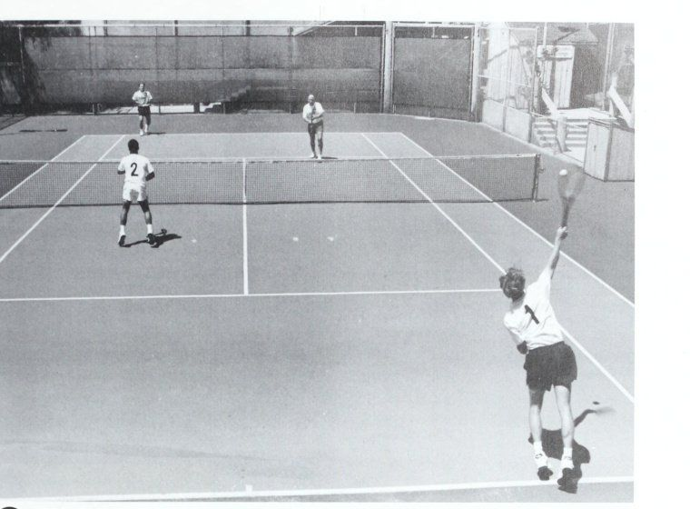
Figure 6: Tandem / I-Formation tactical setup — Obscuring receiver's visual line and dictating return patterns.
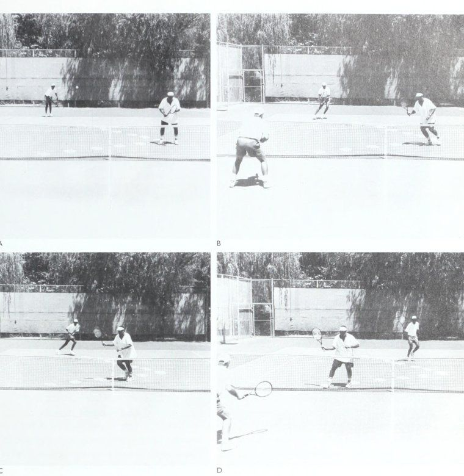
Figure 7: Receiving team court alignment — Guarding the down-the-line alley while supporting the returner.
Chương 6: Lối Chơi Đồng Đội & Chiến Thuật Đánh Đôi Toàn Diện
Aes 7% aan Một đội đôi. Các mục tiêu rất chặt chẽ và nguy hiểm khi đánh từ đường cuối sân vào một đội áp sát ở giữa.
Tinh thần đồng đội và Chiến lược — 83 PARC erA “7 PPE Bt eet Ee Những người đồng đội này giữ một sợi dây giữa họ khi họ thực hành ý nghĩa của việc bao vây sân song song cách nhau khoảng 10 '/ feet. Đánh bóng liên tục vào khu vực mục tiêu hẹp đó — các con hẻm đôi — Tôi sẽ cho bạn thấy hai tay vợt đang trên đường đến Wimbledon. .
Học cách chuyển đổi cùng nhau như một nhóm cần phải thực hành và giao tiếp, nhưng tôi sẽ tránh bài tập mà tôi đã thử - một lần - nhiều năm trước. Tôi đã nói với hai học sinh của mình hãy buộc họ vào nhau bằng một sợi dây, cách nhau 10 !/2 feet, để họ có thể cảm nhận được ý nghĩa của việc duy trì khoảng cách đó giữa họ khi họ cố gắng giữ căng sợi dây trong một bài tập kiểu “quần vợt bóng tối”. | Tuy nhiên, họ đã phải từ bỏ ý định này sau khi họ gần như tách nhau ra khi một tay vợt nói "Lái xe!" và người kia kêu lên “Lob!” và họ đã phá vỡ theo hướng ngược lại.
Khi thực sự thi đấu, bạn nên làm gì nếu đội của bạn bất ngờ bị “một lên, một lùi” trong một pha giao bóng, khi đồng đội của bạn lùi nhầm về vạch cuối sân trong khi bạn đang ở trên lưới?
Thay vì quay lại để tham gia cùng với đối tác của bạn, tôi khuyên bạn nên chớp lấy cảnh quay tiếp theo. Đội kia luôn nghĩ, “Chúng ta đã bắt được họ - chỉ cần giữ sâu và tấn công,” nhưng họ thường đánh bóng quá cẩn thận về phía phần sân của đối tác của bạn. Điều này mang lại cho bạn, kẻ băng cắt bắt bài trên lưới (Poaching), một cơ hội bỏ đi khi bạn phá bóng chéo sân để thực hiện một cú vô lê. Nếu bạn không chơi eS tích cực như thế này, đối thủ của bạn sẽ chiếm được lưới và bạn sẽ bị ép. (Ngược lại, nếu bạn bắt gặp đội đối phương trong tình trạng lộn xộn “một lên, một lùi”, hãy đánh quả bóng tiếp theo sâu về phía đối phương ở cuối sân, cách xa tay vợt trên lưới và cùng nhau di chuyển để giành quyền kiểm soát lưới.
Về mặt tỷ lệ phần trăm, đây là một mưu đồ an toàn hơn so với việc đưa tay vợt vào lưới, nếu anh ta đã có vị trí; anh ta có thể đánh trúng người chiến thắng may mắn chỉ nhờ ở gần lưới.) Giao tiếp Giao tiếp thành tiếng với đối tác của bạn là phương pháp tốt nhất mà tôi biết để giúp phối hợp các phản ứng và chuyển động như một đội. Cả hai bạn nên học cách gọi "Đó là một cuộc lái xe!" hoặc "Đó là một cú lốp bóng!" trong khi phá bóng. Lúc đầu, bạn có thể hơi tự ti, và sẽ có lúc đối tác của bạn gọi “lái” ngay khi bạn hét “lob” và hai người chạy về hai hướng khác nhau. Nhưng sau khi chơi cùng nhau một lúc, bạn nên bắt đầu phản ứng theo bản năng, để khi bóng được đánh - bùm! - cả hai bạn đều di chuyển như một đội. Tuy nhiên, để phát triển tinh thần đồng đội này, cả hai bạn đều không thể miễn cưỡng đưa ra lời khuyên có thể giúp ích cho đối tác và nhóm của mình. Việc diễn đạt bằng lời nói này có thể đòi hỏi nỗ lực có ý thức nếu nó đi ngược lại tính cách cơ bản của bạn hoặc bạn đã lớn lên với niềm tin rằng quần vợt là một môn thể thao nhẹ nhàng và bạn không được phép nói chuyện với đối tác của mình khi trận đấu đang diễn ra. Nhưng tôi nhận thấy rằng khi một nhóm giao tiếp lớn tiếng - “Chuyển đổi!” "Che phủ!" "Mặt sau!" - mỗi tay vợt cảm thấy có trách nhiệm lớn hơn trong việc nhảy nhanh vào bóng. Khi cả hai tay vợt đều la hét và buộc mình phải thực hiện cú đánh, tay vợt có xu hướng phản ứng muộn hơn đối tác của mình sẽ bắt đầu làm việc chăm chỉ hơn để dự đoán một cú công bóng hoặc một cú lốp bóng, cho rằng anh ta có tinh thần đồng đội cao nhất và anh ta muốn thực hiện tỷ lệ cú đánh hợp pháp giữa họ.
Trong những năm gần đây, tôi cũng nhận thấy rằng các chuyên gia, cả nam và nữ, nói chuyện với nhau ở hầu hết mọi thời điểm; thay vì dựa vào các tín hiệu, họ gặp nhau tại chữ “T” và thảo luận xem họ sẽ làm gì ở điểm tiếp theo (ví dụ: băng cắt bắt bài trên lưới (Poaching)) hoặc xem xét chiến lược có thể hiệu quả hoặc có thể không hiệu quả.
Điều này có lý. Bạn không cần phải nói chuyện với đối tác của mình giữa mọi thời điểm, nhưng bạn cần phải có một hệ thống được xây dựng để mỗi người biết người kia sẽ làm gì. Điều này làm giảm bớt rất nhiều căng thẳng tiềm tàng, theo nghĩa là không có bất ngờ nào về phía lưới của bạn. Nếu đội của bạn đang giao bóng và bạn đã quyết định tấn công, bạn và đối tác đều sẵn sàng di chuyển dứt khoát, trong khi đội kia chỉ có thể đoán được ý định của bạn.
Hãy ghi nhớ các nghiên cứu về căng thẳng của các nhà khoa học ở San Francisco, những người có thể đo lường về mặt hóa học sự tăng giảm mức độ lo lắng của một cá nhân. Họ phát hiện ra rằng những người có kiến thức sâu rộng về các sự kiện có thể xảy ra sẽ ít căng thẳng hơn. Chuyển sang quần vợt, điều này có nghĩa là thành tích sẽ tốt hơn khi không có sự bất ổn. Vì vậy, khi các bạn nói chuyện theo nhóm, vạch ra chiến thuật và tôn trọng vai trò cũng như trách nhiệm của nhau, sẽ không có điều gì ngạc nhiên - không có những trò hề tầm thường - và điều đó thật tuyệt vời, vì bạn chơi ít căng thẳng hơn. Bạn càng chắc chắn về những gì sắp xảy ra thì càng ít căng thẳng và chuyển động của bạn càng phù hợp.
Ngược lại, khi một đối tác là một con heo sân cố gắng chơi vượt quá khả năng của mình, thì sẽ thường xuyên có sự do dự. Cô ấy có thể biết tinh thần đồng đội và chiến lược tìm kiếm người kế nhiệm mình. cô ấy sẽ làm gì, nhưng đối tác của cô ấy không biết, và sự lo lắng của người này sẽ chuyển thành sự bối rối, hiệu suất kém và nhận ra rằng, “Tôi ghét chơi với người đó”. Tiếp tục di chuyển Một lý do khiến những tay vợt đơn đam mê không muốn cam kết đánh đôi là vì họ nhận thấy rằng đánh đôi không cung cấp đủ bài tập. Tôi phải thừa nhận rằng cách chơi của nhiều người khá chậm và không liên tục. Ví dụ, khi một tay vợt tân binh đạt được vị trí tốt gần lưới, anh ấy nghĩ: “Làm được rồi!” He's so Double là một trò chơi chuyển động liên tục. Nếu đối tác của bạn thuận chân khi anh ấy quan sát hành động diễn ra, hãy nghĩ vui về việc đạt được ngưỡng mà anh ấy sẽ không nhúc nhích cho đến khi quả bóng thực sự đến theo hướng của anh ấy. Vì vậy, thay vì kiễng chân lên, sẵn sàng lao theo bất kỳ hướng nào, anh ấy đứng bằng gót chân và đột nhiên trở nên khá thoải mái, và một cảm giác thôi miên xuất hiện khi anh ấy nhìn quả bóng qua lại giữa hai tay vợt lùi sâu.
Trong đánh đôi tốt, nếu bạn đứng yên trong hai lượt đánh, có thể bạn đã phạm lỗi nghiêm trọng. Bạn và đối tác của bạn phải luôn di chuyển đồng loạt - lên, lùi hoặc sang ngang - gần như tự động cam kết ngay lập tức khi bạn cảm nhận được một cú lái hoặc một cú lốp bóng. Ngay cả khi đối tác của bạn đánh bại bạn bằng một cú đánh mà bạn nghĩ là của mình, hãy sẵn sàng đột phá mạnh mẽ cho quả bóng tiếp theo. Cách tiếp cận trò chơi này sẽ giúp tim bạn đập ở mức tốt, giúp bạn tham gia và giúp đội của bạn thắng nhiều trận hơn.
Tập trung vào việc đánh vào giữa Khi đội của bạn đang tung cú vô lê gần lưới hoặc buộc phải lùi về phía sau, hãy cố gắng tập trung vào việc đánh vào trung lộ giữa các đối thủ của bạn. Đôi khi, bạn sẽ muốn ném bóng trực tiếp vào một tay vợt vô lê đặc biệt yếu, nhưng trừ khi bạn có một trong những đối thủ của mình chuẩn bị sẵn sàng để hạ gục, hoặc một khu vực mục tiêu trống trên sân của họ hoặc một cú dứt điểm tuyệt đối ở một con hẻm, hãy nhắm vào sọc trung tâm.
Đầu tiên, chiến thuật này chia rẽ đội đối phương và có thể tạo ra một số nhầm lẫn, khi bạn tập hợp đối thủ của mình lại với kịch bản quen thuộc đó: “Của bạn!” "Của tôi!" Tai nạn!
Thứ hai, lưới ở giữa thấp hơn khoảng 4 inch rưỡi so với lưới ở đường biên đánh đơn, nghĩa là ít có nguy cơ mắc lỗi khi bạn tiếp xúc với bóng gần sọc giữa.
Và thứ ba, bạn sẽ cắt giảm góc vô lê hiệu quả của đối thủ nếu họ chạm được vào bóng.
Các chuyên gia chỉ đi vào các con hẻm nếu họ nghĩ rằng đối thủ sẽ cướp bóng ở trung tâm hoặc nếu họ muốn trừng phạt đối thủ vì chơi quá mức ở giữa.
Bảo vệ khu trung lộ Trong khi đó, khi bóng ở bên kia lưới, mối quan tâm của bạn phải luôn là bảo vệ khu trung lộ - thậm chí là "gian lận" ae Khi một đội quá quan tâm đến việc "bảo vệ các con hẻm", một tay vợt đánh từ đường cuối sân có một cú đánh bóng dễ dàng ngay chính giữa. ôi thông khí.
Một đội thông minh áp sát khu trung lộ khi họ giành quyền kiểm soát lưới, được minh họa bởi hai vận động viên chuyên nghiệp ở giải Infiniti Open 1995 ở Los Angeles. (Ảnh: Lisa Marie Roberto) Làm việc theo nhóm và Chiến lược theo hướng đó thông qua việc định vị và dự đoán - vì một đội mạnh sẽ tấn công vào trung tâm mọi cơ hội. Trên thực tế, nếu bạn nghe thấy đối thủ thì thầm: “Hãy coi chừng con hẻm của bạn”, đây là dấu hiệu cho thấy họ có một lỗ hổng đáng kể trong tư duy chiến thuật. Khi họ cố gắng bù đắp cho nỗi sợ hãi rằng đội của bạn sẽ liên tục tấn công từ sân sau, một đối thủ sẽ chơi rộng sang bên trái và đối thủ kia sẽ chơi rộng sang bên phải. Nhưng điều này khiến họ thiếu một người. Họ rất có ý định bảo vệ các con hẻm của mình, bạn có thể lái một chiếc xe tải vào giữa họ.
Ngược lại, những đối thủ có kinh nghiệm tốt sẽ tập trung tấn công khu trung lộ của bạn vì (1) lưới thấp hơn ở trung tâm,
(2) cú đánh của họ có thể tạo ra sự nhầm lẫn và khiến bạn và đối tác của bạn va vào vợt hoặc ngần ngại trong việc lấy bóng, và (3) họ biết bạn sẽ không thể tạo góc mạnh cho cú vô lê trả lại của mình. Vì vậy hãy sẵn sàng!
Khi đội của bạn ở trên lưới, hãy cố gắng “ôm” trung tâm sân một chút, dụ dỗ đối thủ nhắm xuống con hẻm nếu họ muốn, thay vì chơi theo tỷ lệ phần trăm bằng cách đi xuống giữa sân. Tuy nhiên, hãy cẩn thận để không trở nên quá dễ đoán trong việc nhiệt tình bảo vệ phần giữa.
Khi đội Davis Cup của Hoa Kỳ gồm Jared Palmer và Jonathan Stark thua Jan Apell và Jonas Bjorkman của Thụy Điển vào năm 1994, cây bút Julie Cart của Los Angeles Times đã lưu ý rằng "Cụ thể, Palmer đã điện báo ý định di chuyển khỏi sân khi Stark đang nhận [giao bóng], và người Thụy Điển đã khai thác đường biên cả ngày. Đó là một phần của kế hoạch. "Chúng tôi đã nói về điều đó trước trận đấu," Bjorkman nói. "Chúng tôi biết." rằng họ bước vào để thực hiện cú vô lê. Đó là lý do tại sao chúng tôi cố gắng đi xuống.'” Rõ ràng cả tay vợt Mỹ đều không thấy vấn đề với việc chọn vị trí của họ. Palmer nói: “Một đội đánh đôi giỏi đang cố gắng cắt đứt đường giữa. "Thật khó khăn khi bạn đang cố gắng che chắn phần giữa, đó là tỷ lệ phần trăm của trò chơi. Họ đã làm rất tốt việc xử lý nó ở tuyến dưới. Họ đã khai thác được điều đó." Tấn công lưới ở mọi cơ hội Luôn nhớ: Các đội xuất sắc nhất không ngừng tiến về phía trước, tìm kiếm mọi cơ hội để giành quyền kiểm soát lưới.
Đây là trò chơi mà đội của bạn phải học — một cách có ý thức và phản xạ — tấn công vào lưới mọi cơ hội nếu mục tiêu của bạn ít nhất là một lời mời tham dự Pismo Beach Open. Lưới là nơi bạn có thể giành điểm nhanh chóng, trái ngược với việc cắm trại ở đường cuối sân, nơi một đội phải thực hiện những cú đánh tuyệt vời và thu hồi chỉ để sống sót. Trên thực tế, đội của bạn càng lùi lại lâu khi đối thủ ở trên lưới thì bạn càng có ít cơ hội giành được điểm.
Tốt nhất, khi chơi sâu trước các đội đặc biệt hung hãn, bạn phải lốp bóng liên tục - đôi khi ngay cả ở lần trả giao bóng thứ hai - để đẩy những tay vợt này trở lại, và thậm chí khi đó bạn đang phải chiến đấu trong một trận chiến khó khăn chắc chắn sẽ thất bại.
Thay vì chơi phòng ngự như thế này, hãy cố gắng quyết liệt và quyết tâm chiếm lấy lưới.
Cụ thể hơn, như tôi đã nhấn mạnh trước đó trong cuốn sách, khi đội của bạn đang giao bóng, bạn và đối tác của mình nên có một mục tiêu quan trọng nhất: Vào lưới và kiểm soát lưới - cùng nhau. Và khi bạn nhận được quả giao bóng, nhiệm vụ của bạn là cướp lưới của đội giao bóng bằng cách di chuyển vào phía sau một cú trả giao bóng mạnh.
Tấn công, không chỉ vì bạn sẽ nhận được © Đây là quan điểm của một tay vợt khi anh ta buộc phải đánh từ bên dưới băng lưới. Đây không phải là một cảnh tượng đẹp mắt khi thực hiện cú sút dễ dàng hơn ở gần lưới hơn, nhưng vì bạn sẽ khiến đội kia lo lắng. Ví dụ: khi đối thủ của bạn đang giao bóng, họ có lợi thế ban đầu, nhưng lợi thế này sẽ thay đổi nếu đội của bạn có thể tiến về phía trước sau một cú trả giao bóng đúng vị trí buộc người giao bóng phải đánh lên từ dưới mức lưới. Trên thực tế, đột nhiên đội của bạn đã sẵn sàng giành điểm.
Lời khuyên chính khi chơi lưới Các nguyên tắc được đề xuất của tôi khi chơi lưới bắt đầu bằng việc hiểu rằng hầu hết các tay vợt câu lạc bộ không tận dụng tối đa vị trí của họ trên lưới, bởi vì họ không thể tiến về phía trước khi đối thủ của họ sẵn sàng tận dụng cơ hội này để thực hiện một cú vô lê đẩy bóng. dự đoán một cú đánh lái hoặc sau khi họ thực hiện cú vô lê.
Vì bất kỳ lý do gì (và tôi đã thảo luận về chúng trong nhiều phần khác nhau của cuốn sách này), có quá nhiều tay vợt theo dõi các trận đấu đôi khi họ không trực tiếp tham gia vào vấn đề, thay vì luôn sẵn sàng và kiễng chân lên và nghĩ, "Quả bóng tiếp theo đang đến với mình!" Hoặc họ quá sợ cú lốp bóng đến mức không thể vào lưới để thực hiện một cú vô lê có khả năng cản phá.
Những nguyên tắc sau đây sẽ giúp bạn trở thành một thế lực trong tuyến dịch vụ.
1. Biết ai nên bắn. ưu tiên cho bất kỳ cú đánh nào trong tầm tay. Điều này Tay vợt gần lưới có tiên đề được hiểu rõ ràng bằng kinh nghiệm Làm việc theo nhóm và Chiến lược: lưới hơn đối tác của mình. đội tham gia, trong đó cả hai tay vợt đều phản ứng tự động mà không do dự.
Tại sao? Chà, một tay vợt ở gần lưới có thể đánh bóng ở một góc nhọn, đôi khi là 130 hoặc 140 độ, vào khu vực không có người bảo vệ của sân. Hãy so sánh góc này với việc một tay vợt đang chuyền bóng cách lưới 10'/feet, người này có thể chỉ có góc đánh 30 độ trên sân rộng. Ngoài ra, khả năng bóng quay trở lại sẽ cao hơn nếu tay vợt ở xa lưới chạm vào nó hơn.
Hơn nữa, nếu tay vợt ở gần lưới chạm bóng hơn (đó là xu hướng tự nhiên của cú vô lê, trái ngược với việc thực hiện một cú vung ngắn xuyên qua bóng), kết quả thường không thảm khốc như khi EWE me se eee eee mee oe ee = ZLkELC OMIT S SASK S Ree eer TR A SSSA te MUNG TSS ES SSS Se ee SF Ee Te oe se Chú ý cách tay vợt bên trái đã cắt ngang đường giữa để thực hiện cú vô lê vì cô ấy ở gần cú đánh hơn của anh ấy từ xa hơn. Nếu anh ấy ở trên lưới, anh ấy có thể tung ra một cú vô lê hiểm hóc mà vẫn giành được điểm. Nhưng khi một người phải tung cú vô lê cách lưới từ 15 đến 20 feet, chỉ cần một động tác đánh xuống nhẹ nhất sẽ đưa bóng vào lưới.
Thật không may, việc áp dụng lời khuyên “gần gũi nhất với mạng” của tôi vào các tình huống thực tế đôi khi dẫn đến một cuộc tranh luận lớn mà tôi đã nghe trên khắp thế giới và nó bắt nguồn từ niềm tin chiếm ưu thế này: “Đây là phe của tôi và đó là phe của bạn; ĐỪNG ĐANG LÊN PHÍA CỦA TÔI!” Tin rằng đây là một tiên đề của các cuộc đánh đôi quần vợt, một người nổi giận với đối tác của mình và nói: “Này, bạn đã cướp cú đánh của tôi!
Bạn chạy về phía sân của tôi, ngay trước mặt tôi! Và đối tác, nếu anh ta khôn ngoan trong trò chơi, sẽ trả lời, “Bạn nói đúng - nhưng đó là cú đánh của tôi; tôi là người gần lưới nhất, vì vậy nếu bạn muốn cú đánh đó, hãy chuẩn bị sẵn sàng cho cú đánh đó.” Nếu bạn thấy mình đang phàn nàn với một đối tác rõ ràng là một kẻ thích sân đấu trong những tình huống chuyền bóng này, rất có thể bạn đang nổi giận nhầm người. Đối tác của bạn (trong hầu hết các trường hợp, rất may mắn cho bạn, trừ khi anh ta làm gián đoạn cú đánh hợp pháp của bạn bằng cách đi về phía sân của bạn) đang chạy trước mặt bạn để thực hiện cú vô lê vì anh ta nhìn thấy cú đánh bóng đang đến và cảnh giác lao về phía trước, đặt mình gần lưới hơn và sau đó “bắt” cú đánh của bạn. Vì vậy, thay vì tức giận, chỉ cần nhớ: Bạn phải thực hiện cú vô lê bằng cách lao về phía trước và là người gần lưới nhất. Không có cái gọi là “phe của tôi, phe của bạn” trong môn quần vợt lớn. Đó là zoom, zoom, qua lại trước mặt nhau. Nếu một tay vợt bị bắt lại, anh ta muốn đồng đội của mình nhảy qua và thực hiện cú vô lê của anh ta trên lưới.
Tuy nhiên, có một cảnh báo: Khi bạn cú đánh vượt qua (Passing shot) vạch giữa trên đường chết, giờ đây bạn sở hữu bên đó và đồng đội của bạn có nghĩa vụ đứng về phía bạn trên sân. Đừng vượt quá giới hạn và đột nhiên nghĩ, “Ồ, ồ, lẽ ra tôi không nên đi,” rồi lùi lại, vì bạn sẽ khiến đối tác của mình rơi vào tình trạng loạng choạng. Bạn đã quyết định đi lấy bóng và bây giờ bạn phải chịu trách nhiệm về việc B đánh nó.
Nếu bạn liên tục tụt lại phía sau @ A-B của mình ở gần lưới, hãy luôn sẵn sàng phá vỡ đối tác và cảm thấy mệt mỏi khi để tay cầm của cô ấy tiến về phía trước theo đường chéo để chặn bóng trong trường hợp của bạn trên lưới, bạn phải ra ngoài và về phía đối tác của sân (A). Hãy chú ý ở đây cách thực hành. Tôi đã từng chơi đôi nam nữ quanh Nam California với Louise Brough (5 lần vô địch đôi Wimbledon, 12 lần vô địch đôi Mỹ), và cô ấy chắc chắn không ngại thực hiện cú vô lê của tôi nếu tôi tiếp cận trung bình với một đối tác di chuyển nhanh và tung ra một cú vô lê dễ dàng từ ngay trên lưới (B), cứu đồng đội của anh ta khỏi một cú vô lê khó và thấp.
Làm việc theo nhóm và chiến lược bóng. Tôi vẫn nhớ cô ấy đã nói, “Bất cứ lúc nào anh sẵn sàng, Braden, hãy lên đây.” Theo đúng nghĩa đen, tôi phải ra sân trống trước trận đấu và luyện tập bước đầu tiên để tôi có thể hợp pháp giữ mối quan hệ của tôi với Louise, một người phụ nữ và một người bạn tuyệt vời.
2. Người chuyền bóng giỏi nhất nên che chắn những cú đánh ở giữa.
Tôi thường nhận thấy trong quần vợt câu lạc bộ rằng khi một đội cùng ở trên lưới, người thực hiện mọi cú đánh ở giữa có xu hướng có miệng to nhất. Nếu là đội vợ chồng, ai ra quyết định trong gia đình thường gọi họ ra sân. Nhưng “chiến lược” này sẽ không hiệu quả nếu bạn hy vọng phát triển một đội đôi mạnh mẽ, và nó cũng không giúp ích gì cho một mối quan hệ hôn nhân điển hình.
May mắn thay, có một giải pháp khách quan. Nếu bạn và đối tác của bạn ở gần lưới như nhau khi bóng được đánh, tay vợt có cú vô lê tốt hơn ở giữa sẽ thực hiện cú đánh, có thể là cú vô lê trái tay hoặc cú vô lê thuận tay. Việc tay vợt vô lê thuận tay thực hiện cú đánh không phải là tự động, vì một số tay vợt thực sự có cú vô lê trái tay tốt hơn cú vô lê thuận tay của đối tác của họ. Ví dụ, Ken Rosewall có một cú đánh trái tay nguy hiểm đến mức bạn sẽ không thể mơ cản đường được anh ấy.
Cố gắng giải quyết sớm quyết định tầm thường này trong mối quan hệ hợp tác, để bạn giảm thiểu sự do dự và bùng phát tại tòa. Thông thường, những người trung gian trên khắp thế giới thiếu quyết đoán hoặc ngại di chuyển đến mức cả hai đều nói “Của bạn!” và quả bóng đi qua giữa họ mà không hề bị ảnh hưởng và không hề hấn gì.
Tôi thích hệ thống /s—'/s giữa hai tay vợt. Sau khi bạn và đối tác của bạn đồng ý xem ai có cú vô lê mạnh hơn ở giữa, tay vợt đó sẽ chịu trách nhiệm về /s khoảng cách giữa bạn và rõ ràng là anh ta sẽ vô lê mọi quả bóng đến trung tâm giữa bạn. Điều này sẽ giúp ngăn chặn sự va chạm của các vợt khi các cú đánh đi vào giữa và dẫn đến những cú đánh trả hiệu quả hơn. Tuy nhiên, hãy luôn nhớ rằng người chịu trách nhiệm về */s sẽ mắc nhiều lỗi tương ứng hơn, vì vậy tay vợt */s phải kiên nhẫn và thông cảm.
Người được ưu tiên nên suy nghĩ tích cực, luôn sẵn sàng tiến về phía trước theo đường chéo để tung cú đánh tấn công. Mục tiêu ở đâu? Lùi xuống giữa sân, trừ khi một đối thủ hơi lùi lại và đối thủ kia hơi lùi lên, tạo ra một đường chéo giữa họ cần được khai thác. Hoặc, nhắm vào hông phải của tay vợt yếu hơn (nếu anh ta thuận tay phải; hông trái đối với người thuận tay trái) và buộc anh ta thực hiện một lượt chơi.
Một nhóm tốt sẽ phát triển các câu trả lời tự động và không nên nói “Của bạn!”, ngoại trừ những thời điểm hiếm hoi khi một cảnh quay ở ngay ranh giới */s—/s. Nhóm càng giỏi thì bạn càng ít nghe thấy “Của bạn”; đội càng yếu thì bạn càng nghe thấy cả hai đối tác gọi nó cùng một lúc.
Đội của bạn có thể tiếp cận lưới càng gần, bạn càng có thể khai thác đội đối phương. Như chúng ta đã thấy, bạn sẽ có được những góc sắc nét hơn để thực hiện những cú đánh xa và bạn sẽ gây áp lực nhiều hơn để đối thủ thực hiện, đồng thời tạo ra những lỗ hổng trong hàng phòng ngự của họ. "Chống lại một cú đánh lái (bất kỳ cú đánh nào mà bạn có thể vô lê), điều này có nghĩa là đội của bạn phải học cách thoát khỏi vạch đích bằng bước đầu tiên thật nhanh về phía lưới khi bạn nhìn thấy một cú sút sắp tới. Tấn công - đừng đợi bóng đến với bạn. Bóng rơi nhanh và nếu bạn để nó chìm xuống dưới mép lưới, bạn sẽ đặt mình vào thế phòng thủ và tất cả những gì bạn có thể làm là cố gắng đấm bóng sâu. tet phy vs moran 9 = O tấn công, các bạn đã sẵn sàng Cả hai đường cuối sân (Baseline) của kế hoạch ’ A-B- Lên lưới ’ che chắn đối thủ Làm việc theo nhóm và Chiến lược © Tay vợt ở phía trước đã mắc một sai lầm chiến thuật. Cô ấy thấy đối thủ của mình phải nhấc bóng lên một cách phòng thủ, nhưng thay vì kiễng chân lên và nghiêng người về phía trước, sẵn sàng thực hiện cú vô lê gần lưới, cô ấy đã đứng dậy và kiễng chân trở lại.
Jack Kramer từng nổi điên trên khán đài khi chứng kiến một tay vợt có vị trí tốt chần chừ và để bóng rơi xuống dưới mức lưới, sau đó cố gắng tung một cú vô lê tấn công. Jack đã chứng kiến rất ít tay vợt trong lịch sử môn thể thao này có thể thực hiện một quả bóng thấp và chuyển nó thành một cú vô lê tấn công thành công thực sự.
Ngoài ra, hãy nhớ tiếp tục tiến về phía trước khi bạn thực hiện cú vô lê thay vì dừng lại để chiêm ngưỡng cú đánh của mình. Điều này sẽ giúp đảm bảo kỹ thuật tốt hơn đồng thời giúp bạn tiến sâu hơn nữa cho cú vô lê tiếp theo, nếu có cơ hội. Nếu cơ thể bạn di chuyển về phía trước khi bạn vung vợt, vợt của bạn không cần phải di chuyển nhiều và điều này giúp giảm thiểu những cú đánh sai; theo nghĩa đen, bạn có thể chỉ cần định vị vợt của mình và sử dụng động lượng của cơ thể để cung cấp lực.
4. Luôn tham gia một cách độc lập.
Một số tay vợt gặp rắc rối trong đánh đôi là những người tôn thờ đồng đội của họ hoặc là những người có tư tưởng phụ thuộc. Họ luôn nghĩ: “Đối tác của tôi sẽ hiểu được điều đó”. Nhưng nếu muốn góp phần tạo nên một đội chiến thắng, bạn phải sẵn sàng cho mọi tình huống xảy ra. Suy nghĩ duy nhất của bạn là “Tôi sẽ lấy quả bóng tiếp theo”. Nếu đối tác của bạn hiểu được thì tốt thôi, nhưng bạn đã đoán trước được cú đánh tiếp theo.
5. Học cách “đọc” ý định của đối thủ.
Một lý do khiến nhiều người lo sợ Khi đối thủ của bạn đánh từ chân sau và hất bóng bằng mặt vợt mở, hãy sẵn sàng chạy lại để thực hiện một cú lốp bóng. chơi trên lưới là họ sợ chết khiếp nếu thực hiện sai động tác trước cú sút của đối phương từ đường cuối sân. Trên lưới, tay vợt có thể suy nghĩ đúng đắn và tự hỏi mình, "Đẩy bóng hay lốp bóng? Đánh bóng hay lốp bóng?" khi anh ta nghiên cứu vợt của đối thủ.
Nhưng anh ấy không muốn trông tệ khi xuất phát về phía trước để đánh lái ngay khi đối thủ lốp bóng qua đầu anh ấy và anh ấy phải quay người và chạy như điên để thực hiện pha chơi. Vì vậy, anh ta đứng vào lưới trong tư thế sẵn sàng, quan sát đối thủ di chuyển tới bóng và thấy cú lốp bóng sắp tới, nhưng sau đó không kết hợp được những bản năng này với những phản ứng nhanh chóng.
Khi cú lốp bóng đi lên, anh ấy chỉ đứng đó, nhìn lại qua vai và lẩm bẩm, "Thật điên rồ, cô ấy lại làm vậy!" Để tránh thay đổi đội của bạn như thế này, hãy bắt đầu chú ý đến những mẹo nhỏ tiết lộ kiểu đánh của đối thủ © Khi đối thủ của bạn có kiểu đánh này ngay trước khi va chạm, cô ấy sẽ không lốp bóng. sắp xảy ra - và sau đó đừng ngại phản ứng. Về cơ bản, hãy nghiên cứu vợt và cẳng tay của anh ấy khi anh ấy vung vợt vào bóng. Nếu anh ta xoay cẳng tay và mặt vợt mở ra và nghiêng lên trời, anh ta sẽ lốp bóng. Nếu anh ta vung vợt ngang bằng với mặt vợt thẳng đứng, anh ta sẽ đánh bóng. Một manh mối khác là bước chân của anh ta. Nếu anh ta ngả người về phía sau với trọng lượng dồn vào bàn chân sau và mặt vợt hạ xuống thấp và nghiêng về phía sau, thì anh ta sẽ lốp bóng; không có cách nào anh ấy có thể lái bóng một cách hiệu quả. Nhưng nếu anh ta bước vào bóng bằng chân trước, hãy tìm cú đánh lái.
Cũng hãy nhớ rằng các quy luật vật lý đang thay mặt bạn hoạt động. Chúng tôi biết từ các nghiên cứu trong phòng thí nghiệm nghiên cứu về vận động rằng một khi một người bắt đầu vung vợt và vợt hướng về phía trước, anh ta không thể thay đổi chương trình vận động một cách hiệu quả; bộ não Làm việc theo nhóm và Chiến lược đã “làm mệt mỏi” chương trình và không thể lấy lại được. Nếu anh ta cố gắng, anh ta sẽ bị mắc kẹt giữa động tác truyền động và động tác thùy, và bộ não sẽ bị nhầm lẫn - cố gắng xử lý đồng thời hai chương trình vận động riêng biệt - và điều này sẽ dẫn đến sai sót khi thực hiện.
Ở trên lưới, sâu thẳm bên trong, bạn có thể vẫn nghĩ, “Tôi biết Vic đã nói gì, nhưng đây có thể là một trò lừa.” May mắn thay, đã quá muộn để điều đó xảy ra, điều này sẽ giúp bạn tự tin di chuyển ngay lập tức, biết rằng một khi đối thủ của bạn đã quyết tâm thực hiện cú đánh của mình, anh ta không thể thay đổi và cố gắng đánh lừa bạn.
Bảo vệ chống lại quả thùy Câu hỏi “Ai lấy quả thùy?” là học tập trong một đội tốt. Khi bóng bay qua đầu, bạn và đồng đội phải cùng nhau rút lui, mỗi người che một nửa sân từ lưới đến vạch cuối sân. Đừng tự động quay lại và nói “Của bạn” vì đối tác của bạn có thể cũng đang nói điều tương tự.
Chẳng hạn, thật sai lầm khi cho rằng khi đội của bạn ở trên lưới và một cú lốp bóng đi qua đầu đối tác của bạn ở phần sân bên phải, bạn nên chạy lùi lại’và cố gắng thực hiện cú chơi bằng cú thuận tay của mình. Mỗi người trong số các bạn chịu trách nhiệm về một “vỉa hè” rộng chính xác là 18 feet và dài 39 feet, trừ khi một người vì lý do nào đó hoàn toàn mất vị trí (ví dụ: đối tác của bạn đã lao tới để đánh trả và chưa lấy lại được thăng bằng) hoặc đơn giản là rút lui quá chậm.
Ở trên lưới, nếu đội của bạn luôn sẵn sàng rút lui để lấy bóng và có thể tin tưởng vào bản năng cá nhân, thì bạn sẽ tự lo liệu trước những cú lốp bóng. Khi bạn nhìn thấy một cú lốp bóng sắp tới, hãy quay lại và chạy lùi lại ba bước trước khi nhìn lên để xem bóng ở đâu. Điều này sẽ giúp bạn quay lại nhanh chóng và vẫn có nhiều thời gian để tra cứu và bắt đầu theo dõi đường đi của quả bóng.
Cố gắng tránh lùi bước, một cách rút lui chậm hơn, hạn chế hơn cũng có xu hướng thúc đẩy chuyển động đánh từ trên cao khó xử. Khi bạn có thể chạm tới vạch giao bóng trước khi bóng chạm lưới, sẽ không có ai lốp bóng qua đầu bạn thành công.
Bạn sẽ luôn ở vị trí thuận lợi để lốp bóng, đánh lái hoặc đánh một cú đập từ trên cao vào cú lốp bóng yếu.
Tại trường đại học quần vợt của tôi, tôi chỉ cho sinh viên cách họ có thể thực hiện hầu như bất kỳ cú lốp bóng nào nếu họ chỉ học cách “đọc” cú đánh sắp tới rồi quay người và chạy mạnh về phía hàng rào phía sau mà không cần nhìn lên. Họ không quay lại cho đến khi nghe thấy bóng chạm đất, nhưng họ choáng váng khi nhận ra mình còn bao nhiêu thời gian để trả bóng (thường kèm theo một cú lốp bóng trả đũa, vì đối thủ thông minh sẽ di chuyển lên lưới).
Một khi nhận ra điều này, mọi người bắt đầu tiến gần hơn đến lưới để thực hiện cú vô lê, bởi vì giờ đây họ tự tin hơn về việc rút lui để thực hiện cú lốp bóng. Vì vậy, những cú vô lê của họ cũng được cải thiện mà không có bất kỳ thay đổi nào về kỹ thuật đánh, bởi vì họ có vị trí gần lưới tốt hơn. Trước đây, nỗi lo sợ về khả năng lùi nhanh để che bóng đã hạn chế sự hung hãn của họ và khiến họ chơi quá xa lưới, từ đó làm suy yếu những cú vô lê của họ. 'Đây là một mẹo khác: Khi đối thủ thực hiện cú lốp bóng đầu tiên của trận đấu quá lâu, vượt quá đường cuối sân, đối thủ tiếp theo rất có thể sẽ thực hiện cú lốp bóng ngắn - mang đến cho đội của bạn một cơ hội cú đánh vượt qua (Passing shot). Nếu bạn có thể thực hiện cú đánh này và giành được điểm, bạn sẽ có được lợi thế tâm lý, vì đối thủ lúc này là O ăn 2 với cú lốp bóng, và điều đó có thể gây ức chế cho những người kém tự tin hơn <> ee~eres . [ ; ' ; a ee BA I pe] : ' ; ecnegsiauaine eos © Các đồng đội nên cùng nhau rút lui nhanh chóng để che chắn một cú lốp bóng bằng cách chạy thay vì lùi lại. tay vợt. Sau khi đánh quá lâu ở cú lốp bóng đầu tiên của trận đấu, phản ứng điển hình của anh ấy sẽ là, "Trời ơi, tệ quá; tôi phải nhẹ nhàng hơn." Vì vậy, anh ấy chăm sóc cú lốp bóng tiếp theo và nó đi quá ngắn. Nếu đội của bạn có thể tiếp tục thực hiện đòn đánh dễ dàng này, bạn có thể khiến đối thủ đó bị đe dọa trong phần còn lại của trận đấu.
Tận dụng lợi thế từ cú lốp bóng của chính bạn Một đội lốp bóng liên tục thường chơi phòng thủ đôi, nhưng hãy luôn nhớ: Một cú lốp bóng tốt có thể đưa bạn nhanh chóng từ phòng thủ sang tấn công.
Trên thực tế, nếu đối thủ của bạn kiểm soát lưới, một cú lốp bóng sâu từ đường cuối sân thường là tỷ lệ phần trăm cú sút tốt nhất so với những tay vợt trung gian, bởi vì rất nhiều tay vợt ở cấp độ này có những pha đánh đầu yếu hoặc không nhất quán và do đó thường không tận dụng được một cú lốp bóng ngắn.
Đối đầu với những tay vợt được xếp hạng 4.0/5.0 trong giải đấu, một cú lốp bóng sâu (theo đường chéo, để tăng thêm chiều dài) hoặc một cú đánh bóng xuống giữa sân là lựa chọn tốt nhất của bạn. Đặc biệt, ở cấp độ chuyên nghiệp, nơi gần như mọi nỗ lực lốp bóng đều dẫn đến một cú đánh bóng qua đầu, hầu hết tay vợt nghĩ rằng họ có cơ hội tốt hơn bằng cách lái bóng và hy vọng đối thủ của họ sẽ đánh trượt. Phản ánh thực tế rằng rất khó để lốp bóng một tay vợt giỏi trong quần vợt chuyên nghiệp vì cú đánh từ trên cao có sức mạnh rất lớn, Bobby Riggs nói với tôi vào năm 1995 rằng ông tự coi mình là một trong những Chiến lược và tinh thần đồng đội vĩ đại nhất a7 B @ A-B Hãy nhớ quy tắc cơ bản: Thời điểm đội của bạn lốp bóng thành công qua đầu đối thủ, hãy bắt họ từng bước một khi họ rút lui và bạn tiến về phía trước.
Đội lốp bóng trong ảnh A vẫn ở trên đường cuối sân và do đó đã lãng phí một cơ hội tuyệt vời để giành quyền kiểm soát lưới. Ở ảnh B, họ di chuyển lên đúng cách trong khi đối thủ của họ mắc sai lầm khi lùi lại. những kẻ vận động hành lang trong lịch sử môn thể thao này, nhưng anh không thể nhớ Jack Kramer đã từng đánh hụt anh ta.
Khi đối thủ của bạn kiểm soát lưới và bạn lốp bóng thành công qua đầu họ, đừng đứng nhìn họ rút lui.
Tiến về phía trước, bắt cặp họ từng bước một, để khi nhìn xung quanh, họ sẽ nhìn thấy ai trên lưới? Đội của bạn. Bằng cách áp sát lưới, cách nhau 10 đến 12 feet, bạn sẽ chỉ cho phép đối thủ có những sơ hở nhỏ nhất để thực hiện một cú chuyền bóng.
Hãy ghi nhớ lời khuyên của tôi khi phòng thủ trước cú lốp bóng của đối thủ (“Nếu cú lốp bóng đầu tiên trong trận đấu dài, cú lốp tiếp theo có thể sẽ trở nên ngắn”), khi bạn đang tập lốp bóng trước trận đấu và bóng đi dài, đừng thay đổi cú đánh của bạn. Thay vào đó, chỉ cần đánh bóng cao hơn trong không trung với cùng tốc độ và nó sẽ tiếp đất bên trong đường cuối sân (Baseline). Với tư cách là người đánh, nếu cú lốp bóng của bạn dài, hãy coi đó là một cú lốp bóng tốt, biết rằng bây giờ bạn phải đánh quả tiếp theo cao hơn nhưng với cùng tốc độ và nó sẽ nằm trong đường cuối sân (Baseline). Điều này sẽ giúp bạn không rơi vào hội chứng “một sâu, một ngắn”.
Quyết định ai có quyền ưu tiên về chi phí chung Khi có thời gian để một trong hai đối tác thực hiện chi phí chung, ai được ưu tiên? Điểm mấu chốt: Người có thể đưa bóng đi tốt nhất - dưới áp lực - nên thực hiện cú đánh, ngay cả khi điều này có nghĩa là phải chuyển vị trí sân từ trái sang phải hoặc phải sang trái.
Nếu khả năng bỏ bóng của cá nhân bạn tương đương nhau, mỗi tay vợt sẽ phải gánh chịu các chi phí di chuyển về phía sân của mình.
Những quyết định này phải được đưa ra trước trận đấu và khi đối tác của bạn tích lũy kinh nghiệm. Thật không may, một số đội gặp khó khăn trong việc đạt được thỏa thuận ở đây, đặc biệt là ở nội dung đôi nam nữ, khi tôi thường nghe đối tác nữ phàn nàn, "Chi phí của tôi cũng ngang bằng với đối tác của tôi, nhưng anh ấy luôn dồn tôi ra ngoài và cố gắng đánh từng người. Tôi có thể làm gì?" Lời khuyên của tôi ở đây là: Nếu bạn không thể thuyết phục được một đối tác ham chơi rằng chi phí của bạn cũng tốt như của anh ấy, hãy hỏi một người bạn hoặc. chuyên gia câu lạc bộ sẽ ném 20 quả lốp bóng cho mỗi bạn và yêu cầu người đó đánh giá xem ai là người đưa bóng đi tốt hơn. Người thực hiện đánh giá này nên cố gắng hoàn trả từng chi phí để anh ta có cảm nhận thực tế về mức độ hiệu quả của hai bạn - tập trung vào vị trí hơn là tốc độ. Nếu anh ta xác định rằng bạn thực sự có khả năng sát thương cao hơn, thì giờ đây đối tác của bạn có trách nhiệm lùi lại và để bạn điều khiển cú đánh ở mọi cơ hội. Tất nhiên, nếu chi phí chung của bạn thực sự kém ấn tượng hơn bạn nghĩ, hãy chuẩn bị sẵn sàng để đối tác của bạn tận dụng các cơ hội ở giữa.
Băng cắt bắt bài trên lưới (Poaching) là một chiến thuật nên được kết hợp vào chiến lược của đội bạn không chỉ ở quả giao bóng mà còn vào những thời điểm quan trọng khi điểm đang diễn ra, khi bạn cảm thấy đối thủ sắp đánh bóng chéo sân và bạn cắt vào giữa — theo đường chéo về phía trước — giống như khi anh ta đang tiếp xúc với bóng, khi anh ta không thể thay đổi ý định và đi xuống đường biên. Nếu bạn có thể đột phá đúng lúc và di chuyển vào lưới (tất nhiên là trong khi dự đoán trước cú sút chéo sân), sẽ có rất ít cú sút cú đánh vượt qua (Passing shot) được bạn.
Nhược điểm duy nhất của việc băng cắt bắt bài trên lưới (Poaching) mà tôi thấy là Làm việc theo nhóm và Chiến lược là kẻ băng cắt bắt bài trên lưới (Poaching) có thể hành động quá sớm hoặc quá muộn, nhưng đó là một vấn đề dễ dàng khắc phục. Điều đáng quan tâm ở đây là đối thủ có xu hướng tung ra nhiều cú đánh hiểm hóc khi họ phải lo lắng về việc đội của bạn băng cắt bắt bài trên lưới (Poaching) trong suốt trận đấu và mọi người thường quên mất một kẻ băng cắt bắt bài trên lưới (Poaching) giỏi sẽ giành được bao nhiêu điểm mà chưa bao giờ chạm vào bóng. Ngay cả đối tác đôi khi cũng bỏ qua đức tính này khi họ cảm thấy khó chịu sau khi đối tác băng cắt bắt bài trên lưới (Poaching) của họ bỏ lỡ một cú vô lê dễ dàng.
Khi điểm bắt đầu, chìa khóa của việc băng cắt bắt bài trên lưới (Poaching) là để tay vợt ở gần lưới hơn hiểu rằng anh ta “sở hữu” lưới từ cột này đến cột khác và anh ta không bao giờ cảm thấy ức chế khi di chuyển vào lãnh thổ của đối tác để thực hiện cú đánh. Ví dụ: nếu bạn có vị trí đối với đối tác của mình và bạn cảm thấy rằng đối thủ sắp thực hiện cú đánh chéo sân yêu thích của anh ta - nhưng bạn đang ở vị trí thuận lợi - bạn nên thoải mái cú đánh vượt qua (Passing shot) và băng cắt bắt bài trên lưới (Poaching). “Đoán” đúng và bạn sẽ luôn có cơ hội thực hiện cú vô lê. Trong khi đó, tất nhiên, đối tác của bạn phải sẵn sàng bao trùm lãnh thổ mà bạn đã từ bỏ, đề phòng trường hợp bạn hiểu sai ý định của đối thủ.
Sau khi trận đấu đang diễn ra, các tay vợt hàng đầu có sự hiểu biết theo bản năng với đồng đội của họ, về cơ bản như thế này: “Nếu bạn quay lại và tôi đứng lên, và đối thủ ở sâu trong góc, hãy tìm tôi để đi và sẵn sàng yểm trợ cho phía tôi.” Trên thực tế, mục tiêu của những pha đánh đôi tốt là phải đồng bộ tốt với đối tác của mình đến mức các tín hiệu hình ảnh là không cần thiết vì bạn biết mỗi người sẽ làm gì trong hầu hết các trường hợp.
Bắt đầu luyện tập băng cắt bắt bài trên lưới (Poaching) nhiều hơn khi bạn chơi các trận đấu của mình và để ý xem bạn có thêm bao nhiêu quả bóng để đánh vào lưới và bạn sẽ thấy vui hơn thế nào.
Sử dụng bóng ngắn làm vũ khí Hãy cố gắng tập trung sớm trong trận đấu xem đối thủ của bạn xử lý bóng ngắn tốt như thế nào khi kéo họ từ đường cuối sân hoặc khi họ tấn công. Điều này sẽ giúp bạn xác định mức độ tích cực mà bạn nên tận dụng một trong những chiến thuật cơ bản trong đánh đôi tốt: Khi bạn đánh bóng ngắn, dù cố tình hay nhầm lẫn, hãy tiến về phía trước - đừng lùi lại. Nhiều tay vợt gặp khó khăn khi trả bóng ngắn hoặc ghét di chuyển vào lãnh thổ bóng ngắn vì sợ rằng họ sẽ phải đánh một cú vô lê thấp.
Những đối thủ này nên bị tấn công, bởi vì họ luôn bắt được lưới hoặc nhấc bóng lên cao bằng cú đánh trả của mình, tạo ra các cơ hội thực hiện cú vô lê dứt điểm. Đặc biệt, những tay vợt thuận tay dễ bị tổn thương trước những đường bóng ngắn được đặt đúng vị trí.
Khi đối mặt với một đường bóng ngắn, đối thủ của bạn không chỉ phải cúi xuống và duỗi ra để thực hiện cú đánh mà anh ta không thích ngay từ đầu, mà còn có yếu tố gây mất tập trung khi anh ta thấy bạn lao vào. Ken Rosewall di chuyển phía sau một đường bóng ngắn giống như bất kỳ ai mà tôi từng thấy, và Gigi Fernandez đã làm rất tốt điều đó trong số các tay vợt ngày nay. Hãy nhớ lại rằng từ quan điểm học vận động, bạn càng có thể đặt nhiều biến số vào đầu đối thủ thì anh ta càng có khả năng sử dụng sai các cơ khi thực hiện cú vung vợt.
Tận dụng các liên kết yếu của một đội. Tinh thần chơi thông minh trong các trận đấu đôi (trong ranh giới tinh thần thể thao) thường có thể giúp một đội có kinh nghiệm đánh bại một đội mạnh hơn nhưng kém hiểu biết hơn. Tuy nhiên, tôi phải nói rằng tôi chưa bao giờ gặp một đội tuyệt vời nào thảo luận về “tay nghề trò chơi”. Mọi cuộc trò chuyện mà tôi tình cờ nghe được về vấn đề này đều liên quan đến A-D Khi đội giao bóng rình rập, tay vợt ở lưới đợi bóng đi qua (B), sau đó đột nhập vào giữa để tung cú vô lê trả về dự đoán (C). Trong khi đó, người giao bóng lao tới để che phần sân còn trống của anh ta (D).
Tinh thần đồng đội và Chiến lược 10} và A-B Khi một tay vợt cúi thấp để đánh một nửa cú vô lê (A), anh ta phải nhấc bóng lên để giữ nó ra khỏi lưới, điều này thường tạo ra một cú vô lê cao, dễ dàng cho tay vợt đông người vào lưới (B). Dù tay vợt này đang gặp khó khăn nhưng mặt vợt của anh ta lại nghiêng xuống và rất có thể anh ta sẽ đánh được cú đánh thấp nhất có thể. thông tin về quần vợt, chẳng hạn như “Cô ấy di chuyển chậm sang bên trái” hoặc “Chúng ta có thể tấn công cú giao bóng thứ hai của anh ấy”. Tôi không thể nhớ đã nghe tay vợt nói: “Hãy xem liệu chúng ta có thể khiến họ phát điên bằng cách càu nhàu trong mỗi cú đánh hay không”, mặc dù tôi đã thấy rất nhiều đội tầm thường thử những chiến thuật kỳ quái. Ngoài ra, tôi nói với mọi người rằng họ nên mỉm cười khi nhìn thấy những nước đi tinh thần trong trò chơi vì điều đó thường có nghĩa là đối thủ đang bắt đầu lo lắng và họ cảm thấy họ cần điều gì đó ngoài những cú đánh chùn bước để giành chiến thắng.
Tuy nhiên, đây là một số chiến thuật được đề xuất có thể giúp bạn khai thác một cách hợp pháp đội đối phương mà không nhất thiết phải kích động một cuộc ẩu đả hoặc kiện tụng.
1. Giả sử bạn đang chơi trong một đội có một tay vợt đặc biệt thấp.
Khi anh ta ở sân sau, hãy cố gắng giữ anh ta ở lại đó bằng cách đánh các cú giật xoáy lên. Những đường bóng có độ nảy cao sẽ buộc anh ta phải tiếp xúc ở mức độ cao và không mong muốn. Nếu anh ta cố gắng lùi ra ngoài đường cuối sân để thực hiện các cú đánh ở độ cao bình thường, anh ta có thể thấy mình bật ra khỏi hàng rào.
2. Nếu đối thủ có chiều cao đặc biệt, hãy cố gắng đánh nhiều cú với xoáy xuống mềm, giúp giữ bóng ở mức thấp và buộc đối phương phải cúi xuống. Không dễ để một tay vợt cao lớn liên tục căng người để thực hiện những cú vô lê thấp. Một cú sút ở tầm thấp SS không chỉ khiến anh ta mệt mỏi mà còn yêu cầu anh ta phải nhấc bóng lên để phá lưới, cho phép bạn và đồng đội của mình tiến vào để tiêu diệt.
3. Một thời điểm tốt khác để nhấn mạnh xoáy xuống là khi đối thủ của bạn di chuyển đặc biệt chậm. Khi bạn có thể ném bóng về phía các khu vực trống trên sân, nó sẽ ở mức thấp sau khi chạm sân và những đối thủ thuận chân có thể phải gọi taxi để đến kịp.
4. Nếu bạn biết rằng một trong những đối thủ của bạn đặc biệt không muốn vào lưới, hãy sử dụng những cú đánh xoáy xuống để đưa đối thủ đó vào lưới từ đường cuối sân, và sau đó - nếu có cơ hội - đánh bóng ngay vào cô ấy và thách thức khả năng chuyền bóng của cô ấy.
5. Đừng ngại tấn công đối thủ yếu hơn hoặc dễ bị tổn thương nhất (trừ khi bạn chỉ chơi xã hội đôi). Người này là tay vợt công bằng trong các giải đấu và đánh đôi trong các giải đấu, và nếu người đó đang tiến tới lưới hoặc chơi gần lưới thì vị trí bạn muốn nhắm tới (đối với người thuận tay phải) là hông phải. Nếu tay vợt phàn nàn: “Bạn đã cố đánh tôi!” bạn nên trả lời, “Có - ở hông phải.” Đây là kiểu đánh còng tay, gần như không thể thực hiện được cú vô lê trong thời gian ngắn về mặt sinh lý. (Tất nhiên, ở đây hiểu rằng mục đích của bạn không phải là làm tổn thương người này mà là để giành điểm. Hơn nữa, bạn chỉ nên tấn công bằng hông khi không có sơ hở rộng - và an toàn hơn. Bây giờ, nếu đối thủ đang ở trên lưới và cố gắng đánh lạc hướng bạn bằng cách thách thức cú ném bóng từ trên cao của bạn thay vì quay lưng lại hoặc rút lui nhanh chóng, thì đây là hành vi phi thể thao và anh ta đáng bị đánh trúng bóng. Dù anh ta có thể tức giận đến mức nào, hãy nhớ: Anh ta đang cố gắng kiểm soát trò chơi của bạn một cách không công bằng bằng cách yêu cầu bạn chỉ đánh những cú đánh xung quanh anh ta, ngay cả khi điều đó khiến bạn mắc lỗi hoặc đánh một cú đánh có thể thu hồi về phía đối tác của anh ta.) Ngoài ra, khi bạn đang chơi đôi nam nữ và bạn vô tình đánh vào ngực người phụ nữ — hoặc bạn là người phụ nữ bị đánh vào ngực — hãy nhớ rằng đây là kỹ thuật chơi có thể chấp nhận được trong hầu hết giới quần vợt. Ngay cả quý ông chuyên nghiệp Arthur Ashe cũng đề xuất chiến lược này cho nội dung đôi nam nữ: "Nếu bạn định chơi để giành chiến thắng, điều đầu tiên người đàn ông thực sự muốn làm là đe dọa người phụ nữ kia nếu cô ấy có thể bị đe dọa. Bạn không thể đe dọa Margaret Court hoặc Evonne [Goolagong] hoặc Virginia Wade, nhưng một số cô gái kém cỏi hơn, bạn chắc chắn có thể đe dọa họ. Tất cả những gì bạn làm là đánh vào ngực họ nếu có thể và họ sẽ lùi lại." Arthur có giọng điệu ấm áp và thân thiện khi đưa ra lời khuyên này cho một người phụ nữ tại một trong những phòng khám của anh ấy, và điều đó vẫn đúng.
6. Bạn sẽ thấy rằng một số đội đánh đôi rất tuyệt vời miễn là họ có thể chơi theo phong cách quen thuộc, thoải mái, nhưng thường bắt đầu chơi như cóc khi bất ngờ gặp phải những thứ mới ném vào mình. Hãy kết hợp mọi thứ bằng cách băng cắt bắt bài trên lưới (Poaching) và thỉnh thoảng tung ra một cú đánh không thể đoán trước để khiến đối thủ của mình mất thăng bằng nhất có thể. Hãy gieo sự nghi ngờ vào đối thủ của bạn và họ có thể bắt đầu nghi ngờ chính mình.
Ví dụ: ngay cả khi đối thủ của bạn “đọc” được ý định băng cắt bắt bài trên lưới (Poaching) của bạn sớm, cô ấy có thể bị phân tâm đến mức bắn trượt. Hoặc, bạn có thể băng cắt bắt bài trên lưới (Poaching) và bắn trượt cú đánh của chính mình hai hoặc ba lần ở đầu trận đấu; nhưng mối đe dọa liên tục về việc băng cắt bắt bài trên lưới (Poaching), dù đang giao bóng hay khi cuộc giao bóng đang diễn ra, vẫn sẽ khiến đối thủ của bạn lo lắng và cuối cùng sẽ có lợi cho bạn. Khi bạn có thể khai thác hiệu quả tinh thần đồng đội và chiến lược, bạn có thể dễ dàng thao túng tinh thần mọi người khi bạn phá bóng, hoặc thậm chí chỉ bằng cách giả vờ bằng một cử động vai hoặc một chút động tác đầu gối. Tay vợt đánh đôi vĩ đại người Úc Freddie McNair đã từng nói với tôi, "Nếu đối tác của tôi đang giao bóng và tôi giành được quả bóng đầu tiên và đối thủ của tôi đánh xuống vạch và giành được điểm, tôi đảm bảo với bạn rằng tôi đang giành được cú giao bóng tiếp theo. Tôi sẽ không để họ nghĩ rằng họ có thể đưa tôi vào khe và giữ tôi ở đó."
7. Đội của bạn chơi cùng nhau càng lâu, bạn sẽ càng khám phá ra cách bạn có thể thao túng và kiểm soát theo đúng nghĩa đen, một đội có những tay vợt giỏi hơn nhưng tinh thần đồng đội kém.
Ví dụ: bạn thực sự có thể tận dụng lợi thế của một đội không di chuyển song song và chỉ đến với nhau khi họ bắt tay vào cuối trận đấu. Nếu một tay vợt chạy lại để thực hiện một cú lốp bóng và đồng đội của anh ta vẫn ở trên lưới, bạn sẽ có cơ hội cho cú đánh tiếp theo của mình. Tương tự như vậy, nếu một đối thủ chạy ra khỏi sân và đồng đội của anh ta không thể dịch chuyển theo anh ta, hãy sẵn sàng khai thác lỗ tiếp theo ở giữa sân.
Cũng hãy nhớ rằng đôi khi chỉ cần một hành động bất ngờ thôi cũng đủ làm gián đoạn đội khác. Hầu hết những tay vợt đánh đôi đều có một công thức cố định và họ biết điều gì sẽ xảy ra từ đối thủ thông thường của mình. Sau đó, họ tham gia một giải đấu và đối đầu với một đội luôn di chuyển, băng cắt bắt bài trên lưới (Poaching) và di chuyển qua lại, và điều đó khiến họ bối rối vì có quá nhiều thứ đang diễn ra.
Có chiến lược “Biện pháp cuối cùng” Đôi khi tôi được hỏi, “Tại thời điểm nào thì việc đoán đôi thực sự mang lại lợi ích?” Và câu trả lời của tôi là, “Khi bạn thua 5-40 hoặc yêu—40.” Theo thống kê, cơ hội chiến thắng trò chơi cuối cùng của bạn sẽ cao hơn nếu bạn bắt đầu đoán ở đây xem đối thủ của bạn sẽ đánh vào đâu và đi theo hướng đó, hơn là nếu bạn chỉ đứng yên một chỗ, chưa quyết định nên phá hướng nào cho đến khi quả bóng thực sự được đánh.
Hướng đạo đội khác Tôi luôn cảm thấy rằng một số lượng đáng ngạc nhiên các trận đấu đôi có thể giành chiến thắng từ hàng thứ tư của khán đài bởi một đội đánh đôi tinh ý cần có thời gian để dò tìm đối thủ tiềm năng — xung quanh câu lạc bộ, trong quần vợt đồng đội hoặc tại một giải đấu. Khi bạn và đối tác của mình có thể cùng nhau nghiên cứu các nhóm khác, tôi nghĩ bạn sẽ thấy rằng mình có được những hiểu biết sâu sắc có giá trị giúp cải thiện pre- tôi chuẩn bị cho trận đấu, nâng cao ý thức làm việc nhóm của bạn và nâng cao hiệu suất của đội bạn.
Một lý do khiến tôi luôn ủng hộ việc trinh sát trong nhiều năm là vì mọi tay vợt đều có những kiểu mẫu có thể dự đoán được trong việc lựa chọn và thực hiện cú đánh — ngay lập tức cho mọi người xem — và bạn có thể tin tưởng những xác suất này sẽ tiếp tục xảy ra trong suốt trận đấu. Nếu một người có cú đánh yêu thích ở một khu vực cụ thể của sân, bạn có thể đặt cược với nhà cái rằng anh ta sẽ bám sát nó dưới áp lực, bởi vì tính linh hoạt và tính bất ngờ của cú đánh là điểm yếu của hầu hết tay vợt.
Gần như tất cả mọi người đều phát triển một chương trình vận động nhất định trong quần vợt - một “gói phần mềm” - và khi bị căng thẳng, gói đó sẽ tiếp tục quay trở lại. Đó là nơi bạn có thể tận dụng việc trinh sát. (Bill Jacobson của Computernis, thông qua phân tích từng trận đấu trên máy tính, đã phát hiện ra rằng một số tay vợt gần như luôn đánh trúng một cú đánh nhất định khi họ đang ở trong tình thế kẹt xe nhất định, 90 hoặc 95% thời gian. Nếu bạn có thể ghi lại loại dữ liệu này về một đối thủ cụ thể, vào một cuốn sổ, chẳng hạn, rõ ràng là bạn đạt được lợi thế lớn chỉ riêng việc dự đoán.) Khi tôi làm việc với một sinh viên và cố gắng cải thiện một kỹ thuật cụ thể, anh ấy thường trả lời: “Vic, tôi biết sẽ tốt hơn nếu đánh theo cách này khi tôi ra sân trong một trận đấu, nhưng khi tôi gặp áp lực, tôi lại quay lại lối chơi cũ của mình.” Vâng, hãy để sự thừa nhận thẳng thắn đó mang lại một bài học.
Khi hầu hết các tay vợt gặp áp lực, họ trở lại với kiểu vuốt ve thoải mái. Một đội hung hãn có thể nguy hiểm khi thực hiện cú vô lê từ gần lưới vào đội có một tay vợt có thói quen và đánh thuận lợi, vì vậy nếu bạn biết sở thích cố định của một tay vợt là gì, bạn có thể tận dụng kiến thức đó khi đấu với người đó trong trận đấu đôi.
Trong một giải đấu, hoặc quanh câu lạc bộ vào một ngày cuối tuần bận rộn, bạn và đồng đội của mình nên tận dụng thời gian chờ đợi không thể tránh khỏi để dò tìm những đối thủ tiềm năng trong tương lai. Viết ra những quan sát của bạn vào một cuốn sổ để sau này bạn có ý tưởng rõ ràng về cách bạn có thể nghĩ ra chiến thuật dựa trên kỹ năng và phong cách chơi của đội một cách chính xác hơn. Biết khả năng đối thủ của bạn sẽ chọn thực hiện một cú đánh cụ thể trong một tình huống áp lực sẽ không nhất thiết giúp bạn Làm việc theo nhóm và Chiến lược giành được một số lượng lớn điểm, nhưng nó sẽ mang lại lợi ích cho những điểm chính khi bạn rút ra bài tập về nhà.
Khi bạn tìm kiếm một đội tiềm năng, đây là một số điểm bạn nên phân tích: ¢ Họ thực hiện cú giao bóng đầu tiên trong trận đấu tốt đến mức nào? e Cú giao bóng thứ hai của họ có thể bị tấn công không? e Họ có thực hiện cú giao bóng của mình lên lưới không? e Khi mỗi tay vợt giao bóng và tấn công, tay vợt đó sẽ thực hiện cú vô lê sâu bao nhiêu? Và anh ấy thực hiện cú vô lê ở nhiều độ cao khác nhau hiệu quả như thế nào? e Họ đặt chi phí chung tốt như thế nào và họ thường đánh chúng ở đâu? e Những cú đánh từ trên cao của họ từ giữa sân có hiệu quả như thế nào so với những cú đánh qua đầu của họ từ xung quanh đường cuối sân (Baseline)? e Họ lốp bóng từ mỗi bên tốt như thế nào? Có tay vợt nào luôn lốp bóng ngắn từ phía trái tay của mình không? ~ e Các cú lốp bóng của họ ở vị trí tương đối đứng yên từ phía sau đường biên ngang như thế nào so với các cú lốp bóng của họ khi đang cố gắng thu dây? e Chúng che phủ thùy sâu tốt đến mức nào?
Mỗi người trong số họ đảm nhiệm phần sân của mình hay một tay vợt làm tất cả công việc? e Họ đạt được lợi nhuận dịch vụ tốt đến mức nào (thấp hay cao)?
Họ có hiệu quả như thế nào trong việc trả giao bóng từ tay vợt trên lưới và dưới chân người giao bóng đang lao tới?
Họ có thể xử lý tốt một cú giao bóng cắt lát không?
Có phải họ dễ đoán đến mức đội hình của Úc có thể khiến họ bối rối?
Những cú đánh thuận tay của họ mạnh đến mức nào?
Họ có những cú đánh trái tay hiệu quả không?
Họ có tập trung đánh vào trung lộ không? Hay họ thường nhắm xuống tuyến dưới, ngay cả khi không có sơ hở tốt?
Họ có bộc lộ rõ ý định lái xe hay lốp bóng không?
Họ che thùy tốt đến mức nào?
Họ có dễ bị tấn công bởi một cú lốp bóng tấn công vì họ tập trung quá gần lưới không?
Những cú vô lê cao của họ có sắc nét và chính xác không?
Họ có giỏi đánh những cú vô lê thấp không?
Thế còn những cú vô lê một nửa thì sao?
Họ thực hiện cú vô lê từ giữa sân như thế nào?
Họ có di chuyển nhanh và sẵn sàng tấn công lưới như thế nào? ¢ Họ di chuyển như một đội để phản ứng với quả bóng tốt như thế nào? Họ có vẻ dự đoán tốt các cú đánh không? e Chúng có hình dạng không? e Họ có vẻ sợ hành động nhanh không? e Họ có nhanh tay để trao đổi nhanh trên lưới không? e Họ có cố tình giao bóng không và họ có lừa đảo không? ¢ Họ có băng cắt bắt bài trên lưới (Poaching) bất cứ lúc nào sau khi cuộc họp đang diễn ra không? Họ dự đoán cú đánh của đối thủ hiệu quả đến mức nào? e Họ có xu hướng băng cắt bắt bài trên lưới (Poaching) từ một phía cụ thể nào không? ¢ Họ có xu hướng về những điểm lớn không? e Họ có vẻ chơi tốt hơn và chăm chỉ hơn khi set đấu đang diễn ra theo cách nào đó không? e Họ có xu hướng tự hạ thấp mình không? ¢ Họ có giao tiếp và hỗ trợ lẫn nhau không?
Khi nghiên cứu một đội khác từ bên lề, hãy cẩn thận đừng dựa vào mọi thứ dựa trên việc họ thực hiện tốt như thế nào chỉ với hai hoặc ba cú đánh cụ thể, vì điều này có thể gây hiểu lầm.
Ví dụ: mọi người có xu hướng bị ấn tượng quá mức trước cách một đội cụ thể săn lưới và nghĩ, "Họ thật là thuốc nổ." Nhưng có lẽ đội đó có vẻ băng cắt bắt bài trên lưới (Poaching) tốt chỉ vì đối thủ của họ đã đánh những cú giao bóng yếu dẫn đến việc băng cắt bắt bài trên lưới (Poaching). Hoặc có thể đối thủ của họ quá dễ đoán về việc họ đánh bóng ở đâu. Điều quan trọng là điều gì sẽ xảy ra khi họ bị một đội tốt ép - không chỉ khi giao bóng mà còn trong một pha giao bóng. Ngoài ra, đừng quá say mê với việc băng cắt bắt bài trên lưới (Poaching) của họ đến mức bạn không phân tích được họ đánh đầu tốt như thế nào và họ chuyền bóng thấp dưới chân tốt như thế nào, cũng như những lối chơi tương tự khác. Họ có thể thích băng cắt bắt bài trên lưới (Poaching), nhưng liệu họ có thể thực hiện được những cú đánh phù hợp không - đặc biệt nếu đội của bạn đáp trả bằng một cuộc tấn công mạnh mẽ?
Chúng tôi có xu hướng tập trung vào cú đánh đẹp nhất của ai đó và đánh giá toàn bộ trận đấu của người đó dựa trên cú đánh đẹp nhất đó. Vì vậy, hãy tạo một danh sách kiểm tra và sau đó nghiên cứu câu trả lời của bạn một cách cẩn thận.
Cuối cùng, khi bạn có được kinh nghiệm chơi với một đối tác thông thường, chơi đánh đôi sẽ có cảm giác như bạn đang mô phỏng một đội hình Thiên thần xanh được tổ chức chặt chẽ, lao qua sân. Khi đội của bạn chơi theo một điểm trong sách giáo khoa - thực hiện cú đánh đầu tiên của bạn đúng cách, di chuyển như một đội và kết thúc điểm bằng một cú vô lê sát thủ - khó có cảm giác nào tuyệt vời hơn trong môn quần vợt.
Tinh thần đồng đội và Chiến lược Ser IER / Những cú đánh cá nhân quan trọng Điều trớ trêu của đánh đôi là khi bạn chơi với một đồng đội và chia sẻ trách nhiệm với tư cách một đội, bạn phải có những cú đánh cá nhân cần thiết để giành điểm và giữ cho đội của bạn sống sót. Mỗi cú đánh đơn đều có giá trị gấp đôi, nhưng như tôi đã nhấn mạnh, cú giao bóng, trả giao bóng và cú vô lê có tầm quan trọng đặc biệt. Hãy cùng khám phá những cú đánh này từ góc độ đánh đôi, về mặt thực hiện và chiến thuật. (Xem thêm chương 9, nơi tôi nói về sự cải tiến.) Giao bóng cắt Trong đánh đôi cũng như đánh đơn, cú giao bóng cứng, cắt lát là vũ khí bị bỏ qua và ít được sử dụng nhất trong quần vợt ngày nay. Cú giao bóng này (khi được người thuận tay phải đánh vào sân deuce) đi từ phải sang trái và ở mức thấp sau khi đánh vào sân, buộc đối thủ trong Đôi về phía hàng rào bên. Điều tốt nhất anh ta có thể làm là lốp bóng sâu theo đường chéo, hoặc cố gắng đưa quả trả về dọc theo đường biên ngang khi anh ta cầu nguyện - khá phù hợp - cho một phép màu.
Rất ít tay vợt câu lạc bộ thực sự có thể đẩy đối thủ vào hàng rào bên bằng một cú giao bóng cắt ("xoay"), nhưng có thể đạt được đủ kỹ năng nếu chú ý đến kỹ thuật phù hợp. Cú đánh có kết quả có thể giúp bạn tận dụng vị trí của đối thủ và khắc phục điểm yếu theo một số cách.
1. Nếu anh ta chơi quá mức về phía trái tay bằng cách đứng gần vạch giữa ở tư thế sẵn sàng (Ready position), anh ta sẽ dễ bị tổn thương trước một cú giao bóng rộng về phía thuận tay của mình. Mặc dù anh ta có thể có một cú thuận tay mạnh mẽ, nhưng rất ít tay vợt có thể chạy rộng để nhận bóng như thế này và trả bóng một cách tấn công, vì vậy đối thủ của bạn đang ở thế phòng thủ khi bạn vào lưới. Nếu anh ấy cố gắng
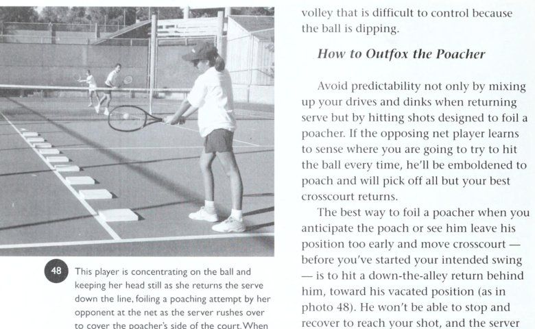
Figure 8: Smooth court switching mechanics — Server sliding across to cover the open court during partner's poach.
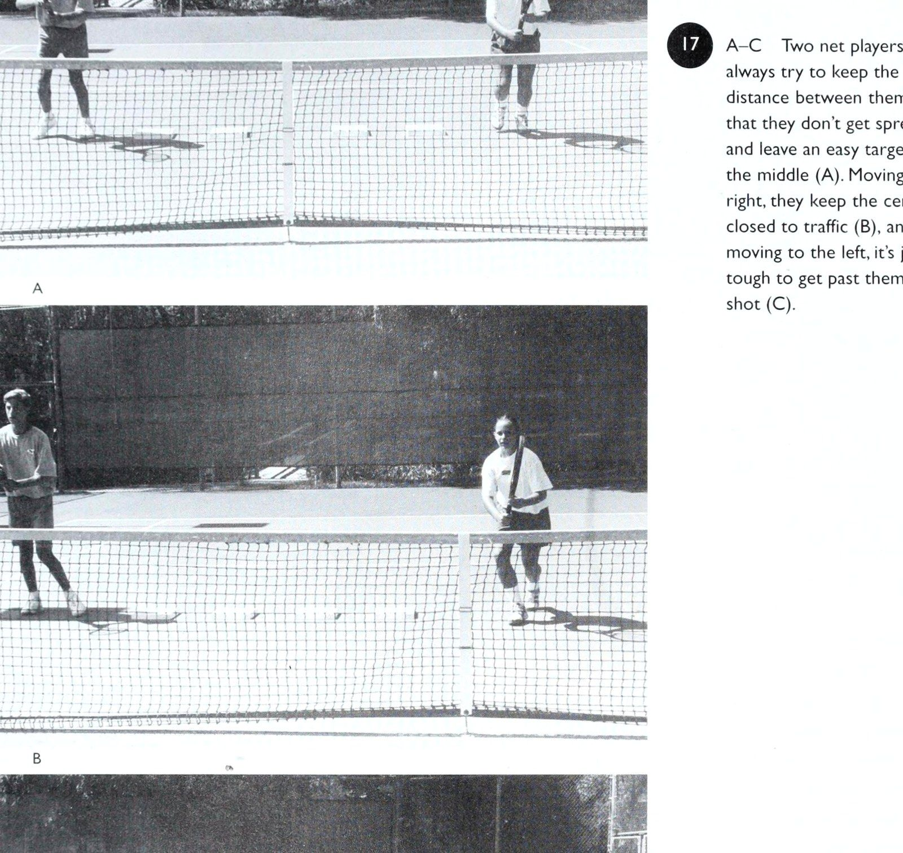
Figure 9: Net tandem spacing coordination — Moving connected by an invisible rope to seal the center seam.
Phần III: Kỹ Thuật Cá Nhân, Tâm Lý Học & Bài Tập Thứ Sáu
Chương 7: Các Cú Đánh Cá Nhân Then Chốt Trong Đánh Đôi
A-D Tay vợt này thực hành cú giao bóng lát của mình trước đối thủ.
Bóng được ném về phía bên phải (A), điều này cho phép anh ta di chuyển xa hơn về phía trước trong cú đánh đồng thời bảo vệ các lựa chọn của mình để đánh một lát hoặc giao bóng phẳng. Cẳng tay của anh ấy nghiêng về bên phải, tạo ra tốc độ khi anh ấy tiếp xúc với bóng (B). Từ một góc độ hơi khác, hãy chú ý xem vợt có vẻ như ở rìa khi anh ta tạo xoáy ngang vào quả bóng (C). Sau đó anh ấy tập luyện sau cú sút vào lưới (D).
Các cú đánh cá nhân quan trọng trong đánh đôi @ A-C_ Máy chủ đang định cắt bóng rộng về phía thuận tay của đối thủ (A). Đối tác của anh ta biết điều này và đã chuẩn bị sẵn sàng cho một cú trả bóng ở cuối đường (thường là cú trả bóng duy nhất đối với một cú giao bóng cắt tốt).
Cú giao bóng hoàn hảo và đối thủ lùi về cuối sân, nhưng đối tác của người giao bóng đã di chuyển đến cú đánh dự đoán (B), và anh ta dễ dàng tung cú vô lê của mình vào khoảng trống lớn giữa các đối thủ của anh ta (C). để đi xuống vạch, anh ta phải nhắm xuống một con đường hẹp khi đang chạy, và đồng đội của bạn ở đó để thực hiện cú vô lê trả bóng - rất có thể là quay ngược về phía trái tay yếu của anh ta. (Tất nhiên, một cú cắt được thực hiện kém, đánh với quá ít xoáy ngang, sẽ dễ dàng làm suy yếu ý định lệch lạc của bạn. Cú giao bóng của bạn sẽ không di chuyển được đối thủ đủ xa khỏi sân để gây rắc rối cho anh ta, và bóng sẽ nảy theo chiều ngang hơn khi chạm vào, do đó giúp anh ta đánh trả dễ dàng hơn bằng cú thuận tay lớn của mình - và tạo ra áp lực thực sự lên đối tác của bạn trên lưới.)
2. Vì cú giao bóng có quỹ đạo thấp hơn so với cú đánh có xoáy lên, nên nó nảy thấp hơn và có thể đặc biệt hiệu quả đối với một tay vợt cao, ghét cúi xuống và duỗi ra, hoặc với bất kỳ ai có chuyển động ngang chậm.
3. Giảm tốc độ giao bóng một chút cho phép bạn đến gần lưới hơn mà không cần giao cho đối thủ một quả giao bóng dễ dàng hơn để trả lại. Bằng cách giữ ở mức thấp sau khi nảy lên, một cú giao bóng cắt lát buộc đối thủ của bạn phải nâng cao cú trả bóng của anh ta, giúp bạn dễ dàng thực hiện cú vô lê hơn khi bạn di chuyển vào.
4. Cắt cú giao bóng rộng có thể tạo ra khoảng trống trong phạm vi bao phủ sân của đội kia. Bạn = Nụ cười và chiến thắng đôi của Vic Braden tách biệt Đối thủ của bạn, mở ra khoảng giữa giữa họ, trừ khi người đánh lưới di chuyển tới để giúp bù đắp cho việc đồng đội của anh ta di chuyển ra ngoài sân. Nếu anh ấy làm vậy, điều đó sẽ khiến đội của anh ấy dễ bị tổn thương ở phía sau anh ấy.
5. Tôi thích yếu tố bất ngờ của một lát cắt (khi ý định được ngụy trang thành công) và thực tế là hầu hết tay vợt đều cảm thấy không thoải mái nhất khi buộc phải trả giao bóng trong suốt trận đấu từ bên ngoài đường biên đôi. Họ rất lo lắng khi đối mặt với viễn cảnh này, rõ ràng họ thích ở giữa các đường biên, thực hiện các cú giao bóng bằng ba bước sang trái hoặc ba bước sang phải và sau đó bước vào bóng khi họ đánh.
6. Khi người trả về bị buộc phải chạy rộng, anh ta thường bị cám dỗ để tìm kiếm một “người chiến thắng” ở tuyến dưới, đó chính xác là những gì bạn muốn.
Đánh từ đây (như ảnh 73 A-B cho thấy), cú đánh trả theo đường chéo của anh ta phải di chuyển phần lớn khoảng cách ra khỏi sân, hướng tới một khu vực mục tiêu nhỏ mà không ai có thể đánh liên tục. Lựa chọn thay thế của người nhận bóng là cố gắng trả bóng theo một góc cứng và nhọn về phía sân giữa. Nhưng đó là một thử thách khó khăn đối với anh ta nếu bạn đến sau cú giao bóng của mình, vì bạn đang cắt góc và có thể dễ dàng chặn bóng. 7) A-B Khi người giao bóng (ở đây là người thuận tay trái) tôi có thể đẩy người nhận bóng ra khỏi sân bằng một lát cắt Trong khi đó, đối tác trên lưới của bạn có thể chỉ cần chơi quá sức bên phía bạn, biết rằng : giao bóng, để ý xem người trả bóng sẽ gặp may mắn như thế nào khi chạm được bóng, người nhận bóng cố gắng trả bóng xuống tôi chứ đừng nói đến việc có thể thực hiện một cú trả về đau đớn vào góc sau (A). Điều này đòi hỏi một nhóm của bạn. Ngay cả những vận động viên chuyên nghiệp cũng không thể thực hiện tốt hơn những cú đánh chính xác nhất trong quần vợt, đối với quả bóng, việc đưa bóng đến gần giữa sân phải di chuyển trên một con đường gần như nằm ngoài sân trong toàn bộ khoảng cách. Để giữ bóng tránh xa đối tác của người giao bóng (tay vợt |), người nhận bóng phải đánh vào khu vực mục tiêu ở khoảng trả về - ngay tại nơi người giao bóng phải ở đó khi anh ta lao vào lưới. hai feet vuông. Không có tay vợt nào còn sống mà các trang Đánh TI J có thể thực hiện được cú đánh này một cách nhất quán, đó là lý do tại sao Vì hầu hết tay vợt, ngoại trừ những người ở người nhận bóng, thay vào đó nên lốp bóng hoặc cố gắng đạt trình độ chuyên nghiệp, nên hãy loại bỏ ý định đánh lái bóng chéo sân của họ. một lát cắt lớn bằng cách ném bóng sang các Cú đánh cá nhân quan trọng trong nội dung Đôi, hãy nhớ điều này: Chỉ cần một cú ném bình thường, đến cùng vị trí mà bạn ném bóng cho cú giao bóng “phẳng” của mình (nhưng khoảng 8 đến 10 inch về phía bên phải của cú tung giao bóng xoáy lên của bạn).
Điều quan trọng là bạn (1) tiếp xúc bóng tốt ở phía trước cơ thể để bạn có thể (2) vuốt vào tâm của mặt sau bên phải của quả bóng khi vợt di chuyển ngang trên một mặt phẳng gần như nằm ngang để tạo ra xoáy ngang.
Ngoài ra, hãy đảm bảo rằng chuyển động giao bóng của bạn trông giống như các động tác giao bóng khác của bạn, để đối thủ của bạn không thể đọc được cú đánh sắp tới. Việc tiếp xúc bóng ở phía trước cơ thể cho phép bạn bước nhẹ sang bên phải và đánh xa hơn ra ngoài bóng, dẫn đến một cú cắt bóng tốt hơn mà không làm mất đi ý định của bạn - miễn là bạn ném bóng đến cùng một vị trí khi tung bóng.
Nhiều năm trước, Jack Kramer là bậc thầy về cú giao bóng cứng, cắt lát, và đó là một trong những cú đánh quan trọng trong kho vũ khí của ông. Nếu anh ta đánh mạnh và phẳng (như anh ta thích), nhưng đối thủ của anh ta bắt đầu lao vào, thì anh ta sẽ bất ngờ cắt bóng - tiếp xúc với nó ở phía trước cơ thể - và buộc đối thủ của anh ta phải rời khỏi sân. Hầu hết các sân dành cho giải đấu chuyên nghiệp đều rộng từ 75 feet trở lên, nhưng trên một sân câu lạc bộ rộng 60 feet điển hình, Jack có thể chạm bóng vào hàng rào bên trước khi nó chạm đến đường cuối sân.
Arthur Ashe cũng gặp phải một tình huống khó xử lý; và anh ấy đã đi được một chặng đường dài với cú đánh, cùng với John McEnroe, người có cú đánh thuận tay trái từ sân quảng cáo sẽ luôn đẩy người trả về ra ngoài đường đánh đôi và giúp anh ấy giành được bảy danh hiệu Grand Slam đôi với Peter Fleming.
Tuy nhiên, thật ngạc nhiên, tôi chưa thấy một tay vợt nào khác tham gia quần vợt chuyên nghiệp, người đã thực sự làm việc chăm chỉ để hoàn thiện cú giao bóng đặc biệt này. Ví dụ, trong trò chơi dành cho nữ, đối thủ liên tục giao bóng thẳng vào Steffi Graf và cô ấy liên tục cản phá quả trả bóng. Không ai đuổi cô ấy ra khỏi sân chỉ bằng một lát cắt.
Trong khi đó, trong quần vợt chuyên nghiệp nam và bất cứ nơi nào tay vợt đánh bóng mạnh và đưa bóng đi lên ở đường cuối sân, cú giao bóng cắt lát có thể trở nên quan trọng hơn bao giờ hết. Tại sao? Chà, nghiên cứu cho thấy rằng nếu Monica Seles nhận bóng khi đang trên cao, không phải cô ấy đánh bóng mạnh hơn mà là cú đánh của cô ấy trả về nhanh hơn và do đó làm giảm thời gian phản ứng của đối thủ đi SO phần trăm. Nhưng nếu người giao bóng có thể di chuyển loại tay vợt này sang ngang bằng một cú giao bóng cắt, thì tay vợt đó không thể cắt bóng dễ dàng như vậy và đưa nó đi lên, do đó giúp người giao bóng có nhiều thời gian hơn để di chuyển vào lưới.
Tại sao các chuyên gia không dành thời gian để thực hiện một cú giao bóng tốt? Một lý do là họ bị ám ảnh bởi tốc độ; họ thực sự tin rằng cú giao bóng nhanh là khía cạnh quan trọng nhất của cú đánh này. Tốc độ 110 dặm/giờ. quả giao bóng chắc chắn là một vũ khí khổng lồ, tuy nhiên khi người nhận giao bóng có thể “đọc” được quả giao bóng và đạt được vị trí đánh của mình thì tốc độ giao bóng đó lại trở thành điểm yếu đối với người giao bóng. Trên thực tế, tốc độ - thẳng vào một người - không khó xử lý đến thế; và bóng quay trở lại máy chủ nhanh hơn, vì vậy anh ta sẽ lùi xa hơn khi cố gắng tấn công lưới; anh ấy buộc phải thực hiện cú vô lê từ vị trí sâu hơn.
Ngoài ra, trong khi một số tuyển thủ chuyên nghiệp khá kiêu ngạo về kỹ thuật của họ, thì bên trong họ lại ngại thực hiện những thay đổi. Họ có thể không hài lòng về thứ hạng hiện tại của mình, không hài lòng vì không tiến bộ, nhưng họ sợ nếu ném mọi thứ vào việc thành thạo một yếu tố như cú giao bóng cắt lát, điều này bằng cách nào đó sẽ làm suy yếu các khía cạnh khác trong cú giao bóng của họ và khiến họ trượt ngược.
Tôi đã thấy nỗi sợ hãi này vẫn tồn tại ở một số vận động viên chuyên nghiệp ngay cả sau khi chúng tôi cùng nhau thử nghiệm trên sân tập một số khía cạnh mới trong cách giao bóng của họ và họ đã trải nghiệm được những kết quả tiềm năng cũng như ý nghĩa của sự cải thiện này đối với trò chơi của họ.
Cú vô lê Vì chiến lược quan trọng nhất trong đánh đôi là giành lưới và duy trì quyền kiểm soát pháo đài đó, chúng ta hãy xem xét kỹ lưỡng các kỹ năng vô lê, cả về tinh thần và thể chất, rất quan trọng để tận dụng những mục tiêu này.
Rất có thể bước đột phá quan trọng của bạn để thực hiện với tư cách là một vận động viên vô lê là cú đánh vượt qua (Passing shot) nỗi sợ bị "chiến thuật Bánh kẹp nỉ (The Fuzz Sandwich)" đưa lên lưới - đặc biệt là trong các trận đấu đôi, nơi các đối thủ ở gần nhau hơn khi họ đánh và có ít thời gian phản ứng hơn.
Mọi người không muốn thừa nhận những lo lắng này, nhưng vấn đề chắc chắn tồn tại, đặc biệt là đối với phụ nữ ở nội dung đôi nam nữ cạnh tranh gay gắt.
Vấn đề chính của nỗi sợ hãi, ngoài việc phá hỏng một số niềm vui mà lẽ ra bạn nên có khi chơi đánh đôi, là nó cản trở chuyển động và làm suy yếu sự tự tin cũng như tính quyết liệt cần thiết để trở thành một vận động viên vô lê hiệu quả. Sự táo bạo giúp bạn di chuyển tấn công về phía quả bóng - lý tưởng nhất là theo đường chéo về phía trước, để bạn di chuyển vào cú đánh và tiếp xúc ở phía trước cơ thể.
Nếu bạn hồi hộp khi ở trên lưới, sợ rằng mình sẽ bị đối thủ thù địch đóng đinh, thì có một giải pháp tiềm năng - nhưng thật khó để đội mũ bảo hiểm đánh bóng chày trên sân mà không cảm thấy hơi lố bịch. Vậy phải làm gì?
Chà, mọi người nói với tôi rằng việc chơi với một cây vợt quá khổ dường như làm họ bớt lo lắng hơn một chút, điều này dẫn đến phản ứng nhanh hơn và động tác chân nhanh hơn. Nhưng A-B_ Tay vợt trên lưới đoán trước được cú sút dọc biên trước khi đối thủ đánh bóng (A), và anh ta có thể dễ dàng tiếp cận bất kỳ quả bóng nào được đánh xuống hẻm (B). Trên thực tế, một tay vợt có thể phản ứng trước khi bóng được đánh có thể đi ba bước vào lưới theo một trong hai hướng.
Những cú đánh cá nhân quan trọng trong đánh đôi Cách tốt nhất để loại bỏ yếu tố sợ hãi này và có được sự tự tin trên lưới là học cách chuyền bóng và tự vệ. Khi học sinh của tôi phát hiện ra rằng họ có thể tránh đường bóng bằng cách di chuyển vào trong bóng để đánh nhanh hơn so với việc di chuyển sang ngang hoặc lùi ra khỏi bóng, họ sẽ có được sự tự tin để tiến về phía trước một cách quyết liệt.
Điều quan trọng là không bị ức chế bởi những gì bạn có thể coi là những hạn chế về thể chất trong trò chơi của mình. Ngay cả những tay vợt đánh đôi mạnh cũng thường không nhận ra rằng họ có thể tiến lên hai bước trong hầu hết các cú vô lê. Khi tôi nhấn mạnh tầm quan trọng của điều này, họ trả lời: “Ừ, nhưng cái đó dành cho dân chuyên nghiệp”. Trên thực tế, nó ngược lại. Các chuyên gia đánh bóng mạnh đến mức khiến đối thủ khó có thể bước được hai bước. Nhưng ở trình độ trung cấp, một tay vợt biết tầm quan trọng của việc tiến tới cú vô lê với bước đầu tiên nhanh thường có thể đạt được ba bước tới bóng, điều này khiến anh ta trở nên nguy hiểm khi thực hiện cú vô lê.
Cũng nên nhớ: Càng đến gần lưới, bạn càng cần ít tài năng để thực hiện cú vô lê chiến thắng.
Khi nói đến việc thực hiện, hãy chú ý đến dữ liệu của nhà vật lý Howard Brody về quỹ đạo trọng lực vì chúng liên quan đến việc đánh một cú vô lê cứng, phẳng từ trên lưới. Anh ấy chỉ ra rằng nếu bạn tiếp cận bóng với khuỷu tay đánh hướng lên và mặt vợt thẳng đứng, thì gần như không thể đánh bật bóng ra ngoài, bất kể bạn đánh nó mạnh đến đâu (với điều kiện là bạn không lật đáy vợt khi va chạm).
Gần như tất cả mọi người đều nói, "Chúa ơi, nếu tôi đánh một cú vô lê mạnh như vậy, nó sẽ chạm vào hàng rào phía sau." Nhưng nó không hoạt động như vậy nhờ vào trọng lực.
Trên thang đo Brody, đối với một quả bóng di chuyển với tốc độ 80 dặm/giờ, nếu bạn đứng một chân sau vạch giao bóng và chuyền bóng từ độ cao 4 foot trên mặt phẳng nằm ngang (đu thẳng ngang với mặt vợt thẳng lên và xuống khi va chạm), bóng chỉ đi qua lưới 5 inch và tiếp đất 8 feet bên trong đường biên ngang. Nó không thể bay ra ngoài mực nước biển vì trọng lực. Điều này có nghĩa là người ta có thể bóp bóng trên mặt phẳng nằm ngang mà bóng vẫn tiếp đất vào đó, vì vậy đừng đánh bóng vô lê!
Thật không may, hầu hết người mới bắt đầu và người ở trình độ trung cấp đều ngại thực hiện cú vô lê khó như vậy.
Họ có xu hướng tiến vào và đỡ bóng khi ở gần lưới, và nếu cú đánh của họ thực sự giữ nguyên - thay vì đi vào lưới - thì cú đánh đó thường rơi ngắn và giúp đối thủ dễ dàng trả bóng.
Kỹ thuật đánh Tất nhiên, cần có kỹ thuật phù hợp để thực hiện cú vô lê mạnh mẽ theo cách tôi đề xuất.
Dưới đây là một số mẹo giúp bạn trở thành một tay chuyền bóng đáng sợ và được kính trọng.
1. Trong tất cả các cú vô lê, cho dù bạn tiếp xúc bóng ở ngang đầu gối hay cao hơn tầm mắt, hãy cố gắng làm chủ một chuyển động đấm ngắn hơn là một cú đánh thực sự, bởi vì độ dài cú vung của bạn càng lớn thì tài năng của bạn càng phải lớn.
Một số chuyên gia thực sự cố định vợt của họ ở một vị trí và di chuyển cơ thể của họ qua cú đánh để tạo lực.
2. Đánh xuyên qua quả bóng và kết thúc bằng vợt ngang tầm mắt. Điều này giúp đảm bảo kiểu vuốt bóng mong muốn — hướng tới mục tiêu chứ không phải hướng xuống — khi vợt của bạn đi qua vùng đánh. Việc dứt điểm cao bằng vợt cũng giúp bạn sẵn sàng cho cú vô lê tiếp theo khi di chuyển vào lưới. Ngược lại, khi bạn vung vợt xuống để tạo xoáy xuống, mặt vợt phải nghiêng để bù lại và việc tính toán rất khắt khe.
A-C Di chuyển mạnh mẽ tới bóng, tay vợt này có ý tưởng đúng đắn về cú vô lê trái tay. Anh ta thực hiện một cú backswing ngắn (được điều khiển bằng tay không đánh) và thực hiện cú vô lê từ vai (A), để cơ thể cung cấp lực, để cú swing của anh ta có thể ngắn và chính xác.
Hãy chú ý cách mắt anh ấy tập trung vào quả bóng (B) và khả năng theo dõi của anh ấy vẫn ở mức cao mà không cần chuyển động cẳng tay khi anh ấy áp sát vào lưới để thực hiện một cú đánh tiếp theo (C). n~
3. Giữ khuỷu tay đánh hướng lên trên khi bạn vung vợt, sao cho mặt vợt có thể thẳng đứng khi tiếp xúc. Nếu khuỷu tay ở gần cơ thể bạn, vợt sẽ nằm ngửa, đó là điều bạn muốn tránh. Trong những năm qua, tôi ngày càng nhấn mạnh tầm quan trọng cốt yếu của việc giữ khuỷu tay hướng lên trên và thực hiện cú vô lê từ vai. John McEnroe đã làm chủ điều này rất tốt. Với khuỷu tay hướng lên, bạn chỉ cần xoay cơ thể và thực hiện cú vô lê từ vai thay vì cẳng tay, và nếu vợt hoàn hảo, bạn có thể đánh cú vô lê tuyệt vời và có 76) A-C_ Khi người đánh di chuyển về phía trước để đánh một cú đánh tiếp cận xoáy xuống, hãy chú ý cú đánh lùi ngắn như thế nào (A), cú đánh hơi giảm xuống theo một góc tới nghiêm trọng (B), và cú đánh tiếp theo cao và anh ta đã sẵn sàng cho cú đánh tiếp theo (C). khó khăn để đánh nó ra. Nhưng nếu bạn dựa vào hành động của cẳng tay, vợt sẽ bị kéo, dẫn đến rắc rối.
4. Tránh hướng mặt vào lưới khi thực hiện cú vô lê.
Thay vào đó, hãy cố gắng xoay người sang một bên thường xuyên nhất có thể để thực hiện cú vô lê mạnh và giảm thiểu số lần bạn kéo bóng xuống. Chỉ một cú vung xuống nhẹ nhất cũng sẽ giết chết cú đánh của bạn, đặc biệt là khi có sự trao đổi cú vô lê nhanh chóng. Nếu bạn nhất quyết quay mặt vào lưới, hãy chú ý rằng việc ra ngoài đón bóng và gặp một kệ tưởng tượng khi bạn vung vợt sẽ khó khăn như thế nào. . | |
(77) A-C_ Ở đây, tay vợt trình diễn cú vô lê chỉ bằng cẳng tay và những kết quả đáng tiếc mà nó thường tạo ra.
Đầu vợt phải căn thời gian để tiếp bóng hoàn hảo với độ mở mặt vợt chính xác, nếu không bóng sẽ rơi vào lưới (C) hoặc rơi khá ngắn phần sân đối phương.
5. Biết cú vô lê của bạn “cửa sổ” qua lưới. Khi bạn hình dung một khu vực mục tiêu ở phía trên lưới một cách an toàn chứ không phải ở phần sân đối diện và cố gắng đánh qua cửa sổ đó một cách có ý thức, bóng có xu hướng tránh xa lưới.
6. Ngoài ra, hãy cố gắng để vợt, mắt và bóng của bạn ở cùng mức độ khi tiếp xúc. Nếu bóng bay quá thấp, hãy cúi xuống để đặt vợt đúng vị trí và đưa cú đánh của bạn lên trên lưới.
Nhưng tránh cố gắng thực hiện một cú vô lê góc nhọn, tỷ lệ phần trăm thấp (trừ khi đối thủ của bạn đều ở sâu). Thay vào đó, hãy thực hiện cú đánh phòng thủ và nhắm sâu vào đường biên ngang của đối thủ nếu có thể.
7. Lập trình động cơ có thể giúp bạn phản ứng với những pha trao đổi ở cự ly gần và giảm thiểu số lần bạn vung bóng và bắt lưới. Các phản ứng và chuyển động cần thiết ở đây diễn ra nhanh đến mức não không có thời gian để lập trình một cách có ý thức một phản ứng cơ hiệu quả.
Nhưng bạn chắc chắn có thể lập trình trước suy nghĩ của mình — “đánh ra, không phải đánh xuống” — để bất kể hoàn cảnh và áp lực nào, Những cú đánh cá nhân quan trọng trong đánh đôi B zs a 72 ] Khi bạn chuẩn bị thực hiện một cú vô lê thấp, hãy cúi thấp bóng để bạn có khả năng kiểm soát và tính nhất quán hơn trong cú đánh này. Nếu bạn định chơi trò chơi giao bóng và chuyền bóng, hãy rèn luyện sức mạnh ở chân vì bạn sẽ bị buộc phải thực hiện những cú đánh như thế này trong suốt trận đấu.
Trong cuộc trao đổi cận chiến này, điều quan trọng là phải có phản ứng nhanh và một cú vô lê ngắn, sắc nét từ cả hai bên. chuyển động đánh của bạn là tự động và đầu vợt luôn ở trạng thái cao khi tiếp xúc.
8. Khi bạn nhận được một cú đánh chéo sân và có ý định tung cú vô lê dọc biên, bạn phải vung mạnh và bẻ bóng để chống lại góc lệch và giữ bóng trong cuộc. Nhiều tay vợt mắc sai lầm lớn ở đây khi cầm vợt đứng yên và hầu như không đánh bóng, nghĩ rằng đây là tất cả những gì họ phải làm để đánh chắc chắn người chiến thắng. Than ôi, bóng luôn đi chệch ra khỏi đường chơi, đi ra ngoài ngõ.
9. Đặc biệt trong đánh đôi, chỉ lấy lại bóng sẽ không giành được nhiều điểm - bạn phải tung cú vô lê mạnh mẽ để đưa đối thủ vào thế phòng thủ hoặc đưa bóng qua các sơ hở trong hàng phòng ngự của họ.
Mẹo di chuyển Việc rèn luyện một số yếu tố tinh thần và kỹ năng di chuyển quan trọng có thể giúp bạn giành điểm với cú vô lê của mình chỉ bằng cách cho phép bạn tiếp cận bóng sớm hơn và đến gần lưới hơn. Bạn tiếp xúc với bóng càng sớm thì bạn càng có thể thực hiện cú vô lê ở trên lưới cao hơn - giúp cho cú đánh dễ dàng hơn, an toàn hơn. Và bạn càng đến gần lưới thì góc đánh tiềm năng của bạn càng lớn. e Thay vì đứng chờ đám đông cổ vũ, hãy chạy theo cú vô lê khi bạn đánh, luôn cố gắng tiến gần lưới hơn cho cú đánh tiếp theo. Động lực tiến về phía trước sẽ giúp bạn đưa bóng vào lưới để thực hiện cú vô lê tiếp theo. e Bất cứ khi nào bạn cảm nhận được cơ hội, hãy tin vào bản năng của mình và nhanh chóng lao về phía trước theo đường chéo về phía quả bóng.
Đây là lúc khả năng thực hiện bước đầu tiên nhanh chóng của bạn rất quan trọng.
Cú đánh trên cao Cú đánh trên cao là một cú đánh xa mà chúng tôi nỗ lực hết sức để có được, tuy nhiên một cú đánh mà ngay cả các chuyên gia đôi khi vẫn "nghẹt thở" khi đánh bóng vào hàng rào phía sau hoặc rơi vào lưới.
Rõ ràng, đây không phải là một cú sút chắc chắn. Thứ nhất, bạn đang đánh một quả bóng đang rơi từ độ cao lớn hơn và với tốc độ nhanh hơn cú ném giao bóng của bạn (lý tưởng nhất là quả bóng này nên được tiếp xúc ở hoặc gần đỉnh của nó).
Do đó, thời điểm của bạn trong vùng đánh là rất quan trọng, vì bạn chỉ có một khoảng thời gian ngắn để tiếp xúc với bóng tại một điểm mong muốn.
Lỗi phổ biến nhất ở phần trên là quên “Quy tắc Tám độ” do nhà vật lý Pat Keating nghĩ ra (đối với một quả lốp bóng điển hình, thường rơi một góc khoảng 45 độ khi bị đánh). Anh ấy đã chỉ ra rằng thay vì đánh bóng từ gần khu vực giữa sân, bạn thực sự phải vung về phía trước và lên trên, một góc khoảng 8 độ, để chống lại tác động vật lý. Bóng đang rơi và bạn phải tiến về phía trước và chống lại góc tới khi va chạm.
Điều này sẽ giúp giữ bóng ở ngoài lưới và đưa bóng vào sâu hoặc có góc thuận lợi về phía một con hẻm. (Điều quan trọng cần nhớ ở đây là đầu vợt vuông góc với sân - thẳng lên và xuống - và hướng lên một góc khoảng 8 độ chứ không phải ngửa ra sau 8 độ. Ngoài ra, bạn chắc chắn có thể đánh xuống từ trên cao khi ở trên lưới.) Để tiếp xúc bóng đúng cách với một lực hướng lên, sự chuẩn bị tốt là rất quan trọng. Giữ cho đôi chân của bạn di chuyển khi bạn cố gắng vào tư thế đánh thoải mái càng sớm càng tốt. Hãy quyết liệt và đừng đợi bóng đến với bạn, bởi vì bạn phải đánh lên khi quả bóng đang rơi này chứ không phải đánh xuống (trừ khi bạn ở ngay trên đầu của ee Os st 7eaberannueae. Tay vợt này luyện tập với một vận động viên chuyên nghiệp, nhận những cú đánh chéo sân nghiêm ngặt và đo mục tiêu của cô ấy. Nếu cô ấy chỉ giữ yên đầu vợt, cô ấy phải nhắm vào giữa đường cuối sân để cú đánh của cô ấy đi vào góc trái tay. Nếu cô ấy di chuyển vợt chậm về phía trước, cô ấy sẽ nhắm vào khoảng giữa điểm giữa và góc trái tay. Và nếu cô ấy thực hiện một động tác khá mạnh mẽ với vợt theo cú vô lê, cô ấy sẽ nhắm vào bên trong góc khoảng 3 feet.
Ba tay vợt này minh họa tầm quan trọng của việc di chuyển chặt chẽ trên lưới. Đối với một cú đánh chéo sân, tay vợt phía trước có thể thực hiện cú đánh đó bằng cách chỉ bước sang trái một bước. Tay vợt 2 phải thực hiện hai bước, và tay vợt 3, quay lại gần đường giao bóng, cách cú đánh ba bước và do đó, rõ ràng là dễ bị tổn thương hơn trước một cú đánh chéo bàn.
Các cú đánh cá nhân quan trọng trong đánh đôi — \19 A tức là Bt, Ys Ls i, >, ee} 22 ) A-B_ Tay vợt trong ảnh A phạm một lỗi phổ biến ở trên cao — chỉ vào quả bóng khi nó rơi.
Thay vào đó, cô ấy nên “chỉ” bằng khuỷu tay cong, điều này tạo điều kiện thuận lợi cho việc cuộn cơ thể và tạo ra nhiều lực và nhịp điệu hơn trong cú xoay (B). mạng lưới). Ngay cả một cú lốp bóng ngắn, yếu cũng đòi hỏi động tác chân nhanh nhẹn, chọn vị trí thích hợp và chú ý đến kỹ thuật vuốt bóng tốt. Nếu bạn bất cẩn, thường thì quả bóng sẽ rơi quá gần đầu bạn hoặc quá thấp về phía trước.
Khi tự đánh giá kỹ thuật của mình, hãy đảm bảo rằng bạn đang vung vợt với động tác ném lỏng lẻo, giống như cách tôi dạy khi giao bóng. Một cách để giúp đảm bảo hành động duỗi thẳng này của cơ thể là tránh chỉ tay quá sớm vào quả bóng khi nó bay tới, vì việc “chỉ tay” sớm sẽ làm cơ thể cứng lại và cản trở chuyển động xoay thân trên mà bạn mong muốn. Thay vào đó, hãy xoay vai không đánh của bạn ra khỏi lưới và sau đó theo dõi quả bóng đang đến bằng khuỷu tay trái hoặc ngón tay cong của bạn, theo trình tự tự nhiên của cơ thể thư giãn.
Một lý do khiến Monica Seles có một trong những cú đập bóng từ trên cao hay nhất trong quần vợt là vì cô ấy cuộn người khi chuẩn bị đánh và không chỉ ngón tay khi theo dõi bóng.
Cũng giống như khi giao bóng, một cách khác để bảo vệ phần trên của bạn là tự nhủ, “Hãy ngẩng cao đầu” — với đầu cực kỳ tĩnh lặng — khi bạn vung vợt. Ngoài ra, hãy suy nghĩ một cách có ý thức về việc giữ cho vai trước của bạn hướng lên theo hướng bóng khi bạn cuộn người theo phương ngang, để đầu và phần thân trên của bạn không bị xẹp xuống trước khi va chạm.
Dù cấu trúc tâm lý và khả năng vượt trội của bạn là gì, hãy luôn cố gắng “trang bị” mọi cơ hội vượt trội, chăm chỉ và sâu sắc nhưng không liều lĩnh. Thỉnh thoảng, bạn sẽ bỏ lỡ một cú đánh từ trên cao một cách hung hãn như thế này, nhưng đối thủ của bạn sẽ cảm thấy sức nóng và sẽ ít có xu hướng thực hiện cú lốp bóng khi họ gặp khó khăn - do đó, hãy bỏ qua một cú đánh có thể giúp họ tạm dừng và buộc đội của bạn phải rời khỏi lưới. Khi bạn thoải mái cú đánh vượt qua (Passing shot), vui vẻ giữ cho cuộc biểu tình sống sót hoặc cố gắng chơi an toàn bằng cách nhắm vào khu vực giữa sân, bạn chỉ cần tạo động lực cho đội kia tiếp tục lốp bóng khi họ gặp khó khăn, biết rằng họ hiếm khi phải trả giá cho một cú lốp bóng cao nhưng ngắn.
Ngoài ra, đừng sợ hãi vì bạn có thể vô tình đánh trúng một trong những đối thủ của mình. Đó chỉ là một phần của trò chơi. Bạn cũng không nên để đối thủ xúc xích cố gắng đánh lạc hướng bạn hoặc buộc bạn phải nhắm sang hướng khác bằng cách đứng ngay phía trước và vẫy vợt của anh ta khi bạn lao lên để đập một quả trên đầu. Trách nhiệm của anh ta là tránh đường hoặc quay lưng lại như một dấu hiệu của sự phục tùng, về cơ bản là thừa nhận quan điểm. Nếu anh ta quay đi, hãy cố gắng đánh người chiến thắng sạch sẽ ra khỏi cơ thể anh ta mà không mạo hiểm bắn, nhưng nếu bạn vẫn vô tình đánh anh ta, nghi thức tốt yêu cầu bạn phải giơ tay và xin lỗi. Nếu bàn tay của bạn không giơ lên khi anh ta quay lại, thì đó là chiến tranh - và lần tiếp theo khi anh ta cú đánh vượt qua (Passing shot) gần lưới, bước đi thông minh nhất của bạn sẽ là chạy theo hướng ngược lại. (Bạn nên tức giận một cách chính đáng khi đối thủ cố cản đường bạn khi bạn nhận được một cú đập từ trên cao. Người này muốn hai cho hai: Anh ta muốn đánh lạc hướng bạn để bắn trượt và anh ta muốn chắc chắn rằng bạn nhớ anh ta. Chà, đó là hành vi phi thể thao, và nếu anh ta nhất quyết đặt mình vào tình thế dễ bị tổn thương, anh ta phải chấp nhận sự thật rằng anh ta có thể bị “chiến thuật Bánh kẹp nỉ (The Fuzz Sandwich)” - hoặc thậm chí tệ hơn là bong võng mạc.) Một lời nhắc nhở an toàn khác: Khi đối tác của bạn ở phía sau bạn và chuẩn bị thực hiện một cú đập trên đầu, đừng quay lại để xem anh ta vung vợt. Anh ấy có thể nhầm lẫn và mang đến cho bạn một diện mạo mới. Ngoài ra, bạn sẽ biết chính xác đối tác của mình đang đánh ở đâu bằng cách quan sát đối thủ, đồng thời bạn sẽ có thể phản ứng và di chuyển nhanh hơn trong cú đánh trả so với khi bạn quan sát đối tác của mình rồi quay lại.
Cú lốp bóng thấp, được đánh với mục đích tấn công hoặc phòng thủ, có lẽ là cú đánh bị bỏ qua nhiều nhất trong các pha đánh đôi nhịp độ nhanh, khi nó nên được coi là vũ khí quan trọng ở mọi cấp độ chơi. Bạn có thể cười khúc khích hoặc khinh thường một đội tung bóng heli vào mọi cơ hội, nhưng khi cả hai tay vợt đều có thể lốp bóng hiệu quả, rất có thể họ sẽ có nhiều danh hiệu nhân đôi ở nhà hơn bất kỳ ai khác ở câu lạc bộ của bạn. Đó là bởi vì cú lốp bóng đúng lúc, được thực hiện tốt có thể mang lại một số lợi thế - đặc biệt là khi đội đối phương yếu về khả năng chi trả.
1. Khi đánh bóng cao và sâu, cú lốp bóng có thể giúp bạn thoát khỏi rắc rối bằng cách cho phép bạn thực hiện các cú đánh cá nhân quan trọng trong đánh đôi. Khi bạn đang tranh giành và đội kia kiểm soát lưới, hãy ném lốp bóng lên, như người thuận tay trái đang làm ở đây. © Khi bị buộc lùi về phía sau đường cuối sân, hãy cố gắng giành lại quyền kiểm soát lưới bằng cách lốp bóng sâu và di chuyển nhanh về phía trước cùng đồng đội khi đối thủ rút lui. đội “câu giờ” để hồi phục và giữ vững vị trí sau khi tranh giành ngoài sân.
2. Nó có thể phá vỡ nhịp điệu của đội khác.
3. Nó có thể được sử dụng như một vũ khí chiến thuật để đẩy đối thủ của bạn ra khỏi lưới và cho phép đội của bạn tiến vào và tấn công.
4. Được sử dụng nhiều lần, cú lốp bóng có thể khiến đối thủ của bạn mệt mỏi bằng cách buộc họ phải chạy lùi từ lưới hoặc lùi về phía sau và căng cao để đánh một cú đánh qua đầu. Kiểu đánh đầu từ sâu trong sân này không phải là một cú đánh dễ xử lý, và trong khi đó - lý tưởng nhất - đội của bạn đã lao lên chiếm lấy lưới.
5. Cú lốp bóng tấn công (đánh thấp và mạnh bằng xoáy lên) có thể chống lại một đội hung hãn liên tục cố gắng giành quyền kiểm soát lưới và dường như luôn ôm lấy khu vực đó. Cú lốp bóng này thường là cách hiệu quả nhất để đẩy lùi chúng.
6. Một cú lốp bóng tốt có thể ảnh hưởng tâm lý đối thủ bằng cách khiến anh ta có cơ hội bị bóp cổ khi thực hiện cú trả bóng từ trên cao. Một cú đánh đầu bị trượt có thể gây ra nhiều sự thất vọng hơn bất kỳ sai lầm nào khác trong quần vợt và nó có xu hướng ảnh hưởng đến cú đánh tiếp theo vì người đó quá tức giận về cú đánh mà mình vừa phạm phải. Tất nhiên, nếu đối thủ của bạn đánh đầu đúng cách, bạn sẽ mất điểm, nhưng điều này được mong đợi, vì vậy tôi thích khả năng đánh đổi. _ Sau khi đã nói tất cả những điều tuyệt vời về cú lốp bóng, tôi thận trọng khi giới thiệu nó cho hầu hết tay vợt, trừ khi họ sẵn sàng luyện tập, vì một cú lốp bóng tốt là một trong những cú đánh khó thực hiện nhất trong đánh đôi.
Và nếu bạn không thực hiện được nó, bạn chỉ cần cho đối thủ của mình một cú đập đầu dễ dàng — và tăng cường sự tự tin khi trận đấu diễn ra. Mọi người nói về những cú lốp bóng như thể chúng chẳng là gì (“Ồ, tôi sẽ lốp bóng qua es ] A-C_ Mặc dù sâu, nhưng tay vợt này bước vào cú lốp bóng của anh ta và khiến tay vợt trên lưới, người đã dự đoán trước một cú đánh bối rối. Anh ta đột nhiên vung lên để thực hiện một cú lốp bóng được ngụy trang đẹp mắt. Đầu của họ”), nhưng họ hiếm khi thực hành cú đánh trong điều kiện thực tế. Pancho Gonzalez, người rất tự hào về kỹ năng giao bóng bùng nổ và tấn công lưới của mình, vẫn ra ngoài tập luyện cú lốp bóng của mình và anh ấy đã có một trong những pha lốp bóng đẹp nhất mà tôi từng thấy.
Tránh lốp bóng nông Khi lốp bóng, sai lầm phổ biến và tốn kém nhất mà bạn có thể mắc phải là đánh bóng nông, vì điều này thường buộc bạn hoặc đồng đội của bạn phải chạy tìm chỗ ẩn nấp khi đối thủ đánh bóng qua đầu.
Một lý do khiến bạn có thể lốp bóng ngắn là vì bạn có thể nhìn đối thủ bằng khóe mắt khi bạn đánh, một sự phân tâm có thể khiến bạn làm chậm cú đánh của mình một cách vô thức. Thay vào đó, hãy nghĩ đến một tín hiệu tinh thần sẽ giúp chặn tầm nhìn ngoại vi của đội khác, để bạn có thể thoải mái tập trung vào việc đánh bóng và hoàn thành cú đánh của mình.
Một sai lầm phổ biến khác là đâm hoặc chọc vào bóng thay vì thực hiện một cú xoay người hoàn toàn. Khi có thể, hãy đánh bóng về phía trước với chuyển động từ thấp đến cao và hoàn thành động tác theo dõi của bạn. Điều này sẽ giúp bạn không làm chậm cú vung trước khi va chạm và đâm mạnh vào bóng. Ngoài ra, khi các cú đánh cá nhân quan trọng trong đánh đôi ee = ) bạn chạy sang bên hoặc lùi về phía sau để lấy bóng và ném một cú lốp bóng, bạn có thể không bù đắp được cho thực tế là lực của bạn đang đi theo hướng ngược lại, cách xa khu vực mục tiêu dự định của bạn. Điều này có thể dễ dàng khiến thùy của bạn bị ngắn lại. [cũng khuyên bạn rằng khi bạn thực hiện cú lốp bóng thực hành đầu tiên trước trận đấu, hãy cố gắng đặt nó quá dài S đến 10 feet, vượt quá đường cuối sân (Baseline). Hãy tin tôi. Vì lý do nào đó, cú lốp bóng hiếm khi đi xa như mong đợi và bóng của bạn rất có thể sẽ nằm trong giới hạn. Nếu nó kéo dài, đừng lo lắng; chỉ cần đánh quả tiếp theo của bạn với cùng tốc độ đầu vợt, nhưng với chuyển động vuốt về phía trước và hướng lên trên dốc hơn, sao cho chiều dài tăng thêm mà bạn có ở cú lốp bóng đầu tiên sẽ tăng lên và vẫn mang lại cho bạn độ sâu mà bạn tìm kiếm.
Nếu bạn định phạm lỗi, hãy cố gắng để cú lốp bóng của bạn quá dài thay vì quá ngắn. Bạn có thể nhận được một cuộc gọi may mắn và bạn sẽ không trao cho đối thủ của mình một cơ hội bỏ phí tiềm năng.
Ngoài ra, khi bạn ở gần góc cuối sân, hãy cố gắng lốp bóng theo đường chéo để có thêm khoảng cách và nhờ đó có thêm thời gian để di chuyển vào vị trí tốt cho cú đánh tiếp theo của bạn. (Nhiều người khi thực hành lốp bóng nhìn bóng rơi cách đường biên ngang 15 hoặc 20 feet nhưng không nhận ra đây là một cú lốp bóng không hiệu quả.
Họ nghĩ, “Nó đã hạ cánh, vậy là tốt,” nhưng trừ khi bạn lốp bóng trong phạm vi 10 feet tính từ đường cuối sân — và trong vòng 5 feet ở cấp độ chuyên nghiệp — bạn sẽ phải trả giá.) Các cú đánh chạm đất cơ bản Từ quan điểm tiến hóa trong đánh đôi, bạn sẽ đánh ít cú đánh chạm đất truyền thống hơn từ đường cuối sân khi bạn tiến bộ và thi đấu với các đội giỏi hơn (tất nhiên trừ khi bạn và đối tác của bạn chọn chơi phòng thủ bằng cách ở lại đường cuối sân). Trên thực tế, chúng ta hãy quay trở lại 40 năm trước với cuốn sách đánh đôi của Talbert và Old và lời nhắc nhở của họ (cũng đúng như thời điểm đó) rằng có rất ít điểm giành được từ vị trí sân sau: "Trong đánh đôi, điểm giành được từ lưới chứ không phải từ đường cuối sân. Vì vậy, có lý do rằng mục tiêu chính của việc chơi ở sân sau là đuổi ma quỷ ra khỏi sân sau. Một đội không bao giờ nên sẵn lòng nán lại ở sân sau; nếu buộc phải rút lui ở đó, nó phải điều động để lấy lại lưới, và khi có được sơ hở, nó sẽ ra sân trước ngay lập tức.” Tuy nhiên, một số vấn đề kỹ thuật phổ biến chắc chắn có xu hướng nảy sinh ở đường cuối sân (Baseline). Dưới đây là một số lời nhắc sẽ hữu ích khi bạn cần lái bóng từ đây.
1. Tôi đã nhấn mạnh trong suốt cuốn sách về tốc độ của trận đấu - đặc biệt là ở cấp độ nâng cao - đã tăng lên đáng kể trong những năm gần đây, chủ yếu là do vợt ngày nay tạo ra rất nhiều lực.
Điều đó không chỉ đặt ưu tiên cho khả năng dự đoán và phản ứng mà còn quy định rằng các cú đánh phải ngắn hơn và hiệu quả hơn về mặt cơ sinh học để tay vợt có thể đối phó với tốc độ của bóng. Vì vợt hiện đại có thể tạo ra gần như toàn bộ lực bạn cần trong các cú đánh trên mặt đất, nên bạn có thể áp dụng động tác vung vợt ngược ngắn hơn, gọn hơn — và đáng tin cậy hơn — mà vẫn đánh mạnh hơn bao giờ hết. Một cú swing hiệu quả hơn sẽ cho phép bạn phản ứng nhanh hơn và điều chỉnh theo tốc độ nhanh.
2. Đánh bóng đi, đừng cưng nựng nó. Triết lý này làm tăng nguy cơ mắc lỗi, nhưng chỉ cố gắng giữ bóng từ cuối sân trước một đội có một tay vợt lùi và một tay vợt dâng cao là không đủ.
Khi dẫn bóng tới một trong hai tay vợt, bạn phải giảm thời gian họ đưa ra quyết định và tiếp cận bóng, đồng thời gây áp lực buộc họ phải thực hiện. Khi bạn bắt đầu kìm nén, đó là lúc mọi vấn đề thực sự bắt đầu. (Tất nhiên, nếu đội của bạn bằng cách nào đó bị bắt ở đường cuối sân so với một đội có một tay vợt ở đường cuối sân và người kia ở lưới, hãy đánh sâu vào tay vợt cuối sân đó hoặc đưa anh ta lên bằng một quả bóng ngắn khi bạn và đồng đội lao vào lưới cùng lúc.)
3. Thay vì lùi lại và đánh mọi thứ khi đang rơi, hãy học cách cầm bóng trên cao bất cứ khi nào có thể. Điều này không nhất thiết phải đưa bóng trở lại nhanh hơn (nghiên cứu của chúng tôi cho thấy), nhưng nó giúp giảm đáng kể thời gian đối thủ của bạn phải phản ứng với cú đánh và di chuyển theo bóng. Bạn không đánh bại chúng nhiều bằng tốc độ của cú đánh này bằng cách giảm thời gian và bạn cũng buộc chúng phải có những nhịp đánh khác nhau.
Trong cùng một cú đánh, rất nhiều người thực hiện một cách tao nhã khi họ có thời gian để giật bóng và làm nổ quả bóng nhưng lại đánh khá kém khi họ lao tới.
Đánh bóng khi đang đi lên không quan trọng bằng đánh đơn bằng đánh đôi tốt, đặc biệt là khi đội đối phương ở cùng nhau gần lưới hoặc cố gắng lùi lại và đánh bóng cả buổi chiều. Đối đầu với những tay vợt bóng rổ, nếu bạn có thể thực hiện một số cú đánh có độ nảy cao, xoáy lên của họ (thay vì lùi lại để đánh mọi thứ trên đường bay xuống) và đưa họ vào lưới bằng những đường bóng ngắn có chủ ý, bạn sẽ buộc họ phải thực hiện những cú đánh tiếp cận và những cú vô lê, điều mà họ ghét phải làm. Về cơ bản, bạn khiến cuộc sống của họ trở nên khó chịu và điều này có thể làm suy yếu lối chơi của họ.
Về mặt kỹ thuật, hầu hết mọi người đều gặp khó khăn trong việc lấy bóng khi đang đi lên vì động tác vung vợt ra sau của họ quá dài và họ bị bắt trễ. Nếu bạn có thể học cách giữ vợt ở phía trước cơ thể khi thực hiện động tác vung vợt về phía sau và di chuyển vào cú đánh thì việc bắt bóng khi đang đi lên sẽ trở nên dễ dàng hơn nhiều. Ngoài ra, bạn bắt được bóng trên lưới càng sớm thì khả năng đánh bóng qua lưới càng cao, bởi vì người đang chơi lưới của đội kia sẽ có ít thời gian hơn để phản ứng và thực hiện động tác cắt bóng.
4. Giữ yên đầu khi va chạm để (1) giảm thiểu số lần bạn đánh vào lưới, (2) giữ cho cú đánh của bạn không bị chậm lại một cách vô thức, và (3) giúp bản thân đánh liên tục vào “điểm ngọt” trên dây của bạn. Chụp ảnh tốc độ cao cho thấy khi tay vợt nhìn xung quanh ngay trước khi va chạm, vợt cũng di chuyển trên mặt phẳng nằm ngang, khiến anh ta đánh trúng nhiều cú hoặc tiếp xúc với bóng ở gần mép khung.
Giữ bóng ở “trên” quả bóng (khi bóng đến ngang thắt lưng hoặc thấp hơn) là rất quan trọng khi bạn trả giao bóng trước một người đánh lưới giỏi, bởi vì bạn đang sút xuống một con hẻm hẹp — cách xa người đánh lưới — về phía một khu vực mục tiêu nhỏ rộng khoảng 10 feet, gần đường giao bóng. Nhiều tay vợt có xu hướng nghĩ rằng sân rộng hơn trong nội dung đánh đôi sẽ có diện tích lớn hơn để đáp ứng các cú đánh tiếp đất của họ, nhưng trên thực tế, chúng chỉ có chiều rộng 18 feet so với mỗi đối thủ, so với 27 feet trong nội dung đánh đơn. Đây là lý do tại sao bạn phải giữ yên đầu và mắt tập trung vào quả bóng để giúp đảm bảo sự tiếp xúc chắc chắn và nhất quán.
Khi tôi chỉ ra vấn đề này tại trường đại học quần vợt của mình, mọi người cười và tôi thấy họ Những cú đánh cá nhân quan trọng trong đôi A-B Trong thực tế, tay vợt 2 đang thực hiện việc đưa bóng giữa các đối thủ của mình trên lưới, nhắm vào mục tiêu nhựa (A). Khi đối thủ ở sâu, anh ấy tập đánh bóng cao qua lưới để bóng chạm sâu và giữ cho đối thủ bị ghim ở đường cuối sân (B). 27 ] Nếu bạn kéo lên quá sớm để xem cú đánh của bạn sẽ đi đến đâu, kết quả là sẽ có rất nhiều quả bóng chạm vào mép dây của bạn.
Gc A-D_ Người đánh nhìn thấy cơ hội vào lưới. Anh ta chọn đánh bóng với một cú xoáy xuống nhẹ để giữ bóng thấp vào phần sân đối phương (mặc dù mặt phẳng, các ổ cứng thực sự vẫn ở mức thấp hơn so với xoáy xuống nếu đánh trên cùng một quỹ đạo).
Điều này sẽ buộc đối thủ của anh ta phải đánh “lên” và cho anh ta một cú vô lê cao hơn. Khởi đầu nhanh ở cú đánh tiếp cận cũng là một yếu tố chính. Tay vợt đánh về phía trước với mặt vợt hơi hướng lên trên (B) và vung vợt theo hình nhỏ “giống quả chuối” (C). Anh ta kết thúc với tư thế đầu vợt ngẩng cao, giúp đầu vợt của anh ta ở vị trí hoàn hảo cho cú vô lê tiếp theo (D). Điều quan trọng là phải thực hiện cú đánh sao cho đầu vợt vẫn mượt mà. Một chuyển động dừng và lên cao buộc đầu vợt hướng xuống và đặt người đánh về phía sau lưới quá xa. thúc đẩy đối tác của họ, bởi vì họ nhận ra đây là một trong những vấn đề của họ và nguyên nhân gây ra nó không còn là điều bí ẩn nữa. Và khi chúng tôi chụp ảnh các học sinh đánh bóng, đôi mắt của họ luôn hướng về phía xa khi va chạm.
Tôi đồng ý, việc nhìn lên sớm để xem cú đánh của bạn sẽ đi đến đâu hoặc bị phân tâm bởi chuyển động của đối thủ ở khóe mắt khi bạn không tập trung hoàn toàn vào quả bóng là một điều rất cám dỗ. Vì vậy, hãy tập trung vào một tín hiệu trực quan hoặc một khu vực sẽ giúp bạn không đột ngột dừng cú đánh ngay trước khi va chạm. Đối với ví dụ về các cú đánh cá nhân quan trọng trong đánh đôi, hãy cố gắng giữ yên đầu của bạn và đừng lo lắng về việc theo dõi cú đánh của bạn cho đến khi bạn nghe thấy bóng chạm vào vợt. Hoặc, tập trung vào điểm va chạm cho đến khi bạn nhìn thấy cánh tay của mình bắt chéo trước cơ thể. Sau đó bạn có thể tra cứu.
5. Khi cú đánh dự định của bạn rõ ràng nằm ngoài tầm với của tay vợt trên lưới và đối thủ kia ở sâu, hãy hình dung một cửa sổ mục tiêu cách lưới khoảng 6 feet thay vì khu vực mục tiêu trên sân, khu vực này chỉ có thể được nhìn thấy qua lưới. Điều này sẽ khuyến khích bạn đánh ở mức an toàn qua lưới, đồng thời tôn trọng nghiên cứu sinh lý, cho thấy rằng chúng ta có xu hướng đánh vào nơi mắt mình đang nhìn - vì vậy hãy giữ chúng khỏi lưới.
Trong môn quần vợt ở trình độ trung bình, bạn có thể liên tục đánh bóng cao qua lưới từ đường cuối sân thay vì đánh bạc với những người đánh bóng trên lưới, bởi vì rất nhiều tay vợt ở cấp độ này không thể băng cắt bắt bài trên lưới (Poaching), dù là khi giao bóng hoặc khi điểm đang diễn ra. Ngoài ra, khi bạn đánh bóng thấp qua lưới, hầu hết các đối thủ sẽ chỉ chạy lên và đỡ bóng khi nảy lên, khiến bạn rơi vào thế phòng thủ. Nhưng khi bạn tiến lên gấp đôi, các cú chạm đất của bạn phải di chuyển thấp hơn trên lưới để gây áp lực lên kẻ băng cắt bắt bài trên lưới (Poaching), người giao bóng đến lưới hoặc hai tay vợt trên lưới.
Tuy nhiên, nếu bạn có thể lấy một quả bóng chéo sân và đánh nó xuống đường biên với xoáy lên cách lưới khoảng 5 feet, thì đối thủ trên lưới của bạn phải đánh một cú vô lê trái tay cao - chắc chắn là một cú đánh khó xử lý hơn một cú vô lê thuận tay ở ngang ngực.
Chỉ cần tự hỏi bản thân: Khi bạn đánh một cú vô lê trái tay cao ở trên mức đầu, bạn có cảm thấy rằng đây là một cú ném cinch không?
Tôi biết các chuyên gia thiếu tự tin như vậy trong cú đánh này.
Ở đây tôi đã nói về cách các cú đánh riêng lẻ khác nhau cung cấp khuôn khổ tổng thể cho một đội đánh đôi. Trong chương 9, tôi sẽ minh họa một số cách bạn có thể củng cố “cơ bắp” nội tâm của nhóm mình thông qua các bài tập luyện cụ thể.
GaerlER & You, Psychology, và đội của bạn CÓ đang rơi vào tình thế tiến thoái lưỡng nan khi bạn và đồng đội của mình có thái độ rất tốt trên sân và mọi người xung quanh câu lạc bộ đều yêu mến bạn, nhưng bạn lại liên tục thua ở hiệp đầu tiên? Bạn có thể làm được với ít tiếng cười hơn và nhiều chiến thắng hơn, phải không?
Rất có thể, bạn đã quyết định rằng trở ngại lớn nhất của nhóm bạn về cơ bản là về mặt tâm lý. Ví dụ, bạn muốn biết: “Chúng ta có thể làm gì để không bị nghẹn?” Hoặc có lẽ bạn đang tự hỏi hai bạn có thể sử dụng thủ đoạn thông minh nào để chống lại những đối thủ không nghi ngờ. Bạn thậm chí có thể đã đọc cuốn sách Quần vợt tinh thần của tôi để tìm kiếm manh mối.
Chà, chúng ta cần phải nhìn nhận tâm lý quần vợt. Mặc dù tôi là một nhà tâm lý học được cấp phép, nhưng khi nói đến việc chơi quần vợt tốt hơn, tôi luôn chú trọng đến các cú đánh hơn là tâm lý, việc thực hiện các trò chơi đấu trí. Tôi tiếp tục chia sẻ với Đối tác của bạn rằng mọi người cần nhiều hơn là một thái độ tinh thần tốt để cải thiện lối chơi của mình, cả ở nội dung đánh đơn và đánh đôi, và khả năng thực hiện cú đánh đó là yếu tố quyết định người chiến thắng. Suy nghĩ tích cực và tâm lý mạnh mẽ thực sự có thể giúp một đội có lợi thế đôi khi trước những đối thủ tài năng ngang nhau, nhưng cuối cùng, đội này cũng cần những cú đánh bóng bền cuối sân (Groundstroke) và kỹ năng làm việc nhóm chặt chẽ để giành chiến thắng trong các trận đấu quan trọng, tuần này qua tuần khác.
Ví dụ, tôi cảm thấy rằng suy nghĩ tích cực chỉ có ý nghĩa khi nó dựa trên khả năng vuốt ve của một người. Nếu bạn đang làm việc trên những công cụ cần thiết để hoàn thành công việc và trả phí trong thực tế, bạn sẽ ngạc nhiên về những gì một số cú đánh tốt có thể mang lại cho thái độ của bạn. Bạn có thể cảm thấy khó chịu khi trận đấu bắt đầu, nhưng nếu bạn biết mình có thể hạ gục người chiến thắng chéo sân trước người giao bóng khi anh ta lao vào lưới,
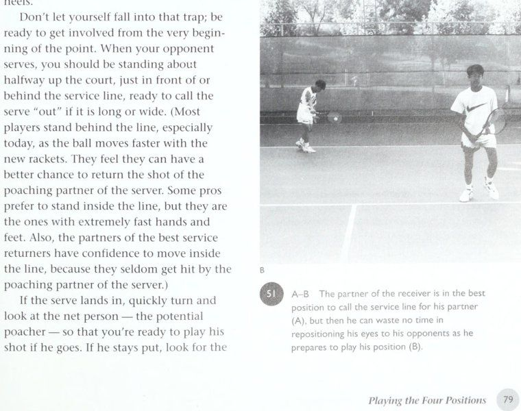
Figure 10: High-alert net ready position — Racket head held at eye level with relaxed grip for reflex deflections.
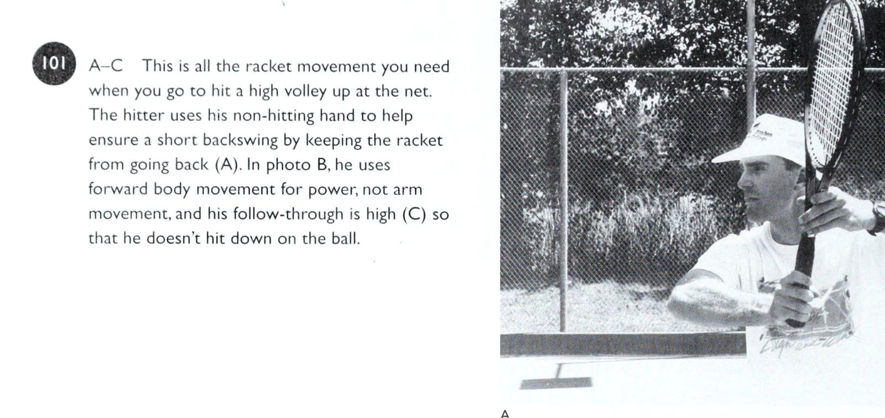
Figure 11: High volley compact stroke execution — Short takeback and downward punch into opponent's shoes.
Chương 8: Bạn, Tâm Lý Học Và Bạn Cặp
bạn sẽ di chuyển đến quả bóng với suy nghĩ, “Lần trở lại này dễ như ăn bánh.” Ngược lại, nếu bạn có một cú thuận tay tồi và một cú trái tay tồi, thì thái độ tích cực nhất trên thế giới cũng không thể bảo vệ bạn trước những tay vợt giỏi hơn một chút; nó sẽ chỉ khiến bạn dễ dàng thua cuộc hơn với nụ cười trên môi.
Ở hầu hết mọi cấp độ chơi, người chiến thắng dựa vào việc tạo ra cú đánh, trong khi người thua nắm bắt các trò chơi tâm lý. Một cú vô lê chết người là một trong những vũ khí tinh thần tốt nhất mà tôi biết. Vì vậy, câu hỏi quan trọng là: Bạn có vũ khí cần thiết không? Nếu bạn thành thật với chính mình, điều này sẽ khiến bạn tập trung chủ yếu vào các cú đánh của mình. Tôi nhận thấy rằng mọi người thường gặp vấn đề về tâm lý trong môn quần vợt bởi vì, dù có ý thức hay tiềm thức, họ biết rằng họ không có những cú đánh tốt để hỗ trợ cho khát vọng của mình, và những cú đánh yếu của họ khiến tâm lý của họ bị suy yếu và gây nghẹt thở.
Tất nhiên, khi bạn bắt đầu thực hiện các cú đánh của mình, mặt tinh thần của đánh đôi chắc chắn vẫn rất quan trọng, và rõ ràng là phức tạp hơn so với đánh đơn, nơi bạn có một đối thủ duy nhất, vì bạn phải đối phó với hai đối thủ và hành vi đặc biệt — và đặc biệt — của họ, cùng với tính cách của đối thủ. May mắn thay, có những chiến lược tinh thần thiết thực, tức thời có thể giúp bạn đối phó với nhiều thử thách cá nhân khác nhau, từ cách điều chỉnh thần kinh khi thi đấu dưới áp lực của giải đấu cho đến đối phó với nhiều xung đột hợp tác khác nhau.
Các phương pháp để giảm thiểu nghẹt thở Khi bạn và đồng đội của mình rơi vào một tình huống cạnh tranh và đầy thử thách đặc biệt — có lẽ là một trận đấu với đội mạnh nhất của giải đấu, hoặc trận bán kết của một giải đấu — đôi khi bạn lo lắng đến mức gặp khó khăn khi phát huy hết khả năng của mình? Đội của bạn có chơi tốt trong một trận đấu lớn cho đến khi bạn tiến gần đến chiến thắng nhưng sau đó thường xuyên thất bại? Hai bạn có gặp khó khăn khi xử lý những trò tai quái kỳ quái nhưng dường như có tính toán của nhiều đội đối lập nhau không?
Hãy yên tâm. Đây là những vấn đề điển hình trong đánh đôi ở mọi nơi mà bạn có thể khắc phục bằng cách suy nghĩ trước và ý thức chung trên sân. Trên thực tế, việc lo lắng trước một trận đấu lớn và có cảm giác “vui vẻ trong bụng” là điều tự nhiên và có thể mang lại lợi thế nếu bạn nhận thức được những tác động lên cơ thể và tinh thần của mình. Và một khi trận đấu đang diễn ra, mức độ lo lắng nhất định là rất quan trọng để giúp hầu hết mọi người tỉnh táo và tập trung.
Dưới đây là một số cách tiếp cận cần ghi nhớ, cả với tư cách là một tay vợt cá nhân và song song với đối tác của bạn.
1. Không còn nghi ngờ gì nữa, nỗi lo sợ thua cuộc hoặc chỉ “trông tệ” có thể khiến tay vợt lo lắng đến mức trò chơi của họ bị ảnh hưởng. Những khía cạnh tâm lý này được nhấn mạnh gấp đôi vì có một đối tác đang quan sát khi bạn đánh - cũng như hai đối thủ - và điều này làm phức tạp thêm bất kỳ áp lực cá nhân nào mà bạn có thể cảm thấy hoặc áp đặt lên bản thân trong trận đánh đơn. Bạn phải giải quyết những nhận thức của mình về kỳ vọng của đối tác cũng như sự phán xét và giám sát của hai đối thủ.
Nếu bạn liên tục lo lắng về điều đối tác của bạn nghĩ khi anh ấy xem bạn chơi và bạn nghĩ, “Chúa ơi, tôi không muốn làm anh ấy thất vọng,” thì bạn đang tự tạo ra áp lực không cần thiết. Rất có thể, nó có thể xuất phát từ trải nghiệm thể thao thời thơ ấu của bạn nếu bạn nuôi dưỡng cảm xúc mạnh mẽ về việc không muốn làm cha mẹ hoặc đồng đội của mình thất vọng.
2. Nếu bạn đang chơi để giành chiến thắng, hãy đặt ra các mục tiêu thực tế cho đội của bạn, từ tuần này sang tuần khác. Những tay vợt không hạnh phúc là những người đặt ra những mục tiêu không thể đạt được.
3. Có một kế hoạch trò chơi khách quan đã được vạch ra khi bạn đến trận đấu, nhưng hiểu rằng bạn cũng đã thực hành các cú đánh hỗ trợ điều này A-C_ Đây là một góc nhìn khác về cú đánh tiếp cận, lần này bởi một đấu thủ đánh tay vợt bằng hai tay nhưng mạnh mẽ di chuyển về phía trước vào quả bóng và tiếp tục vào lưới mà không dừng lại.
Hãy chú ý cách anh ấy tập trung vào quả bóng và hướng vợt lên theo đường bóng. kế hoạch trò chơi để xác suất thực hiện tốt hơn sẽ lớn hơn. Sự chuẩn bị như thế này có xu hướng làm giảm bớt sự lo lắng của cá nhân, điều này sẽ giúp bạn và đối tác phát huy hết khả năng của mình.
4. Một cách khác để nâng cao sự tự tin và giúp kiểm soát sự căng thẳng khi bước vào trận đấu là áp dụng cách tiếp cận thực tế đối với các vấn đề về cú đánh của bạn bằng cách thực sự giải quyết chúng giữa các trận đấu — không chỉ đơn giản là khi bạn đang khởi động.
5. Richard Schmidt, một chuyên gia về học tập vận động tại UCLA, nhắc nhở chúng ta: "Hãy chăm sóc Bạn, Tâm lý và Đối tác của Bạn © A-C_ Khi buộc phải đánh một cú vô lê thấp hoặc một nửa cú vô lê trước một đội tấn công, mục tiêu của bạn là giữ bóng tránh xa người lưới. Nếu cú vô lê nửa của bạn đến tay tay vợt bên phải (A), anh ta bây giờ có cơ hội thực hiện cú vô lê cản phá, nhưng tiếp tục di chuyển về phía trước để gây áp lực thị giác lên anh ta khi anh ta đánh (B).
Lý tưởng nhất là bạn muốn tạo góc bóng chéo sân và thấp để đối thủ của bạn phải cúi xuống để thực hiện một nửa cú vô lê của mình (C), cho phép bạn và đồng đội của mình di chuyển một cách tự tin về phía trước, biết rằng anh ta phải nhấc bóng lên. vuốt ve các chi tiết khi bạn luyện tập, nhưng chỉ đánh bóng khi bạn chơi, giữ tâm trí của bạn khỏi những phần biệt lập.” Nghiên cứu cho thấy rằng khi bạn đơn giản ra ngoài và đánh bóng trong trận đấu, bạn sẽ gần đạt được cú đánh mong muốn hơn là khi bạn cố gắng tập trung vào các chi tiết cụ thể.
6. Hãy nhắc nhở bản thân rằng điều tốt nhất bạn có thể làm là nỗ lực mạnh mẽ trong mọi bộ phận và tận hưởng niềm vui khi làm việc đó. Đo lường hình phạt mà bạn cảm thấy mình phải trả khi thua cuộc - chẳng hạn như làm thất vọng những người thân yêu ở nhà hoặc phải chịu sự xấu hổ trước mặt các thành viên câu lạc bộ - so với niềm vui mà bạn nhận được từ chiến thắng. Đôi khi sự trừng phạt của xã hội quá lớn. Nếu bạn đang nghĩ, “Tôi đang chơi với sếp của mình, và nếu chúng ta thua, tôi———— có thể gây nguy hiểm cho công việc của tôi,” thì bạn thực sự nên nghĩ đến việc thay đổi công việc của mình.
7. Đừng để mình bị đe dọa bởi quần áo hoặc trang bị của đối thủ.
8. Mọi người hiếm khi chơi theo cách họ khởi động, vì vậy đừng để bản thân dễ dàng tràn ngập sự lạc quan vô bờ bến hay sự u ám không thể kiềm chế.
9. Cười nhạo những công việc “tâm lý” cố gắng.
Một tay vợt cố gắng gây rối loạn tâm lý đối thủ của mình thường là người thiếu tất cả vũ khí cần thiết để đánh thẳng vào họ. Ngoài ra, tôi không tin rằng có ai đó thực sự khiến bạn mất tinh thần; thay vào đó, bạn cho phép người này thao túng bạn.
10. Bạn có thể không suy nghĩ nhiều đến việc tập trung cho đến khi nhận ra mình đang chơi kém hoặc bất cẩn, lúc đó bạn có thể bắt đầu đập vợt vào người trong khi tự khuyên nhủ bản thân, “Tập trung, đồ ngốc, tập trung!” Tập trung vào sự tập trung thực sự gây mất tập trung, vì vậy, thay vào đó, hãy loại bỏ cuộc đối thoại nội tâm và chỉ đánh bóng. Không có thời gian để nói gấp đôi, "Tập trung đi, đồ ngốc!" bởi vì quả bóng sẽ bay qua bạn khi bạn đang nói. (Điểm mấu chốt về sự tập trung là chỉ tập trung vào những thứ sẽ giúp bạn thực hiện một cú đánh tốt. Bất cứ điều gì khác đều là yếu tố gây ô nhiễm. Hãy tự đánh giá bản thân và tự hỏi: “Khi tôi làm điều này, nó có ý nghĩa không? Nó có giúp tôi tiếp cận bóng nhanh hơn không? Nó có giúp tôi tập trung vào trận đấu không?” Sau khi xem qua một danh sách kiểm tra nhỏ, hãy loại bỏ những thứ không đóng góp được.)
11. Giảm thiểu số lượng những điều bạn nghĩ đến khi chơi. Một số tay vợt trở nên quá choáng ngợp với các chi tiết về cách tạo cú đánh và chiến thuật đến mức nó làm giảm đi việc chơi của họ — và sự thích thú của họ. Thay vì lo lắng về những chiến thuật phức tạp, hãy biết vai trò của bạn trên sân là gì - ở cả bốn vị trí - và bám sát những điều cơ bản mà tôi đã nhấn mạnh trong cuốn sách này. Nghĩa là, giao bóng về phía (trái tay hoặc thuận tay) tạo ra cú trả bóng cao nhất và dài nhất cho đối thủ của bạn; di chuyển vào lưới mọi cơ hội; giữ lợi nhuận của bạn ở mức thấp (đối với máy chủ truy cập mạng) và tránh xa người dùng mạng; đi tìm các góc độ; đánh vào giữa khi đối thủ đang ở trên lưới, nhưng đừng bỏ qua đường biên; và tiếp tục di chuyển và suy nghĩ, “Cú đánh tiếp theo đang đến với mình.”
12. Nếu bạn là một tay vợt đánh đơn giỏi nhưng gặp khó khăn khi chơi tốt ở nội dung đánh đôi, có thể bạn đang “suy nghĩ” quá nhiều trên sân và điều đó khiến bạn bối rối và thiếu quyết đoán. Lần tới khi bạn chơi đánh đôi, hãy quyết định trước rằng thay vì đánh giá quá nhiều trên sân, bạn sẽ bắt đầu lập trình cho mình để chỉ tập trung vào các nguyên tắc cơ bản chính. Ví dụ: nhắm mục tiêu trả giao bóng của bạn vào một khu vực mục tiêu cụ thể, cách xa người trên lưới; lốp bóng khi bạn gặp khó khăn và đối thủ của bạn đang ở trên lưới; giữ bóng ở vị trí thấp và ở giữa càng nhiều càng tốt; và di chuyển song song với đối tác của bạn, luôn cố gắng giành quyền kiểm soát lưới.
13. Khi bạn chơi, hãy học cách loại trừ các kích thích bên ngoài và những suy nghĩ không liên quan, những thứ có thể cản trở cú đánh của bạn và khiến bạn không thực hiện được cú đánh tốt nhất của mình. Thay vì nghĩ về đối thủ của bạn, ở bên kia lưới, khi bóng bay về phía bạn, hoặc bị phân tâm bởi chuyển động của họ, hãy quyết định cú đánh của bạn và giảm bớt sự “lộn xộn” về mặt tinh thần để bạn có thể tự do thực hiện cú đánh.
Sau trận đấu, hãy cố gắng ghi lại các ghi chú Bạn, Tâm lý học và Đối tác của bạn - 133 về những loại phiền nhiễu đã có và chúng xuất hiện ở thời điểm nào. Ví dụ: sau khi thực hiện điều này trong một số trận đấu, bạn có thể nhận ra rằng bạn có nhiều suy nghĩ không liên quan hơn khi điểm số đạt đến mức thấp hơn so với thời điểm đầu trận và điều này có thể giúp bạn giải được câu đố về lý do tại sao lối chơi của bạn dường như bị ảnh hưởng bởi những điểm lớn.
14. Đừng lãng phí năng lượng, sự tập trung và thiện chí của bạn bằng cách nổi giận. Không ai ‘A E’. @ A-B_ Hãy luôn phấn đấu cùng đồng đội tiến về phía trước để có thể đánh được càng nhiều bóng càng tốt trước khi chúng rơi quá thấp. Đồng thời tiếp tục tiến về phía trước như một đội khi bạn thực hiện cú vô lê. thích nghe hoặc nhìn thấy những biểu hiện giận dữ, chẳng hạn như chửi thề hoặc ném vợt - ngoại trừ trong giải đấu, khi những tay vợt tức giận làm cho đối thủ vui vẻ.
15. Cố gắng tránh nản lòng trước những pha cứu thua không tưởng của đối thủ. Các lượt phát video nổi bật có xu hướng đồng đều trong hầu hết các trận đấu.
16. Tập trung vào quả bóng và tôn trọng từng cú đánh. 52] Cả hai tay vợt nên tập trung vào quả bóng và sẵn sàng di chuyển.
17. Khi bạn rơi vào những tình huống khó khăn — chẳng hạn như deuce, với set bị ràng buộc ở mức S-all — đừng để áp lực chi phối việc lựa chọn cú đánh của bạn. Hãy thực hiện cú đánh đáng lẽ phải được thực hiện trong mọi trường hợp, bất kể tỷ số là bao nhiêu, và tránh suy nghĩ, “Tôi chỉ muốn chơi an toàn và sống sót thoát khỏi thời điểm này”. Thay vì chọn một cú đánh an toàn nhưng thiếu thận trọng chỉ để giữ bóng trong cuộc, hãy luôn thực hiện cú đánh mà bạn biết mình nên thực hiện, dù bạn thắng hay thua, và bạn sẽ cảm thấy hài lòng về bản thân, đồng thời đạt được nhiều thành công hơn trong trò chơi. Tỷ số sẽ bị ràng buộc trong suốt quãng đời còn lại của bạn; đây không phải là trận đấu S-all duy nhất ở Mỹ ngày hôm nay, vì vậy hãy đánh bóng và vui chơi một chút.
Giao tiếp với đối tác của bạn trong trận đấu Nói về lý do tại sao sự hợp tác của cô ấy với Natasha Zvereva lại thành công như vậy (Sáu danh hiệu Grand Slam vào thời điểm đó) và những gì cô ấy cảm thấy mình đã mang lại cho đội, Gigi Fernandez nói với Jerry Crowe của Los Angeles Times, cú giao bóng linh hoạt, những cú vô lê chắc chắn và một cú giao bóng mạnh mẽ của Fernandez! nhưng tôi nghĩ điều quan trọng hơn hết là tính cách của tôi. Tôi giao tiếp tốt và dễ dàng hòa hợp trên sân và tôi rất hợp tác. Và tôi nghĩ trong SUppOTTl\ e hoặc My You, Tâm lý học và Đối tác của bạn, mối quan hệ hợp tác tăng gấp đôi, đó là điều chính yếu, bởi vì, ở cấp độ này, mọi người đều có đột quỵ. Hầu hết mọi người đều có thể phát triển một trò chơi đôi tốt. Vấn đề chỉ là có thể tìm được ai đó mà bạn có thể hòa hợp và giao tiếp khi mọi việc không suôn sẻ.
Giao tiếp tích cực và cởi mở với đối tác của bạn, dù lúc thuận lợi hay khó khăn trên sân, là chìa khóa để có được những pha đánh đôi tốt — và sự thích thú của bạn với trò chơi. Thay vì cho phép bản thân chơi lặng lẽ cùng nhau theo các khuôn mẫu cố định, hãy cố gắng nhấn mạnh sự giao tiếp với nhau trong suốt trận đấu và sự linh hoạt trong chiến thuật của bạn.
Ví dụ: khi đội của bạn đang chơi tốt nhưng trận đấu của bạn đặc biệt hấp dẫn và bạn nghĩ rằng mình có thể giành được những điểm quan trọng bằng cách kéo dài hơn một chút (ví dụ: đi gần lưới sau khi trận đấu đang diễn ra), bạn thậm chí không cần phải hỏi đồng đội của mình, "Hãy để tôi quyết liệt hơn một chút ở đây vì hôm nay tôi đánh rất tốt." Bạn nên băng cắt bắt bài trên lưới (Poaching) nhiều hơn và cố gắng chụp nhiều ảnh hơn - và đối tác của bạn sẽ tự động cảm nhận được rằng điều đó đang có hiệu quả chứ không phải cảm thấy phòng thủ. Trong khi đó, triết lý cũng nên hoạt động theo cách khác, khi bạn nói với đối tác của mình, “Này, tiếp tục đi, đánh tốt” khi anh ấy chơi tuyệt vời và quyết liệt hơn trong việc thực hiện những cú đánh mà thông thường thuộc về bạn. Anh ấy sẽ không bao giờ cảm thấy rằng anh ấy phải yêu cầu bạn “tự do” để làm điều này. Đó là loại mối quan hệ, bản năng mà bạn nên phát triển và nuôi dưỡng.
Một tình huống khác có thể phát sinh vào một ngày cụ thể là một đối tác cảm thấy tệ hại và không thể bao quát sân như thường lệ, người này nói với bạn, "Nhìn này, tôi hầu như không thể di chuyển - hôm nay tôi thực sự bị kéo lê - vì vậy bạn phải cố gắng hết sức có thể để che chắn cho tôi; bạn phải lấy mọi thứ bạn có thể với tới và che thùy của tôi." Bạn nên chuẩn bị để chơi một chọi hai như thế này, bởi vì tất cả chúng ta đều có thể liên tưởng đến việc có một đồng đội bắt đầu mất tập trung trong set thứ hai vào một ngày nắng nóng hoặc sau một buổi tối nóng bức. Điều quan trọng là cả hai bạn đều được tự do điều chỉnh như thế này.
Ngoài ra, còn những trận đấu mà đội của bạn không có kết quả gì thì sao? Bạn có thể tìm cách biến trận đấu thành một điều gì đó thú vị hay ít nhất là một trải nghiệm học hỏi, nơi bạn thử nghiệm một chiến lược khác chỉ để xem điều gì sẽ xảy ra?
Thuần hóa Court Hog Bất cứ nơi nào tôi đi du lịch, những phụ nữ có kinh nghiệm chiến đấu ở nội dung đôi nam nữ luôn muốn biết, "Tôi nên làm gì với một đối tác cố gắng giành lấy tất cả các cú đánh? Anh ta nghĩ rằng mình giỏi hơn thực tế nên anh ta cố gắng chơi toàn sân, và điều đó làm mất đi niềm vui của tôi. Điều này thường xảy ra trong các sự kiện câu lạc bộ và xã hội và đôi khi có thể khá khó chịu, đặc biệt là khi anh ta thực sự không giỏi hơn tôi. Làm sao tôi có thể tôi khẳng định bản thân và khéo léo giải quyết việc này mà không gây ra cảnh tượng nào?” Nếu bạn muốn đối tác của mình bớt trở thành một con lợn sân - giả sử rằng anh ta không di chuyển để thực hiện những cú đánh hợp pháp với tư cách là tay vợt gần lưới nhất - hãy bắt đầu bằng cách bày tỏ sự không hài lòng của bạn. Hãy nói với anh ấy, “Nhìn này, tôi thấy chẳng vui chút nào khi anh cố gắng chụp tất cả các bức ảnh. Ở đây tôi không thực sự chơi đôi, tôi đang xem bạn chơi đơn, vì vậy chúng ta phải nói chuyện rõ ràng về điều này.” Thông thường, chỉ cần bộc lộ cảm xúc của bạn sẽ giúp giải quyết vấn đề, trừ khi anh chàng đó là một người theo chủ nghĩa Sô vanh không thể sửa chữa, trong trường hợp đó, bạn không có lựa chọn nào khác ngoài việc giải tán nhóm.
Nếu khó hơn thế một chút - chẳng hạn như anh ấy là chồng của bạn - bạn cần thu thập một số số liệu thống kê khách quan có thể giúp hỗ trợ cho khiếu nại của bạn.
Một cách tiếp cận là nhờ một người bạn lập biểu đồ về một trong các trận đấu của đội bạn, ghi lại ai mắc lỗi gì và sau đó nhờ một công ty máy tính như CompuTennis phân tích những kết quả này. Sau đó, dữ liệu có thể định lượng được và bạn có thể cho đối tác của mình thấy: "Nhìn này, bạn đã tung ra 82 cú vô lê và chỉ có 24 quả trúng sân; tôi chỉ đánh được 16 quả, nhưng 12 quả đã bị đánh bóng." “Ý định” cũng là một vấn đề then chốt ở đây. Có phải đối tác của bạn dường như thực hiện cú đánh hợp pháp của bạn một cách tùy tiện, như thể đang ăn trộm thứ gì đó của bạn, hay anh ta thực hiện cú đánh này vì anh ta biết rằng anh ta nên thực hiện cú đánh này để giúp đội của bạn giành điểm?
Bạn cần phân biệt giữa quyền (và nghĩa vụ) thực hiện cú vô lê của bạn nếu anh ấy thực sự ở gần lưới hơn và ý định rõ ràng của anh ấy là đuổi theo mỗi cú sút mà anh ấy có thể chạm tới và không để bạn có cơ hội chơi nhân đôi cách nó phải được chơi. Nếu bạn thực sự nghi ngờ ý định của anh ta là theo đuổi mọi cú đánh bất kể đó là cú đánh hợp pháp của ai và bạn nói chuyện với anh ta về điều đó và anh ta không thay đổi, thì vấn đề sâu sắc hơn mức bạn có thể giải quyết gấp đôi và đã đến lúc nghĩ đến việc hủy bỏ quan hệ đối tác.
Xung đột quan hệ đối tác Trong cạnh tranh, sai lầm lớn nhất mà một đội đánh đôi có thể mắc phải là nghĩ rằng sẽ không có vấn đề lớn về tâm lý hoặc cảm xúc nào nổ ra hoặc phát triển giữa họ khi họ chơi cùng nhau. Đúng hơn, bạn và đối tác của mình nên lường trước những tình huống có thể xảy ra này và chuẩn bị sẵn nền tảng để giải quyết những điểm không tương thích nhỏ có thể làm hỏng cuộc vui và chia rẽ mối quan hệ hợp tác dựa trên quần vợt.
Tôi nghĩ điều quan trọng nhất là phải thống nhất được chủ đề “cười và chiến thắng” với đối tác của mình. Điều này có nghĩa là ra sân và nỗ lực hết mình để giành chiến thắng, nhưng với mục đích vui vẻ và giữ mọi thứ tích cực đồng thời hỗ trợ lẫn nhau với tinh thần “Chúng ta cùng nhau thắng và cùng nhau thua”. Khi hai bạn nắm bắt được triết lý này, những khoảnh khắc tâm lý bấp bênh có thể được xử lý dễ dàng hơn và thực sự sẽ ít phát sinh hơn.
Bạn sẽ nhận ra rằng việc kìm nén sự tức giận, thất vọng và oán giận đối với đối tác, hoặc chỉ trích nhau khi mọi việc không suôn sẻ, là điều không mang lại lợi ích và cuối cùng là mang tính hủy diệt. Thay vào đó, triết lý “Jaugh và thắng”, được thảo luận trước khi các bạn thực sự chơi một trận đấu cùng nhau, sẽ tạo cơ sở để ngăn chặn - hoặc ít nhất là giảm thiểu - những tranh chấp khác nhau có thể nảy sinh trong bất kỳ mối quan hệ đôi nào.
Ví dụ, khi những điều khủng khiếp đang xảy ra với một tay vợt giỏi — bạn — vào một ngày mà rõ ràng là bạn mắc hầu hết các lỗi, bằng cách nào đó bạn phải giữ tự tin và không khuất phục trước sự thất vọng, vì sẽ có rất nhiều cú sút nữa sẽ đến với bạn khi đội kia tấn công vào mắt xích yếu. Đây là nơi bạn không chỉ cần có nội lực và cú vô lê tốt hơn mà còn cần sự hỗ trợ cởi mở của đối tác. Bạn cần một đối tác bắt đầu lấy nhiều bóng hơn ở giữa và đảm bảo với bạn, "Đừng lo lắng, hãy tiếp tục chơi hết mình; bạn sẽ quay lại trò chơi của mình." Bạn muốn một đối tác đủ mạnh mẽ để giải quyết vấn đề về Bạn, Tâm lý và Đối tác của bạn một cách lành mạnh chứ không phải một người chỉ trích bạn bằng những câu nói như “Chúa ơi, bạn không thể nhận lại một dịch vụ được không?” hoặc “Đó là khoảng năm chi phí bạn đã bỏ lỡ.
Tôi phải bắt đầu dùng tất cả chúng.” Việc duy trì mối quan hệ hợp tác mong muốn cũng giả định rằng bạn có sự khoan dung như nhau đối với những sai lầm của đối tác. Điều này có nghĩa là hãy tự nghĩ, "Này, anh ấy đã sút trượt, nhưng anh ấy rất hung hãn và đã giành được bóng; đó là cú sút của anh ấy. Mọi việc diễn ra như thế đấy." Và trong khi đó, bạn cố gắng hết sức để gánh vác mà không đóng vai người tử vì đạo.
Đây là một phần của việc thiết lập sự hiểu biết, một quá trình, theo đó cả hai bạn đều biết rằng một đối tác đôi khi sẽ chơi xấu và người kia sẽ cố gắng tận dụng cơ hội để bù đắp, và ngược lại. Nó giống như một cuộc hôn nhân, khi mọi việc diễn ra suôn sẻ với cả hai người thì điều đó thật tuyệt vời, nhưng điều này không phải lúc nào cũng xảy ra. Và vì vậy, với tư cách là một đối tác quần vợt, các bạn đang thực sự chuẩn bị cho những khoảng thời gian tốt đẹp cũng như những khoảng thời gian tồi tệ với tư cách là một đội.
Phi cá nhân hóa mối quan hệ Như tôi đã chỉ ra, hầu như mọi đội đánh đôi xuất sắc sẽ phải đối mặt với một số loại xung đột cảm xúc giữa các đối tác và bạn nên lường trước điều này sẽ xảy ra với đội của mình. Câu hỏi quan trọng là khi xảy ra xung đột, bạn có thể chịu đựng tổn thương tinh thần và tiếp tục không? Nếu bạn thấy rằng cảm xúc của mình quá dễ bị tổn thương trong các trận đấu đôi, thì bạn thực sự nên tập trung vào các trận đấu đơn.
Tại giải đấu Virginia Slims ở La Costa năm 1993, tôi đã thấy một ví dụ thú vị về việc chỉ một sự cố có thể bất ngờ gây ra những cảm xúc dồn nén, bất ngờ — và tầm quan trọng của việc khám phá vấn đề cơ bản một cách nhanh chóng, thay mặt cho mối quan hệ đối tác.
Đội số một thế giới, Gigi Fernandez và Natasha Zvereva, đang thi đấu, và một cơ hội vượt trội đã nảy sinh giữa họ, ở trung tâm.
Fernandez đã sẵn sàng cho cú đánh và nói, "Tôi hiểu rồi," nhưng Zvereva cũng nói, "Tôi hiểu rồi," và mặc dù cô ấy đang lùi lại và có một vị trí đánh kém mong muốn hơn, cô ấy đã thực hiện cú đánh và đánh một cú đánh yếu ớt trên đầu khiến đội kia quay trở lại để giành chiến thắng.
Fernandez chán ghét đến mức dù cú sút quyết định đã đến rất gần nhưng cô ấy chỉ đứng đó và sút vào lưới. Ngôn ngữ cơ thể của cô ấy thể hiện rõ ràng sự thất vọng và tức giận, và cô ấy “tung” thêm một phát nữa trước khi hạ nhiệt. Đây rõ ràng là lần đầu tiên cô công khai mất kiên nhẫn và bộc lộ cảm xúc kiểu này. Nhưng sự can thiệp của Zvereva đã bất ngờ làm lộ ra những yếu tố khác mà Fernandez không thể kiềm chế được nữa. Huấn luyện viên của họ, Julie Anthony, một nhà tâm lý học lâm sàng, sau đó nói với tôi rằng đây là một trong những lần đầu tiên cô ấy thấy một điều gì đó được cá nhân hóa như thế giữa họ.
May mắn thay, và nhờ công lao của mình, Fernandez đã nỗ lực giải quyết vấn đề ngay sau trận đấu. Cô và Zvereva đã đánh giá những gì đã xảy ra, giải quyết ổn thỏa và tiếp tục giành chiến thắng trong giải đấu - và nhiều chức vô địch khác sau đó.
Khả năng cá nhân hóa mối quan hệ tốt nhất có thể và không trở nên đồng phụ thuộc, là rất quan trọng để gắn kết một đội đôi cùng nhau. Ngược lại, nếu không cẩn thận, bạn sẽ bắt đầu trút những nỗi thất vọng cá nhân lên đối tác của mình, bị kích động bởi điều gì đó mà anh ấy hoặc cô ấy làm trên sân quần vợt nhưng thực ra lại phản ánh điều gì đó khác đang diễn ra trong cuộc sống của bạn mà không liên quan gì đến trận đấu quần vợt cụ thể này. Vì vậy, điều rất quan trọng là đối tác của bạn - người nhận được hành vi của bạn - học cách tách mình ra khỏi hành vi này và tránh trở nên phụ thuộc và nghĩ rằng, "Ừ, tôi đang làm cô ấy thất vọng; tôi đang làm hỏng mọi chuyện." Khi một người đang có một ngày tồi tệ trên sân, việc thêm cảm giác tội lỗi vào sự thất vọng gần như đảm bảo rằng người đó sẽ chơi tệ hơn khi trận đấu diễn ra. (Nói với tư cách là một cố vấn tâm lý ở đây, nếu ý định không mấy tinh tế của bạn thực sự là để tăng thêm cảm giác tội lỗi, thì bạn gặp vấn đề nghiêm trọng hơn đối tác của mình vì ý định của bạn là làm tổn thương.) Nếu nhóm của bạn đã thiết lập một số quy tắc cơ bản và những điều tốt đẹp không xảy ra giữa hai người và bạn đang phát điên vì điều đó, hãy lưu ý rằng bạn thực sự có thể đang phản ứng với những cảm xúc và trải nghiệm thời thơ ấu. Khi một trong những quy tắc cơ bản mà bạn đặt ra với đối tác của mình bị phớt lờ ngay trước mắt bạn, sự tức giận của bạn có thể không liên quan gì đến đối tác của bạn, mà thay vào đó là về những trải nghiệm bạn có khi còn nhỏ, chẳng hạn như cha mẹ và huấn luyện viên khó chịu với bạn khi bạn thể hiện không tốt hoặc người đặt mọi thứ vào chiến thắng hoặc người cho bạn cảm giác rằng bạn chỉ được chấp nhận nếu bạn chơi tốt. Tất cả những điều này giờ đây có thể xuất hiện trên sân tennis, do hành vi của đối tác của bạn gây ra, nhưng thực ra bắt nguồn từ đâu đó trong thời thơ ấu của bạn.
Một lần nữa, điều quan trọng là bạn và đối tác của mình phải sớm thảo luận về những yếu tố con người này trong mối quan hệ để các bạn phát huy các khả năng và không có bất ngờ thực sự nào về tính cách khi các bạn bắt đầu chơi cùng nhau và một trận đấu quan trọng đang diễn ra. Có đủ bất ngờ trong một trận đấu bình thường.
Điểm qua một số tình huống có thể xảy ra. Ví dụ, bạn có thể nói, "Hãy nhìn xem, sẽ có những ngày một trong chúng ta mắc mọi lỗi trong cuốn sách. Bạn biết điều đó và tôi biết điều đó. Điều quan trọng là nó không trở thành vấn đề cá nhân hóa và mỗi người trong chúng ta phải nhận ra điều này và thừa nhận, 'Tôi đang có một trong những ngày thống kê đó. Làm cách nào để bù đắp và để bạn cố gắng bảo lãnh cho chúng tôi?'" để nói với bạn như vậy. Có lẽ cả hai bạn đều có thể đồng ý rằng việc cố gắng tập trung vào trận đấu sẽ có tác dụng chữa bệnh.
Dấu hiệu của một mối quan hệ hợp tác gặp rắc rối Tôi cảm thấy nên có hai tiêu chí liên quan khi chúng ta chơi quần vợt: cố gắng giành chiến thắng và vui vẻ. Nếu bạn thua và chơi với sai đối tác, bạn sẽ bị O ăn 2, điều đó có nghĩa là tình huống tồi tệ nhất có thể xảy ra trong môn thể thao này. Nhưng nếu bạn có thể tìm được một đối tác giúp khiến mọi việc trở nên vui vẻ, thì điều này thực sự có thể bù đắp cho mất mát này đến mất mát khác, đưa bạn đến gần hơn với tình huống đôi bên cùng có lợi.
Đây là nơi cần lưu ý rằng thường xuyên như thế nào, từ cấp câu lạc bộ đến cấp độ chuyên nghiệp, hai tay vợt sẽ tham gia và có một giải đấu tuyệt vời đến khó tin trong lần đầu tiên họ chơi cùng nhau. Rõ ràng là có những động lực đặc biệt đang diễn ra, không chỉ về cách các trận đấu quần vợt của họ diễn ra ăn khớp đến mức nào mà còn về các yếu tố tâm lý mà họ mang lại cho mối quan hệ hợp tác. Ví dụ, cả Bạn, Tâm lý học và Đối tác của bạn dường như đang cố gắng hết sức để làm hài lòng đối tác của mình, để chứng tỏ họ có thể chơi tốt như thế nào và họ sở hữu tính cách tốt như thế nào. Họ vẫn chưa ổn định cuộc “hôn nhân” và bắt đầu cãi nhau về chuyện này chuyện nọ, mà thay vào đó, họ bắt đầu mỗi trận đấu với một bảng xếp hạng sạch sẽ, có ý định cố gắng hết sức, với tư cách cá nhân và tập thể.
Thành tích thi đấu mạnh mẽ của các đồng đội tân binh đã chứng minh cho tôi thấy một điều rằng một đội đánh đôi giỏi không nhất thiết phải thi đấu cùng nhau lâu dài mới có thể thành công. Và nó cũng phản ánh tinh thần mà mỗi đội đánh đôi nên cố gắng giữ vững sau khi tuần trăng mật kết thúc.
Than ôi, những xung đột về tính cách và tâm lý bắt đầu xuất hiện khi các đồng đội chơi cùng nhau, vì vậy điều quan trọng là phải khám phá một số dấu hiệu cho thấy mối quan hệ hợp tác quần vợt đang gặp khó khăn và có lẽ nên từ bỏ - vì lợi ích của bạn. (Để công bằng với đối tác của mình, bạn nên cố gắng trả lời hoặc giải quyết những câu hỏi này từ quan điểm của họ.)
1. Đối tác của bạn có nói chuyện với bạn không?
Bạn có thể thích kiểu mạnh mẽ, im lặng, nhưng để chơi tốt nhất với tư cách một đội, đối đầu và đối đầu, giữa hai bạn cần có sự giao tiếp thường xuyên. Một số sẽ liên quan đến điểm trước đó và chiến lược hiện tại của bạn, trong khi một số sẽ liên quan đến vấn đề cá nhân hơn - cảm giác của mỗi bạn.
Một đội đánh đôi giỏi sẽ cùng nhau đứng đầu sau gần như mọi điểm, thì thầm, bày mưu điểm tiếp theo, hỗ trợ lẫn nhau.
2. Đồng đội của bạn có nỗ lực hết mình trong suốt trận đấu, ngay cả khi cô ấy đã nghỉ thi đấu hoặc đội của bạn đang gặp khó khăn? Hay cô ấy có xu hướng bỏ cuộc? Cô ấy có đảm nhận khu vực và trách nhiệm của riêng mình hay bạn đột nhiên thấy mình băng qua sân của cô ấy, cố gắng đuổi theo từng quả bóng?
Nếu vậy — và nếu điều này làm phiền bạn nhưng bạn không biết cách đề cập đến chủ đề — chỉ cần lưu ý rằng sự không tương thích mang tính cạnh tranh này sẽ trở nên trầm trọng hơn và chuyển từ khó chịu sang thất vọng tột độ khi các bạn chơi cùng nhau lâu hơn.
3. Về mặt tâm lý, đối tác của bạn xử lý thất bại tốt như thế nào?
Hai bạn có thể có rất nhiều niềm vui cùng nhau khi chiến thắng, nhưng nếu anh ấy đau khổ khi bạn thua và khó chịu đến mức khiến bạn xấu hổ với hành vi thô lỗ trên sân, bạn nên đặt câu hỏi liệu có đáng để chơi cùng nhau không.
4. Còn phản ứng của đồng đội khi bạn sắp thua một trận đấu thì sao?
Sau đó, bạn có thể thảo luận về một tình huống có thể xảy ra từ góc độ này: "Tôi biết cả hai chúng ta đều thất vọng khi bắt đầu thua hôm nay, nhưng tôi nghĩ một trong những mục tiêu của chúng ta là giữ thái độ tích cực và cố gắng hỗ trợ lẫn nhau trong tình huống đó. Tôi cảm thấy tôi phải cố gắng vực dậy bạn và tôi đã cố gắng hết sức, nhưng có vẻ như không hiệu quả — tôi không thể biết điều gì đang diễn ra trong đầu bạn. Tôi đã đọc đúng ý bạn chưa?
Bạn có cùng cảm xúc với tôi không? Cố gắng khơi gợi phản hồi từ đối tác của bạn bằng cách tiếp cận cởi mở như thế này để bạn có thể sớm làm rõ những hiểu lầm tiềm ẩn trong mối quan hệ.
5. Đối tác của bạn chia sẻ trách nhiệm về thắng thua của đội như thế nào?
Mặc dù anh ấy có thể là một tay vợt đánh đơn xuất sắc, liệu anh ấy có thể chia sẻ vinh quang - cũng như sự đáng trách không? Điều đó khó thực hiện đối với nhiều tay vợt ở nội dung đánh đôi, đặc biệt là những người có tính cách rất ích kỷ.
6. Đối tác của bạn có tiếp tục hỗ trợ lối chơi của bạn ngay cả trong những ngày mà cả hai bạn liên tục lên lưới để lấy hầu hết các cú đánh của bạn không? Dấu hiệu nhận biết về mối quan hệ hợp tác đang gặp khó khăn là bạn ngày càng nhận ra rằng đối tác của bạn ngày càng thù địch và xa cách khi bạn liên tục mắc lỗi ở những điểm chính, bất kể cô ấy có chơi tốt hay không. Bạn sẽ nhận ra sự không hài lòng, bởi vì rất ít tay vợt có thể che giấu được ngôn ngữ cơ thể: ánh mắt ghê tởm khó che giấu khi bạn tung thêm một cú sút nữa vào lưới; sự đối xử im lặng; giọng nói gay gắt có âm điệu “cho tôi nghỉ ngơi”; thậm chí không muốn di chuyển để đón quả bóng tiếp theo; cúi đầu khi cô ấy phớt lờ bạn, chỉ nhìn vào chân mình; cái đảo mắt của cô ấy; việc rời xa bạn thay vì đến gần hơn để đề nghị hỗ trợ.
Qua nhiều năm, tôi đã phát hiện ra rằng rất ít tay vợt gặp khó khăn trong việc xác định một đối tác đang sôi sục bên trong. Không quan trọng các tín hiệu cơ thể phát ra trên sân là gì; Khi tôi ngồi phỏng vấn một tay vợt sau trận đấu, người đó sẽ nói, “Ồ, đối tác của tôi thực sự rất buồn.” Đối tác có thể đã cố gắng hết sức để không bộc lộ sự thất vọng đó, nhưng nó vẫn nổi lên.
Nếu bạn cảm nhận được sự tức giận ở đối tác của mình về cách bạn đang thể hiện - ngay cả khi điều đó không được nói ra - hoặc nếu bạn có sự tức giận chưa được giải quyết đối với đối tác của mình, bạn nên công khai nó như một điều gì đó mà các bạn thực sự nợ nhau. Có một số vấn đề nhỏ phức tạp đôi khi có thể được giải quyết, nhưng cũng có những vấn đề khác nói lên rằng, "Này, tốt hơn hết là chúng ta nên xa nhau." Một khía cạnh tâm lý khác cần xem xét ở đây, khi bạn có thể cố gắng giải quyết xung đột với đối tác của mình, đó là nhận ra rằng không ai có thể khiến bạn tức giận. Thay vào đó, bạn chọn cảm thấy tức giận. Ngay cả những nhà trị liệu chưa bao giờ đến sân quần vợt cũng sẽ nói với bạn rằng khi bạn bắt đầu nhắc nhở bản thân, “Tôi chọn cách tức giận... Tôi chọn cách hạnh phúc,” thì bạn đang đổ lỗi đúng hướng và bạn có thể bắt đầu nhìn nhận bản thân từ một góc độ thực tế hơn. Ví dụ, bạn có thể tự hỏi: “Tại sao tôi lại chọn sự tức giận? Tại sao tôi lại chọn nỗi buồn?” Nếu bạn có thể học cách suy nghĩ theo cách này gấp đôi khi đánh giá mối quan hệ hợp tác, thì kết quả sẽ là một mối quan hệ thực tế hơn và lành mạnh hơn nhiều.
7. Bạn có cảm giác rằng mình đang khiến đối phương thất vọng mỗi khi mắc lỗi không?
Hãy thành thật với chính mình ở đây. Nếu cảm giác chơi đôi và khiến ai đó thất vọng quá nghiêm trọng, cho dù đó là bạn bè hay thành viên gia đình, tôi khuyên bạn nên thoát khỏi mối quan hệ hợp tác và tránh cam kết nghiêm túc về việc chơi đôi cho đến khi bạn tìm được ai đó mà bạn rất thoải mái - với tư cách là một vận động viên quần vợt và với tư cách là một con người.
Để tận hưởng những trận đánh đôi, bạn phải bỏ qua những tổn thương nho nhỏ trong trận đấu và, như tôi đã đề xuất trước đó, đừng coi chúng là cá nhân. Nếu bạn thực sự nghĩ đến lợi ích tốt nhất của đối tác khi chơi, bạn hầu như luôn nhận lại được lợi ích tốt nhất cho chính mình. Nếu bạn không nhận lại được sự điều trị này - và bạn thực sự đang nỗ lực - thì đã đến lúc chấm dứt mối quan hệ hợp tác. Hãy luôn nhớ: Bạn có quyền vui vẻ khi chơi đánh đôi.
Bạn, Tâm lý học và Đối tác của Bạn 14} Kết thúc Quan hệ Đối tác Khi bắt đầu với bất kỳ đối tác đánh đôi nào, hãy nhắc nhở bản thân rằng dù bạn có tốt bụng đến đâu, bạn cũng không “nợ” người đó một trận đấu thứ hai. Nếu việc ghép đôi ban đầu của bạn có vẻ hơi thất vọng nhưng dường như vẫn có triển vọng, bạn có thể muốn thảo luận và sau đó tiếp tục thử một hoặc hai trận đấu khác.
Nhưng nếu bạn nhận ra rằng bạn đã đánh giá sai về con người — với tư cách là một tay vợt, một đối thủ, một người bạn đồng hành tiềm năng, hoặc bất cứ điều gì — và mối quan hệ khó có thể thành công, hãy trung thực và thẳng thắn nhất có thể.
Tất nhiên, việc đề cập đến việc nhóm của một người nên chia tay chắc chắn không phải là điều dễ dàng đối với hầu hết mọi người, điều này có thể giúp giải thích tại sao một số mối quan hệ hợp tác lại tồn tại được 20 hoặc 30 năm vì những lý do khó hiểu khác.
Khá dễ hiểu, hầu hết mọi người chỉ đơn giản là không có kỹ năng hoặc đủ can đảm để thành thật với một đối tác quần vợt và nói, "Tôi không còn cảm thấy thoải mái nữa khi chúng tôi chơi - bằng cách nào đó chúng tôi không hòa hợp được và tôi nghĩ chúng tôi cần đối tác mới." Đây tốt nhất là một sự thừa nhận không thoải mái (và một lời buộc tội được cho là), nhưng tốt hơn hết là bạn nên thành thật và thẳng thắn với đối tác của mình rằng điều đó sẽ không hiệu quả, thay vì che giấu sự bất hạnh và oán giận của bạn. Hãy thành thật với cảm xúc của mình thay vì che giấu chúng.
Một sự ức chế khác có thể là bạn đang tìm kiếm một cách nhẹ nhàng để kết thúc mối quan hệ. Nhưng làm thế nào? Đây là lý do tại sao tôi nhấn mạnh việc thảo luận trước và đặt ra một số quy tắc cơ bản với đối tác lâu dài mà bạn mong muốn trước khi chơi cùng nhau. Khi các bạn đã hiểu rõ nhau về việc chấm dứt mối quan hệ hợp tác, thì một trong hai bạn có thể dễ dàng đề cập đến chủ đề này hơn và cả hai sẽ không cảm thấy bị mắc kẹt.
Hãy nhớ rằng, ngay cả khi hai người đã kết hôn với nhau thì đây cũng không phải là cuộc hôn nhân trên sân tennis; đó là sự hợp tác sẽ làm tăng niềm vui mà bạn có được từ trò chơi và khi ở bên nhau. Khi mối quan hệ đó gây ra nhiều phiền toái hơn là niềm vui, đã đến lúc bạn nên tìm một đối tác quần vợt khác. Tất nhiên, bây giờ tôi nhận ra rằng điều đó không phải lúc nào cũng dễ dàng, đặc biệt nếu đối tác của bạn là bạn thân, đối tác kinh doanh hoặc người thân. Bạn thậm chí có thể nghĩ, "Chà, tôi không thể làm điều đó dễ dàng như vậy được, Vic. Anh thấy đấy, đó là vợ tôi." Nếu đó là người phối ngẫu của bạn, đây có thể là một sự thừa nhận khó thực hiện, nhưng tình yêu sẽ không tạo ra sự khác biệt nào. Niềm vui trong cuộc sống của bạn thực sự quan trọng hơn việc tiếp tục chơi với một người đang phá hỏng niềm vui, phá hỏng trải nghiệm của bạn. Trên thực tế, một quyết định bây giờ có thể giúp cứu vãn cuộc hôn nhân của bạn.
Một lý do khác khiến bạn gặp khó khăn là bạn xấu hổ khi phải nói với bạn đời rằng bạn không muốn chơi với anh ấy nữa và sợ bạn sẽ làm tổn thương cảm xúc của anh ấy. Điều này thực sự có thể đúng, nhưng tôi thường thấy rằng khi người kia cũng biết rằng đó không phải là mối quan hệ đúng đắn, họ cũng cảm thấy nhẹ nhõm khi kết thúc nó. Nếu một người có thể ghét bạn vì đã thành thật với anh ta, thì anh ta có những vấn đề riêng cần giải quyết và việc cảm thấy tội lỗi về những gì đã xảy ra không phải là vấn đề của bạn hay trách nhiệm của bạn. Chúng ta có xu hướng không muốn nói với mọi người rằng mối quan hệ đã kết thúc vì chúng ta sợ làm tổn thương họ. Tuy nhiên, thường xuyên hơn, vấn đề là làm tổn thương chính chúng ta. Và làm sao bạn biết họ thực sự sẽ bị tổn thương khi biết rằng bạn không còn muốn chơi đôi với họ nữa? Trên thực tế, điều này có thể mang lại sự nhẹ nhõm cho họ.
Một cách để bạn có được cảm nhận khách quan hợp lý về việc liệu mối quan hệ hợp tác của bạn có nên tiếp tục hay không là lập một danh sách các câu hỏi, chẳng hạn như "Tôi có thực sự mong muốn được chơi đôi với người này không? Tôi thích điều gì ở điều đó? Tôi không thích điều gì ở điều đó?" Nếu bạn nhận ra rằng bạn thực sự không hào hứng với việc chơi một trận đấu vào ngày mai với người này và nếu bạn cũng có những cảm xúc tương tự khác, thì đây là điều bạn nên giải quyết với đối tác của mình.
Điều quan trọng là vui vẻ — thắng hay thua — và nếu bạn cảm thấy điều này không xảy ra với đối tác của mình hoặc sẽ không xảy ra, điều quan trọng là phải trung thực và thẳng thắn về tình huống này. Chắc chắn, khi các đội chia tay, đó không phải là ngày tận thế. Có rất nhiều khoảng thời gian vui vẻ với các đối tác khác và thường có cảm giác tràn đầy năng lượng mới. Khi Martina Navratilova và Pam Shriver chia tay sau khi vô địch nhiều giải Grand Slam, Pam rất suy sụp, nhưng cô đã quay lại với một đối tác mới vào năm sau và giành chức vô địch đôi Mỹ. Và Frew McMillan người Nam Phi đã giành chiến thắng hết sự kiện lớn này đến sự kiện lớn khác (đặc biệt là nội dung đôi nam nữ) với hết đối tác này đến đối tác khác.
Nếu bạn không thấy vui khi chơi đánh đôi, việc tìm một đối tác mới có thể mang lại giải pháp. Khi bạn nghĩ về tình huống đó, có thể là bạn phải “thư giãn” một chút và tìm kiếm nhiều hơn niềm vui vốn có trong trò chơi - hoặc đơn giản là tìm một người cũng có tính cạnh tranh như bạn.
Bạn, Tâm lý học và Đối tác của bạn Luyện tập để khiến bạn “nổi tiếng vào thứ Sáu” NẾU thành công của nhóm bạn không thay đổi và bạn đang tìm kiếm một cấp độ cao hơn, phạm vi bảo hiểm của sân đấu được cải thiện và một số chiến thuật mới được áp dụng từ cuốn sách này sẽ giúp ích. Tuy nhiên, quan trọng hơn, tôi cá rằng bạn và đối tác của mình cần chú ý nhiều hơn đến việc tạo ra cú đánh của từng cá nhân. Khi bạn cải thiện những cú đánh đa dạng của mình, mọi thứ khác, bắt đầu từ chiến lược, sẽ diễn ra hiệu quả hơn.
Luyện tập đôi là phần bị đánh giá thấp nhất và bị bỏ qua nhất trong trò chơi, ở mọi cấp độ.
Ý tôi là, bạn có thường xuyên nghe thấy một vài tay vợt nói, "Chúng ta sẽ ra ngoài để luyện tập đánh đôi của mình không?" Người ta có xu hướng nghĩ rằng sự tiến bộ sẽ đến chỉ bằng cách chơi nhiều trận đấu đơn và đôi. Tuy nhiên, trên thực tế, tất cả các cú giao bóng, trả giao bóng và vô lê đều phải được thực hành với ý định gấp đôi. Vì vậy, Sere ERY nên thực hiện các động tác nhân đôi cụ thể, một mình và với đối tác của bạn. Hãy dành thời gian để thực hành các yếu tố tôi nhấn mạnh trong chương này và trong thời gian ngắn, nhóm của bạn sẽ tạo ra một bước nhảy vọt cú đánh vượt qua (Passing shot) các đội hiện đang đánh bại bạn nhưng không luyện tập. Những đội không cải thiện được điểm yếu trong tập luyện sẽ phải sống chung với những điểm yếu đó hết trận này đến trận khác.
Khi bạn thử các bài tập trong chương này và xuyên suốt cuốn sách, hãy lưu ý rằng chúng càng thực tế càng tốt. Điều này phản ánh sở thích cá nhân của tôi với tư cách là một huấn luyện viên và những gì tôi đã học được từ nghiên cứu về học tập vận động, điều này cho thấy rằng nếu các bài tập luyện của bạn không liên quan đến những gì thực sự xảy ra trong một trận đấu thì chúng gần như vô giá trị như một thiết bị học tập. Các cuộc tập trận phải liên quan đến nhu cầu thi đấu thực tế trên sân.
Điều này có nghĩa là, khá đơn giản, khi bạn làm việc
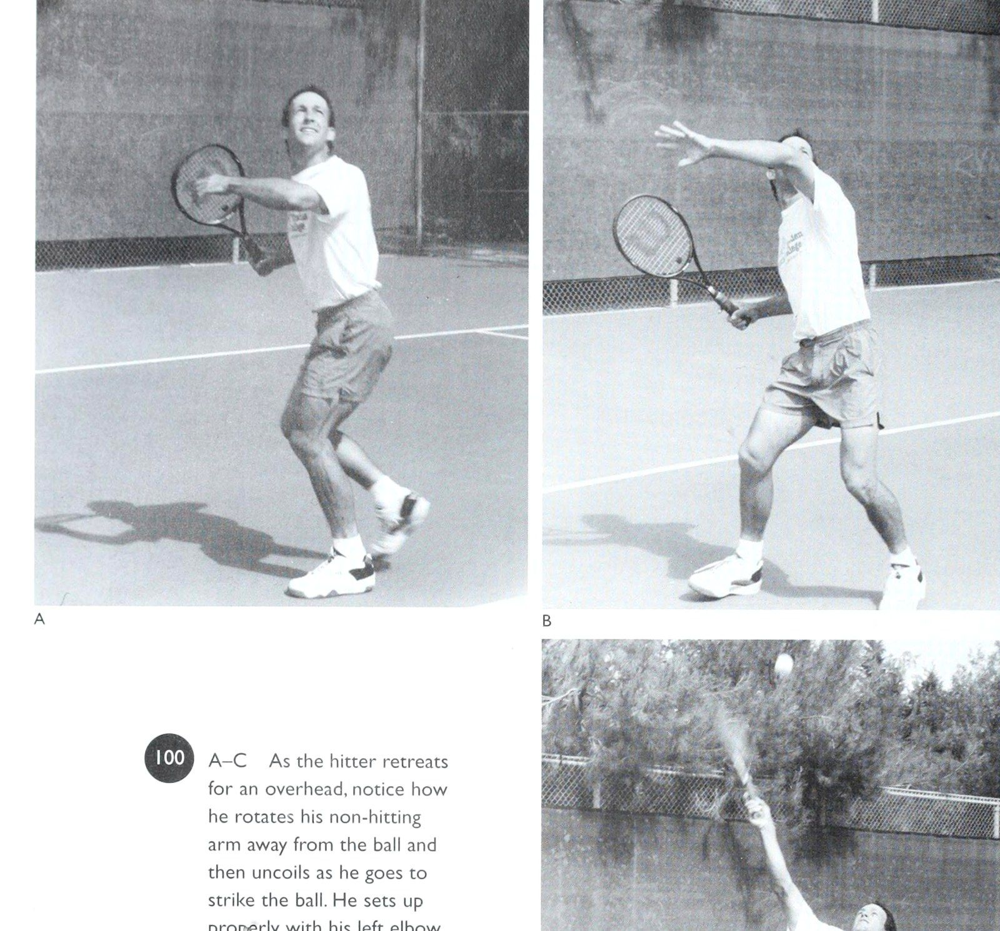
Figure 12: Overhead smash uncoiling mechanics — Explosive upward drive and forearm pronation putaway.
Chương 9: Hệ Thống Bài Tập "Nổi Tiếng Trước Thứ Sáu"
khi giao bóng, hãy cố gắng để đối tác của bạn thực hành cú trả bóng của anh ấy; khi bạn tập trung vào việc thực hiện cú giao bóng của mình, anh ta có thể nhắm tới các mục tiêu chéo sân và trả bóng lốp bóng, cũng vào các mục tiêu.
Trong chương này, tôi sẽ tập trung vào cách cải thiện một số cú đánh và chuyển động cá nhân quan trọng cần có trong các trận đánh đôi tốt. Ngay cả khi bạn chỉ thực hiện ba cú đánh - (1) một cú giao bóng đáng tin cậy hơn (cùng với việc phát triển một cú cắt bóng), (2) một cú trả giao bóng tích cực hơn nhưng có mục tiêu tốt, và (3) một cú vô lê sắc bén hơn - sự tiến bộ của bạn sẽ mang lại cho đội của bạn một động lực to lớn, vì đây là những cú đánh quan trọng nhất trong đánh đôi. Tôi cũng muốn nhấn mạnh các bài tập di chuyển và dự đoán sẽ giúp bạn bao quát sân và di chuyển đến bóng hiệu quả hơn, từ đó sẽ giúp bạn định vị đánh bóng đúng cách thường xuyên hơn.
Cú giao bóng Tôi từ lâu đã bị hấp dẫn bởi thực tế là cú giao bóng là cú đánh duy nhất trong quần vợt mà chúng ta có toàn quyền kiểm soát, tuy nhiên nó lại là cú giao bóng thường xuyên bị hỏng nhất.
May mắn thay, bạn có thể tự mình bước ra sân trống với một rổ bóng và nỗ lực cải thiện khả năng giao bóng của mình mà không cần phải dựa vào bạn tập.
Trọng tâm chính của tôi ở đây sẽ là cú giao bóng cắt lát (phản ánh sự nhấn mạnh trước đây của tôi về cú đánh cụ thể này ở chương 7), làm chủ cú tung bóng di chuyển ra phía trước cơ thể và động tác chân nhanh khi bạn rơi vào và tiến về phía lưới.
Phát triển một cú giao bóng cắt Đánh một cú giao bóng đòi hỏi kỹ thuật tương tự được sử dụng cho các cú giao bóng phẳng và xoáy lên, và thực sự phải thể hiện cùng một “cái nhìn” đối với đối thủ của bạn, để bạn ngụy trang ý định của mình là buộc anh ta ra khỏi sân deuce. Sự khác biệt duy nhất về cú đánh là ở chỗ bạn tiếp xúc với bóng khi vợt của bạn đi ngang và tạo ra xoáy ngang.
Cú ném tốt hơn để giảm thiểu tình trạng nghẹt thở Trong chương 7, tôi đã nhấn mạnh tầm quan trọng của việc ném bóng thoải mái ở phía trước cơ thể và về bên phải, để bạn có thể tiếp cận lưới khi tiếp xúc với bóng. Sai lầm phổ biến ở đây là ném thẳng, buộc tay vợt phải tiếp xúc bóng phía trên đầu thay vì thoải mái đưa ra phía trước cơ thể.
Bằng cách ném bóng theo đường vòng cung chuyển động về phía trước, bạn có thể đánh bóng mạnh bằng động tác búng cẳng tay khi cơ thể bạn thư giãn trong cú đánh và vợt di chuyển nhanh.
Điều này giúp đảm bảo chuyển động mượt mà, nhịp nhàng giúp tiết kiệm vai đánh và khi tiếp xúc, bạn sẽ tiếp cận lưới với động lượng về phía trước. (Mọi người thắc mắc tại sao một tay vợt đánh đơn như Andre Agassi, dù giao bóng chăm chỉ như vậy, lại không thể vào lưới thành công trước những tay vợt có cú trả giao bóng mạnh. Chúng tôi đã nghiên cứu Agassi trên phim tốc độ cao, và câu trả lời rất rõ ràng: Andre nhảy lên khỏi mặt đất quá cao khi giao bóng, thay vì di chuyển về phía trước khi tiếp xúc với bóng, anh ấy phải đợi trọng lực kéo anh ta xuống, và do đó khi bóng đi qua lưới, chân trái của anh ta vừa chạm đất.
Điều này có nghĩa là anh ấy lùi quá xa để tấn công vào lưới với bất kỳ thành công thực sự nào. Tất nhiên, anh ấy vẫn giành được chức vô địch Wimbledon và US Open, nhưng hãy nghĩ đến tiềm năng đã bị đánh mất.) Ném quả bóng ngay phía trên Bài tập luyện của bạn để khiến bạn “nổi tiếng vào thứ Sáu” cy A-C_ Máy chủ đang làm việc cuộn và duỗi cơ thể anh ấy để có thêm sức mạnh. Anh ấy đảm bảo rằng cú ném của mình ở phía trước vạch giao bóng (A) và anh ấy đẩy bóng bằng chân trái để có một khởi đầu tốt (B). Tuy nhiên, hãy lưu ý rằng chúng tôi đã bắt gặp anh ta mắc lỗi ở chân. Sau đó, anh ta bắt đầu bước đầu tiên về phía lưới sau bước giao bóng ban đầu (C). Đầu hạn chế cú xoay và buộc bạn phải huy động các cơ sớm hơn mức bình thường để tiếp xúc với bóng. Khi làm như vậy, bạn cũng mất đi liên kết thứ tư theo trình tự mong muốn của cơ thể - và do đó mất đi sức mạnh tiềm tàng.
Có một lý do quan trọng khác khiến tôi ủng hộ việc tạo rãnh cho một cú ném vòng cung ra phía trước cơ thể. Chúng tôi biết từ các nghiên cứu điện cơ học rằng khi mọi người gặp khó khăn với cú giao bóng của mình và bắt đầu bị nghẹn, họ có xu hướng lùi lại, vì “lùi lại” - gần cơ thể hơn - có nghĩa là an toàn. Tôi biết, điều này nghe có vẻ theo trường phái Freud ở đây, nhưng trên sân quần vợt, nỗi sợ hãi và thất vọng của người giao bóng có thể khiến quả bóng được tung ra trở lại, buộc anh ta phải huy động các cơ sớm hơn mong muốn, dẫn đến cảm giác lúng túng và giao bóng yếu. Hiện tượng này đặc biệt rõ ràng ở những lần giao bóng thứ hai và vào những thời điểm căng thẳng trong trận đấu khi một người gặp khó khăn với cú giao bóng đầu tiên của mình.
Biết được điều này, bạn nên cố gắng tránh A-E Thực hiện cú giao bóng của mình, tay vợt này đưa cánh tay ném của mình ra sau để đảm bảo một vòng xoay cơ thể mong muốn, trong khi vẫn giữ đầu vợt hướng xuống (A-B). Bóng được ném về phía bên phải, điều này sẽ cho phép anh ta di chuyển xa hơn về phía trước trong cú đánh đồng thời bảo vệ các lựa chọn của mình để đánh một lát hoặc giao bóng phẳng (C). Khuỷu tay của anh ấy bắt đầu di chuyển về phía trước trước khi hướng lên trên để gặp bóng (D). Điều này cho phép chuỗi động học được giữ nguyên.
Đi lên, đầu vợt nằm ở mép, giúp duy trì khả năng nghiêng cẳng tay để gặp rắc rối về tốc độ (E) nhanh hơn bằng cách phóng đại cú ném của bạn, ném nó dường như quá xa về phía trước, để bạn chống lại tâm lý khi làm việc. Trên thực tế, khi nói đến việc thực hiện dưới áp lực, “an toàn” thực sự nằm ở bên ngoài cơ thể chứ không phải ở gần.
Trong khi thực hiện cú giao bóng của bạn, hãy chú ý đến động tác chân tiếp theo mà Luyện tập các bài tập giúp bạn “nổi tiếng vào thứ Sáu” A-B_ Người giao bóng thực hành động tác chân của mình lên lưới. Chân sau của anh ấy bước qua vạch đầu tiên (A) khi anh ấy tiến về phía trước và khi anh ấy thực hiện bước hãm trọng tâm (Checkstep), anh ấy đang bay (B). Tôi không khuyên bạn nên bay trên không như thế này vì tay vợt không thể lao theo bất kỳ hướng nào cho đến khi tiếp đất. ~= Laugh and Win at Doubles của Vic Braden có thể giúp bạn trở thành một tay vô lê đáng sợ trong cả nội dung đánh đơn và đánh đôi. Mục tiêu ở đây là đến gần lưới nhất có thể để thực hiện cú vô lê hoặc nửa cú vô lê của đối thủ và nó bắt đầu bằng bước bắt bóng, bước thứ hai và bước thứ ba, tại thời điểm đó bạn có thể “đọc” cú trả bóng của đối thủ và di chuyển đến cú đánh của mình. Để có được sự khuyến khích ở đây, hãy đo xem bây giờ bạn tiến được bao xa sau cú giao bóng của mình tính đến thời điểm đối thủ của bạn tiếp xúc. Sau đó đo xem bạn đi được bao xa sau khi tập ném (xa hơn về phía trước cơ thể) và động tác chân nhanh hơn. Thông thường bạn sẽ đánh bóng từ vị trí cao hơn khi bạn tiến sâu hơn, do đó nâng cao cơ hội giành được điểm. Cùng một cú sút, cùng một kỹ thuật, nhưng đánh vào bóng gần lưới hơn. Ngoài ra, bạn sẽ không phải đối mặt với gần như nhiều khoản hoàn trả nằm dưới chân bạn.
Cú trả giao bóng Cú đánh này đáng được chú ý đặc biệt trong đánh đôi, bởi vì theo thống kê, rất có thể đây là quả bóng duy nhất bạn sẽ đánh trong loạt đánh. Ngay cả ở môn quần vợt ở trình độ trung bình, bóng có xu hướng đi qua lưới tối đa năm lần.
Mọi người có xu hướng nghĩ rằng việc trả lại dịch vụ chỉ là phần mở đầu của một chuỗi dài, trong khi về cơ bản nó chỉ là phần cuối.
Một lý do khác để tập trung vào việc trả giao bóng trong thực tế là nó phải được đánh chéo sân và ngắn, hết quả giao bóng này đến quả giao bóng khác, khi người giao bóng lao vào lưới. Có nhiều sự tự do hơn để nhắm bóng trong các pha đánh đơn, ngay cả khi người giao bóng di chuyển đến sau cú giao bóng của anh ta. Nhưng đối với một người giao bóng lao vào lưới trong nội dung đánh đôi, như chúng ta biết, thử thách đang diễn ra là trả bóng an toàn ra khỏi tay vợt đánh lưới, tại hoặc gần chân người giao bóng, sao cho anh ta phải cúi xuống và nâng cú đánh của mình lên, cho phép đội của bạn di chuyển vào để có cơ hội bắt vô lê tốt. (Tất nhiên, nhiều tay vợt câu lạc bộ không bao giờ chạm lưới sau cú giao bóng của họ; trong trường hợp này, họ nên cố gắng đánh những cú trả bóng cao hơn và sâu hơn từ xa tay vợt trên lưới để có thêm thời gian vào lưới.) Tại buổi tập, hãy đặt các mục tiêu trên sân gần đường giao bóng và sau đó nhờ ai đó đánh cho bạn một loạt cú giao bóng từ cả hai phía trong khi bạn tập trung đánh các cú thuận tay và trái tay đến vị trí mà đối thủ có thể sẽ tiến lên lưới sau cú giao bóng của anh ta. Thực hành lặp đi lặp lại những cú trả bóng này khi bạn xác định tốc độ và góc hướng lên mà bạn nên tiếp xúc với bóng để đánh trúng mục tiêu dự định của mình.
Trong khi đó, hãy tập giữ bóng khi bạn đánh. Thói quen này. Điều này đặc biệt quan trọng đối với các pha trả giao bóng, khi đó bạn sẽ dễ bị phân tâm hơn khi có đối thủ đã ở trên lưới khi bạn vung vợt và cảm thấy bị bó buộc khi đánh hơn so với khi đánh đơn.
Việc trả giao bóng cũng dễ dự đoán hơn trong đánh đôi so với đánh đơn vì bạn biết mình nên nhắm tới người đánh lưới. Vì vậy, hãy cúi đầu xuống, đánh ra và đừng nhìn lên cho đến khi bạn tiếp xúc được. Thực hành cú đánh này cho đến khi nó trở nên tự động và được lập trình sẵn nhất có thể; thì việc ai vào lưới hay ai sắp vào lưới không quan trọng - bạn biết cú đánh bạn muốn đánh.
Trong một trận đấu, khi người lưới thích băng cắt bắt bài trên lưới (Poaching), cú trả bóng chéo sân vẫn là cú đánh tốt nhất của bạn, buộc người đó phải thực hiện cú đánh.
Chỉ cần tránh nhìn lên sớm, vì sự thiếu kiên nhẫn có thể khiến bạn đánh bóng không chuẩn xác và dễ mắc lỗi hơn.
Ngoài ra, hãy luyện tập cách sử dụng độ xoáy để có lợi cho bạn khi trả bóng. Đánh với điểm thấp đến 96] A-B Đôi là một trò chơi giao bóng và trả giao bóng. Nếu chỉ có hai tay vợt, một đối tác có thể thực hiện cú giao bóng của mình và người kia có thể thực hiện việc trả giao bóng. Ở đây, người nhận đã đặt ra mục tiêu hoàn trả dịch vụ được xác định trước của mình.
Luyện tập các bài tập giúp bạn “nổi tiếng vào thứ Sáu” chuyển động cao để truyền xoáy lên từ phía thuận tay tạo ra một cú đánh có thể đánh mạnh nhưng an toàn qua lưới trước khi nó lao xuống mạnh. Về phía trái tay, khi bạn cắt bóng thấp, nó vẫn ở vị trí thấp sau khi chạm sân, không phải do độ xoáy mà do quỹ đạo mà nó di chuyển. Bạn có thể thực hành những cú đánh này bằng cách thiết lập các khu vực mục tiêu thích hợp trên sân và sau đó đánh vào máy bóng hoặc đối tác đánh.
Khi bạn thực hành cú trả giao bóng, hãy tập trung vào việc thực hiện bước đầu tiên nhanh theo đường chéo về phía lưới và tiếp cận bóng nhanh chóng, để bạn có thể bước về phía trước khi đánh và tiếp xúc chắc chắn. Việc lùi về phía sau khi giao bóng thường khiến thân vợt ngả về phía sau và mặt vợt bị nghiêng về phía sau khi đi vào vùng va chạm, dẫn đến lực trả giao bóng cao, không hiệu quả.
Nếu bạn luôn trễ một quả giao bóng nhanh, đây là một bài tập để cải thiện kỹ năng dự đoán và khả năng đột phá sớm hơn về phía bóng của bạn. Nhờ đối tác hoặc một người bạn của bạn đánh 20 hoặc 30 cú giao bóng khi bạn thực hành đoán quả bóng sẽ di chuyển đi đâu ngay khi bạn thấy nó rời khỏi vợt. Sau khi nghiên cứu chuyển động và cách tung bóng của người giao bóng, bạn sẽ thấy rằng các quyết định ban đầu của mình thường là phù hợp nhất.
Ngoài ra, hãy chơi một trận đấu đơn với một máy chủ mạnh và cố gắng đoán hướng của quả giao bóng và cứ thực hiện nó, ngay cả khi bạn sai hoàn toàn. Hãy tin vào bản năng ban đầu của bạn và thực hành phá vỡ theo hướng này hay hướng khác, và bạn sẽ khá ngạc nhiên về mức độ thường xuyên mà những phán đoán ban đầu của bạn đúng.
Nhưng đừng quên tiến về phía quả bóng khi bạn đoán nó sẽ bay về phía nào.
Điều này có nghĩa là bạn phải tập động tác bằng chân.
Chờ quả giao bóng ở tư thế cơ thể cao nhưng thoải mái, sao cho động tác đầu tiên của bạn có thể hướng về phía bóng chứ không phải hướng lên trên từ tư thế cúi người. Sau đó, hãy chắc chắn rằng bạn đang đứng dậy bằng đôi chân của mình khi người giao bóng thực hiện cú ném của mình. Điều này giúp kéo giãn cơ bắp của bạn, tạo điều kiện cho việc di chuyển nhanh chóng bằng các bước ngắn, nhanh sang trái hoặc phải. Hãy chắc chắn rằng trọng lượng của bạn hơi nghiêng về phía trước khi bạn đứng lên.
Đặc biệt, trong các trận đấu đôi, khi một tay vợt đối phương sẵn sàng trên lưới chờ đợi để thực hiện cú trả bóng yếu của bạn, bạn không thể ngồi lại và nâng bóng lên. Bạn phải lái nó, và điều này có nghĩa là tiếp cận mọi cú giao bóng càng nhanh càng tốt để tiếp xúc với quả bóng ở phía trước cơ thể bạn. Điều này đặc biệt đúng ở phía trái tay (đối với những người đánh trái tay bằng một tay), điều này ít dễ tha thứ hơn so với cú thuận tay khi một người muốn trả bóng một cách hung hãn. Ở phía thuận tay, vai chứa cánh tay vợt cách xa lưới, cho phép thời gian đánh nhiều hơn một chút.
Ở bên trái tay, vai đánh nằm ở phía trước của cơ thể, và độ trễ sẽ buộc bạn vào một lối chơi phòng thủ, trong đó bạn phải chặn cú trả bóng hoặc cố gắng đánh bằng xoáy xuống, khi mục tiêu là để tấn công.
Nếu bạn muốn thực hiện một cú trả giao bóng tốt hơn so với cú giao bóng nhanh, hãy nhớ điều này: Bạn càng thực hiện tốt, cú swing của bạn sẽ càng ngắn. Xoay vai của bạn với một chuyển động ban đầu nhanh chóng, đưa vợt trở lại đỉnh chữ “C”, sao cho bạn chỉ cần thả vợt xuống khi vung vợt vào bóng.
Thời gian bạn có sẵn có thể được dành để sắp xếp vị trí trả lại của bạn. Hãy xem Pete Sampras lấy lại vợt nhanh như thế nào, và điều tương tự với Steffi Graf - một cú vung vợt nhanh về phía sau, với vợt cao và sẵn sàng rơi.
Cú vô lê trước đó (trang 63), tôi cho thấy ý nghĩa của việc thực hiện một cú vô lê thấp tốt bằng cách cúi thấp và “chơi” bằng động tác vai từ thấp đến cao thay vì dựa vào cẳng tay. Trong luyện tập và khi thi đấu, hãy liên tục cố gắng khắc sâu ý tưởng rằng bạn đang nhắm đến các cửa sổ mục tiêu phía trên lưới thay vì các khu vực mục tiêu trên sân khi bạn tung cú vô lê.
Điều này sẽ củng cố tầm quan trọng của việc vung vợt về phía mục tiêu dự định phía trên lưới, để giữ bóng ra khỏi Ket:
Hãy chú ý cách vận động viên vô lê trong ảnh 97 A-B nhờ một người bạn cầm vợt lên lưới khi anh ta nhắm tới các độ cao khác nhau trên vợt từ các vị trí khác nhau trên sân.
Anh ấy tập trung vào việc đấm bóng qua những “cửa sổ” này, phía trên lưới một cách an toàn, để đánh trúng các mục tiêu trên sân của mình. Cần lưu ý rằng khi mọi người thử cú vô lê của mình với khái niệm cửa sổ, họ hầu như luôn choáng váng vì cửa sổ mà họ nghĩ họ phải đánh thực sự quá thấp.
Ngoài ra, tôi xin nhắc lại: Khi bạn luyện tập, hãy nhận ra rằng bạn thực sự có thể bắt vô lê một quả bóng cao 4 foot từ vạch giao bóng và giữ nó trong cuộc khó đến mức nào. Khái niệm này rất quan trọng vì chỉ giành lại bóng sau cú vô lê sẽ không giành được nhiều điểm trong nội dung đánh đôi; bạn phải đặt đối thủ của mình vào thế phòng thủ và tận dụng những sơ hở trong hàng phòng ngự của họ bằng những đường bóng đánh mạnh.
Một cách tuyệt vời để giúp cải thiện cú vô lê trái tay cao của bạn là tăng cường cơ duỗi ở cánh tay đánh bóng của bạn, để bạn có thể trả bóng sâu hoặc theo góc nhọn. Nếu bạn thiếu một cánh tay khỏe (cũng như thái độ hung hãn), bạn sẽ có xu hướng đánh bóng ngắn và khiến đối thủ dễ dàng thực hiện một cú đẩy bóng. Nhưng nếu bạn có thể giữ B > A-B Trong buổi tập, tay vợt ở phía trước thực hành cú vô lê sâu của mình bằng cách nhắm vào vợt của đối tác phía trên lưới.
Luyện tập các bài tập giúp bạn “nổi tiếng vào thứ Sáu” 15] B © A-B Khi thực hành trả giao bóng, hãy cố gắng tìm một đối thủ có thể đánh một cú giao bóng “kick” (kiểu Mỹ) để bạn có thể làm quen với việc phát hiện và thực hiện.
Vòm lưng lớn (A) đó là một đầu mối tốt cho thấy một cú giao bóng xoáy lớn sắp diễn ra và nó có thể đá sang trái của bạn (B). 152. = Vic Braden's Laugh and Win at Double đầu vợt của bạn hướng lên và "tập cơ" quả bóng đó, đối thủ của bạn đang gặp rắc rối.
Cú lốp bóng Thật khó để thực hiện một cú lốp bóng cao, sâu dưới áp lực đánh đôi, tôi muốn nhắc lại tầm quan trọng của cú lốp bóng này đối với thành công chung của đội bạn. Tôi nghĩ một lý do quan trọng khiến hầu hết tay vợt không thực hành cú lốp bóng là về mặt tâm lý, người lốp bóng không nhận ra sức mạnh của cú đánh, bất kể điểm thắng hay thua.
Nhiều tay vợt hàng đầu hơi mất phong độ có thể mệt mỏi khi theo đuổi các pha lốp bóng, và cú lốp bóng có thể giúp một đội giành quyền kiểm soát lưới. Tuy nhiên, đặc biệt là ở môn quần vợt ở trình độ trung bình, hầu hết tay vợt đều coi cú lốp bóng là một cú đánh “tất cả hoặc không có gì”, và họ không thích cảm giác đó nên họ tránh nó.
Điều quan trọng nhất khi thực hành lốp bóng là cố gắng thực hiện trong điều kiện thực tế, đánh chúng trong các tình huống và từ các vị trí mà bạn sẽ gặp trong đánh đôi.
Ví dụ: thay vì đánh bóng từ một vị trí cố định ở giữa sân phía sau đường cuối sân (điều này thậm chí không thực tế trong đánh đơn), hãy làm như sau: e Nhờ một bạn tập đánh bóng buộc bạn phải lốp bóng khi đang di chuyển khi bạn chạy dọc theo đường cuối sân và ra khỏi sân. e Khi bạn bị đẩy ra khỏi sân, hãy thử đánh một cú lốp bóng sâu chéo sân. e Cố gắng đánh vào các khu vực mục tiêu cách đường biên từ 4 đến 6 feet, tìm hiểu xem bạn phải đánh bóng ở độ cao như thế nào bằng cách quan sát vị trí bóng tiếp đất so với ———————————————— OOOO ———— ee Xem & Tay vợt tại trường đại học quần vợt của tôi luyện tập lốp bóng sâu, cách đường biên ngang tới 10 feet, để họ làm quen với cảm giác đó. Sau đó, họ tìm hiểu xem họ phải điều chỉnh góc hướng lên của cú đánh như thế nào để đưa bóng xuống bên trong đường cuối sân. tốc độ và góc hướng lên của cú swing của bạn. e Rút lui khỏi lưới để đuổi theo một cú lốp bóng qua đầu của bạn, sau đó ném một cú lốp bóng của riêng bạn, sâu nhất có thể, nhớ bù đắp cho việc đà của bạn đang đi xa khỏi khu vực mục tiêu dự định của bạn.
Cú đánh trên cao Mặc dù cú đánh trên cao là kiểu đánh trên sân nhà mà chúng tôi nghĩ mình không bao giờ nên bỏ lỡ, nhưng thực tế nó vẫn thực sự là một trong những cú đánh khó nhất trong trò chơi.
Điều này đặc biệt đúng nếu bạn bất cẩn trong việc bố trí cảnh quay đúng cách hoặc không chú ý đến cảnh quay cần thiết trong thực tế.
Hãy ra ngoài và tập luyện trên cao để bạn có được kỹ năng và sự tự tin để đánh nó mạnh như khi bạn đánh quả giao bóng. Chỉ bằng cách đánh hàng chục cú qua đầu trong một buổi luyện tập, bạn mới có thể học cách đánh giá thời điểm và vị trí tiếp xúc với quả bóng đang rơi đó - bằng cách đánh giá tốc độ của nó và góc rơi của nó - và biết khi nào nên bắt đầu cú vung lên của bạn. Bạn nên đánh bằng Bài tập thực hành để khiến bạn “nổi tiếng vào thứ Sáu” - 153 RE I, A-C_ Khi người đánh lùi về phía trên, hãy chú ý cách anh ta xoay cánh tay không đánh của mình ra khỏi quả bóng và sau đó thả lỏng khi anh ta đánh bóng. Anh ấy đứng đúng cách với khuỷu tay trái chỉ vào quả bóng (B), nhưng đã đánh giá sai đường bay của quả bóng và phải ngả người về phía sau khi anh ấy thực sự tiếp xúc (C). Đây là chuyển động giao bóng cơ bản tương tự, ngoại trừ việc bạn không tập trung vào việc tung bóng mà vào một cú lốp bóng rơi nhanh khi bạn tiếp xúc.
Sau khi bạn đã thành thạo động tác đánh qua đầu cơ bản, hãy thực hành cú đánh theo cách bạn dự kiến sẽ thực hiện.
Chống lại một tay vợt ở bên kia lưới đang thực hiện cho bạn một loạt các cú đánh, thực hiện một cú đánh thuận tay, sau đó là một cú đập bóng từ trên cao, sau đó tiến vào và đánh một cú vô lê, sau đó rút lui để thực hiện một cú vô lê trái tay cao, và sau đó kết thúc điểm bằng một cú đập bóng từ trên cao khác. Nghiên cứu cho thấy rằng phương pháp luyện tập ngẫu nhiên này là phương pháp hiệu quả nhất để học cách lấy lại tất cả thông tin bạn đã lập trình để đánh từng cú đánh riêng lẻ của mình.
Bao bọc lốp bóng Luôn nhớ rằng đội của bạn sẽ gặp nguy hiểm nếu cả hai bạn phản ứng chậm và rút lui khi đối thủ lốp bóng qua bạn trên lưới. Ngược lại, bạn và đối tác của mình sẽ trở nên hung hãn và hiệu quả hơn trên lưới khi bạn biết mình có thể xoay người và thực hiện những cú lốp bóng tốt nhất.
Lý tưởng nhất là để thực hiện những cú lốp bóng sâu xuất sắc, hãy dành thời gian thực hành phương pháp đưa người từ lưới về vạch cuối sân nhanh nhất, đó là xoay người và chạy, giống như một tiền vệ trong môn bóng chày. Nếu hiện tại bạn đang lùi lại và không muốn thay đổi, hãy xem bạn có thể rút lui bao xa trước một cú lốp bóng trước khi nó chạm đến đường cuối sân. Sau đó quay lại và chạy với cùng một kiểu lốp bóng.
Tại trường đại học quần vợt của tôi, hầu hết tay vợt đạt đến vạch cuối cùng bằng cách lùi và hàng rào phía sau bằng cách chạy. Hiếm khi tôi thấy một tay vợt nào có thể lùi nhanh như quay người và chạy. Hãy nhớ rằng, bạn đang chạy theo hướng mà bạn đã chạy cả đời - tiến về phía trước - mặc dù thực tế bạn đang di chuyển ra khỏi lưới.
Tôi cũng biết rằng nhiều người không muốn chơi trên lưới vì họ sợ sẽ bị cú lốp bóng đốt cháy khi lên đó. Tuy nhiên, tôi luôn phát hiện ra rằng họ chưa bao giờ thực sự tập rút lui để lấy bóng. Vì vậy, tôi nói với các học trò của mình, “Được rồi, khi bạn nhìn thấy quả lốp bóng sắp tới, chỉ cần quay lại và chạy về phía hàng rào và đừng quay lại tìm bóng cho đến khi bạn nghe thấy nó nảy trên sân.” (Người truy bắt bóng phải biết quả bóng đang di chuyển về phía nào để có thể quay sang phía thích hợp khi nghe thấy tiếng nảy, sẵn sàng đánh trả.) Bằng cách nhấn mạnh các phản ứng tức thời (“Đó là một cú lốp bóng!”) và chạy so với đạp lùi, tôi có thể khiến những tay vợt chậm nhất chạy vượt ra ngoài đường cuối sân mà vẫn thực hiện được một cú lốp bóng sâu.
Và ngay khi nhận ra điều đó, họ bắt đầu chơi gần lưới hơn để thực hiện những cú vô lê, vì giờ đây họ đã tự tin rằng mình có thể rút lui để thực hiện những cú lốp bóng. Trước đây, nỗi sợ hãi không thể lùi về phía sau đã làm suy yếu những cú vô lê của họ. Sau đó, chúng tôi bắt đầu dự đoán và học cách nghiên cứu ý định của đối thủ trước khi bóng rời vợt.
Cải thiện khả năng di chuyển của bạn với quả bóng Thành công của cú đúp phụ thuộc rất nhiều vào thời gian.
Nhìn chung, bạn đang chơi theo từng đợt ngắn - 8, 10 giây. Cụ thể hơn, bạn phải học cách “mua” thời gian để đạt được càng nhiều cú đánh càng tốt - càng sớm càng tốt - và cách giảm thiểu thời gian bạn dành cho Luyện tập để khiến bạn “nổi tiếng vào thứ Sáu” 101) A-C_ Đây là tất cả các động tác vợt bạn cần khi đánh một cú vô lê cao trên lưới.
Người đánh sử dụng tay không đánh của mình để giúp đảm bảo một cú đánh lùi ngắn bằng cách giữ cho vợt không quay trở lại (A). Trong ảnh B, anh ấy sử dụng chuyển động của cơ thể về phía trước để tạo sức mạnh chứ không phải chuyển động của cánh tay và tốc độ đà vung kết thúc (Follow-through) của anh ấy cao (C) để anh ấy không đánh bóng xuống. đối thủ của bạn để đáp trả những cú đánh của bạn.
Yếu tố thời gian có ảnh hưởng lớn hơn đến đánh đôi so với đánh đơn vì bạn thường xuyên ở trong nhiều tình huống đòi hỏi phải đưa ra quyết định tức thì và di chuyển nhanh tới bóng. Vì vậy, việc luyện tập các kỹ năng giúp bạn phản ứng và di chuyển với quả bóng gần như theo bản năng đã được lập trình sẵn trước mọi kiểu đánh trong một khung thời gian rất ngắn sẽ mang lại lợi ích.
Nhiều người nói với tôi rằng, “Tôi không có thời gian để làm gấp đôi những gì bạn nói.” Nhưng sự hoài nghi này là không có cơ sở, và để mang nó về nhà với các học trò của tôi, tôi yêu cầu họ đứng trước lưới và chuẩn bị thực hiện cú vô lê. Sau đó tôi bảo họ, “Nhanh chóng quay sang một bên và đưa vợt của bạn lên để thực hiện cú vô lê.” Nhanh như thế nào? Đủ nhanh để cho phép họ thực hiện cú công bóng thuận tay ở cấp độ chuyên nghiệp với tốc độ 60 dặm/giờ. từ đường cuối sân (Baseline). Tuy nhiên, sau đó, khi tôi thêm một quả bóng vào phương trình - đánh cho học sinh của mình từ đường cuối sân - nhiều tay vợt quá sợ hãi và lo lắng về việc bị đánh hoặc chỉ chuyền bóng đúng cách đến mức họ đứng hình, thay vì nhanh chóng di chuyển về phía trước theo đường chéo để đánh. Vì vậy, như một bài tập (mà tôi học được từ Don Klotz), tôi bắt đầu đánh học sinh bằng những cú đánh nhẹ nhàng để tạo cú vô lê vào lưới, sau đó tôi tăng tốc độ cho đến khi họ nhận ra rằng họ thực sự có thời gian để thực hiện những cú đánh thuận tay khó nhất của tôi. Nghiên cứu về não mới nhất dường như ủng hộ bài tập này.
Nếu bạn nhận ra chính mình ở đây, việc biết thực tế về việc huy động thời gian sẽ giúp giảm bớt căng thẳng của bạn trên sân, do đó sẽ giúp bạn thực hiện cú vô lê hiệu quả hơn, vì căng thẳng có xu hướng ức chế việc huy động cơ bắp.
Các biến thể di chuyển Các biến thể di chuyển ngày càng tăng gấp đôi, những điều thú vị mà bạn có thể làm để khiến đối thủ bối rối, chẳng hạn như băng cắt bắt bài trên lưới (Poaching) mọi điểm hoặc mọi điểm khác, đột ngột chuyển sang vị trí “một lên, một lùi”, giao bóng với cả hai tay vợt lùi lại hoặc thay đổi vị trí trên sân. Nhưng đội của bạn phải luyện tập những động tác mong muốn này để chúng có hiệu quả trong một trận đấu lớn.
Hầu hết các đội đều không làm được điều này. Họ tham gia một trận đấu và cố gắng làm những điều họ chưa từng làm trong luyện tập, nhưng điều đó không hiệu quả.
Ngoài ra, hãy đảm bảo rằng nhóm của bạn luyện tập theo cách giống như bạn mong đợi. Các nhà nghiên cứu đã chứng minh nhiều lần rằng nếu trình mô phỏng không liên quan đến việc bạn sắp làm thì nó không có giá trị. Nếu bạn ra ngoài để thực hiện các bài tập chuyển động, các bài tập đó phải mô phỏng hoàn toàn những gì bạn sẽ đối mặt trong một trận đấu - với tư cách cá nhân và thành viên của một đội - để chúng trở thành một phần trong chương trình vận động của bạn và không có những bất ngờ khó hiểu.
Đây là điều tôi đã nhấn mạnh trong những năm gần đây. Trước hết, tôi thực sự tin rằng một đội đánh đôi nên xem xét một cách hợp lý từng tình huống có thể xảy ra trên sân mà không cần vợt, trong đó mỗi tay vợt đưa ra lý do cơ bản và các điểm thảo luận.
Nó không khác gì việc các diễn viên diễn tập một vở kịch, tìm hiểu xem họ phải di chuyển ở đâu trong mối quan hệ với nhau khi họ truyền tải lời thoại của mình. Diễn viên cũng như tay vợt đánh đôi đều phải biết “dấu ấn” của mình trong từng điều kiện.
Sau khi không sử dụng vợt, đội của bạn nên thực hiện lại việc đó, sử dụng vợt để đảm bảo vợt của bạn đã sẵn sàng và ở đúng vị trí. Hầu hết các đội không làm việc tốt như một đội vì họ chưa xác định được vai trò và vị trí của từng tay vợt trong quá trình hướng dẫn như thế này. Tôi thậm chí sẽ yêu cầu “đối thủ” đứng ở một vị trí cụ thể ở phía bên kia để mô phỏng điều kiện chơi nếu có thể.
Sau khi xem qua, hãy thử bài tập tôi học được từ Dennis Ralston. Bạn chơi một điểm tưởng tượng khó tin nhưng không có quả bóng nào trúng đích. Bạn chạy vào để thực hiện cú vô lê, bạn chạy lùi để thực hiện cú đánh đầu sâu, bạn lao về phía lưới. Thực hiện bài tập này trong một phút, lặp đi lặp lại và bạn sẽ có được vóc dáng tuyệt vời.
Kỹ năng dự đoán Dự đoán luôn là điểm nhấn quan trọng đối với tôi, không chỉ vì nó có thể giúp mọi người tận dụng quần vợt của họ và giảm thiểu một số điểm yếu của họ mà bởi vì nó liên quan trực tiếp đến các cú đánh dự đoán lâu, bạn sẽ tiết kiệm thời gian và nhận được bóng sớm hơn, phản tác dụng Các bài luyện tập giúp bạn “nổi tiếng vào thứ Sáu” B 102) A-B Khi luyện tập, tay vợt trên lưới dự đoán cú đánh dọc biên trước khi đối thủ đánh bóng (A). Anh ta có thể dễ dàng tiếp cận bất kỳ quả bóng nào được đánh xuống vạch, cách đó ba bước (B). bạn có thể bị mất đi do lão hóa. Và do đó, bạn sẽ không cần phải nhanh như vậy để tiếp tục chơi trò chơi ở cấp độ của mình.
Bạn cũng sẽ thấy mình di chuyển trên sân nhiều hơn với ít nỗ lực hơn, do đó giảm bớt sự hao mòn trên cơ thể.
Mục tiêu của tôi là giúp tối đa hóa khả năng di chuyển nhanh ba bước của bạn theo bất kỳ hướng nào, vì như ảnh 102 A-B cho thấy, bạn có thể bao quát hầu như toàn bộ sân — từ đường giữa sân đến con hẻm — với ba bước.
Một cách dễ dàng để cải thiện khả năng thực hiện những bước đi nhanh về phía bóng là thực hiện các kỹ năng đoán trước, chẳng hạn như cách “đọc” cú đánh của đối thủ trước khi nó thực sự bay ra khỏi vợt. Khi xem lại trận đấu của mình, bạn thực sự nghiên cứu kỹ đối thủ của mình khi họ đánh như thế nào? Bạn đang tìm kiếm manh mối hay chỉ đơn giản là chờ xem quả bóng đi đâu trước khi lao theo hướng đó? Khi đối thủ của bạn đang đánh từ đường cuối sân, bạn nên suy nghĩ, "Lái bóng hay lốp bóng? Lái bóng hay lốp bóng?" khi bạn nghiên cứu cú đánh của họ. Nếu đó là một cú công bóng, hãy cố gắng cảm nhận xem nó đang đi dọc biên hay chéo sân. Học cách nhìn vào hông, bàn chân phía trước của người đánh hoặc bất kỳ ngôn ngữ cơ thể nào có thể gợi ý cho bạn về ý định của anh ta. Một số người sẽ xoay chân, những người khác sẽ quay đầu hoặc vai dẫn trước - những manh mối tinh tế, rõ ràng giúp bạn có thể đột phá để giành bóng sớm.
Cá nhân, tôi thích để học sinh của mình nhận tín hiệu từ mặt vợt hơn, vì mọi người có một vị trí vợt cố định khi tiếp bóng sẽ không cho phép họ thực hiện thay đổi vào giây cuối cùng, bất kể ngôn ngữ cơ thể của họ. Ngoài ra, bạn rất dễ bị phân tâm bởi các chuyển động của cơ thể. Vì vậy, khi đối thủ của bạn đang đánh bóng, hãy trở thành chuyên gia đọc mặt vợt, bởi vì đây là nơi đánh bóng và vị trí vợt rất lộ liễu. © Nếu bạn ở trên lưới, bạn sẽ di chuyển như thế nào trước mỗi tay vợt này?
Cô gái lốp bóng thuận tay, chàng trai đánh bóng trái tay.
Đây là lúc việc lập biểu đồ trước sẽ giúp bạn có cảm giác tốt hơn nữa khi dự đoán những gì đối thủ sẽ làm. Như tôi đã chỉ ra ở chương 6, bạn có thể học được nhiều điều chỉ bằng cách ngồi trên khán đài và theo dõi một đội trong vài trận đấu. Điều này sẽ cung cấp cho bạn số liệu thống kê khách quan; và nếu bạn giỏi dự đoán, giờ đây bạn sẽ có lý thuyết xác suất và xác nhận trực quan.
Đạt được bước đầu tiên nhanh về phía bóng Hầu như mọi tay vợt trong trò chơi đều có thể cải thiện khả năng thực hiện bước đầu tiên nhanh về phía bóng, một kỹ năng — đặc biệt là trong đánh đôi — quan trọng hơn nhiều so với tốc độ thực tế của bạn khi đi bộ. Rốt cuộc, bạn không chỉ có một đối tác để chia sẻ phạm vi bảo hiểm trên sân mà còn có hai đối thủ gây áp lực buộc bạn phải tiếp cận bóng nhanh chóng.
Một trong những bài tập yêu thích của tôi để đạt được bước đầu tiên nhanh chóng là yêu cầu một đối tác thả một quả bóng “vui nhộn” từ bên kia lưới trong khi bạn cố gắng theo dõi chuyển động của nó khi nó nhảy theo các hướng khác nhau.
Khi bạn ra ngoài thi đấu lại, hãy nhớ rằng bạn sẽ lo lắng về khả năng đạt được bước đầu tiên nhanh chóng. Luyện tập các bài tập giúp bạn “nổi tiếng vào thứ Sáu” mà chúng tôi e rằng đó là một cảm giác tự nhiên khi thi đấu gay go, nó cũng có thể cản trở chuyển động nếu bạn không nhận thức được sự năng động trong công việc. Vì vậy, hãy tham khảo gợi ý của Arthur Ashe, người đã từng viết cho mình một tờ ghi chú - GIỮ CHÂN CỦA BẠN CHUYỂN ĐỘNG - và để nó ở vị trí trọng tài như một lời nhắc nhở mỗi lần thay đổi. Thú vị, tôi nghĩ rằng Arthur đã không khuyến khích bản thân "giữ tinh thần." Qua kinh nghiệm, anh biết rằng dưới áp lực, đôi chân sẽ ngủ trước tâm hồn.
Nhiều tay vợt thực sự có thể được hưởng lợi từ ghi chú của Ashe. Họ đứng trên vạch cuối sân trong nội dung đánh đôi, nhận giao bóng và họ không thể di chuyển hoặc bước nhanh về phía bóng ở các điểm quan trọng vì họ bị đông cứng bởi áp lực. Và sau đó bạn nghe thấy họ hét lên: "Chơi hai đi! Tôi cầm nhầm tay cầm rồi." Sử dụng băng video Để có trải nghiệm thú vị và mang tính hướng dẫn, hãy quay video một số trận đấu của đội bạn. Nếu có thể, hãy mượn một chiếc máy ảnh có khả năng chụp nhanh để có thể dừng khung hình mà vẫn có độ rõ nét cao.
Nếu bạn không thể làm được điều này, nó vẫn sẽ là một trải nghiệm quý giá. Ví dụ: khi máy ảnh dừng khung hình, tay vợt đang ở hoặc ở vị trí ngoài. Nhưng tiết lộ này nên được sử dụng để giúp đỡ các đội chứ không phải để đổ lỗi. Thông thường, máy quay sẽ ghi lại những điều mà tay vợt chưa bao giờ nghĩ tới, chẳng hạn như ngôn ngữ cơ thể tiêu cực và ghi lại những nhận xét khiến ngay cả người đưa ra chúng cũng phải choáng váng. Thông thường, camera cho thấy một tay vợt liên tục cố gắng kiểm soát hành động của đối tác, điều mà chúng ta biết là một công thức thua cuộc. Một cảnh thường gặp khác là tay vợt đặt vợt ở vị trí khó xử trong khi tấn công vào lưới, dẫn đến việc đánh bóng bị trễ.
Việc cải thiện thành tích của đội bạn sẽ cần thời gian và sự kiên nhẫn khi bạn cố gắng kết hợp các chiến thuật thông minh hơn đồng thời tập trung vào kỹ thuật tốt hơn với mỗi cú đánh. Sau vài buổi luyện tập - hoặc thậm chí có thể sau một tuần đi cắm trại quần vợt - bạn có thể sẽ đặt nhiều kỳ vọng vào trận đấu lớn đầu tiên của mình. Nhưng mọi thứ có thể không diễn ra tốt đẹp, và khi sự tự tin giảm sút, bạn có xu hướng quay trở lại với những thói quen cũ thoải mái, chẳng hạn như không bước nhanh về phía quả bóng. Nhưng hãy bám sát những cải tiến mà bạn đang tìm cách thành thạo và đừng để bị chệch hướng, vì bạn sẽ sớm thu được những lợi ích và sẽ thấy mình ở cấp độ chơi cao hơn tiếp theo.
Cũng giống như trong đánh đơn, hãy nhớ rằng đánh đôi luôn có cùng một điểm:
Biết bạn phải đánh cú đánh nào trong từng điều kiện, luyện tập những cú đánh này và cố gắng hết sức để đánh chúng trong một trận đấu. Điều này đã khiến bạn trở thành người chiến thắng trong cuốn sách của tôi. Nếu bạn thắng trận đấu, bạn là người chiến thắng kép. Ngoài ra, tôi muốn tay vợt quan sát trình độ chơi của họ.
Nếu bạn nghiên cứu trò chơi và làm việc chăm chỉ và tiếp tục tiến lên, đừng ngại vỗ lưng mình, dù thắng hay thua. Sự cải tiến là điều đáng tự hào.
NGAY BÂY GIỜ, bạn đang trên đường trở thành một tay vợt đánh đôi cừ khôi (ngay cả khi tên miền của bạn kết thúc ở ranh giới quận), bạn sẽ luôn có nhu cầu và các kỹ năng của bạn sẽ giúp bạn giành chiến thắng trước nhiều tay vợt, cả nam và nữ.
Mọi người đều thích chơi với một người có kinh nghiệm đánh đôi và biết trận đấu nên diễn ra như thế nào, một người có thể nhanh chóng hòa hợp với một kỳ thủ kỳ cựu khác chỉ sau một cuộc trao đổi ngắn. Ví dụ: nếu bạn bắt cặp, không bị phát hiện, với một tay vợt đánh đôi có kinh nghiệm, ngay lần đầu tiên anh ta chuẩn bị giao bóng, bạn có thể nói, “Nhìn này, tôi thích băng cắt bắt bài trên lưới (Poaching) quảng cáo nếu bạn ở giữa,” và anh ta sẽ hiểu cách viết tắt này. Tiếp theo, hãy hỏi câu hỏi này: Anh ấy có thực hiện cú giao bóng của mình lên lưới hay anh ấy để bạn ở trên đó một mình? Sau đó bạn có thể bắt đầu ew | ER 10 Đối phó với mọi biến động lo lắng về tính khí trên sân của anh ấy.
Nếu bạn là một tay vợt đánh đôi lưu động, luôn tham gia nhiều sự kiện khác nhau ở đây và ở đó hoặc là người mới tham gia trò chơi, đang tìm kiếm một đối tác lâu dài, bạn sẽ thấy mình chơi với nhiều đối tác mới trong các loại hình thi đấu khác nhau tại câu lạc bộ và xung quanh thị trấn. Đánh đôi là trò chơi của bạn bất cứ khi nào có cơ hội. Điều này có nghĩa là bạn phải điều chỉnh theo nhiều tính cách và phong cách chơi khác nhau từ tuần này sang tuần khác, mùa này sang mùa khác và nếu bạn muốn vui chơi khi chơi theo phong cách quần vợt của riêng mình, bạn phải đứng lên bảo vệ chính mình, linh hoạt, không coi trọng mọi việc và giữ được khiếu hài hước.
Không còn nghi ngờ gì nữa, cho dù bạn chơi đôi bao nhiêu năm, bạn vẫn sẽ liên tục gặp phải những đối tác và đối thủ tuyệt vời nhưng cũng có những cá nhân kỳ quái, những người
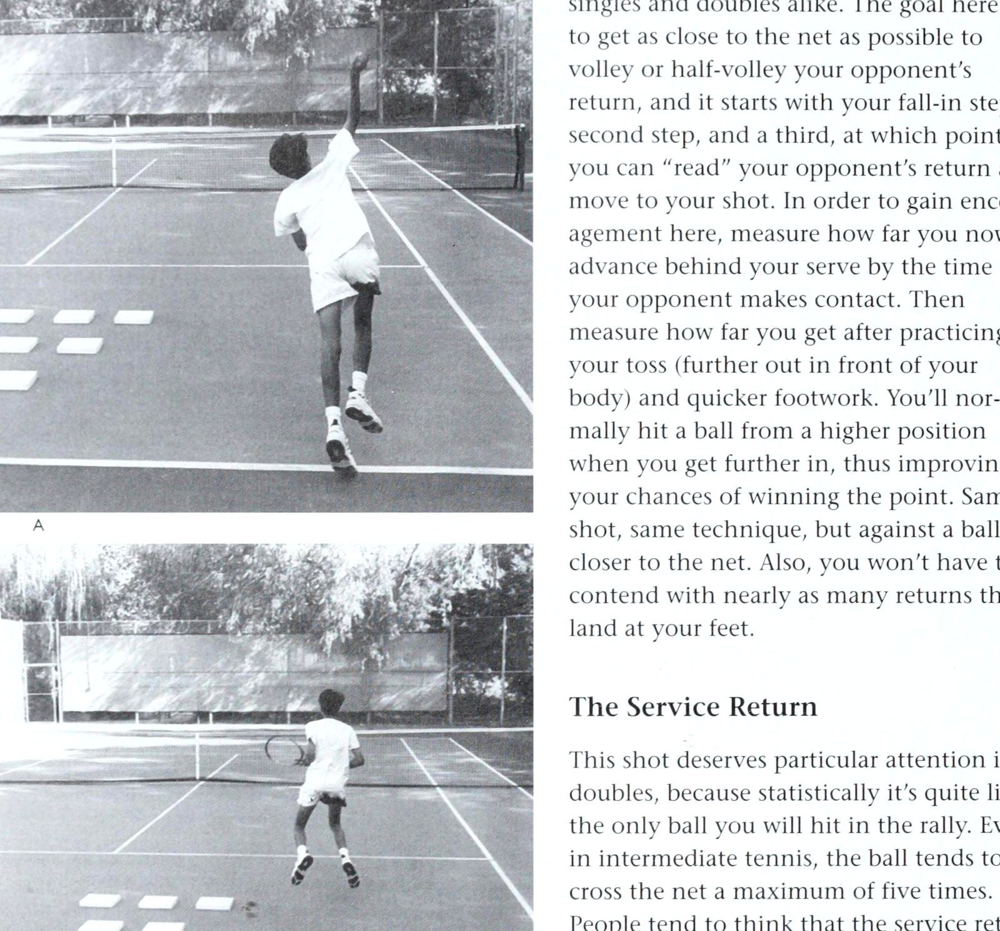
Figure 13: The decisive net checkstep footwork — Decelerating forward momentum into balanced split-step ready to pounce.
Phần IV: Biến Số Trận Đấu, Từ Điển Thuật Ngữ & Tác Giả
Chương 10: Ứng Phó Với Mọi Biến Số Trên Sân
có những thói quen khó chịu sẽ khiến bạn phát điên trừ khi bạn sẵn sàng chấp nhận những trò hề của họ như một phần của trò chơi. Ví dụ, còn người càu nhàu khi vung gậy, như Monica Seles thì sao? Hoặc đối tác có cách nói “Ra ngoài!” điều đó bắt đầu chọc giận đối thủ của bạn và khiến bạn khó chịu? Hoặc đối thủ thích nảy bóng chín lần trước khi giao bóng? Cô ấy thực sự kiểm soát bạn, bởi vì nếu bạn cố gắng bỏ đi hoặc nhìn đi chỗ khác và cô ấy quyết định giao bóng sau lần nảy thứ bảy, bạn sẽ chạm vào thành phố.
Rõ ràng là bạn chỉ cần thuận theo dòng chảy.
Các tình huống đánh đôi điển hình Dưới đây là những tình huống khác có thể sẽ phát sinh khi bạn bước ra sân với những người tương đối xa lạ — và một số phản ứng thích hợp từ phía bạn.
Bên trái, Bên phải Hầu hết mọi người đều biết họ thích chơi bên nào trên sân hơn - trái hay phải, ad hay deuce - và lý tưởng nhất là bạn sẽ kết giao với một người thích chơi bên kém hiệu quả hơn, ít được yêu thích hơn của bạn. Nếu cả hai đều muốn chơi theo hướng an toàn, bạn có thể tung đồng xu hoặc để người hung hãn hơn quyết định, nhưng yếu tố quyết định chính (giả sử cả hai bạn đều thuận tay phải) phải là:
Ai có kết quả dịch vụ ổn định nhất? Người đó nên chơi bên cánh phải, trừ khi anh ta cũng là tay vợt trên lưới hung hãn hơn và thích băng cắt bắt bài trên lưới (Poaching). Hầu hết những tay vợt mạnh hơn, ngay cả khi họ có kết quả giao bóng tốt hơn so với đối tác của mình, vẫn thích chơi bên trái hơn vì họ thích hành động của lưới di chuyển từ trái sang phải và họ thích đánh những cú đánh từ trên cao xuống giữa.
Trong một trận đấu mà hầu hết các pha giao bóng đều kết thúc ở lượt đánh thứ ba hoặc thứ tư, bạn muốn một người trả giao bóng có thể đưa bạn vào điểm. Nếu tay vợt bên phải có thể đánh trả mạnh mẽ ở vị trí thuận lợi, thấp và xa tay vợt lưới, thì áp lực sẽ đặt lên người giao bóng là phải thực hiện cú vô lê hiệu quả và gây áp lực trở lại cho đội của bạn.
Nếu điều quan trọng là phải biết ai có lợi nhuận tổng thể tốt nhất thì đây là một bài tập hay. Có một người giao bóng mạnh đánh nhiều cú giao bóng khác nhau cho bạn và đối tác của bạn - những cú giao bóng cứng, phẳng; những cú giao bóng cứng có độ xoáy; giao bóng không đúng tốc độ; phát bóng - và tìm ra người nào là người giỏi nhất trong việc trả bóng.
Vị trí và tính nhất quán là những yếu tố quyết định chính.
Hãy nhớ rằng, nếu đối tác của bạn chơi đúng sân và có thể giúp đội của bạn giành được nhiều điểm trong trận thua, họ sẽ đưa ra quảng cáo cho bạn — và sẽ có ít áp lực hơn đối với lượt trả yếu hơn của bạn. Bạn có thể tự nghĩ: “Nếu tôi không lấy lại được bóng hoặc nếu nó đi thẳng vào lưới người thì cũng không sao; đó chỉ là sự lừa dối mà thôi”. Điều này sẽ giúp bạn thoải mái đánh bóng với nỗ lực tốt nhất chứ không phải ôm bóng chỉ để đưa nó trở lại cuộc chơi.
Đồng thời nhắc lại những gì tôi đã nói trước đó trong cuốn sách: Bạn và đồng đội của mình nên thực tế và linh hoạt trong việc chọn vị trí, phản ánh phong cách chơi của cá nhân bạn. Ví dụ, trong hầu hết các pha phối hợp, tay vợt ổn định hơn nên chơi bên cánh phải, tự hào về việc giữ bóng trong cuộc và kiến tạo cho đối tác của mình - tay vợt hào nhoáng hơn - vào lưới. Ngoài ra, tay vợt đơn mạnh hơn thường phù hợp nhất với tư cách là tay vợt bên trái, nhưng một lần nữa, đây không phải là một quyết định tự động.
Ở nội dung đôi nam nữ, tôi hiếm khi thấy một phụ nữ chơi phía trái tay ở bất kỳ đâu trên thế giới, đó là một sai lầm chiến lược -eee Es trong nhiều trường hợp. Từ lâu, tôi đã lập luận rằng một tay vợt nữ mạnh mẽ của câu lạc bộ kết hợp với một nam tay vợt được đánh giá thấp hơn thường nên ở bên trái. Tuy nhiên, đây là một truyền thống khó phá vỡ, vì hầu hết các tay vợt đều nghĩ rằng một đội đôi nam nữ sống chết với đấu thủ bên trái, và người phụ nữ nào sẽ gạt người đàn ông nam nhi sang một bên? Ngoài ra, tôi hãy nghĩ rằng tay vợt nam thuận tay phải - nếu anh ta cao hơn đáng kể - cảm thấy anh ta có thể di chuyển từ trái sang phải hiệu quả hơn và có thể giảm mọi chi phí ở giữa.
Khi [| đã hỏi chuyên gia Brain Typing Jonathan Niednagel về lời khuyên của ông về việc ghép đôi bên phải và bên trái, ông ấy đã nhận xét như sau:
Tất nhiên vẫn có một số trường hợp ngoại lệ, nhưng những người hướng nội có xu hướng phòng thủ hơn, trong khi những người hướng ngoại lại có xu hướng hung hăng và có suy nghĩ tấn công hơn. Những người hướng nội, thuận não trái nên chơi theo hướng bên phải: họ là những cá nhân có tổ chức, có tổ chức, có tư duy phòng thủ hơn và họ khá vui khi chỉ cần “đánh trả” như một thiết bị quay trở lại. Ngược lại, người thuận não phải có năng lượng cao và hướng ngoại không chỉ đứng đó và trả bóng một cách có phương pháp; anh ấy muốn nhận lại quả giao bóng và cố gắng ghi điểm từ nó.
Vì vậy, lý tưởng nhất là về mặt kết hợp các kỹ năng chơi quần vợt, người thuận não phải hướng ngoại nên chơi cùng đội với người thuận não trái hướng nội - miễn là họ có thể hòa hợp về mặt tính cách. Chris Evert nổi tiếng khi chơi đơn, nhưng ở nội dung đánh đôi, cô ấy chắc chắn sẽ là một tay vợt bên phải cổ điển, không nghi ngờ gì nữa. Nhưng cô ấy không bao giờ nên ghép đôi với một người như mình.
Suy nghĩ tương tự cũng sẽ áp dụng cho một tay vợt như Ken Rosewall. Anh ấy là một chàng trai sống nội tâm; thật khó để bắt anh ấy nói chuyện, nhưng anh ấy là một trong những tay vợt thuận tay phải vĩ đại nhất từng chơi bên cánh phải vì anh ấy không bao giờ bỏ lỡ quả giao bóng và anh ấy cũng có một cú vô lê tuyệt vời. Thật là một đội mà anh ấy đã thành lập với Lew Hoad di chuyển ở cánh trái.
Tiêu chí mong muốn đối với một phụ nữ ở nội dung đôi nam nữ Ở nội dung đôi nam nữ, những phẩm chất cần có của một tay vợt giỏi là như nhau đối với cả nam và nữ. Tuy nhiên, mặc dù thực tế là nhiều tay vợt nữ chơi giỏi hơn nhiều so với đồng đội nam của họ, nhưng mọi người vẫn hỏi tôi, “Những phẩm chất cần thiết để một phụ nữ thi đấu với một người đàn ông nam tính trong đội có một người đàn ông nam tính khác là gì?” Dưới đây là tiêu chí của tôi: 1.
Một cú giao bóng tốt — không nhất thiết phải khó nhưng luôn sâu và trong cuộc. 2.
Một dịch vụ đáng tin cậy quay trở lại, tránh xa người mạng thường xuyên nhất có thể.
3. Một chi phí chung, nhấn mạnh vào độ chính xác Hơn sức mạnh. Những cú thuận tay và trái tay tốt trên mặt đất, sau khi giao bóng trở lại, không có ý nghĩa nhiều trong các giải đấu mạnh vì rất ít pha giao bóng kéo dài đủ lâu để yêu cầu một cú đánh chạm đất từ đường cuối sân và cả hai đội đều đang cố gắng chơi trên lưới. Kẻ lập dị kiểm soát Về mặt tâm lý, đó là một hiện tượng tự nhiên của con người: Tất cả chúng ta đều có hệ thống điều khiển đặc biệt của riêng mình, một phong cách chơi mong muốn và phong cách thoải mái mà chúng ta không muốn từ bỏ khi chơi đôi. Đối phó với mọi biến đổi Hệ thống điều khiển của bộ não không muốn nhường quyền kiểm soát cho hệ thống khác, người khác, nhưng sự thỏa hiệp là một phần không thể thiếu trong quá trình trao đổi làm việc nhóm trong những cặp đôi tốt.
Nhận thức được những động lực này tại nơi làm việc, câu hỏi sẽ trở thành, Bạn có thể từ bỏ một nửa khả năng kiểm soát của mình không!
trong khi đối tác của bạn bỏ cuộc một nửa?
Cả hai bạn phải thỏa hiệp để chơi tốt với nhau.
Hơn nữa, bạn phải cố gắng từ bỏ phần bất lợi hơn của mình, đồng thời giữ lại những khía cạnh tốt nhất và không sợ hãi trước tính cách và phong cách chơi đặc biệt của đối tác. Kẻ thích kiểm soát bộc lộ bản thân theo nhiều cách.
Một người phụ nữ lớn tuổi có kỹ năng kể với tôi rằng trong một trận đấu giao bóng ở câu lạc bộ của cô ấy, cô ấy đã thu hút được một người đàn ông nhất quyết giữ quả bóng thứ hai khi cô ấy giao bóng, mặc dù bản thân cô ấy đã giao bóng khá tốt trong 40 năm cầm quả bóng thứ hai.
Anh ta nhất quyết cho cô ăn từng con một, nhưng phải mất một thời gian quá dài để làm điều đó, khiến trò chơi bị chậm lại và lặng lẽ chọc giận ngay cả đối thủ.
Cô ấy hỏi tôi lẽ ra cô ấy nên làm gì, và tôi
nói với cô ấy, "Ồ, bạn nói đúng, anh ấy là một kẻ ngốc nghếch, nhưng anh ấy là kiểu người kiểm soát hành động của đối tác. Thực tế, anh ấy đang nói với bạn rằng, 'Tôi không quan tâm bạn muốn gì khi bạn giao bóng; đây là những gì tôi muốn khi bạn giao bóng.' Bạn đáng lẽ phải hỏi anh ấy, 'Tôi tò mò - tại sao bạn lại muốn giữ quả bóng thứ hai? Tại sao điều này lại quan trọng?’ Và bất kể câu trả lời của anh ta là gì - có lẽ anh ta cảm thấy rằng bàn tay của bạn quá nhỏ để giữ hai quả bóng trong lần tung đầu tiên - bạn có thể trả lời, 'Chà, tôi giao bóng tốt nhất khi tôi cầm hai quả bóng, vì vậy tôi sẽ cầm hai quả bóng.'” Điều quan trọng là có quyền tự do thảo luận và, tôi hy vọng, có chỗ cho sự thỏa hiệp. Khi các câu trả lời không đạt yêu cầu, hãy cố gắng giữ tình bạn với đối tác của bạn khi bạn giải thích rằng việc tăng gấp đôi có ý nghĩa khác đối với bạn và về cơ bản, bạn đang nói “Adios” với trận đấu này. Đối tác từ chối chơi lưới Khi ở Argentina trong một nhiệm vụ giảng dạy, tôi từng gặp một người khăng khăng rằng anh ta phải giao bóng từ phía trước hàng rào phía sau vì anh ta không thể thực hiện cú giao bóng của mình từ đường cuối sân.
Lúc đầu tôi nghĩ anh ấy đang nói đùa, nhưng ở mỗi điểm, anh ấy sẽ bắt đầu ở vạch cuối sân, sau đó quay người và lùi lại trước khi giao bóng.
Tôi đoán anh ấy cảm thấy mình phải bắt đầu từ vạch cuối sân.
Anh ấy thực sự có thể đưa bóng vào lưới, nhưng đối tác của anh ấy ở trên lưới chắc chắn không nhận được nhiều sự trợ giúp. Những cuộc tranh cãi gay gắt có thể xảy ra đôi khi một người từ chối chơi vào lưới và đồng đội của anh ta từ chối chơi ở đường cuối sân (trừ khi bị ép buộc phải làm như vậy bởi một cú lốp bóng). Trong tình thế bế tắc như thế này, không ai thắng trừ khi mỗi tay vợt đồng ý thỏa hiệp với hệ thống “một lên, một lùi”, hệ thống này cuối cùng là một hệ thống thua.
Vì vậy, nếu bạn có được một đối tác thích lùi lại và bạn phát triển mạnh trên lưới, trước tiên bạn phải cố gắng thuyết phục anh ta rằng cơ hội chiến thắng của đội bạn sẽ lớn hơn nhiều nếu cả hai cùng lên lưới mọi cơ hội.
Nếu anh ấy vẫn nhất quyết muốn ở lại - và muốn bạn tham gia cùng anh ấy - đừng nhượng bộ và để anh ấy kiểm soát phong cách chơi ưa thích của bạn.
Thay vào đó, hãy nhận ra rằng bây giờ bạn đã có tất cả, rằng bạn thực sự có thể chơi toàn bộ sân trước - từ cột lưới này đến cột lưới khác - mà không có bất kỳ cảm giác tội lỗi nào, miễn là bạn có kỹ năng nhanh nhẹn, sức chịu đựng và cú bắt lưới (Volley) cần thiết.
Chơi ở đó và cắt mọi quả bóng bạn có thể;
Ở cấp độ chuyên nghiệp, đội nhận bóng buộc phải có một tay vợt lùi lại (người nhận bóng) và một tay vợt đối đầu với đội mà người giao bóng di chuyển sau quả giao bóng của anh ta.
Bây giờ tất cả áp lực đều dồn lên người nhận để thực hiện. (Ảnh: Lisa Marie Roberto) Đối phó với tất cả các biến đổi © Nếu bạn đang ở trên lưới và bạn có một đối tác bị mắc kẹt ở đường cuối sân hoặc đơn giản là không vào lưới, hãy sẵn sàng băng cắt bắt bài trên lưới (Poaching) ở cú đánh tiếp theo.
Hãy kiễng chân lên khi đối thủ của bạn đánh bóng, sau đó lao về phía vạch giữa.
Nếu bạn dự đoán chính xác, bạn sẽ có thể cắt đứt nỗ lực chéo sân của anh ta bằng một cú vô lê đẩy bóng.
và nếu đối tác của bạn bắt đầu phàn nàn rằng anh ấy không nhận được nhiều cú sút, hãy nói với anh ấy điều tôi đã nhấn mạnh trong cuốn sách này: Tay vợt gần lưới nhất được ưu tiên, từ cột lưới này đến cột lưới khác. Trong khi đó, nếu đối tác của bạn muốn thắng trận đấu cụ thể này, hoặc nếu đây là mối quan hệ hợp tác mà hai bạn bằng cách nào đó muốn bảo tồn, anh ấy phải thực hiện theo chiến lược mà bạn đã chọn bằng cách bảo vệ phần sau của bạn, che chắn cho những pha băng cắt bắt bài trên lưới (Poaching) và nỗ lực chuyền bóng xuyên sân của bạn.
Tuy nhiên, anh ta cũng có thể thích di chuyển ở khu vực sân sau để thực hiện những cú đánh chạm đất. Mặc dù hệ thống "một lên, một lùi" được sửa đổi này hầu như vẫn luôn thất bại trước một đội cùng di chuyển lên lưới, nhưng khả năng băng cắt bắt bài trên lưới (Poaching) tốt có thể giúp bạn tiếp tục trận đấu.
Tuy nhiên, điều bạn phải làm là thiết lập các tín hiệu để bạn có thể đi vào giữa điểm và tin tưởng rằng đối tác của bạn sẽ che chắn cho bạn.
Chỉ cần một sự sắp xếp dễ dàng như, “Khuỷu tay vào, tôi đứng yên; cùi chỏ ra, tôi sẽ thực hiện cú tiếp theo,” hoặc “Nếu chân tôi giơ lên hoặc nếu tôi chạm vợt xuống sân, tôi sẽ đi.”
Khi bạn đã ở trên lưới và sẵn sàng băng cắt bắt bài trên lưới (Poaching), chỉ cần đợi đối thủ của bạn hạ mắt khi đánh, sau đó thực hiện cú đánh. Đồng đội của bạn phải đột phá cùng lúc và che chắn phía đối diện của đường cuối sân (Baseline). Bằng cách chơi theo cách này, bạn sẽ không còn bị kiểm soát bởi một đối tác yêu thích đường cuối sân nữa.
Thay vì tự nhủ: “Mình sẽ bị giết ở đây mất,” giờ đây bạn có thể tự do đi lại cả ngày, bất cứ khi nào bạn muốn.
Hơn nữa, bạn đang làm gián đoạn đội khác.
Lúc đầu, khi họ nhận ra rằng đối tác của bạn luôn ở lại phía sau, họ sẽ tràn đầy lạc quan, biết rằng họ có thể thắng trận đấu bằng cách liên tục tập trung vào lưới như một đội.
Nhưng bây giờ, nếu bạn có thể gây ra mối đe dọa thường xuyên trên lưới - với tư cách là một tay vô lê thông thường và một kẻ băng cắt bắt bài trên lưới (Poaching) - thì họ sẽ có một nhiệm vụ khó dự đoán hơn và khó khăn hơn khi cố gắng tận dụng những khoảng trống trong hàng phòng ngự của đội bạn. Chơi lên hoặc chơi xuống Nếu bạn gặp khó khăn trong việc thích nghi với việc chơi với những người ở cấp độ chơi ngay trên hoặc dưới bạn, hãy cố gắng thoát khỏi những tình huống này trước bằng cách tránh các sự kiện giải đấu nhất định trong đó những tay vợt có khả năng khác nhau được tập hợp lại với nhau.
Thay vì tham gia một sự kiện gây quỹ và phàn nàn suốt buổi chiều - “Tôi là tay vợt hạng A và tôi phải chơi với một con cóc” - hãy giúp đỡ mọi người trước bằng cách gửi cho ban tổ chức một tấm séc.
Sau đó hãy ra ngoài nếu bạn muốn và xem cuộc vui, nhưng đừng cảm thấy mình phải chơi.
Bạn không nợ ai một lời xin lỗi.
Thay vào đó, nếu bạn cố gắng chơi khi bạn đang đau khổ, đối tác của bạn có thể đọc được ngôn ngữ cơ thể của bạn và sẽ không chỉ cảm thấy tồi tệ mà còn có xu hướng chơi tệ hơn, và vì vậy bạn sẽ giúp giết chết niềm vui của người khác. Khi bạn bị mắc kẹt trong một tình huống mà rõ ràng bạn là tay vợt giỏi nhất, đừng cố gắng thể hiện kỹ năng vượt trội của mình hoặc “bé cưng” mọi thứ bạn đánh.
Thay vào đó, hãy tập trung vào việc đánh trả mọi cú đánh theo cách của bạn và dành thời gian thử nghiệm các cú đánh, để bạn bước ra khỏi trận đấu và học được điều gì đó.
Đây là thời điểm tuyệt vời để luyện tập cách nhìn bóng, hay giữ yên đầu khi vung vợt, hoặc nỗ lực không ngừng tiến về phía trước. Khi bạn là người yếu nhất trong bốn tay vợt, hãy thử áp dụng cách tiếp cận tương tự.
Hãy nhớ rằng, điều tốt nhất bạn có thể làm là thực thi, bất kể bạn chơi với ai, vì vậy hãy nói với-.
bản thân, “Tôi sẽ chỉ tập trung vào việc lấy lại bóng tốt nhất có thể, ngay cả khi tôi không bao giờ giành được điểm cho đội của mình.”
Tôi biết điều này thật khó khăn, nhưng nếu không có sự tập trung này, bạn sẽ thấy mình đánh mọi thứ vào lưới hoặc ra khỏi cuộc chơi khi bạn bị ném vào lưới những tay vợt giỏi hơn. Tránh Tay vợt X Nếu bạn định chơi trong một câu lạc bộ mở hoặc sự kiện từ thiện và có một tay vợt nhất định mà bạn muốn tránh làm đối tác, hãy liên hệ với ban tổ chức giải đấu trước khi bạn quyết định tham gia, để họ có thời gian điều chỉnh việc ghép đôi.
Nói với chủ tịch, “Đây là vấn đề của tôi - tôi không thể chơi với người này; chúng ta đã từng có vấn đề trong quá khứ và việc chơi cùng nhau sẽ không dễ chịu chút nào.”
Nếu chủ tịch nói với bạn, “Chà, nó có thể xảy ra; chúng tôi không thể kiểm soát các cặp đấu,” thì bạn nên bỏ qua sự kiện này và không khiến ủy ban phải đau đầu trong ngày thi đấu khi phàn nàn trong trường hợp bạn thực sự được ghép đôi với người này.
Nếu bạn chờ đợi, sẽ không có cách nào duyên dáng để cúi đầu và bạn sẽ phá hỏng cặp đôi. Tôi biết điều này có thể xảy ra như thế nào từ kinh nghiệm cá nhân.
Có lần tôi tổ chức lễ khai mạc một câu lạc bộ quần vợt ở Los Angeles, và chúng tôi có vài ngôi sao của bộ phim Đối phó với tất cả các biến số xếp hàng để thi đấu đôi.
Tôi biết rằng một trong những ngôi sao này có tính cạnh tranh khốc liệt và thích giành chiến thắng, bất kể hoàn cảnh nào, vì vậy tôi đã ghép anh ấy với Beverly Baker Fleitz, một cựu vô địch đôi quốc gia và từng lọt vào chung kết đơn Wimbledon. Thật không may, nam diễn viên này cũng thực sự tin rằng mình có thể chơi được trò chơi, nhưng trong đêm đặc biệt này, anh ta đã chơi tệ hại và Baker Fleitz phải thực hiện mọi thủ thuật để đảm bảo họ thắng, “ăn cắp” nhiều cú sút của anh ta vào lưới và trung lộ một cách hợp pháp.
[ đã biết nam diễn viên này từ lâu và sau đó khi tôi gặp anh ấy, tôi
cảm thấy chắc chắn rằng anh ấy sẽ kể cho tôi nghe anh ấy đã có bao nhiêu niềm vui với Baker Fleitz.
Thay vào đó, anh ấy đang tức giận và nói với tôi điều gì đó gay gắt: “Đừng bao giờ để tôi cặp kè với phụ nữ nữa!”
Chà, rõ ràng là tôi nên nói với anh ta trước, "Này, nếu có ai mà bạn không muốn chơi cùng, hãy cho tôi biết vì chúng ta chỉ đang vui vẻ thôi - không có gì quá nghiêm trọng cả."
Nhưng tôi cho rằng anh ấy sẽ thích chơi với một cựu binh Wimbledon như Baker Fleitz, người sẽ đánh bại anh ấy trong nội dung đánh đơn và là một người tốt để khởi động. Bám sát hệ thống chơi của bạn Vì chiến lược và lựa chọn cú đánh khá dễ đoán trong các trận đánh đôi tốt, nên bạn có thể dễ dàng có được một “hệ thống” chơi mà bạn có thể áp dụng từ trận đấu này đến trận đấu khác ở bất kỳ đâu trên toàn quốc.
Tất nhiên, vấn đề sẽ xảy ra khi bạn bị ghép đôi với người muốn cắm trại ở đường cuối sân hoặc với ai đó thì thầm trước điểm đầu tiên, “Hãy chú ý đến con hẻm của bạn” thay vì tập trung vào thực tế là hầu hết các cú đánh sẽ đi xuống giữa trong hầu hết các cuộc biểu tình. Hoặc với người khuyên bạn, “Đừng bao giờ lốp bóng,” trong khi thực tế một cú lốp bóng tốt có thể dùng như một vũ khí sát thương. Khi bạn đã làm việc trên một hệ thống và bạn bị bắt cặp với ai đó làm ô nhiễm hệ thống (ví dụ: bằng cách yêu cầu bạn ở lại khi anh ta giao bóng, thay vì bắt đầu từ chữ “X” ở giữa ô giao bóng), hãy cố gắng nhận ra rằng người này đang gửi cho bạn những thông điệp hết sức hỗn tạp.
Theo một nghĩa nào đó, anh ta thừa nhận mình đã khắc phục những thiếu sót, chẳng hạn như trong cú giao bóng hoặc cú vô lê của mình, nhưng anh ta cũng là một cá nhân thích kiểm soát và thường quan tâm đến việc chỉ đạo chiến lược của đội bạn hơn là thực sự giành chiến thắng trong trận đấu.
Về cơ bản, bạn phải phản ứng theo cách tích cực, nhằm giúp đội của bạn thực sự giành chiến thắng trong trận đấu. Ví dụ, thay vì cố gắng điều chỉnh cú giao bóng yếu của anh ta bằng cách lùi về vạch cuối sân, hãy nhấn mạnh rằng bạn sẽ chơi trên lưới và làm những gì đối tác của người giao bóng nên cố gắng làm: Cắt giao bóng trả lại trên lưới.
Hãy cho anh ấy biết rằng bạn sẽ ở lại đó và thử sức và không quay lại với anh ấy.
Anh ta có thể nổi điên vì muốn kiểm soát tình hình, nhưng bạn phải giữ vững lập trường nếu muốn chơi gấp đôi theo cách đáng ra phải chơi.
(Ngược lại, nếu bạn muốn lùi lại và đối tác của bạn muốn chơi trên lưới, hãy trấn an anh ấy rằng bạn muốn anh ấy lên đó, bởi vì sẽ không công bằng hoặc khôn ngoan nếu lấy đi sức mạnh của đối tác chỉ vì điểm yếu của bạn. Đó là phần của việc nhân đôi mà tôi đã nhấn mạnh trong cuốn sách này.)
sọc?
Đó là phía của bạn và đây là phía của tôi. Đừng bao giờ đứng về phía tôi.”
Nếu bạn muốn giành chiến thắng, hoặc ít nhất là thích chơi đôi một cách chính xác, hãy kiên cường. Nhắc người này rằng trong khi bạn tôn trọng khả năng rõ ràng nhưng vẫn chưa được chứng minh của anh ta trong việc chơi ở phần sân của anh ta và phản ứng với những cú đánh ở giữa sân, bạn đồng ý với câu ngạn ngữ rằng người gần lưới nhất được ưu tiên đối với tất cả các cú đánh ở giữa sân, ngay cả khi điều đó có nghĩa là phải băng qua lãnh thổ của anh ta để thực hiện cú đánh. Trên thực tế, nếu bạn chạy trước đối tác của mình trên lưới và đánh một cú vô lê, vấn đề không phải là bạn - mà là đối tác của bạn, bởi vì bạn đã ở nơi mà đối tác của bạn phải ở đó. Đối xử với cô ấy như một quý cô? Ở nội dung đôi nam nữ ngày nay, mặc dù thực tế là có nhiều phụ nữ ngang bằng với nam giới trên lưới, câu hỏi vẫn thường xuyên được đặt ra: Nên đối xử với phụ nữ bên kia lưới như thế nào?
Bạn nên tấn công hay cho cô ấy không gian? Lời khuyên của tôi là hãy tôn trọng cô ấy như một đối thủ nam.
Nếu bạn không thể tung cú vô lê đến một khu vực trống trải trên sân, thì hãy tấn công vào hông phải của cô ấy, vì nó sẽ còng tay cô ấy khá tốt - miễn là mục đích của bạn chỉ đơn giản là giành điểm chứ không phải để làm tổn thương hay đe dọa người đó. Ở cấp độ chuyên nghiệp, huấn luyện viên Dick Leach của Đại học Nam California đã đưa ra quan điểm này với nhà báo thể thao Joe Jares vào năm 1990, sau khi con trai ông, Rick, giành chức vô địch Wimbledon cùng với Jim Pugh và Zina Garrison: Các cô gái nghĩ rằng các chàng trai thích chơi hỗn hợp, nhưng điều đó không đúng.
Họ chơi chỉ vì một lý do - tiền.
Đó là công việc khó khăn.
Thật đáng nguyền rủa nếu bạn làm vậy và thật đáng nguyền rủa nếu bạn không làm như vậy.
Bạn phải băng cắt bắt bài trên lưới (Poaching) mọi lúc và bạn phải phó mặc cho người phụ nữ.
Nếu cô ấy chơi tốt, bạn thắng.
Nếu cô ấy chơi tệ, bạn sẽ thua.
Bạn chỉ cần trở thành một con vật ngoài kia nếu bạn muốn giành chiến thắng. Chính là chàng trai muốn khoan dung với phụ nữ nhất.
Và một trong những lý do khiến tôi nghĩ Ricky không làm tốt hơn là vì anh ấy không đuổi theo cô gái kia, anh ấy không cố gắng đập bóng vào cô ấy, anh ấy chơi không đủ mạnh mẽ.
Tại Wimbledon năm nay, tôi luôn theo dõi anh ấy trước mỗi trận đấu.
Tôi nói, "Anh chàng kia sẽ bơm bóng vào Zina [Garrison|. Bạn sẽ đuổi theo nó hay bạn sẽ ngồi lại và chơi đôi 50-50?"
Anh ấy rất sôi nổi và đã thắng.
(Tình cờ, anh cả Leach lại tham gia vào trận đấu đôi chính thức dài nhất trong lịch sử. Anh và đối tác Dick Dell đã đánh bại Tom Mozur và Len Schloss với tỷ số 3-6, 49-47, 22-20 trong một giải đấu tại Newport Casino năm 1967. Đó là hơn 14 set quần vợt với tỷ số 6-4! Trận đấu phải hoàn thành trong thời gian hai ngày và mới chỉ là trận bán kết. “Ngay sau khi chúng tôi kết thúc,”
Leach nhớ lại, “chúng tôi phải ra sân và chơi trận chung kết với Jim McManus và Jim Osborne, và chúng tôi đã thắng 6-8, 8-6, 8-6. Ngày hôm sau chúng tôi nằm trên giường cả ngày, lạnh cóng.
Và tôi hầu như không thể đi bộ.”) Các yếu tố tính cách Nếu bạn lo lắng về việc có một tính cách trên sân sẽ thu hút hầu hết các đối tác tiềm năng của bạn, cả nam và nữ, hãy so sánh bản thân với danh sách kiểm tra các lời phàn nàn phổ biến mà tôi đã nghe trong nhiều năm qua về các đối tác đôi Đối phó với tất cả các biến số (được bổ sung bởi một cuộc khảo sát xuất hiện trên tạp chí Playgirl): 1. Phàn nàn quá nhiều và có xu hướng bỏ cuộc.
2. Liên tục xin lỗi vì những cú đánh kém.
3. Đánh quá nhiều cú chọc, đẩy, úp.
4. Gặp khó khăn khi nhìn đường dọc dây (Down the line) và thực hiện quá nhiều cuộc gọi rõ ràng là sai, điều này thật đáng xấu hổ. Quá rụt rè khi sút vào lưới.
6. Thường bỏ cuộc ở lần bắn tiếp đà vung kết thúc (Follow-through) khi bắn trượt. Mất quá nhiều thời gian giữa các điểm và trò chơi.
8. Isa hotdogger với tính khí thất thường.
9. Có thái độ “cấp trên”.
10. Không thể giao bóng khi cầm hai quả bóng.
11. Cố gắng chơi toàn bộ sân, ngay cả khi điều đó không chính đáng.
12. Chơi vì máu — quá hay tranh luận và nói nhiều.
13. Thiếu hung hăng;
luôn muốn quay trở lại.
nN N Mặt khác, đây là một số đặc điểm chung được thể hiện bởi những tay vợt luôn có nhu cầu làm đối tác đánh đôi: 1. Chơi hết mình trong khi vẫn tận hưởng trò chơi. Hung hăng và biết chiến thuật. Giữ bóng trong cuộc. Cho phép tôi tự bắn khi được phép. Không sợ phạm sai lầm. Có khiếu hài hước. Luôn cố gắng, bất kể trình độ chơi của anh ấy như thế nào.
à ee ND 8. Cố gắng chơi đúng vị trí của mình trên sân.
9. Có khả năng bao quát khu vực và trách nhiệm của mình.
10. Không xin lỗi vì mỗi lần bắn trượt.
11. Treo bằng mọi cách.
12. Hoan nghênh những cú sút tốt của đối thủ.
13. Thể hiện sự ủng hộ khi tôi chơi tệ.
Đừng bao giờ nói: “Chỉ cần đưa quả bóng chết tiệt đó vào sân; phần còn lại tôi sẽ lo.”
Luyện tập các kỹ năng của bạn Nếu bạn quyết tâm trở thành một tay vợt đánh đôi giỏi hơn, hãy nghĩ về những trách nhiệm khác nhau của bạn và thực hành chúng;
hãy khắc sâu chúng vào tâm trí bạn để bạn không cần phải suy nghĩ trong một thời điểm.
Tuy nhiên, mỗi khái niệm nhỏ quan trọng trong đánh đôi đều phải được thực hành, như tôi
đã nhấn mạnh, hầu hết tay vợt đều không bỏ qua được lần này. Mọi người nói với tôi, "Tôi biết bạn đang nói gì, Vic. Tôi sẽ nghĩ về điều đó ở nhà, sau đó chỉ làm khi tôi chơi."
Nhưng bạn sẽ không thể thành công trong một trận đấu nếu không có buổi tập trước trên sân.
Nếu bạn chờ đợi để thử tất cả các thủ thuật mới của mình khi đang chơi một trận đấu lớn, bạn sẽ hết đối tác. Đừng hiểu sai ý tôi.
Bạn không bao giờ muốn sợ hãi khi thử nghiệm và mắc lỗi khi chơi;
bạn muốn học được điều gì đó từ mỗi trận đấu.
Nhưng trước tiên hãy thiết lập một buổi thực hành để bạn có những mục tiêu cụ thể trong đầu.
Ví dụ: “Hôm nay tôi sẽ tập đưa bóng xuống trung tâm và tôi sẽ tiến gần đến lưới. Tôi sẽ tiếp tục di chuyển đôi chân của mình.
Tôi sẽ cố gắng dự đoán cú đánh của đối thủ.
Tôi sẽ để mắt tới Khi đối thủ của bạn có cú ném bóng qua lưới, đừng cố thách thức anh ta.
Thay vào đó, hãy quay lưng lại với cú đánh và tránh chấn thương.
xuống bóng khi tôi thực hiện cú đánh của mình và cố gắng chặn đối thủ.
Sau đó, tôi sẽ cố gắng thực hiện cú giao bóng đầu tiên của mình trong trận đấu để đối tác của tôi không phải đội mũ bảo hiểm.”
Nghi thức đánh đôi tốt Các “quy tắc” về nghi thức đánh đôi đã phát triển qua nhiều năm.
Chúng không được viết ra nhưng được những tay vợt có kinh nghiệm hiểu rõ.
Dưới đây là một số ví dụ: e Trong đánh đôi tốt, khi bạn ở vị trí dễ bị tổn thương gần lưới - ví dụ: đối thủ có cú đánh bóng từ trên cao ngay trước mặt bạn - bạn có trách nhiệm quay lưng lại như một dấu hiệu phục tùng để anh ta có thể thư giãn và đánh an toàn xung quanh bạn. Nếu bạn cố gắng đánh lạc hướng đối thủ thay vì quay đi, thì bạn phải chấp nhận hậu quả, giống như bị nhận bóng vào mặt vậy.
Đối thủ của bạn không bắt buộc phải đánh xung quanh bạn nếu bạn đứng đó và thách thức anh ta bởi vì rất thường khi một người cố gắng bắn trượt người khác, anh ta sẽ bắn trượt.
e Nếu bạn gọi “ra” trong một cú đánh và đồng đội của bạn nói, “Không, thế là tốt,” nghi thức phù hợp (đó là một phần của quy tắc) là cho đối thủ của bạn biết quan điểm.
Trên thực tế, nếu một người nghĩ rằng cảnh quay đó đẹp thì có lẽ là như vậy.
Nghiên cứu của chúng tôi cho thấy Đối phó với tất cả các biến số a Sea có thành kiến ray ee @ Khi cả hai đội đều chơi hết mình và tận hưởng cuộc thi, thật khó để biết đội nào là người chiến thắng.
(Ảnh: Lisa Marie Roberto) quả bóng bị nén lại khi chạm đất và trượt vài inch trước khi rời khỏi mặt đất. Tay vợt thường nhìn thấy điểm cất cánh hơn là điểm hạ cánh, vì vậy ngay cả khi cú đánh hơi hướng ra ngoài, một phần bóng có thể chạm vạch trước khi bật ra khỏi sân.
e Phải làm gì với đối thủ có đôi mắt “hai tấc”?
Bạn biết đấy, tay vợt luôn nói: "Xin lỗi, nhưng cú đánh của bạn chỉ lệch có 2 inch".
Anh ấy có xu hướng bỏ qua điều đó vì dường như anh ấy có thị lực vượt trội và nghe có vẻ rất thuyết phục.
Tương tự như vậy, tất cả chúng ta đều đã từng thi đấu với đội mắc chứng “out-itis”, một xu hướng bắt buộc phải gọi “out” đối với tất cả các cú đánh ở cự ly gần của đối thủ. Thật không may, bạn không thể làm gì nhiều với những tay vợt như thế này, trừ khi bạn đang ở trong một giải đấu, nơi bạn có thể yêu cầu một người phụ trách.
Tôi nhận thấy rằng việc thách thức những quyết định xấu liên tục của một tay vợt thường chỉ khiến nạn nhân khó chịu, bởi vì nạn nhân không quen với việc gian lận này và tay vợt có “con mắt xấu” không bao giờ thay đổi quyết định.
Vì vậy, lời khuyên của tôi là (1) bạn cố gắng tìm một người xếp hàng, (2) nếu bạn đã biết về người này, bạn hãy yêu cầu một người xếp hàng trước khi trận đấu bắt đầu, hoặc (3) bạn chỉ cần nói với kẻ gian lận, “Tôi thất vọng với cách bạn gọi đường dọc dây (Down the line), và tôi sẽ đơn giản giơ số ngón tay lên cho những lần tôi nghĩ bạn đã câu được tôi.”
Điều này đôi khi xảy ra với tay vợt khác.
e Khi nói đến hành vi của một đội trên sân, hãy luôn nhớ rằng có những tay vợt không bao giờ phàn nàn về đồng đội của mình nhưng lại rất tự ngược đãi bản thân. Cách làm này gây rối và khiến mọi người lo lắng giống như việc la mắng đối tác. Dù đối tác của bạn là ai và bất kể hoàn cảnh của trận đấu là gì, hãy cố gắng gạt bỏ nỗi sợ thất bại sang một bên khi bạn chỉ tập trung vào cuộc thi trước mắt, bởi vì nỗi sợ hãi là lý do tâm lý chính khiến mọi người không chơi tốt như họ nên làm.
Khi mọi người lo sợ về việc “trông xấu”, mục tiêu chung của họ là chơi an toàn, tránh những điểm yếu của họ và áp dụng những chiến lược không quen thuộc.
Thay vào đó, bạn nên tập trung vào trận đấu, chơi hết mình và tận hưởng khoảng thời gian vui vẻ.
Tại sao không chơi đôi chỉ vì nó vui?
Bạn có cơ hội được cười, bạn gặp gỡ mọi người, bạn thi đấu trong một môn thể thao tuyệt vời.
Rõ ràng là bạn không thể chơi tốt mọi lúc - đôi khi bạn sẽ chơi tệ - nhưng bạn luôn có thể cố gắng chơi hết sức mình bất chấp những gì đang diễn ra xung quanh bạn.
Chắc chắn, chiến thắng là mục tiêu của trò chơi, nhưng tại sao lại coi môn thể thao này là một đấu trường thắng hay thua khi chúng ta đã biết số liệu thống kê?
Năm mươi phần trăm số tay vợt quần vợt vào một ngày nhất định sẽ thua. Nhưng mọi người đều thắng nếu bạn biết cách vui vẻ và tận hưởng trò chơi.
Khi bạn chơi với triết lý này, người chiến thắng sẽ thấy vui và người đó sẽ thắng;
kẻ thua cuộc vẫn vui vẻ.
Anh ấy nhận được một trong hai, và điều đó có giá trị trong xã hội thắng bằng mọi giá của chúng ta. Đối phó với tất cả các biến số Một bảng thuật ngữ đánh đôi (Danh sách theo thứ tự bảng chữ cái này giải thích các thuật ngữ giảng dạy và quần vợt cơ bản được sử dụng trong cuốn sách này, cũng như một số thuật ngữ khác mà bạn có thể gặp khi tham gia chơi đánh đôi.) Ace_ Một quả bóng được giao tốt đến mức vợt của đối phương không chạm tới. Ad_ Viết tắt của lợi thế. Sân giao bóng quảng cáo Khi giao bóng hoặc trả giao bóng, phía bên trái của đấu thủ đối mặt với lưới.
(Xem sơ đồ sân đấu ở chương 4.) Lợi thế Thuật ngữ tính điểm đề cập đến việc bên dẫn trước giành được điểm đầu tiên sau khi thua - ví dụ: “lợi thế Phillips/Crawford”.
Tất cả Một thuật ngữ tính điểm đề cập đến số điểm bằng nhau cho cả hai tay vợt hoặc các bên - ví dụ: “30-tất cả”.
Hẻm Dải 4!/2 foot ở mỗi bên của sân được sử dụng trong trận đấu đôi.
Hai ngõ đánh đôi mở rộng sân từ chiều rộng 27 foot dành cho đánh đơn lên chiều rộng 36 foot dành cho đánh đôi.
(Xem sơ đồ sân ở chương 4.) Góc Hướng cú đánh của tay vợt so với bất kỳ đường thẳng nào song song và bao gồm đường cuối sân (Baseline) (được đo bằng độ). Dự đoán Khả năng đưa ra những phỏng đoán có cơ sở về loại, tốc độ, hướng và độ cao của cú đánh của đối thủ trước khi cú đánh được thực hiện. Cú đánh tiếp cận Bất kỳ cú đánh nào được sử dụng để tiếp cận hoặc giành vị trí trên lưới, nhưng thường là một quả bóng từ gần khu vực giữa sân, sau đó người đánh tiếp tục tiến về phía lưới. Tấn công Để tấn công hơn là chơi quần vợt phòng thủ.
Hầu hết quần vợt tấn công đều liên quan đến việc di chuyển từ đường cuối sân vào mọi cơ hội - tấn công (lao vào) lưới - và chơi trên lưới nhanh chóng, quyết liệt. Sân sau Khu vực trên sân thi đấu được giới hạn bởi đường giao bóng, đường cuối sân và đường biên.
(Xem sơ đồ sân ở chương 4.) Trái tay _ Cú đánh được sử dụng bởi người thuận tay phải để đánh bóng ở bên trái và người thuận tay trái để đánh bóng ở bên phải.
Trục xoay cơ thể tự động xoay mặt sau của tay đánh về phía lưới. Góc trái tay Góc sân thi đấu mà một người phải chạy tới để đánh trái tay. Bàn đạp lùi Để chạy lùi trong khi quay mặt vào lưới. Backswing Phần bắt đầu của cú đánh: chuyển động của cánh tay đánh và vợt lùi về vị trí mà từ đó bắt đầu chuyển động đi xuống hoặc chuyển động về phía trước.
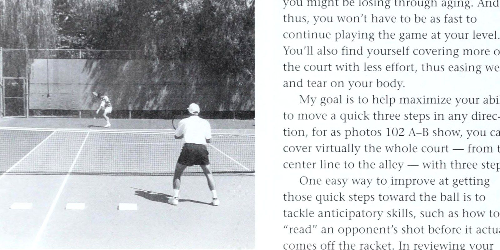
Figure 14: Reading opponent's racket face in three steps — Decoding racket angle prior to impact for early anticipation.
Bảng Thuật Ngữ Đánh Đôi & Những Đúc Kết Vàng
Đường cuối sân (Baseline) Đường ranh giới ở mỗi đầu của sân thi đấu, nằm cách lưới 39 feet. (Xem sơ đồ sân ở chương 4.) Điểm break Tình huống khi người giao bóng sắp thua ván đấu mà anh ta đang giao bóng.
Break giao bóng Để thắng một ván đấu mà đối thủ là người giao bóng. (Xem thêm Giữ giao bóng.) Đường trung tâm Đường sân chơi ở cả hai bên của lưới (và đường vuông góc với nó) ngăn cách các sân giao bóng. (Xem sơ đồ sân ở chương 4.) Dấu trung tâm Dấu gạch chéo ngắn (“dấu gạch ngang”) trên sân thi đấu chia đôi mỗi đường cuối sân (Baseline). (Xem sơ đồ sân ở chương 4.) Dây trung tâm Dây được đặt ở giữa lưới và neo vào sân để duy trì chiều cao lưới 3 foot ở đường giữa.
Biểu đồ Thu thập và ghi lại số liệu thống kê về lỗi, vị trí và các chi tiết thích hợp khác của trận đấu.
Bước kiểm tra Một kỹ thuật động tác bằng chân được sử dụng khi tấn công lưới bao gồm việc đưa cả hai chân lại gần nhau trong giây lát khi tay vợt xác định hướng sút của đối phương. Còn được gọi là bước tách hoặc bước nói lắp.
Chip Chuyển động ngắn, từ cao xuống thấp về phía trước của vợt khi nó tiếp xúc với mặt sau phía dưới của quả bóng để tạo ra xoáy xuống. Ngoài ra, một cú đánh theo cách này, hoặc đánh một cú như vậy.
Chốt điểm Di chuyển mạnh mẽ và tung ra những cú đánh tấn công vào đúng cơ hội (ví dụ: khi đối thủ ở ngoài vị trí) để kết thúc điểm nhanh chóng.
Che giấu các cú đánh Để thực hiện các cú đánh mà không tiết lộ trước tốc độ, hướng hoặc độ cao dự định của chúng.
Court Bề mặt thi đấu. (Xem sơ đồ sân ở chương 4.) Cú đánh chéo sân Một quả bóng được đánh theo đường chéo từ một góc hoặc một bên sân, qua lưới, tới góc hoặc bên đối diện (chứ không phải dọc theo đường biên hoặc ở giữa).
Crossover Sự chuyển đổi định kỳ của các đấu thủ từ bên này sang bên kia của sân trong cuộc thi A Doubles Glossary để cân bằng ảnh hưởng của nắng, gió và các yếu tố ngoại vi khác.
Cắt góc Để di chuyển nhanh về phía trước (khi vô lê) trước cú đánh chéo sân của đối phương nhằm đánh bóng trước khi góc rộng hơn hoặc bóng di chuyển sâu hơn vào sân của bạn.
Cú sút sâu Một cú đánh trên mặt đất hoặc cú vô lê nảy vào gần đường biên ngang của đối phương hoặc một cú giao bóng chạm đất gần vạch giao bóng.
Deuce Một thuật ngữ tính điểm dùng để chỉ điểm của trận đấu là 40-40 hoặc bất kỳ điểm hòa nào của trận đấu vượt quá điểm đó.
Deuce service Court Khi giao bóng hoặc trả giao bóng, phía bên phải của đấu thủ hướng mặt vào lưới. (Xem sơ đồ sân ở chương 4.) Lỗi kép Mất một điểm do thực hiện hai lần giao bóng không thành công liên tiếp (lỗi không thực hiện được gọi là lỗi kép).
Đường biên đôi Đường biên ngoài cùng của mỗi bên sân thi đấu, nằm ở cuối đường cuối sân và vuông góc với đường biên đó.
Chỉ được sử dụng trong đánh đôi. (Xem sơ đồ sân ở chương 4.) Cú đánh dọc biên Một quả bóng được đánh từ gần đường biên dọc theo đường đó chứ không phải xuống giữa hoặc chéo sân.
Cú sút từ giữa sân Một quả bóng, thường được đánh từ sân giữa hoặc sân sau, di chuyển dọc theo tâm sân thay vì dọc theo đường biên hoặc chéo sân.
Lái xe Một cú đánh tấn công trên mặt đất (thường là trong một cuộc biểu tình cơ bản).
Drive volley Một cú vô lê cao đánh rất mạnh với tốc độ vung vợt ra sau bất thường.
Cú đánh rơi Một cú đánh mặt đất tốc độ thấp, đánh vào
* theo cách mà nó rơi ngay trên lưới với rất ít hoặc không có độ nảy về phía trước. Cú đánh này được thiết kế để giành được một điểm hoàn toàn hoặc để làm mệt mỏi đối thủ đang ở phía sau đường cuối sân hoặc lệch sang một bên sân.
Drop volley Một cú vô lê được đánh theo cách mà nó chỉ rơi qua lưới với rất ít hoặc không có độ nảy về phía trước. Còn được gọi là một cú vô lê dừng lại.
Điểm kiếm được Một điểm giành được do lỗi bắt buộc.
Sân nhanh khiến bóng trượt đi nhanh chóng.
Một bề mặt thi đấu như xi măng mà Lỗi Một quả giao bóng không thành công — thường là một bề mặt không tiếp đất vào sân giao bóng thích hợp. (Xem thêm Lỗi kép; Lỗi chân.) E.B.I. “Bóng vào đầu tiên” trong số lần giao bóng (tức là cho phép nhiều hơn hai lỗi) khi một đấu thủ giao bóng lần đầu tiên trong trận đấu. Điều này không bao giờ được chấp nhận trong quần vợt chính thức.
Mười lăm Trong tính điểm, điểm đầu tiên được ghi bởi một tay vợt hoặc một bên. Còn gọi nhầm là “năm”.
Cú đánh phẳng Một quả bóng được đánh với độ xoáy rất nhỏ.
Lỗi chân Một cú giao bóng không được phép do di chuyển chân không đúng cách. Lỗi chân thường được phạm bằng cách bước lên đường cuối sân hoặc xuống sân trước khi bóng được chạm, nhưng chúng cũng có thể được phạm bằng cách chạy dọc theo đường cuối sân trước khi giao bóng.
Lỗi cưỡng bức Một lỗi xảy ra do lối chơi mạnh của một tay vợt, chẳng hạn như không thể trả lại cú đánh đã bị đánh quá mạnh hoặc ở một góc nhọn đến mức không có đủ thời gian để phản ứng bằng một cú đánh bình thường.
Sân trước Khu vực ở mỗi bên của sân thi đấu được giới hạn bởi lưới, đường giao bóng và đường biên. (Xem sơ đồ sân ở chương 4.) Góc thuận tay Góc sân thi đấu mà tay vợt phải chạy tới để đánh cú thuận tay.
Bốn mươi Khi ghi bàn, một tay vợt hoặc một bên giành được điểm thứ ba.
Cách cầm Cách mà tay vợt nắm cán vợt, ví dụ: kiểu thuận tay hoặc trái tay kiểu phương Đông, kiểu lục địa, kiểu phương Tây hoặc kiểu bán phương Tây.
Các nét rãnh Các nét đồng đều, nhất quán — lý tưởng nhất là những nét thích hợp có thể tin cậy được dưới áp lực.
Cú chạm đất Một cú đánh trong đó bóng được đánh sau khi nó nảy lên (ngược lại với cú vô lê).
Half-volley Một cú đánh trong đó bóng chỉ cách mặt sân vài inch sau khi nó nảy lên. (Nó nên được gọi chính xác hơn là “cú đánh nửa sân.”) “Đánh sâu” Để đánh những cú đánh chạm đất liên tục tiếp đất gần đường biên cuối sân của đối phương. “Đánh ra” Để thực hiện một cú vung bóng hoàn chỉnh và không bị cản trở, bất kể áp lực.
Vùng đánh bóng Khoảng cách ngắn trên đường đi của vợt ngay trước đó và bao gồm cả điểm va chạm mà trong đó bóng có thể được đánh theo đường thẳng với mục tiêu đã định. “Đánh lên” Để đánh bóng theo quỹ đạo hướng lên trên (trong các cú đánh mặt đất, giao bóng và đánh đầu).
Giữ giao bóng Để thắng một ván trong khi giao bóng. (Xem thêm Break giao bóng.) Trong trận đấu Một cú đánh hợp lệ, đánh vào trong, sẽ giành được điểm trừ khi đối thủ trả lại.
Tòa giao cầu trái (hoặc ô) Xem Tòa giao cầu quảng cáo.
Để bóng có tính chất can thiệp nào đó (chẳng hạn như một quả bóng mà bất kỳ điểm nào được đánh qua do lăn qua sân từ một điểm liền kề).
Hãy giao bóng A chạm vào băng lưới trước khi hạ cánh vào ô giao bóng thích hợp. Hãy để các cú giao bóng được thực hiện lại và không được tính là lỗi.
Cuộc gọi đường dọc dây (Down the line) Thông báo rằng một cú đánh đã hạ cánh ngoài giới hạn.
Lob Một cú đánh chạm đất đủ cao để cú đánh vượt qua (Passing shot) vợt của đối thủ trên lưới. Được sử dụng chủ yếu để đẩy đối thủ ra khỏi lưới hoặc câu giờ để trở lại vị trí trên sân.
Lob volley Một cú sút bay cao lên không trung từ một vị trí chuyền bóng.
Bóng dài Một cú sút đi ra ngoài giới hạn ngoài đường cuối sân.
Yêu Điểm của một đấu thủ (hoặc đội) không giành được điểm nào trong một ván đấu hoặc không giành được ván nào trong một hiệp đấu.
Trận đấu Một cuộc thi giữa hai đối thủ (hoặc hai cặp tay vợt) hoàn tất khi một bên thắng một số set nhất định (thường là hai hoặc ba).
Điểm trận đấu Tình huống khi một tay vợt (hoặc đội) sẽ thắng trận đấu nếu anh ta có thể giành được điểm tiếp theo.
Midcourt Khu vực ở mỗi bên của sân thi đấu gần đường giao bóng. (Xem sơ đồ sân ở chương 4.) Phối hợp các cú đánh Để liên tục thay đổi tốc độ, độ cao và độ xoáy của các cú đánh nhằm làm nhầm lẫn dự đoán và nhịp điệu của đối thủ.
Một thuật ngữ bóng lưới đôi Một cú đánh vào lưới và rơi trở lại cùng phía với người đánh.
Tay vợt lưới Một người đã giành được vị trí trên lưới và chuẩn bị thực hiện cú vô lê.
Lốp bóng tấn công Một quả bóng được đánh ngay phía trên tầm với của vợt của một tay vợt trên lưới đối phương, thường được đánh mạnh bằng xoáy lên.
Mở đầu Một cơ hội để đánh vào nơi mà tay vợt đối phương đã để lại một khoảng trống rộng.
Thế đứng mở Một tư thế đánh trong đó bàn chân và rốn hướng về phía lưới (ngăn cản tay vợt bước vào bóng).
Overhead Một cú đánh thuận tay được đánh khi bóng cao hơn đầu của một người.
Overhit Có xu hướng dồn quá nhiều lực vào một cú đánh bằng cách đánh mạnh mà không có sự kiểm soát tương ứng.
Chơi quá mức Để thiên về một bên sân, nói chung là một chiến thuật chống lại một đối thủ cụ thể, nhưng cũng để bù đắp cho điểm yếu cụ thể của một người - ví dụ: chơi quá mức bên thuận tay hoặc bên trái tay.
Pace Tốc độ của quả bóng.
Cú sút chuyền Một quả bóng được đánh từ đường biên ngang vượt quá tầm với của một tay vợt trên lưới hoặc đến gần nó.
Mẫu quần vợt Một chuỗi các lựa chọn cú đánh đã được lên kế hoạch trước trận đấu và được lặp lại thường xuyên. Đối với nhiều tay vợt, điều này giúp giảm nhu cầu suy nghĩ quá mức trong trận đấu.
Vị trí Một cú đánh có độ chính xác cao (và thường với tốc độ tốt) đến mức đối thủ không thể chạm tới - ví dụ: quân át.
Băng cắt bắt bài trên lưới (Poaching) Di chuyển sớm vào lãnh thổ của đối tác để thực hiện cú vô lê trả giao bóng hoặc cú đánh tập trung của đối thủ.
Vị trí sẵn sàng Tư thế thoải mái mà tay vợt nên thực hiện khi chờ đợi cú đánh của đối thủ để có thể thực hiện bước đầu tiên nhanh nhất có thể về phía bóng.
Người nhận bóng Tay vợt được giao bóng.
Thu hồi Để tiếp cận cú đánh đúng vị trí của đối thủ và đưa nó trở lại lưới và trong trận đấu.
A Bảng thuật ngữ đôi Tòa giao cầu đúng (hoặc hộp) Xem Tòa giao cầu Deuce.
Chạy vòng quanh một cú đánh Jo cố tình tránh đánh một cú đánh cụ thể.
Lao vào lưới Để di chuyển mạnh mẽ từ đường cuối sân và cố gắng tận dụng cú đánh yếu của đối thủ. (Xem thêm Tấn công.) Biên độ an toàn Khoảng cách mà bóng cú đánh vượt qua (Passing shot) băng lưới và hạ cánh ở vị trí mong muốn.
Giao bóng Cú đánh đưa bóng vào cuộc ở mọi điểm.
Máy chủ Tay vợt bắt đầu chơi. Người giao bóng có hai cơ hội để đưa bóng vào phần sân giao bóng của đối phương; không làm được điều đó, anh ta sẽ mất điểm. (Xem thêm Lỗi.) Sân giao bóng (hoặc ô) Khu vực hình chữ nhật trên sân mà quả giao bóng phải tiếp đất mới có hiệu lực.
Ranh giới của bốn sân giao bóng được hình thành bởi lưới, đường biên đơn, đường giao bóng và đường giữa sân. (Xem thêm Sân giao bóng quảng cáo; Sân giao bóng Deuce; sơ đồ sân ở chương 4.) Đường giao bóng Ranh giới phía sau của các sân giao bóng, chạy song song với lưới.
Trả giao bóng Cú đánh được sử dụng để trả giao bóng.
Set Một cuộc thi được tạo thành từ một nhóm trò chơi hoàn tất khi một tay vợt hoặc một bên thắng ít nhất sáu trong khi dẫn trước tối thiểu hai ván. (Xem thêm Trận đấu; Tiebreaker.) Set point Điểm cuối cùng cần thiết để thắng một set.
Thiết lập Một quả bóng được đánh nhẹ nhàng và gần lưới đến mức sau khi nó nảy lên, đối thủ sẽ được “sắp xếp”. Cú sút góc ngắn Một quả bóng đi qua lưới đi ngang qua sân, cách xa đối phương và thông thường rơi vào phần sân giao bóng.
Cú đánh này có thể bị đánh mạnh, nhưng hầu hết tay vợt đều thực hiện được, giảm tốc độ.
Bóng ngắn Bất kỳ cú đánh nào ngoại trừ cú giao bóng chạm đất ít sâu hơn dự định, thường tạo cơ hội tấn công cho đối phương.
Phạm vi bóng ngắn Khoảng cách trên sân mà một tay vợt có thể che chắn sau khi thực hiện một cú đánh tiếp cận và vẫn đạt được vị trí “X” mong muốn để thực hiện cú vô lê, hoặc trước khi đối thủ của anh ta đánh bóng.
Bên lề Xem Đơn bên lề; Đôi bên lề.
Sidespin Một quả bóng được đánh theo hướng xoay ngang. (Xem thêm Slice.) Đường biên đơn Đường biên trong cùng của mỗi bên sân thi đấu, vuông góc với lưới và chạy dọc theo toàn bộ chiều dài của sân. Được sử dụng trong chơi đơn. (Xem sơ đồ sân ở chương 4.) Slice Trên quả giao bóng hoặc trên đầu, một quả bóng được đánh bởi mặt vợt đang chuyển động sang một bên khi nó tiếp xúc với mặt sau bên ngoài của quả bóng, do đó tạo ra xoáy ngang.
Sân chậm Một bề mặt thi đấu như đất sét khiến bóng bật lại chậm và khá cao.
Xoay chuyển động được truyền vào quả bóng ảnh hưởng đến cách nó uốn cong và nảy lên.
Tách bước Xem Bước kiểm tra.
Dừng cú bắt lưới (Volley) Xem cú bắt lưới (Volley) thả.
Chiến lược Kế hoạch tổng thể của tay vợt để giành chiến thắng, được xây dựng cẩn thận trước trận đấu để mang lại cho anh ta cơ hội tốt nhất để đánh bại một đối thủ cụ thể.
Bước giật Xem Bước kiểm tra. “Lấy hai” Một thuật ngữ được sử dụng sau một sự can thiệp vào cuộc chơi; một đối thủ lịch sự sẽ đề nghị người giao bóng “thực hiện hai lần” - bắt đầu lại trận đấu với hai lần giao bóng được phép.
Đường mục tiêu Một đường thẳng giữa vợt của người đánh và mục tiêu dự định của anh ta.
Cú đánh điện báo Để vô tình tiết lộ cho đối thủ tốc độ, hướng hoặc độ cao dự định của cú đánh của một người trước khi đánh chúng.
Tiebreaker Một phương pháp tính điểm thường được sử dụng trong giải đấu để kết thúc một hiệp đấu khi tỷ số là 6-6. Phiên bản được chấp nhận rộng rãi nhất là hệ thống 12 điểm, trong đó người chiến thắng là tay vợt đầu tiên giành được 7 điểm và dẫn trước ít nhất 2 điểm. Đấu thủ đến lượt giao bóng sẽ bắt đầu điểm đầu tiên, và sau đó đối thủ sẽ luân phiên giao bóng sau mỗi hai điểm.
Bóng xoáy lên xoay theo một trục thẳng đứng làm cho quả bóng vòng cung hướng xuống dưới và nảy lên cao. Vị trí “T” Vị trí ở mỗi bên của sân thi đấu nơi đường giữa sân gặp đường giao bóng. (Xem sơ đồ mặt sân ở chương 4.) Xoáy xuống — Bóng xoay trên một trục nằm ngang được truyền bằng cách tiếp xúc mặt dưới của quả bóng với vợt di chuyển từ cao xuống thấp. (Còn được gọi là xoáy xuống.) Điểm không đạt được Một điểm giành được do lỗi không bắt buộc.
Lỗi không bắt buộc Một lỗi xảy ra do lối chơi yếu kém của một tay vợt chứ không phải do kỹ năng của đối thủ, chẳng hạn như một pha thiết lập khiến bóng rơi vào lưới. “Lên và ra ngoài” Một khái niệm quan trọng về giao bóng và trên cao: Đầu vợt phải hướng lên trời và cách xa đầu tay vợt khi nó tiếp cận bóng và sau khi va chạm.
Mặt vợt thẳng đứng Một bề mặt đánh vợt thẳng lên và xuống khi va chạm (như thể nằm trên cạnh của nó trên bàn), trên một mặt phẳng song song với lưới.
Cú bắt lưới (Volley) Một cú đánh trong đó bóng được đánh trước khi nó nảy lên (ngược lại với cú đánh chạm đất). Vị trí “X” Vị trí trên sân mà một tay vợt muốn tiếp cận sau khi thực hiện một cú đánh tiếp cận - nằm cách đường giữa sân vài feet, theo hướng cú đánh và ở giữa đường giao bóng và lưới. Vị trí chữ “X” này đặt người chuyền bóng ở khoảng giữa nơi mà hầu hết các đối thủ có thể thực hiện các cú chuyền bóng dọc biên hoặc chéo sân.
Về Các Tác Giả Vic Braden & Bill Bruns
Hãy chơi những trận đánh đôi hay nhất từ trước đến nay!
Đã đến lúc rồi. Đây là cuốn sách
Khen ngợi Vic Braden "Vie Braden có khiếu hài hước tuyệt vời và trong cuốn sách này, anh ấy chỉ cho bạn cách tận hưởng nhiều niềm vui hơn từ trò chơi đánh đôi của bạn. Nhưng anh ấy cũng luôn là một học sinh nghiêm túc của trò chơi, và ở đây anh ấy không chỉ đưa ra các chiến lược chiến thắng mà còn chỉ cho bạn cách thực hiện các cú đánh và — chơi tích cực — đúng cách. " , : — Chris Evert "Vic đã chơi đánh đôi từ những năm 1940, nhưng dường như anh ấy luôn biết tất cả _ Chiến lược và kỹ thuật mới trước những người khác. Anh ấy còn là một nhà tâm lý học tuyệt vời và giúp tay vợt tìm được đối tác phù hợp và chơi ăn ý cùng nhau." , — Jack Kramer inl 316-10519-8 iil 'os ¢ LJ ¢ . ¢ 9780316" 105194